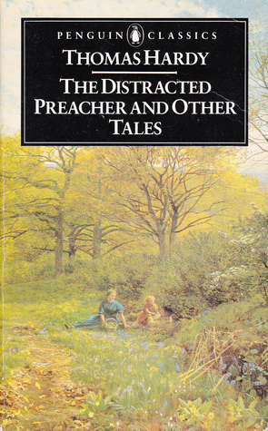

0
стр. з
0
сторінок

завантаження...

Томас Харди
Проповедник в замешательстве
Повесть перевел Сергей Андреевский
Метод чтения Ильи Франка
Сontents
CHAPTER I
HOW HIS COLD WAS CURED
(Как вылечили его простуду).
Something delayed the arrival of the Wesleyan minister (что-то задержало прибытие методистского священника; Wesleyan — происходит от фамилии Джона Уэсли, основателя Методистской церкви; minister — исполнитель, слуга; священник /неангликанский/; to minister — служить; помогать, оказывать содействие; быть священником), and a young man came temporarily in his stead (и вместо него на время приехал /другой, совсем еще/ молодой человек; in smb’s stead — вместо кого-л.). It was on the thirteenth of January 183- that Mr. Stockdale (было это тринадцатого января 183… года, когда мистер Стокдэйл), the young man in question (молодой человек, о котором идет речь; in question — обсуждаемый, о котором идет речь), made his humble entry into the village (совершил свой скромный въезд = скромно въехал в деревню), unknown, and almost unseen (/никому/ не знакомый: "не известный" и /никем/ не замеченный).
delay [dI'leI], arrival [q'raIv(q)l], temporarily ['temp(q)rqrIlI]
Something delayed the arrival of the Wesleyan minister, and a young man came temporarily in his stead. It was on the thirteenth of January 183- that Mr. Stockdale, the young man in question, made his humble entry into the village, unknown, and almost unseen.
But when those of the inhabitants (но когда те из жителей) who styled themselves of his connection (кто причислял себя к одной с ним церкви; to style — именовать, называть; connection — связь, соединение; объединение /политическое, религиозное/) became acquainted with him (/ближе/ с ним познакомились; to become acquainted — познакомиться), they were rather pleased with the substitute than otherwise (они этой замене скорее обрадовались, чем наоборот), though he had scarcely as yet acquired ballast of character (хотя он пока еще вряд ли приобрел твердость характера; as yet — пока еще; ballast — балласт; уравновешенность, устойчивость /характера/) sufficient to steady the consciences of the hundred-and-forty Methodists of pure blood (достаточную, чтобы укрепить моральный дух ста сорока "чистокровных" методистов; conscience — совесть; сознание) who, at this time, lived in Nether-Moynton (которые в это время проживали в Недер-Мойнтоне), and to give in addition supplementary support to the mixed race (и вдобавок оказать дополнительную поддержку /представителям/ "смешанной расы"; to give support — оказывать поддержку) which went to church in the morning and chapel in the evening (которые ходили в церковь по утрам, а на собрания методистов — по вечерам; chapel — часовня; неангликанская церковь, сектантский храм), or when there was a tea (или когда там устраивались чаепития: "когда там был чай") —as many as a hundred-and-ten people more, all told (еще в общей сложности сто десять человек; as many as — так много, как; more — больше; еще, вдобавок; all told — все вместе, в общей сложности), and including the parish-clerk in the winter-time (включая приходского псаломщика, /который ходил на собрания/ в зимнее время), when it was too dark for the vicar to observe (когда было слишком темно, чтобы викарий /смог/ разглядеть: "заметить") who passed up the street at seven o’clock (кто проходит по улице в семь часов) —which, to be just to him, he was never anxious to do (что — /нужно/ быть справедливым к нему — его никогда особо не тревожило: "он никогда не стремился делать"; anxious — беспокоящийся, тревожащийся; стремящийся /к чему-л./, страстно желающий /чего-л./).
acquainted [q'kweIntId], acquire [q'kwaIq], conscience ['kOnSqns]
But when those of the inhabitants who styled themselves of his connection became acquainted with him, they were rather pleased with the substitute than otherwise, though he had scarcely as yet acquired ballast of character sufficient to steady the consciences of the hundred-and-forty Methodists of pure blood who, at this time, lived in Nether-Moynton, and to give in addition supplementary support to the mixed race which went to church in the morning and chapel in the evening, or when there was a tea—as many as a hundred-and-ten people more, all told, and including the parish-clerk in the winter-time, when it was too dark for the vicar to observe who passed up the street at seven o’clock—which, to be just to him, he was never anxious to do.
It was owing to this overlapping of creeds (именно благодаря этому совмещению вероисповеданий) that the celebrated population-puzzle arose (и родилась: "возникла" знаменитая загадка /касательно численности/ населения; to arise — восходить, подниматься; возникать, появляться) among the denser gentry of the district around Nether-Moynton (среди = в умах более недалеких /представителей/ мелкопоместного дворянства, /проживающего/ в окрестностях: "вокруг" Недер-Мойнтона; dense — густой; тупой, глупый): how could it be (как могло так случиться) that a parish containing fifteen score of strong full-grown Episcopalians (что в приходе, имевшем: "содержащем" триста ревностных приверженцев епископальной церкви, /достигших/ совершеннолетия; fifteen — пятнадцать; score — двадцать; strong — сильный, крепкий; твердый, убежденный; full-grown — "полностью выросший", взрослый; совершеннолетний), and nearly thirteen score of well-matured Dissenters (и около двухсот шестидесяти убежденных методистов; thirteen — тринадцать; score — два десятка; well- /прист./ — хорошо, вполне; matured — зрелый, спелый; сложившийся, сформировавшийся; Dissenters — диссентеры /протестантские секты, отделившиеся от англиканской церкви/), numbered barely two-and-twenty score adults in all (в целом едва насчитывалось четыреста сорок взрослых = совершеннолетних /жителей/; to number — насчитывать; number — число, количество; in all — всего)?
puzzle ['pAzl], Episcopalians [I"pIskq'peIlIqnz], adult ['xdAlt]
It was owing to this overlapping of creeds that the celebrated population-puzzle arose among the denser gentry of the district around Nether-Moynton: how could it be that a parish containing fifteen score of strong full-grown Episcopalians, and nearly thirteen score of well-matured Dissenters, numbered barely two-and-twenty score adults in all?
The young man being personally interesting (/поскольку/ молодой священник: "человек" был недурен собой: "был интересен лично"), those with whom he came in contact (те, кто с ним /уже/ познакомился; to come in contact with — сталкиваться, встречаться) were content to waive for a while (были рады: "довольны" отложить на некоторое время; to waive — отказываться /от права, требования/; временно откладывать) the graver question of his sufficiency (более важный вопрос о его компетентности; sufficiency — достаток; достаточность, обоснованность). It is said that at this time of his life his eyes were affectionate (поговаривают, будто в этот период его жизни его глаза светились любовью: "были любящими"; time — время; период времени, пора; affection — любовь, страсть), though without a ray of levity (однако же без намека на легкомыслие; though — хотя, несмотря на; ray — луч; слабый свет, проблеск); that his hair was curly, and his figure tall (что волосы его вились: "были вьющимися", и ростом он был высок: "его фигура была высокой"); that he was, in short, a very lovable youth (что был он, одним словом, весьма привлекательным юношей; in short — вкратце, короче говоря), who won upon his female hearers (который покорял своих прихожанок; to win up/on smb. — постепенно завоевывать чье-л. признание; female — женского пола, женский; hearer — слушатель; прихожанин) as soon as they saw and heard him (как только они видели и слышали его), and caused them to say (и вынуждал их говорить = и им приходилось говорить; to cause — быть причиной, поводом; заставлять, побуждать), ‘Why didn’t we know of this before he came (и почему мы не знали об этом до того, как он приехал), that we might have gied him a warmer welcome (иначе мы могли бы оказать ему более теплый прием; to gie /шотл./ = to give; welcome — приветствие; радушный прием)!’
sufficiency [sq'fIS(q)nsI], figure ['fIgq], cause [kO:z]
The young man being personally interesting, those with whom he came in contact were content to waive for a while the graver question of his sufficiency. It is said that at this time of his life his eyes were affectionate, though without a ray of levity; that his hair was curly, and his figure tall; that he was, in short, a very lovable youth, who won upon his female hearers as soon as they saw and heard him, and caused them to say, ‘Why didn’t we know of this before he came, that we might have gied him a warmer welcome!’
The fact was that (дело в том, что; fact — обстоятельство, событие; факт), knowing him to be only provisionally selected (зная, что он прислан: "выбран" только на время), and expecting nothing remarkable in his person or doctrine (и не ожидая ничего выдающегося от его личности или /его/ проповедей; doctrine — учение, доктрина; вероучение), they and the rest of his flock in Nether-Moynton (они и вся остальная его паства в Недер-Мойнтоне; flock — стадо; паства) had felt almost as indifferent about his advent (отнеслись почти также равнодушно: "почувствовали себя почти такими же равнодушными" к его прибытию; to feel — ощупывать, осязать; чувствовать) as if they had been the soundest church-going parishioners in the country (как если бы они были самыми усердными, регулярно посещающими церковь прихожанами во /всей/ стране; sound — здоровый, крепкий; устойчивый, стабильный), and he their true and appointed parson (а он — их настоящим и законным: "назначенным" пастором; true — верный, преданный; истинный, настоящий).
provisionally [prq'vIZqnlI], remarkable [rI'mQ:kqbl], almost ['O:lmoust]
The fact was that, knowing him to be only provisionally selected, and expecting nothing remarkable in his person or doctrine, they and the rest of his flock in Nether-Moynton had felt almost as indifferent about his advent as if they had been the soundest church-going parishioners in the country, and he their true and appointed parson.
Thus when Stockdale set foot in the place (таким образом, когда Стокдэйл приехал в деревню; to set foot — ступить ногой, появиться; place — место, занятое пространство; город, селение) nobody had secured a lodging for him (никто /заранее/ не приготовил для него жилье; to secure — обеспечивать безопасность, надежно охранять; гарантировать, обеспечивать), and though his journey had given him a bad cold in the head (и хотя /это/ его путешествие наградило его сильной простудой; bad — плохой, скверный; сильный /о боли, холоде/; cold in the head — насморк, простуда), he was forced to attend to that business himself (он был вынужден сам заняться этим вопросом; to attend — заботиться, уделять внимание; business — дело, занятие; трудное/хлопотное дело). On inquiry he learnt (из расспросов он узнал; inquiry — вопрос, запрос; наведение справок; to learn — учиться, учить /что-л./; узнавать) that the only possible accommodation in the village (что единственное возможное жилье в деревне; accommodation — приспособление; пристанище, приют) would be found at the house of one Mrs. Lizzy Newberry (можно найти в доме некоей миссис Лиззи Ньюбери; one — один, единственный; некий), at the upper end of the street (в начале: "в верхнем конце" улицы).
though [Dqu], inquiry [In'kwaI(q)rI], upper ['Apq]
Thus when Stockdale set foot in the place nobody had secured a lodging for him, and though his journey had given him a bad cold in the head, he was forced to attend to that business himself. On inquiry he learnt that the only possible accommodation in the village would be found at the house of one Mrs. Lizzy Newberry, at the upper end of the street.
It was a youth who gave this information (эти сведения ему сообщил: "предоставил" один юноша; to give — давать; предоставлять), and Stockdale asked him who Mrs. Newberry might be (и Стокдэйл спросил его, кто такая миссис Ньюбери: "кем миссис Ньюбери может быть").
The boy said that she was a widow-woman (парень сказал, что /эта/ женщина — вдова), who had got no husband, because he was dead (у которой нет мужа, потому что он умер; to have got — иметь, обладать). Mr. Newberry, he added (он добавил, что мистер Ньюбери), had been a well-to-do man enough, as the saying was (был довольно зажиточным человеком, как поговаривают; as the saying is — как говорится), and a farmer (и /имел/ ферму); but he had gone off in a decline (но умер от какой-то тяжелой болезни; to go off — умирать; decline — падение, спад; изнурительная болезнь). As regarded Mrs. Newberry’s serious side, Stockdale gathered (что же касается серьезной = религиозной стороны миссис Ньюбери, то Стокдэйл пришел к выводу; to gather — собирать/ся/; делать вывод, умозаключение) that she was one of the trimmers (что она была одной из тех беспринципных людей; trimmer — тот, кто приводит что-л. в порядок; приспособленец, оппортунист) who went to church and chapel both (кто ходил и в церковь, и в молельню).
youth [jHT], husband ['hAzbqnd], church [tSE:tS]
It was a youth who gave this information, and Stockdale asked him who Mrs. Newberry might be.
The boy said that she was a widow-woman, who had got no husband, because he was dead. Mr. Newberry, he added, had been a well-to-do man enough, as the saying was, and a farmer; but he had gone off in a decline. As regarded Mrs. Newberry’s serious side, Stockdale gathered that she was one of the trimmers who went to church and chapel both.
‘I’ll go there,’ said Stockdale (я пойду туда, — сказал Стокдэйл), feeling that, in the absence of purely sectarian lodgings (понимая, что при отсутствии комнат внаем у безупречных методистов; to feel — ощупывать, осязать; чувствовать; понимать, сознавать; purely — чисто, без примесей; безупречно; sectarian — сектантский; принадлежащий к определенному вероисповеданию; lodging — жилье, жилище; lodgings — сдаваемая комната), he could do no better (ничего лучшего он сделать не может).
‘She’s a little particular, and won’t hae gover’ment folks (она немного привередлива и не пустит /к себе/ представителей властей; particular — отдельный, особый; привередливый, разборчивый; to hae /шотл./= to have — иметь, обладать; принимать /кого-л. в качестве гостя/; gover’ment /разг./ = government — управление; правительство; folks — люди, определенная группа людей), or curates, or the pa’son’s friends, or such like (викариев, всяких там проповедников и прочих в том же духе; pa’son /разг./ = parson — священник /обычно протестантский/; friend — друг; коллега; such — такой, подобный; like — что-л. подобное или похожее),’ said the lad dubiously (с сомнением сказал парень).
sectarian [sek'te(q)rIqn], curate ['kjuqrqt], dubiously ['dju:bIqslI]
‘I’ll go there,’ said Stockdale, feeling that, in the absence of purely sectarian lodgings, he could do no better.
‘She’s a little particular, and won’t hae gover’ment folks, or curates, or the pa’son’s friends, or such like,’ said the lad dubiously.
‘Ah, that may be a promising sign: I’ll call (о, возможно, это многообещающий знак: я зайду /к ней/; to call — кричать, окликать; заходить, навещать). Or no; just you go up and ask first (или нет, ты сходи и спроси сперва; just — просто, всего лишь) if she can find room for me (не найдется ли у нее комнаты для меня: "может ли она найти комнату для меня"). I have to see one or two persons on another matter (мне нужно еще кое с кем встретиться: "увидеть одного-двух человек" по другому делу; to see — видеть; видеться, встречаться; matter — вещество, материал; дело, вопрос). You will find me down at the carrier’s (ты найдешь меня в конторе у возчика; carrier — носильщик; возчик, перевозчик; to carry — носить, нести; везти, перевозить; carrier’s /зд./ = carrier’s office/house).’
In a quarter of an hour the lad came back (через четверть часа парень вернулся; to come back — возвращаться), and said that Mrs. Newberry would have no objection to accommodate him (и сказал, что у миссис Ньюбери не будет возражений разместить его = что миссис Ньюбери не против разместить его), whereupon Stockdale called at the house (после чего Стокдэйл отправился /к ней/; to call at a house — зайти в дом).
sign [saIn], first [fE:st], carrier ['kxrIq]
‘Ah, that may be a promising sign: I’ll call. Or no; just you go up and ask first if she can find room for me. I have to see one or two persons on another matter. You will find me down at the carrier’s.’
In a quarter of an hour the lad came back, and said that Mrs. Newberry would have no objection to accommodate him, whereupon Stockdale called at the house.
It stood within a garden-hedge (он = дом стоял, окруженный живой изгородью; within — внутри, с внутренней стороны; garden — сад; hedge — /живая/ изгородь), and seemed to be roomy and comfortable (и казался просторным и удобным). He saw an elderly woman (он увидел пожилую женщину), with whom he made arrangements to come the same night (с которой договорился, что придет тем же вечером; to make agreements — заключать соглашение, уславливаться), since there was no inn in the place (поскольку гостиницы в деревне не было), and he wished to house himself as soon as possible (а ему хотелось устроиться как можно быстрее: "так быстро, как возможно"; to house — предоставлять жилище; квартировать, размещаться); the village being a local centre (это селение являлось центром прихода; local — местный; приходской /зд./) from which he was to radiate at once to the different small chapels in the neighbourhood (из которого он должен был распространять свет /своей веры/ на все окрестные часовенки: "на различные маленькие часовни по соседству"; to radiate — излучать, испускать /лучи/; распространять). He forthwith sent his luggage to Mrs. Newberry’s from the carrier’s (он тотчас же отослал свой багаж из /конторы/ возчика в дом миссис Ньюбери; to send), where he had taken shelter (где уже нашел себе пристанище; to take shelter — "принять убежище", приютиться), and in the evening walked up to his temporary home (и вечером пошел к своему временному жилищу).
neighbourhood ['neIbqhud], luggage ['lAgIdZ], evening ['i:vnIN]
It stood within a garden-hedge, and seemed to be roomy and comfortable. He saw an elderly woman, with whom he made arrangements to come the same night, since there was no inn in the place, and he wished to house himself as soon as possible; the village being a local centre from which he was to radiate at once to the different small chapels in the neighbourhood. He forthwith sent his luggage to Mrs. Newberry’s from the carrier’s, where he had taken shelter, and in the evening walked up to his temporary home.
As he now lived there, Stockdale felt it unnecessary to knock at the door (поскольку он теперь там жил, Стокдэйл посчитал излишним стучать в дверь; to feel — ощупывать, осязать; чувствовать; полагать, считать); and entering quietly he had the pleasure of hearing footsteps scudding away (и тихонько войдя, он имел удовольствие услышать /чьи-то/ стремительно удаляющиеся шаги; to scud — двигаться быстро и плавно, скользить) like mice into the back quarters (будто /шорох/ мышей, /бросившихся наутек/ в дальние комнаты; back — задний; отдаленный, дальний; quarters — помещение, жилище). He advanced to the parlour, as the front room was called (он проследовал в гостиную, как именовалась передняя комната; to advance — продвигаться, идти вперед), though its stone floor was scarcely disguised by the carpet (хотя ее каменному полу едва хватало ковра; scarce — скудный; to disguise — маскировать, изменять облик; скрывать), which only over-laid the trodden areas (который перекрывал лишь те участки, /по которым чаще всего/ ступали; to overlay; to tread — ступать, шагать), leaving sandy deserts under the bulging mouldings of the table-legs (оставляя песчаные островки: "песчаные пустыни" под разбухшими от литья ножками стола), playing with brass furniture (которые отражались в медной отделке мебели; to play — играть, забавляться).
unnecessary [An'nesqs(q)rI], quietly ['kwaIqtlI], scarcely ['skFqslI]
As he now lived there, Stockdale felt it unnecessary to knock at the door; and entering quietly he had the pleasure of hearing footsteps scudding away like mice into the back quarters. He advanced to the parlour, as the front room was called, though its stone floor was scarcely disguised by the carpet, which only over-laid the trodden areas, leaving sandy deserts under the bulging mouldings of the table-legs, playing with brass furniture.
But the room looked snug and cheerful (однако комната выглядела уютно и весело). The firelight shone out brightly (от огня в камине шел яркий свет; to shine out — сверкать, блистать), trembling on the knobs and handles (подрагивавший на шишечках и ручках), and lurking in great strength on the under surface of the chimney-piece (снизу заливавший собою каминную полку: "и скрывавшийся во множестве на нижней поверхности каминной полки"; in great strength — в огромном количестве). A deep arm-chair, covered with horsehair (глубокое кресло, покрытое /циновкой/ из конского волоса), and studded with a countless throng of brass nails (и обитое бесчисленным множеством медных гвоздиков), was pulled up on one side of the fireplace (с одной стороны было придвинуто к камину). The tea-things were on the table (на столе стояла чайная посуда), the teapot cover was open (крышка с чайника была снята; open — открытый, раскрытый; неприкрытый, незакрытый), and a little hand-bell had been laid at that precise point (а маленький колокольчик положили в точности на то место; to lay; point — точка; место, пункт) towards which a person seated in the great chair (куда: "к которому" человек, сидящий в кресле; great chair = arm-chair — кресло) might be expected instinctively to stretch his hand (предположительно мог бы инстинктивно протянуть руку; to expect —ожидать, предполагать).
cheerful ['tSIqf(q)l], surface ['sq:fIs], horsehair ['hO:shFq]
But the room looked snug and cheerful. The firelight shone out brightly, trembling on the knobs and handles, and lurking in great strength on the under surface of the chimney-piece. A deep arm-chair, covered with horsehair, and studded with a countless throng of brass nails, was pulled up on one side of the fireplace. The tea-things were on the table, the teapot cover was open, and a little hand-bell had been laid at that precise point towards which a person seated in the great chair might be expected instinctively to stretch his hand.
Stockdale sat down, not objecting to his experience of the room thus far (Стокдэйл уселся /за стол/, не выражая /никакого/ недовольства первым впечатлением от /вида/ комнаты; to sit down — усаживаться, занимать свое место; to object — возражать; выражать неодобрение; experience — /жизненный/ опыт; впечатление; thus far — до сих пор), and began his residence by tinkling the bell (и начал свое проживание /здесь с того, что/ позвонил в колокольчик; to begin). A little girl crept in at the summons, and made tea for him (на этот вызов тихонько вошла маленькая девочка и сделала = налила ему чаю; to creep — красться, прокрадываться). Her name, she said, was Marther Sarer, and she lived out there (она сказала, что имя ее — Мартэ-Сарэ, а живет она — вон там), nodding towards the road and village generally (кивнув неопределенно в сторону дороги и деревни; generally — обычно, как правило; в общем смысле). Before Stockdale had got far with his meal (прежде чем Стокдэйл /смог/ приступить к чаепитию; to get far — продвигаться /вперед/; meal — принятие пищи), a tap sounded on the door behind him (раздался: "прозвучал" стук в дверь позади него), and on his telling the inquirer to come in (и после того, как он велел стучавшему войти; on — по, после /указывает на последовательность, очередность наступления событий, действий/; to tell — рассказывать; приказывать, настоятельно просить; to inquire — спрашивать, осведомляться), a rustle of garments caused him to turn his head (шелест юбок заставил его повернуть голову; garment — предмет одежды).
experience [Ik'spI(q)rIqns], generally ['dZen(q)rqlI], door [dO:]
Stockdale sat down, not objecting to his experience of the room thus far, and began his residence by tinkling the bell. A little girl crept in at the summons, and made tea for him. Her name, she said, was Marther Sarer, and she lived out there, nodding towards the road and village generally. Before Stockdale had got far with his meal, a tap sounded on the door behind him, and on his telling the inquirer to come in, a rustle of garments caused him to turn his head.
He saw before him a fine and extremely well-made young woman (он увидел перед собой прекрасную и на редкость хорошо сложенную молодую женщину; fine — ясный, хороший; прекрасный; extremely — чрезвычайно, в высшей степени), with dark hair, a wide, sensible, beautiful forehead (с темными волосами, широким, умным, красивым лбом; sensible — чувствующий, чувствительный; благоразумный, здравомыслящий), eyes that warmed him before he knew it (взглядом, который согрел его, прежде чем он это осознал; eye — глаз, око; взгляд; to know — знать; понимать, осознавать), and a mouth that was in itself a picture to all appreciative souls (и ротиком, который представлял собой шедевр для каждого ценителя /красоты/; to be a picture — быть очень приятным на вид; all — все; всякий, любой; appreciative — высоко ценящий /что-л./; хорошо разбирающийся /в чем-л./; soul — душа; человек).
‘Can I get you anything else for tea (могу я предложить: "подать" вам к чаю что-то еще; to get — получать; приносить)?’ she said, coming forward a step or two (сказала = спросила она, делая несколько шагов вперед: "подходя вперед на шаг или два"), an expression of liveliness on her features (/при этом/ черты ее лица выражали оживление; expression — выражение), and her hand waving the door by its edge (а рука /держалась/ за край двери, покачивая ее; to wave — колыхать/ся/, волновать/ся/).
extremely [Ik'stri:mlI], beautiful ['bju:tIf(q)l], forehead ['fOrId, 'fO:hed]
He saw before him a fine and extremely well-made young woman, with dark hair, a wide, sensible, beautiful forehead, eyes that warmed him before he knew it, and a mouth that was in itself a picture to all appreciative souls.
‘Can I get you anything else for tea?’ she said, coming forward a step or two, an expression of liveliness on her features, and her hand waving the door by its edge.
‘Nothing, thank you,’ said Stockdale, thinking less of what he replied (ничего, благодарю вас, — сказал Стокдэйл, думая меньше о том, что он отвечает) than of what might be her relation to the household (нежели о том, какова ее роль в этом доме: "каким могло быть ее отношение к домочадцам").
‘You are quite sure?’ said the young woman (вы совершенно /в этом/ уверены? — сказала молодая женщина), apparently aware that he had not considered his answer (очевидно догадавшись, что он не обдумывал свой ответ; aware — знающий, осознающий /что-л./).
He conscientiously examined the tea-things (он внимательно осмотрел чайные принадлежности), and found them all there (и обнаружил, что все на месте: "и обнаружил их все там"; to find). ‘Quite sure, Miss Newberry,’ he said (совершенно уверен, мисс Ньюбери, — сказал он).
‘It is Mrs. Newberry,’ she said (миссис Ньюбери). ‘Lizzy Newberry, I used to be Lizzy Simpkins (Лиззи Ньюбери, раньше я была Лиззи Симпкинс; used to — "иметь обыкновение", оборот используется при описании событий или состояний, которые имели место в прошлом, а потом прекратились или изменились).’
sure [Suq], aware [q'wFq], conscientiously ["kOnSI'enSqslI]
‘Nothing, thank you,’ said Stockdale, thinking less of what he replied than of what might be her relation to the household.
‘You are quite sure?’ said the young woman, apparently aware that he had not considered his answer.
He conscientiously examined the tea-things, and found them all there. ‘Quite sure, Miss Newberry,’ he said.
‘It is Mrs. Newberry,’ she said. ‘Lizzy Newberry, I used to be Lizzy Simpkins.’
‘O, I beg your pardon, Mrs. Newberry (о, прошу прощения, миссис Ньюбери).’ And before he had occasion to say more she left the room (и прежде чем он смог добавить что-то еще: "прежде чем он имел возможность сказать больше", она покинула комнату; to leave).
Stockdale remained in some doubt (Стокдэйл оставался в некоторых сомнениях) till Martha Sarah came to clear the table (пока не пришла Марта-Сара, чтобы убрать со стола; to clear — очищать; to clear the table — убирать посуду со стола). ‘Whose house is this, my little woman,’ said he (чей это дом, моя маленькая хозяюшка, — сказал он; woman — женщина; служанка).
‘Mrs. Lizzy Newberry’s, sir (миссис Лиззи Ньюбери, сэр).’
‘Then Mrs. Newberry is not the old lady I saw this afternoon (значит, миссис Ньюбери — это не та пожилая дама, которую я видел сегодня днем)?’
‘No. That’s Mrs. Newberry’s mother (нет, то была мать миссис Ньюбери). It was Mrs. Newberry who comed in to you just by now (а вот только что к вам приходила сама миссис Ньюбери; comed /зд./ = came), because she wanted to see if you was good-looking (потому что "она" хотела посмотреть, хорошо ли вы выглядите = хотела посмотреть, каков вы из себя).’
occasion [q'keIZ(q)n], doubt [daut], because [bI'kOz]
‘O, I beg your pardon, Mrs. Newberry.’ And before he had occasion to say more she left the room.
Stockdale remained in some doubt till Martha Sarah came to clear the table. ‘Whose house is this, my little woman,’ said he.
‘Mrs. Lizzy Newberry’s, sir.’
‘Then Mrs. Newberry is not the old lady I saw this afternoon?’
‘No. That’s Mrs. Newberry’s mother. It was Mrs. Newberry who comed in to you just by now, because she wanted to see if you was good-looking.’
Later in the evening, when Stockdale was about to begin supper (позже вечером, когда Стокдэйл только собрался поужинать: "собирался начать ужин"; to be about — собираться /что-л. сделать/), she came again (она пришла снова). ‘I have come myself, Mr. Stockdale,’ she said (я пришла сама, мистер Стокдэйл, — сказала она). The minister stood up in acknowledgment of the honour (священник поднялся в знак того, что оценил /оказанную ему/ честь; to stand; acknowledgment — признание; благодарность, признательность). ‘I am afraid little Marther might not make you understand (боюсь, маленькая Марта не смогла вам понятно объяснить: "возможно, не дала вам понять"; to make smb. do smth. — заставлять, побуждать кого-л. сделать что-л.). What will you have for supper (что вы желаете на ужин)?—there’s cold rabbit, and there’s a ham uncut (есть холодный кролик и есть цельный: "неразрезанный" окорок).’
Stockdale said he could get on nicely with those viands (Стокдэйл сказал, что может вполне обойтись этой едой; to get on — делать успехи; viands — пища, провизия), and supper was laid (и ужин был подан; to lay — класть, положить; накрывать /на стол/). He had no more than cut a slice (только он отрезал ломтик = не успел он отрезать ломтик) when tap-tap came to the door again (как снова раздался стук в дверь).
acknowledgment [qk'nOlIdZmqnt], honour ['Onq], viand ['vaIqnd]
Later in the evening, when Stockdale was about to begin supper, she came again. ‘I have come myself, Mr. Stockdale,’ she said. The minister stood up in acknowledgment of the honour. ‘I am afraid little Marther might not make you understand. What will you have for supper?—there’s cold rabbit, and there’s a ham uncut.’
Stockdale said he could get on nicely with those viands, and supper was laid. He had no more than cut a slice when tap-tap came to the door again.
The minister had already learnt (священник уже запомнил; to learn — изучать /что-л./, учиться /чему-л./; усваивать) that this particular rhythm in taps denoted the fingers of his enkindling landlady (что эта особенная ритмичность в постукивании указывает на пальчики его вдохновляющей/воодушевляющей = вызывающей воодушевление домовладелицы; to denote — указывать, обозначать; to enkindle — зажигать, воспламенять; вдохновлять, воодушевлять), and the doomed young fellow buried his first mouthful under a look of receptive blandness (и обреченный молодой человек проглотил свой первый кусок, /скроив/ внимательно-вежливую мину; to bury — хоронить, погребать; прятать, скрывать; mouthful — полный рот /чего-л./; кусок, глоток; look — взгляд; выражение /лица/; receptive — чувствительный, чувствующий; bland — вкрадчивый, льстивый; вежливый).
‘We have a chicken in the house, Mr. Stockdale (еще у нас есть цыпленок: "у нас в доме есть цыпленок", мистер Стокдэйл) —I quite forgot to mention it just now (я совсем забыла о нем упомянуть только что). Perhaps you would like Marther Sarer to bring it up (может быть вы бы хотели, чтоб Мартэ-Сарэ принесла его)?’
particular [pq'tIkjulq], rhythm ['rIDm], receptive [rI'septIv]
The minister had already learnt that this particular rhythm in taps denoted the fingers of his enkindling landlady, and the doomed young fellow buried his first mouthful under a look of receptive blandness.
‘We have a chicken in the house, Mr. Stockdale—I quite forgot to mention it just now. Perhaps you would like Marther Sarer to bring it up?’
Stockdale had advanced far enough in the art of being a young man (Стокдэйл уже достаточно овладел искусством галантности: "достаточно далеко продвинулся в искусстве быть молодым человеком") to say that he did not want the chicken (чтобы сказать, что он не хочет цыпленка), unless she brought it up herself (разве только она принесет его сама; to bring); but when it was uttered (но когда это было произнесено = но произнеся это) he blushed at the daring gallantry of the speech (он залился румянцем от дерзкой прямоты таких слов; gallantry — учтивость, любезность; храбрость; speech — речь), perhaps a shade too strong for a serious man and a minister (вероятно, излишне откровенных для серьезного человека и священника; a shade — немного; shade — тень; strong — сильный, крепкий; грубый, прямой /о языке/). In three minutes the chicken appeared (через три минуты цыпленок появился), but, to his great surprise, only in the hands of Martha Sarah (но к его великому удивлению лишь в руках Марты-Сары). Stockdale was disappointed (Стокдэйл был разочарован), which perhaps it was intended that he should be (чего, возможно, от него и добивались; to intend — намереваться).
enough [I'nAf], utter ['Atq], appear [q'pIq]
Stockdale had advanced far enough in the art of being a young man to say that he did not want the chicken, unless she brought it up herself; but when it was uttered he blushed at the daring gallantry of the speech, perhaps a shade too strong for a serious man and a minister. In three minutes the chicken appeared, but, to his great surprise, only in the hands of Martha Sarah. Stockdale was disappointed, which perhaps it was intended that he should be.
He had finished supper (он закончил ужинать: "закончил ужин"), and was not in the least anticipating Mrs. Newberry again that night (и совсем не ожидал снова /увидеть/ миссис Ньюбери в тот вечер; in the least — совсем, вообще; to anticipate — ожидать, предвидеть; предчувствовать, предвкушать), when she tapped and entered as before (когда она, как прежде, постучала и вошла). Stockdale’s gratified look told (довольный вид Стокдэйла говорил /о том/; to tell — рассказывать; свидетельствовать) that she had lost nothing by not appearing when expected (что она ничего не потеряла, не появившись, когда /ее/ ожидали). It happened that the cold in the head from which the young man suffered (случилось так, что простуда, от которой страдал молодой человек) had increased with the approach of night (усилилась с приближением ночи), and before she had spoken (и прежде чем она произнесла /хоть слово/; to speak) he was seized with a violent fit of sneezing (его охватил неистовый приступ чихания) which he could not anyhow repress (с которым он не мог никак справиться; to repress — подавлять).
Mrs. Newberry looked full of pity (миссис Ньюбери выглядела весьма обеспокоенной: "полной жалости"). ‘Your cold is very bad to-night, Mr. Stockdale (ваша простуда к вечеру разошлась не на шутку, мистер Стокдэйл; bad — плохой, скверный; сильный, интенсивный /разг./).’
increase [In'kri:s], approach [q'prqutS], seize [si:z]
He had finished supper, and was not in the least anticipating Mrs. Newberry again that night, when she tapped and entered as before. Stockdale’s gratified look told that she had lost nothing by not appearing when expected. It happened that the cold in the head from which the young man suffered had increased with the approach of night, and before she had spoken he was seized with a violent fit of sneezing which he could not anyhow repress.
Mrs. Newberry looked full of pity. ‘Your cold is very bad to-night, Mr. Stockdale.’
Stockdale replied that it was rather troublesome (Стокдэйл отвечал, что, /да, вещь/ довольно неприятная; troublesome — причиняющий беспокойство).
‘And I’ve a good mind’—she added archly (а мне вот что думается: "у меня есть одна хорошая мысль", — добавило она лукаво; mind — умственная деятельность, мышление; думы, помыслы), looking at the cheerless glass of water on the table (глядя на унылый стакан с водой на столе), which the abstemious minister was going to drink (которую воздержанный священник собирался выпить).
‘Yes, Mrs. Newberry (да, миссис Ньюбери)?’
‘I’ve a good mind that you should have something more likely to cure it (мне думается, что вам стоило бы выпить, чтобы вылечить ее, что-то более подходящее; to have — иметь; есть, пить) than that cold stuff (нежели вот это холодное питье; stuff — материал, вещество; продукты, напитки /все, что употребляется в пищу/).’
‘Well,’ said Stockdale, looking down at the glass (так что ж, — сказал Стокдэйл, взглянув на стакан), ‘as there is no inn here (поскольку здесь нет гостиницы), and nothing better to be got in the village, of course it will do (и ничего лучше в деревне не найти: "не получить", то сгодится и это; it will do — подойдет, годится).’
reply [rI'plaI], abstemious [qb'sti:mIqs], stuff [stAf]
Stockdale replied that it was rather troublesome.
‘And I’ve a good mind’—she added archly, looking at the cheerless glass of water on the table, which the abstemious minister was going to drink.
‘Yes, Mrs. Newberry?’
‘I’ve a good mind that you should have something more likely to cure it than that cold stuff.’
‘Well,’ said Stockdale, looking down at the glass, ‘as there is no inn here, and nothing better to be got in the village, of course it will do.’
To this she replied (на это она отвечала), ‘There is something better, not far off, though not in the house (есть кое-что получше, недалеко, хотя и не в /самом/ доме). I really think you must try it, or you may be ill (я правда думаю, вы должны это испробовать, иначе вы можете совсем расклеиться; to be ill — заболеть). Yes, Mr. Stockdale, you shall (да, мистер Стокдэйл, вам нужно /это попробовать/).’ She held up her finger, seeing that he was about to speak (она /предупредительно/ подняла вверх палец, видя, что он собирается /что-то/ сказать: "говорить"; to hold — держать; to hold up — поднимать). ‘Don’t ask what it is; wait, and you shall see (не спрашивайте, что это; подождите и вы /все сами/ увидите).’
Lizzy went away, and Stockdale waited in a pleasant mood (Лиззи вышла, и Стокдэйл /остался ее/ дожидаться в приподнятом настроении; to go away — уходить; pleasant — приятный; веселый, радостный). Presently she returned with her bonnet and cloak on, saying (вскоре она вернулась /уже/ в капоре и плаще, говоря), ‘I am so sorry, but you must help me to get it (мне так жаль= весьма сожалею, но вы должны помочь мне принести это). Mother has gone to bed (мать уже отправилась спать; to go to bed — идти/ложиться спать: "идти в постель"). Will you wrap yourself up, and come this way (оденьтесь потеплее и идите сюда; to wrap up — кутаться, тепло одеваться), and please bring that cup with you (и, пожалуйста, возьмите вон ту чашку с собой)?’
really ['rI(q)lI], pleasant ['plez(q)nt], return [rI'tE:n]
To this she replied, ‘There is something better, not far off, though not in the house. I really think you must try it, or you may be ill. Yes, Mr. Stockdale, you shall.’ She held up her finger, seeing that he was about to speak. ‘Don’t ask what it is; wait, and you shall see.’
Lizzy went away, and Stockdale waited in a pleasant mood. Presently she returned with her bonnet and cloak on, saying, ‘I am so sorry, but you must help me to get it. Mother has gone to bed. Will you wrap yourself up, and come this way, and please bring that cup with you?’
Stockdale, a lonely young fellow (Стокдэйл, одинокий молодой человек), who had for weeks felt a great craving for somebody (который неделями испытывал страстное желание /найти/ кого-то; to feel — трогать, осязать; испытывать, ощущать) on whom to throw away superfluous interest, and even tenderness (на кого /можно/ направить свою чрезмерную заботу, даже нежность; to throw away — выбрасывать, отбрасывать; тратить, растрачивать; interest — интерес, увлечение; внимание, забота), was not sorry to join her (был совсем не против: "не был сожалеющим" присоединиться к ней); and followed his guide through the back door, across the garden, to the bottom (и последовал за своей проводницей через заднюю дверь, в самый конец сада; across — сквозь, через; на ту сторону; bottom — низ, нижняя часть; конец), where the boundary was a wall (где границей была стена = где он оканчивался стеной). This wall was low (эта стена была низкой), and beyond it Stockdale discerned in the night shades several grey headstones (и за ней Стокдэйл разглядел в ночной темноте несколько серых надгробных камней), and the outlines of the church roof and tower (и очертания церковной крыши и колокольни; tower /зд./ = bell tower — колокольня).
guide [gaId], boundary ['baund(q)rI], discern [dI'sE:n]
Stockdale, a lonely young fellow, who had for weeks felt a great craving for somebody on whom to throw away superfluous interest, and even tenderness, was not sorry to join her; and followed his guide through the back door, across the garden, to the bottom, where the boundary was a wall. This wall was low, and beyond it Stockdale discerned in the night shades several grey headstones, and the outlines of the church roof and tower.
‘It is easy to get up this way (вот здесь легко /будет/ перебраться; to get up — влезать, взбираться /на гору и т.п./),’ she said, stepping upon a bank which abutted on the wall (сказала она, ступая на скамью, которая примыкала к стене); then putting her foot on the top of the stonework (затем ставя ногу на верхнюю часть каменной кладки), and descending a spring inside (и спрыгивая на другую сторону: "внутрь"; to descend — спускаться, сходить; spring — прыжок, скачок), where the ground was much higher (где /уровень/ почвы располагался намного выше), as is the manner of graveyards to be (как обычно и бывает на кладбищах; manner — метод, способ; манера, поведение). Stockdale did the same (Стокдэйл проделал то же самое), and followed her in the dusk across the irregular ground (и проследовал за ней в полумраке по неровной почве) till they came to the tower door (пока они не подошли к двери колокольни), which, when they had entered, she softly closed behind them (которую, после того, как они вошли, она тихонько за собою притворила; softly — мягко; тихо).
‘You can keep a secret?’ she said, in a musical voice (вы умеете хранить тайны? — спросила она мелодичным голосом; musical — музыкальный; мелодичный).
‘Like an iron chest!’ said he fervently (как железный сейф! — пылко воскликнул: "сказал" он; chest — коробка, ящик).
easy ['i:zI], descend [dI'send], iron ['aIqn]
‘It is easy to get up this way,’ she said, stepping upon a bank which abutted on the wall; then putting her foot on the top of the stonework, and descending a spring inside, where the ground was much higher, as is the manner of graveyards to be. Stockdale did the same, and followed her in the dusk across the irregular ground till they came to the tower door, which, when they had entered, she softly closed behind them.
‘You can keep a secret?’ she said, in a musical voice.
‘Like an iron chest!’ said he fervently.
Then from under her cloak she produced a small lighted lantern (тогда из-под своего плаща она достала маленький зажженный фонарик; to produce — представлять, предъявлять), which the minister had not noticed that she carried at all (который священник /прежде/ не замечал, что она вообще его несет). The light showed them to be close to the singing-gallery stairs (в свете фонаря обнаружилось: "свет показал", что они находятся рядом с лестницей, /ведущей на/ хоры; to sing — петь; gallery — галерея; хоры), under which lay a heap of lumber of all sorts (под которой лежала груда всяческого хлама; to lie; lumber — старая мебель, громоздкие ненужные вещи; хлам, что-л. бесполезное, ненужное; of all sorts — разный, разнообразный), but consisting mostly of decayed framework, pews, panels, and pieces of flooring (состоящего главным образом из прогнивших балок, скамей, стенных панелей и досок настила; framework — каркас, несущая конструкция), that from time to time had been removed from their original fixings in the body of the edifice (которые время от времени изымались из /мест/ своего первоначального расположения в корпусе здания; to remove — передвигать, перемещать; устранять; fixing — установка, фиксация; body — туловище, тело; остов, корпус) and replaced by new (и заменялись новыми).
cloak [klquk], decay [dI'keI], edifice ['edIfIs]
Then from under her cloak she produced a small lighted lantern, which the minister had not noticed that she carried at all. The light showed them to be close to the singing-gallery stairs, under which lay a heap of lumber of all sorts, but consisting mostly of decayed framework, pews, panels, and pieces of flooring, that from time to time had been removed from their original fixings in the body of the edifice and replaced by new.
‘Perhaps you will drag some of those boards aside (может быть, вы оттащите несколько этих досок в сторону)?’ she said, holding the lantern over her head to light him better (сказала она, держа фонарик над головою, чтобы получше посветить ему). ‘Or will you take the lantern while I move them (или возьмите = подержите фонарь, пока я буду передвигать их)?’
‘I can manage it,’ said the young man (я могу с этим справиться, — сказал молодой человек; to manage — управлять; суметь /сделать/, справиться), and acting as she ordered (и, действуя, как ему было велено; to order — приказывать, распоряжаться), he uncovered, to his surprise, a row of little barrels bound with wood hoops (он обнаружил, к своему удивлению, ряд небольших бочонков, стянутых деревянными обручами; to uncover — снимать /крышку, покров/; обнаруживать; to bind), each barrel being about as large as the nave of a heavy waggon-wheel (каждый бочонок был размером со ступицу: "был таким же большим, как ступица" тяжелого тележного колеса).
When they were laid open (когда они = бочонки открылись их взглядам; to lay open — открыть, обнажить) Lizzy fixed her eyes on him (Лиззи пристально на него посмотрела; to fix one’s eyes on — уставиться на), as if she wondered what he would say (как если бы ей было интересно, что он /на это/ скажет).
board [bO:d], bound [baund], heavy ['hevI]
‘Perhaps you will drag some of those boards aside?’ she said, holding the lantern over her head to light him better. ‘Or will you take the lantern while I move them?’
‘I can manage it,’ said the young man, and acting as she ordered, he uncovered, to his surprise, a row of little barrels bound with wood hoops, each barrel being about as large as the nave of a heavy waggon-wheel.
When they were laid open Lizzy fixed her eyes on him, as if she wondered what he would say.
‘You know what they are (вы знаете, что это такое)?’ she asked, finding that he did not speak (спросила она, не дождавшись, когда он заговорит: "убедившись, что он не говорит"; to find — находить; убеждаться).
‘Yes, barrels,’ said Stockdale simply (да, /это/ — бочонки, — просто сказал он). He was an inland man (он вырос вдали от побережья; inland — внутренняя часть страны; территория, удаленная от моря или границы), the son of highly respectable parents (и /был/ сыном весьма почтенных родителей), and brought up with a single eye to the ministry (/которого/ воспитывали для единственной цели — /сделать/ священником; to bring up — воспитывать, растить; with an eye to — с намерением, с целью; ministry — служение; духовный сан); and the sight suggested nothing beyond the fact (и вид /этих бочонков/ не говорил /ему/ ни о чем ином, помимо того факта; to suggest — предлагать, советовать; наводить на мысль) that such articles were there (что именно эти предметы находились там).
‘You are quite right, they are barrels (вы совершенно правы, это — бочонки),’ she said, in an emphatic tone of candour (сказала она с подчеркнутым простодушием в голосе; tone — тон, звук; эмоциональный оттенок, окраска голоса; candour — сверкающая белизна, яркость; искренность, откровенность) that was not without a touch of irony (который был не без налета иронии = в котором послышалась насмешливая нотка; touch — касание, прикосновение; чуточка, налет).
highly ['haIlI], candour ['kxndq], touch [tAtS]
‘You know what they are?’ she asked, finding that he did not speak.
‘Yes, barrels,’ said Stockdale simply. He was an inland man, the son of highly respectable parents, and brought up with a single eye to the ministry; and the sight suggested nothing beyond the fact that such articles were there.
‘You are quite right, they are barrels,’ she said, in an emphatic tone of candour that was not without a touch of irony.
Stockdale looked at her with an eye of sudden misgiving (Стокдэйл посмотрел на нее с внезапно /зародившимся/ подозрением; eye — глаз, око; взгляд, взор; misgiving — опасение, предчувствие дурного). ‘Not smugglers’ liquor?’ he said (не контрабандное ли спиртное: "не напиток ли контрабандистов"? — сказал = спросил он).
‘Yes,’ said she (да, — сказала она). ‘They are tubs of spirit (это бочонки со спиртным; spirit — спирт; спиртной напиток) that have accidentally come over in the dark from France (которые как-то ночью: "в темноте" случайно приплыли из Франции; to come over — переезжать /в другую страну/).’
In Nether-Moynton and its vicinity at this date (в те времена в Недер-Мойнтоне и его окрестностях; date — дата, число, день; период, пора) people always smiled at the sort of sin (люди всегда усмехались при /упоминании/ того вида правонарушений; sin — грех; проступок, нарушение) called in the outside world illicit trading (который во внешнем = во всем остальном мире зовется незаконной торговлей); and these little kegs of gin and brandy were as well known to the inhabitants as turnips (и эти маленькие бочонки с джином и бренди были так же хорошо знакомы жителям /деревни/, как /обычная/ репа).
smuggler ['smAglq], liquor ['lIkq], always ['O:lw(e)Iz]
Stockdale looked at her with an eye of sudden misgiving. ‘Not smugglers’ liquor?’ he said.
‘Yes,’ said she. ‘They are tubs of spirit that have accidentally come over in the dark from France.’
In Nether-Moynton and its vicinity at this date people always smiled at the sort of sin called in the outside world illicit trading; and these little kegs of gin and brandy were as well known to the inhabitants as turnips.
So that Stockdale’s innocent ignorance, and his look of alarm (так что наивное неведение Стокдэйла и его встревоженный вид; innocent — невинный; простодушный, наивный; alarm — тревога, сигнал опасности; смятение, страх) when he guessed the sinister mystery (когда он догадался о зловещей тайне), seemed to strike Lizzy first as ludicrous (сначала показались Лиззи забавными; to strike — ударять, наносить удар; поражать, производить впечатление; ludicrous — смехотворный, нелепый), and then as very awkward for the good impression (а затем — весьма неподходящими для того впечатления; awkward — неуклюжий, неловкий; неудобный, затруднительный) that she wished to produce upon him (которое она хотела на него произвести; to produce — представлять, предъявлять; производить).
‘Smuggling is carried on here by some of the people (некоторые люди здесь занимаются контрабандой; to carry on — заниматься /чем-л./, вести /дело/),’ she said in a gentle, apologetic voice (сказала она мягким, извиняющимся голосом). ‘It has been their practice for generations (она является их привычным занятием на протяжении /многих/ поколений; practice — практика, осуществление на практике; дела, поступки /устар./), and they think it no harm (и они не видят в этом ничего дурного: "и они не думают, что это вред"). Now, will you roll out one of the tubs (а теперь, /не/ выкатите ли /сюда/ один из бочонков)?’
ignorance ['Ignqrqns], guess [ges], awkward ['O:kwqd]
So that Stockdale’s innocent ignorance, and his look of alarm when he guessed the sinister mystery, seemed to strike Lizzy first as ludicrous, and then as very awkward for the good impression that she wished to produce upon him.
‘Smuggling is carried on here by some of the people,’ she said in a gentle, apologetic voice. ‘It has been their practice for generations, and they think it no harm. Now, will you roll out one of the tubs?’
‘What to do with it?’ said the minister (и что /мы будем/ делать с ним? — спросил священник).
‘To draw a little from it to cure your cold,’ she answered (отольем немного из него, чтобы вылечить вашу простуду, — отвечала она; to draw — тащить, волочить; извлекать, опорожнять /сосуд/). ‘It is so ‘nation strong’ (этот бренди так чертовски крепок; ‘ nation /сокр., диал./ = damnation — проклятие /зд. используется для усиления/) that it drives away that sort of thing in a jiffy (что мигом выгоняет подобные вещи; to drive away —отгонять, прогонять; that sort of thing — тому подобное; in a jiffy — одним духом, в один миг). O, it is all right about our taking it (о, не беспокойтесь насчет того, что мы его возьмем; all right — все в порядке). I may have what I like (я могу брать, сколько захочу; to like — нравиться, любить; хотеть, желать); the owner of the tubs says so (так говорит владелец этих бочонков). I ought to have had some in the house (мне бы не мешало держать его немного в доме), and then I shouldn’t ha’ been put to this trouble (и тогда мне не пришлось бы /сейчас/ оказаться здесь; ha’/разг./ = have; to put to trouble — причинять кому-л. беспокойство); but I drink none myself (но я сама вообще не пью), and so I often forget to keep it indoors (и поэтому я частенько забываю /о том, что нужно/ иметь его дома; to keep — держать, не отдавать; иметь, хранить).’
draw [drO:], owner ['qunq], forget [fq'get]
‘What to do with it?’ said the minister.
‘To draw a little from it to cure your cold,’ she answered. ‘It is so ‘nation strong that it drives away that sort of thing in a jiffy. O, it is all right about our taking it. I may have what I like; the owner of the tubs says so. I ought to have had some in the house, and then I shouldn’t ha’ been put to this trouble; but I drink none myself, and so I often forget to keep it indoors.’
‘You are allowed to help yourself, I suppose (я полагаю, вам позволили /это/ брать; to help oneself — угощаться /чем-л./, брать себе /кушанье, напитки/), that you may not inform where their hiding-place is (чтобы вы не сообщили властям, где находится тайник: "потайное место")?’
‘Well, no; not that particularly (да нет, совсем не так; particularly — очень, чрезвычайно); but I may take any if I want it (но я могу брать любое количество, если мне нужно; any — сколько-нибудь, какое-либо количество; to want — хотеть, желать; нуждаться /в чем-л./). So help yourself (так что берите /не стесняйтесь/).’
‘I will, to oblige you, since you have a right to it (я возьму, чтобы угодить вам, раз вы имеете на это право),’ murmured the minister (пробормотал священник); and though he was not quite satisfied with his part in the performance (и хотя он был не совсем доволен своей ролью в этом деле; performance — исполнение, выполнение; представление, спектакль), he rolled one of the ‘tubs’ out from the corner (он выкатил один из бочонков из угла) into the middle of the tower floor (на середину пола колокольни). ‘How do you wish me to get it out (как же вы хотите, чтобы я добрался до него = до содержимого; to get out — вынимать, вытаскивать) —with a gimlet, I suppose (при помощи бурава, я полагаю)?’
particularly [pq'tIkjVlqlI], oblige [q'blaIdZ], murmur ['mE:mq]
‘You are allowed to help yourself, I suppose, that you may not inform where their hiding-place is?’
‘Well, no; not that particularly; but I may take any if I want it. So help yourself.’
‘I will, to oblige you, since you have a right to it,’ murmured the minister; and though he was not quite satisfied with his part in the performance, he rolled one of the ‘tubs’ out from the corner into the middle of the tower floor. ‘How do you wish me to get it out—with a gimlet, I suppose?’
‘No, I’ll show you,’ said his interesting companion (нет, я покажу вам, — сказала его очаровательная спутница; interesting — интересный, занимательный; привлекательный); and she held up with her other hand a shoemaker’s awl and a hammer (и продемонстрировала в другой руке сапожное шило и молоток; to hold up — показывать, выставлять напоказ). ‘You must never do these things with a gimlet (никогда нельзя делать подобные вещи при помощи бурава), because the wood-dust gets in (потому что опилки попадут внутрь; wood-dust — древесная пыль); and when the buyers pour out the brandy that would tell them (и когда покупатели станут наливать бренди, это подскажет им) that the tub had been broached (что бочонок вскрывали; to broach — делать прокол, отверстие). An awl makes no dust (а от шила опилок не будет: "шило не производит опилок"), and the hole nearly closes up again (и отверстие почти затянется со временем: "снова"; to close up — закрываться, затягиваться). Now tap one of the hoops forward (а теперь подбейте-ка один из обручей; to tap — легко ударять, стукать; forward — вперед, дальше).’
Stockdale took the hammer and did so (Стокдэйл взял молоток и сделал, как было сказано: "и сделал так").
shoemaker ['Su:"meIkq], awl [O:l], gimlet ['gImlIt]
‘No, I’ll show you,’ said his interesting companion; and she held up with her other hand a shoemaker’s awl and a hammer. ‘You must never do these things with a gimlet, because the wood-dust gets in; and when the buyers pour out the brandy that would tell them that the tub had been broached. An awl makes no dust, and the hole nearly closes up again. Now tap one of the hoops forward.’
Stockdale took the hammer and did so.
‘Now make the hole in the part that was covered by the hoop (теперь проделайте отверстие в той части, что была прикрыта обручем).’
He made the hole as directed (он сделал отверстие, как велели; to direct — направлять; приказывать, давать распоряжение). ‘It won’t run out,’ he said (оно не потечет, — сказал он; to run out — вытекать).
‘O yes it will,’ said she (о, еще как потечет: "о да, оно /потечет/", — сказала она). ‘Take the tub between your knees, and squeeze the heads (возьмите = поставьте бочонок между колен и сдавливайте днища; head — голова; днище /бочки/); and I’ll hold the cup (а я буду держать чашку).’
Stockdale obeyed (Стокдэйл повиновался); and the pressure taking effect upon the tub (и после того, как он сдавил бочонок: "и надавливание оказало воздействие на бочонок"; to take effect — оказывать воздействие), which seemed, to be thin (/доски/ которого, по-видимому, были тонкими), the spirit spirted out in a stream (спиртное полилось струей; to spirt = to spurt — забить струей, хлынуть; stream — поток, течение; струя). When the cup was full he ceased pressing (когда чашка наполнилась, он перестал давить), and the flow immediately stopped (и струя тотчас же прекратилась).
knee [ni:], squeeze [skwi:z], pressure ['preSq]
‘Now make the hole in the part that was covered by the hoop.’
He made the hole as directed. ‘It won’t run out,’ he said.
‘O yes it will,’ said she. ‘Take the tub between your knees, and squeeze the heads; and I’ll hold the cup.’
Stockdale obeyed; and the pressure taking effect upon the tub, which seemed, to be thin, the spirit spirted out in a stream. When the cup was full he ceased pressing, and the flow immediately stopped.
‘Now we must fill up the keg with water,’ said Lizzy (теперь мы должны наполнить бочонок водой, — сказала Лиззи), ‘or it will cluck like forty hens when it is handled (иначе, когда его тронут, он заквохчет, будто сорок куриц), and show that ’tis not full (и покажет = и станет понятно, что он не полон; ‘ tis = it is).’
‘But they tell you you may take it (но вам ведь сказали, что вы можете брать /отсюда/)?’
‘Yes, the smugglers (да, /это сказали/ контрабандисты): but the buyers must not know (но покупатели не должны знать) that the smugglers have been kind to me at their expense (что контрабандисты были добры ко мне за их счет; at smb’s expense — за чей-л. счет).’
‘I see,’ said Stockdale doubtfully (понимаю, — с сомнением сказал Стокдэйл; to see — видеть, смотреть; понимать, сознавать). ‘I much question the honesty of this proceeding (/но/ я сильно сомневаюсь в честности этого поступка; to question — спрашивать, задавать вопросы; подвергать сомнению).’
buyer ['baIq], expense [Ik'spens], question ['kwesʧqn]
‘Now we must fill up the keg with water,’ said Lizzy, ‘or it will cluck like forty hens when it is handled, and show that ’tis not full.’
‘But they tell you you may take it?’
‘Yes, the smugglers: but the buyers must not know that the smugglers have been kind to me at their expense.’
‘I see,’ said Stockdale doubtfully. ‘I much question the honesty of this proceeding.’
By her direction he held the tub with the hole upwards (/прислушиваясь/ к ее указаниям, он держал бочонок отверстием вверх; direction — направление; указание, распоряжение), and while he went through the process of alternately pressing and ceasing to press (и пока он то сдавливал, то прекращал сдавливать /днища бочонка/: "пока он выполнял процесс попеременного сдавливания и прекращения сдавливания"; to go through — проделывать /что-л./), she produced a bottle of water (она достала бутылку воды; to produce — представлять, предъявлять), from which she took mouthfuls (из которой набирала полный рот /воды/), conveying each to the keg (и каждый /раз/ выпускала /ее/ в бочонок; to convey — перевозить, транспортировать; перемещать) by putting her pretty lips to the hole (прикладывая свои прелестные губки к отверстию), where it was sucked in at each recovery of the cask from pressure (где она = эта вода всасывалась внутрь бочонка, когда Стокдэйл переставал его сдавливать: "при каждом восстановлении бочонка от давления"). When it was again full he plugged the hole (когда он = бочонок был снова наполнен, он = священник заткнул отверстие), knocked the hoop down to its place (ударом молотка вернул обруч на прежнее: "на его" место; to knock — стучать/ся/; бить, ударять), and buried the tub in the lumber as before (и завалил бочонок обломками досок, как и было раньше; as before — по-прежнему).
while [waIl], upwards ['Apwqdz], bury ['berI]
By her direction he held the tub with the hole upwards, and while he went through the process of alternately pressing and ceasing to press, she produced a bottle of water, from which she took mouthfuls, conveying each to the keg by putting her pretty lips to the hole, where it was sucked in at each recovery of the cask from pressure. When it was again full he plugged the hole, knocked the hoop down to its place, and buried the tub in the lumber as before.
‘Aren’t the smugglers afraid that you will tell (разве контрабандисты не боятся, что вы /на них/ донесете; to tell — рассказывать; выдавать, разглашать)?’ he asked, as they recrossed the churchyard (спросил он, когда они снова шли через кладбище; to recross — пересекать, переходить снова; cross — крест).
‘O no; they are not afraid of that (о нет, этого они не боятся). I couldn’t do such a thing (я бы /никогда/ не смогла сделать такое: "такую вещь").’
‘They have put you into a very awkward corner (они поставили вас в крайне неловкое положение: "в очень неудобный угол"; to put smb into — ставить кого-л. в /какое-л. положение/),’ said Stockdale emphatically (решительно сказал Стокдэйл; emphatically — выразительно, подчеркнуто; настойчиво, решительно). ‘You must, of course, as an honest person, sometimes feel (вы, конечно, должны как честный человек иногда понимать) that it is your duty to inform (что ваш долг сообщить /обо всем властям/) —really you must (конечно же, должны).’
churchyard ['tSE:tSjQ:d], emphatically [Im'fxtIk(q)lI], duty ['dju:tI]
‘Aren’t the smugglers afraid that you will tell?’ he asked, as they recrossed the churchyard.
‘O no; they are not afraid of that. I couldn’t do such a thing.’
‘They have put you into a very awkward corner,’ said Stockdale emphatically. ‘You must, of course, as an honest person, sometimes feel that it is your duty to inform—really you must.’
‘Well, I have never particularly felt it as a duty (ну, я никогда особенно и не считала это своим долгом; to feel — чувствовать; полагать, считать); and, besides, my first husband (и, кроме того, мой первый муж) —’ She stopped, and there was some confusion in her voice (она запнулась, в голосе ее послышалось замешательство). Stockdale was so honest and unsophisticated (Стокдэйл был настолько простодушен и наивен; honest — честный; скромный, простой; unsophisticated — неискушенный, безыскусственный) that he did not at once discern why she paused (что сразу не понял, почему она замолчала; to discern — различать, распознавать; понять, разгадать): but at last he did perceive (но в конце концов он догадался; to perceive — осознавать, постигать) that the words were a slip (что эти слова были обмолвкой = что она проговорилась; slip — скольжение; ошибка, обмолвка), and that no woman would have uttered ‘first husband’ by accident (и что ни одна женщина не произнесла бы случайно "первый муж") unless she had thought pretty frequently of a second (если бы частенько: "довольно часто" не подумывала о втором). He felt for her confusion (он посочувствовал ее замешательству; to feel for — сочувствовать), and allowed her time to recover and proceed (и дал ей время, чтобы /от него/ оправиться и продолжить; to allow — позволять, разрешать; давать, предоставлять; to recover — восстановить силы, поправиться; оправляться /от чего-л./, приходить в себя).
particularly [pq'tIkjulqlI], discern [dI'sE:n], frequently ['fri:kwqntlI]
‘Well, I have never particularly felt it as a duty; and, besides, my first husband—’ She stopped, and there was some confusion in her voice. Stockdale was so honest and unsophisticated that he did not at once discern why she paused: but at last he did perceive that the words were a slip, and that no woman would have uttered ‘first husband’ by accident unless she had thought pretty frequently of a second. He felt for her confusion, and allowed her time to recover and proceed.
‘My husband,’ she said, in a self-corrected tone (мой муж — сказала она изменившимся тоном; self- /прист./ — само- /выражает направленность действия на самого себя/; to correct — исправлять, вносить поправки; tone — тон, звук; эмоциональный оттенок, окраска голоса), ‘used to know of their doings (всегда знал об их делишках; used to — оборот используется при описании событий или состояний, которые имели место в прошлом, а потом прекратились или изменились), and so did my father, and kept the secret (и также знал мой отец, и /они/ хранили тайну; do /зд./ — употребляется во избежание повторения глагола). I cannot inform, in fact, against anybody (да я, на самом деле, не могу ни на кого доносить; in fact — фактически, по сути).’
‘I see the hardness of it,’ he continued, like a man (я понимаю /всю/ трудность этого, — продолжал он, как человек; hardness — твердость; трудность /вопроса, понимания/) who looked far into the moral of things (который глубоко: "далеко" смотрит в суть вещей; moral — правила нравственного поведения; основной принцип). ‘And it is very cruel that you should be tossed and tantalized (и это очень жестоко, что вам приходится мучиться, разрываясь) between your memories and your conscience (между памятью о ваших родных и вашей совестью; memory — память, способность запоминать; воспоминание, память /о ком-л., чем-л./). I do hope, Mrs. Newberry (я искренне надеюсь, миссис Ньюбери; do /зд./ — употребляется для усиления значения действия), that you will soon see your way out of this unpleasant position (что в скором времени вы найдете выход: "увидите путь" из этого неудобного положения).’
secret ['si:krIt], tantalize ['txntqlaIz], position [pq'zIS(q)n]
‘My husband,’ she said, in a self-corrected tone, ‘used to know of their doings, and so did my father, and kept the secret. I cannot inform, in fact, against anybody.’
‘I see the hardness of it,’ he continued, like a man who looked far into the moral of things. ‘And it is very cruel that you should be tossed and tantalized between your memories and your conscience. I do hope, Mrs. Newberry, that you will soon see your way out of this unpleasant position.’
‘Well, I don’t just now,’ she murmured (да вот, пока не нашла, — пробормотала она; just now — в настоящее время).
By this time they had passed over the wall and entered the house (к этому времени они уже перебрались через стену и вошли в дом), where she brought him a glass and hot water (где она принесла ему стакан и горячую воду; to bring), and left him to his own reflections (и оставила его /наедине/ с собственными мыслями; to leave; reflection — отражение; размышление, раздумье). He looked after her vanishing form (он смотрел вслед ее удаляющейся: "исчезающей" фигуре; form — форма, внешнее очертание; фигура /человека/), asking himself whether he, as a respectable man, and a minister (спрашивая себя как приличного человека, священника), and a shining light, even though as yet only of the halfpenny-candle sort (и как яркое /религиозное/ светило, правда пока еще из разряда свечей за полпенса; light — свет; светило, светоч; as yet — пока, до сих пор), were quite justified in doing this thing (вполне ли оправданы были его действия при нынешних обстоятельствах: "был ли /он/ вполне оправдан, делая это дело"; thing — вещь, предмет; дело; things — обстоятельства, обстановка).
brought [brO:t], whether ['weDq], halfpenny ['heIpnI]
‘Well, I don’t just now,’ she murmured.
By this time they had passed over the wall and entered the house, where she brought him a glass and hot water, and left him to his own reflections. He looked after her vanishing form, asking himself whether he, as a respectable man, and a minister, and a shining light, even though as yet only of the halfpenny-candle sort, were quite justified in doing this thing.
A sneeze settled the question (он чихнул, и это решило вопрос: "чихание решило вопрос"); and he found that when the fiery liquor was lowered (и он обнаружил, что если это бренди разбавить; fiery — огненный; острый, жгучий /о еде, напитках/; to lower — понижать) by the addition of twice or thrice the quantity of water (добавлением двойного или тройного количества воды), it was one of the prettiest cures for a cold in the head (оно становится одним из отличнейших лекарств от простуды; pretty — милый, прелестный; значительный, изрядный) that he had ever known (которые он когда-либо знал), particularly at this chilly time of the year (особенно в это промозглое время года; chill — прохлада, холод; простуда, озноб).
Stockdale sat in the deep chair about twenty minutes sipping and meditating (Стокдэйл посидел в глубоком кресле минут двадцать, потягивая /бренди/ и размышляя), till he at length took warmer views of things (пока наконец происшедшее не предстало в более спокойном свете: "пока не посмотрел на вещи теплее"; at length — наконец, в итоге; to take a view of things — смотреть, иметь взгляд на вещи), and longed for the morrow (и /ему/ захотелось, /чтобы скорей наступило/ утро; to long for — жаждать, желать), when he would see Mrs. Newberry again (когда он вновь увидит миссис Ньюбери).
fiery ['faI(q)rI], twice [twaIs], morrow ['mOrqu]
A sneeze settled the question; and he found that when the fiery liquor was lowered by the addition of twice or thrice the quantity of water, it was one of the prettiest cures for a cold in the head that he had ever known, particularly at this chilly time of the year.
Stockdale sat in the deep chair about twenty minutes sipping and meditating, till he at length took warmer views of things, and longed for the morrow, when he would see Mrs. Newberry again.
He then felt that, though chronologically at a short distance (тут он почувствовал, что, несмотря на то, что хронологически /это произойдет/ скоро; short distance — короткое расстояние), it would in an emotional sense be very long before to-morrow came (в эмоциональном смысле ждать придется очень долго, прежде чем наступит утро), and walked restlessly round the room (и беспокойно заходил по комнате). His eye was attracted by a framed and glazed sampler (его взгляд привлекла вставленная в рамку под стекло вышивка) in which a running ornament of fir-trees and peacocks (на которой орнамент из елочек и павлинов; fir-tree — хвойное дерево) surrounded the following pretty bit of sentiment (окружал следующие милые и сентиментальные строки; bit — кусочек, небольшое количество; sentiment — чувство; дух, настроение /в произведении искусства/):-
chronologically ["krOnq"lOdZIk(q)lI], emotional [I'mquS(q)nql], surround [sq'raund]
He then felt that, though chronologically at a short distance, it would in an emotional sense be very long before to-morrow came, and walked restlessly round the room. His eye was attracted by a framed and glazed sampler in which a running ornament of fir-trees and peacocks surrounded the following pretty bit of sentiment:-
‘Rose-leaves smell when roses thrive (листья роз пахнут, когда розы цветут),
Here’s my work while I’m alive (вот мой труд, пока я жива);
Rose-leaves smell when shrunk and shed (листья роз пахнут, /даже/ когда вянут и опадают; to shrink — сжиматься, съеживаться; усыхать, увядать; to shed — проливать; ронять /листья/),
Here’s my work when I am dead (вот здесь /останется/ мой труд, когда я умру).
‘Lizzy Simpkins (Лиззи Симпкинс). Fear God (страшись Божьего /гнева/). Honour the King (чти короля).
‘Aged 11 years (в возрасте 11-ти лет).
‘’Tis hers,’ he said to himself (это ее /стихи/, — сказал он про себя). ‘Heavens, how I like that name (о Боже, как мне нравится это имя; heavens — небеса, небо; боже мой! /выражает восхищение, досаду, испуг/)!’
thrive [TraIv], shrunk [SrANk], Heavens ['hev(q)nz]
‘Rose-leaves smell when roses thrive,
Here’s my work while I’m alive;
Rose-leaves smell when shrunk and shed,
Here’s my work when I am dead.
‘Lizzy Simpkins. Fear God. Honour the King.
‘Aged 11 years.
‘’Tis hers,’ he said to himself. ‘Heavens, how I like that name!’
Before he had done thinking (прежде чем он закончил думать = он еще размышлял; to have done — заканчивать, завершать) that no other name from Abigail to Zenobia would have suited his young landlady so well (что никакое другое имя от Абигейл до Зенобии не подошло бы так хорошо его молодой хозяйке), tap-tap came again upon the door (когда снова послышался стук в дверь); and the minister started (и священник вздрогнул; to start — бросаться, вскакивать; вздрагивать) as her face appeared yet another time, looking so disinterested (когда снова показалось ее лицо, выражавшее такое безразличие: "выглядевшее настолько безразличным"; another time — в другой раз) that the most ingenious would have refrained from asserting (что самый подозрительный человек воздержался бы от утверждения; ingenious — изобретательный, хитроумный) that she had come to affect his feelings by her seductive eyes (будто она пришла взволновать его чувства своими чарующими глазами; to affect — воздействовать, влиять; трогать, волновать; seductive — соблазнительный, обольстительный).
‘Would you like a fire in your room, Mr. Stockdale, on account of your cold (не /затопить/ ли камин в вашей комнате, мистер Стокдэйл, по причине вашей простуды; would you like..? — не хотите ли вы..?; fire — огонь, пламя; камин; on account of — из-за, вследствие)?’
would [wud], ingenious [In'dZi:nIqs], seductive [sI'dAktIv]
Before he had done thinking that no other name from Abigail to Zenobia would have suited his young landlady so well, tap-tap came again upon the door; and the minister started as her face appeared yet another time, looking so disinterested that the most ingenious would have refrained from asserting that she had come to affect his feelings by her seductive eyes.
‘Would you like a fire in your room, Mr. Stockdale, on account of your cold?’
The minister, being still a little pricked in the conscience (священник, которого все еще немного мучили угрызения совести; to prick — колоть; мучить, терзать) for countenancing her in watering the spirits (за то, что он помог ей разбавить спиртное водой; to countenance — поощрять, морально поддерживать; разрешать /что-л./, мириться /с чем-л./; to water — мочить, смачивать; разбавлять /водой/), saw here a way to self-chastisement (увидел в этом возможность /искупления/ путем самоотречения: "самобичевания"; way — путь, дорога; возможность, средство). ‘No, I thank you,’ he said firmly (нет, спасибо, — сказал он твердо); ‘it is not necessary (в этом нет необходимости). I have never been used to one in my life (я никогда не был привычен к такому), and it would be giving way to luxury too far (и это значило бы слишком предаться роскоши; to give way — уступать, идти на уступки; far — далеко; в значительной степени, слишком).’
‘Then I won’t insist,’ she said (тогда я не буду настаивать, — сказала она), and disconcerted him by vanishing instantly (и привела его в замешательство, тотчас же исчезнув).
countenance ['kauntInqns], necessary ['nesIs(q)rI], luxury ['lAkS(q)rI]
The minister, being still a little pricked in the conscience for countenancing her in watering the spirits, saw here a way to self-chastisement. ‘No, I thank you,’ he said firmly; ‘it is not necessary. I have never been used to one in my life, and it would be giving way to luxury too far.’
‘Then I won’t insist,’ she said, and disconcerted him by vanishing instantly.
Wondering if she was vexed by his refusal (мучаясь вопросом, не рассердилась ли она из-за его отказа; to wonder — удивляться, изумляться; задавать себе вопрос; to vex — беспокоить, тревожить; раздражать, сердить; to refuse smth — отказываться от чего-л.), he wished that he had chosen to have a fire (он пожалел, что не согласился, чтоб растопили камин; to wish — желать, хотеть; жаль, что не; to choose — выбирать; хотеть, желать /разг./), even though it should have scorched him out of bed (даже пускай он сварился бы от этого в /своей/ постели; to scorch — выжигать, иссушать) and endangered his self-discipline for a dozen days (а его самодисциплина вышла бы из-под контроля на пару недель: "на дюжину дней"; to endanger — подвергать опасности; danger — опасность). However, he consoled himself with (однако же, он утешал себя тем) what was in truth a rare consolation for a budding lover (что и в самом деле было прекрасным утешением для загорающегося от любви сердца; in truth — действительно, поистине; rare — редкий, редко встречающийся; редкостный, исключительный /разг./; to bud — давать почки; расцветать; lover — любовник; влюбленный), that he was under the same roof with Lizzy (что он находится под одной крышей с Лиззи; same — тот же самый, один и тот же); her guest, in fact, to take a poetical view of the term lodger (/и является/, по сути, ее гостем, если поэтически взглянуть: "принять поэтический взгляд" на слово "квартирант"; term — срок, определенный период; термин); and that he would certainly see her on the morrow (и что он непременно увидит ее завтра утром; morrow — утро; завтра, завтрашний день).
refusal [rI'fju:z(q)l], certainly ['sE:tnlI], view [vju:]
Wondering if she was vexed by his refusal, he wished that he had chosen to have a fire, even though it should have scorched him out of bed and endangered his self-discipline for a dozen days. However, he consoled himself with what was in truth a rare consolation for a budding lover, that he was under the same roof with Lizzy; her guest, in fact, to take a poetical view of the term lodger; and that he would certainly see her on the morrow.
The morrow came, and Stockdale rose early, his cold quite gone (утро наступило, Стокдэйл встал рано, его простуда совсем прошла; to rise — восходить; вставать /после сна/). He had never in his life so longed for the breakfast hour as he did that day (он никогда так не ждал времени /наступления/ завтрака, как в тот день; hour — час; время, срок), and punctually at eight o’clock, after a short walk, to reconnoitre the premises (и ровно в восемь после недолгой: "короткой" прогулки с целью осмотреть усадьбу; to reconnoitre — производить рекогносцировку, разведывать; premise — исходное условие, предпосылка; premises — здание с прилегающими постройками и участком), he re-entered the door of his dwelling (он снова вошел в двери своего /нового/ жилища). Breakfast passed, and Martha Sarah attended (завтрак прошел, /за которым ему/ прислуживала Марта-Сара; to attend — уделять внимание; прислуживать /за столом/), but nobody came voluntarily as on the night before (но так, как в предыдущий вечер, больше никто не приходил; voluntarily — добровольно; нарочно, с умыслом) to inquire if there were other wants which he had not mentioned (чтобы узнать, нет ли у него каких других пожеланий: "нужд", о которых он не упомянул), and which she would attempt to gratify (и которые она = хозяйка дома попыталась бы удовлетворить). He was disappointed (он был разочарован), and went out, hoping to see her at dinner (и ушел, надеясь увидеть ее за обедом).
early ['E:lI], quite [kwaIt], mention ['menS(q)n]
The morrow came, and Stockdale rose early, his cold quite gone. He had never in his life so longed for the breakfast hour as he did that day, and punctually at eight o’clock, after a short walk, to reconnoitre the premises, he re-entered the door of his dwelling. Breakfast passed, and Martha Sarah attended, but nobody came voluntarily as on the night before to inquire if there were other wants which he had not mentioned, and which she would attempt to gratify. He was disappointed, and went out, hoping to see her at dinner.
Dinner time came (пришло время обеда); he sat down to the meal, finished it (он сел за обед, покончил с ним; meal — принятие пищи; еда), lingered on for a whole hour (напрасно прождал /еще/ целый час; to linger — засиживаться, задерживаться; зря терять время), although two new teachers were at that moment waiting at the chapel-door (хотя в тот момент у дверей часовни его ждали двое новых наставников; teacher — учитель; духовный наставник) to speak to him by appointment (чтобы поговорить с ним о /своем/ назначении). It was useless to wait longer (ждать дальше было бесполезно), and he slowly went his way down the lane (и он медленно направился вниз по улочке; to go one’s way — идти, держать путь), cheered by the thought that, after all, he would see her in the evening (приободренный мыслью, что, в конце концов, /он/ увидит ее вечером), and perhaps engage again in the delightful tub-broaching in the neighbouring church tower (и возможно снова поучаствует в увлекательном: "восхитительном" протыкании бочонков в /здании/ соседней колокольни), which proceeding he resolved to render more moral (/всю/ процедуру которого он решил осуществить более добропорядочно; proceeding — поступок, действие; to render — воздавать, возмещать; исполнять; moral — моральный, нравственный) by steadfastly insisting (безоговорочным настоянием /на том/; steadfast — непоколебимый, стойкий) that no water should be introduced to fill up (чтобы никакой водой не наполнять /бочонки/; to introduce — вводить, помещать внутрь /чего-л./), though the tub should cluck like all the hens in Christendom (пусть бочонок этот и закудахчет, как все куры христианского мира).
whole [hqul], hour ['auq], delightful [dI'laItf(q)l]
Dinner time came; he sat down to the meal, finished it, lingered on for a whole hour, although two new teachers were at that moment waiting at the chapel-door to speak to him by appointment. It was useless to wait longer, and he slowly went his way down the lane, cheered by the thought that, after all, he would see her in the evening, and perhaps engage again in the delightful tub-broaching in the neighbouring church tower, which proceeding he resolved to render more moral by steadfastly insisting that no water should be introduced to fill up, though the tub should cluck like all the hens in Christendom.
But nothing could disguise the fact (но ничто не могло сокрыть тот факт) that it was a queer business (что это дело темное; queer — странный, необычный; сомнительный, подозрительный); and his countenance fell when he thought (и настроение у него упало, когда он подумал /о том/; countenance — поведение, манера вести себя; самообладание, спокойствие) how much more his mind was interested in that matter than in his serious duties (как много меньше его разум занят этим делом, нежели его основными обязанностями; to be interested in smth. — интересоваться /чем-л./; matter — материал, вещество; дело, вопрос; serious — серьезный, важный).
However, compunction vanished with the decline of day (однако к исходу дня эти терзания закончились: "исчезли"; decline — упадок, спад; конец, закат). Night came, and his tea and supper (наступил вечер, ему подали чай и ужин; to come — идти, приходить; наступать, начинаться); but no Lizzy Newberry, and no sweet temptations (но /не было/ ни Лиззи Ньюбери, ни, /следовательно/, сладких искушений). At last the minister could bear it no longer (в конце концов священник выносить этого более не смог), and said to his quaint little attendant (и сказал своей забавной маленькой прислужнице), ‘Where is Mrs. Newberry to-day (где же сегодня миссис Ньюбери)?’ judiciously handing a penny as he spoke (благоразумно протягивая пенни, "когда он говорил").
‘She’s busy,’ said Martha (она занята, — сказала Марта).
disguise [dIs'gaIz], however [hau'evq], judiciously [dZu:'dISqslI]
But nothing could disguise the fact that it was a queer business; and his countenance fell when he thought how much more his mind was interested in that matter than in his serious duties.
However, compunction vanished with the decline of day. Night came, and his tea and supper; but no Lizzy Newberry, and no sweet temptations. At last the minister could bear it no longer, and said to his quaint little attendant, ‘Where is Mrs. Newberry to-day?’ judiciously handing a penny as he spoke.
‘She’s busy,’ said Martha.
‘Anything serious happened (что-то серьезное случилось)?’ he asked, handing another penny (спросил он, протягивая еще один пенни), and revealing yet additional pennies in the background (и показывая, что они у него имеются еще: "и открывая еще дополнительные пенни на заднем плане").
‘O no—nothing at all!’ said she, with breathless confidence (о, нет, совсем ничего! — сказала она, задохнувшись от таинственности; breathless — бездыханный; затаивший дыхание; confidence — вера, доверие; секретность). ‘Nothing ever happens to her (с ней никогда ничего не случается). She’s only biding upstairs in bed (она просто не вылезает из постели /у себя/ наверху; to bide — ждать, выжидать; оставаться /где-л./) because ’tis her way sometimes (потому что временами с ней такое бывает; way — путь, дорога; манера /поведения/).’
Being a young man of some honour (будучи молодым человеком, не лишенным благородства: "человеком некоторого благородства"; honour — почет, уважение; благородство), he would not question further (он больше вопросов не задавал), and assuming that Lizzy must have a bad headache (и предположив, что у Лиззи, должно быть, разболелась голова; bad — дурной, скверный; больной; headache — головная боль), or other slight ailment, in spite of what the girl had said (или какое другое легкое недомогание вместо того, о котором сказала девочка), he went to bed dissatisfied (он отправился спать раздосадованный: "неудовлетворенный"), not even setting eyes on old Mrs. Simpkins (не повидав даже старой миссис Симпкинс; to set eyes on — увидеть: "поместить глаза на…").
further ['fE:Dq], headache ['hedeIk], eyes [aIz]
‘Anything serious happened?’ he asked, handing another penny, and revealing yet additional pennies in the background.
‘O no—nothing at all!’ said she, with breathless confidence. ‘Nothing ever happens to her. She’s only biding upstairs in bed because ’tis her way sometimes.’
Being a young man of some honour, he would not question further, and assuming that Lizzy must have a bad headache, or other slight ailment, in spite of what the girl had said, he went to bed dissatisfied, not even setting eyes on old Mrs. Simpkins.
‘I said last night (я говорил прошлой ночью) that I should see her to-morrow,’ he reflected (что повидаю ее завтра, — размышлял он; to reflect — отражать; размышлять); ‘but that was not to be (но этому не дано было осуществиться)!’
Next day he had better fortune, or worse (на следующий день ему повезло больше, /а может быть/ меньше; to have good/bad fortune — быть удачливым/неудачливым), meeting her at the foot of the stairs in the morning (встретить ее утром у основания лестницы; foot — нога, ступня; основание, нижняя часть), and being favoured by a visit or two from her during the day (и быть осчастливленным парочкой ее посещений в течение дня) —once for the purpose of making kindly inquiries about his comfort (один раз /она пришла/, чтобы любезно справиться не нужно ли ему чего: "сделать любезные осведомления о его удобстве"; for the purpose — с целью), as on the first evening (как и в первый вечер), and at another time to place a bunch of winter-violets on his table (а в другой раз — чтобы поставить на стол букетик: "пучок" зимних фиалок), with a promise to renew them when they drooped (с обещанием поставить новые: "обновить", когда эти завянут; to droop — склоняться, поникать; чахнуть, вянуть).
fortune ['fO:tS(q)n], during ['djuqrIN], violet [vaIqlIt]
‘I said last night that I should see her to-morrow,’ he reflected; ‘but that was not to be!’
Next day he had better fortune, or worse, meeting her at the foot of the stairs in the morning, and being favoured by a visit or two from her during the day—once for the purpose of making kindly inquiries about his comfort, as on the first evening, and at another time to place a bunch of winter-violets on his table, with a promise to renew them when they drooped.
On these occasions there was something in her smile (в этих случаях = оба раза что-то было в ее улыбке /такое/) which showed how conscious she was of the effect she produced (что говорило: "показывало", насколько ей понятно, какое впечатление она производит; conscious — сознающий, понимающий; effect — результат; действие; впечатление), though it must be said (однако следует признать: "должно быть сказано") that it was rather a humorous than a designing consciousness (что это делалось скорее с целью позабавиться, нежели поинтриговать; designing — планирование; интриги, интриганство; consciousness — осознание, понимание), and savoured more of pride than of vanity (и носило признаки более гордости, чем тщеславия; to savour — смаковать, наслаждаться /вкусом, запахом и т.п./; иметь черты, признаки /чего-л./).
As for Stockdale, he clearly perceived (а что до Стокдэйла, то он ясно осознавал) that he possessed unlimited capacity for backsliding (что он очень легко может поддаться искушению: "он обладает неограниченной возможностью впасть в грех"), and wished that tutelary saints were not denied to Dissenters (и жалел, что методисты отвергают святых-покровителей).
occasion [q'keIZ(q)n], conscious ['kOnSqs], savour ['seIvq]
On these occasions there was something in her smile which showed how conscious she was of the effect she produced, though it must be said that it was rather a humorous than a designing consciousness, and savoured more of pride than of vanity.
As for Stockdale, he clearly perceived that he possessed unlimited capacity for backsliding, and wished that tutelary saints were not denied to Dissenters.
He set a watch upon his tongue and eyes for the space of one hour and a half (он внимательно следил за своими мыслями и взглядами: "за языком и глазами" в течение полутора часов; to set up a watch — установить наблюдение; space — пространство, пределы; период времени, интервал), after which he found it was useless to struggle further (после которых понял, что дальше бороться бесполезно; to find — находить, отыскивать; убеждаться, приходить к заключению), and gave himself up to the situation (и перестал сопротивляться: "сдался" ситуации; to give up — сдать, уступить /что-л. кому-л./чему-л.). ‘The other minister will be here in a month (другой священник будет здесь через месяц),’ he said to himself when sitting over the fire (сказал он себе, сидя у камина; fire — огонь, пламя; печь, камин). ‘Then I shall be off (затем я уеду; to be off — уходить, отправляться), and she will distract my mind no more (и она больше не будет отвлекать мои мысли)! . . . And then, shall I go on living by myself for ever (а /что/ потом, неужели я всегда буду продолжать жить сам; to go on — продолжать /делать что-л./)? No; when my two years of probation are finished (нет, когда два года моего испытательного срока закончатся), I shall have a furnished house to live in (у меня будет дом с обстановкой, "меблированный дом, чтобы жить в /нем/"), with a varnished door and a brass knocker (с полированной дверью и медным дверным молотком); and I’ll march straight back to her, and ask her flat (и я помчусь сразу назад к ней и скажу ей все прямиком: "спрошу прямо"; to march — двигаться походным порядком, маршировать; straight — прямо, по прямой линии; flat — прямой, ясный), as soon as the last plate is on the dresser (как только последняя тарелка окажется в кухонном шкафу)!
tongue [tAN], varnish ['vQ:nIS], furnish ['fE:nIS]
He set a watch upon his tongue and eyes for the space of one hour and a half, after which he found it was useless to struggle further, and gave himself up to the situation. ‘The other minister will be here in a month,’ he said to himself when sitting over the fire. ‘Then I shall be off, and she will distract my mind no more! . . . And then, shall I go on living by myself for ever? No; when my two years of probation are finished, I shall have a furnished house to live in, with a varnished door and a brass knocker; and I’ll march straight back to her, and ask her flat, as soon as the last plate is on the dresser!
Thus a titillating fortnight was passed by young Stockdale (так, в приятных волнениях, молодой Стокдэйл провел две недели; to titillate — щекотать; приятно возбуждать; to pass — идти, проходить; идти, протекать /о времени/), during which time things proceeded much (во время которых произошло много чего; thing — вещь, предмет; явление, событие; to proceed — продолжать; происходить) as such matters have done ever since the beginning of history (как подобные дела и происходят с начала времен: "истории"; ever since — с тех самых пор). He saw the object of attachment several times one day (/то/ он видел свой предмет влечения по нескольку раз на день; to attach — прикреплять, присоединять; привязывать, располагать /к себе/), did not see her at all the next (/а/ на следующий не видел вовсе), met her when he least expected to do so (/то/ встречал ее, когда менее всего ожидал этого: "ожидал сделать это"; to meet), missed her when hints and signs (/а то/ не заставал ее /там/, где намеки и /различные/ знаки; to miss — промахнуться, не попасть в цель; пропустить, проглядеть) as to where she should be at a given hour (насчет того, где ей бы следовало быть в данное время; hour — час /60 минут/; время, период) almost amounted to an appointment (почти что гарантировали свидание; to amount — равняться /чему-л./, доходить до /какого-л. количества/; означать).
titillating ['tItIleItIN], fortnight ['fO:tnaIt], almost ['O:lmqust]
Thus a titillating fortnight was passed by young Stockdale, during which time things proceeded much as such matters have done ever since the beginning of history. He saw the object of attachment several times one day, did not see her at all the next, met her when he least expected to do so, missed her when hints and signs as to where she should be at a given hour almost amounted to an appointment.
This mild coquetry was perhaps fair enough (это небольшое кокетство было, вероятно, достаточно оправданным; mild — мягкий, спокойный; fair — справедливый) under the circumstances of their being so closely lodged (/учитывая/ то обстоятельство, что их соседство было столь близким; to lodge — временно поселить/ся/, устроить/ся/ на постой), and Stockdale put up with it as philosophically as he was able (и Стокдэйл воспринимал это настолько по-философски, насколько был способен; to put up with — терпеть, терпеливо принимать). Being in her own house, she could (находясь в своем собственном доме, она могла), after vexing him or disappointing him of her presence (подразнив его или обманув в ожиданиях: "не оправдав его надежд на свое присутствие"; to vex — досаждать, беспокоить; дразнить /животное/), easily win him back by suddenly surrounding him with those little attentions (легко заполучить его назад, окружив теми маленькими /знаками/ внимания; to win back — вернуть себе) which her position as his landlady put it in her power to bestow (которые ее положение в качестве его хозяйки позволяло ей даровать; to put — класть, положить; отдавать, передавать; power — возможность, способность /сделать что-л./; власть).
coquetry ['kOkItrI], circumstances ['sE:kqmtqnsIz], bestow [bI'stqu]
This mild coquetry was perhaps fair enough under the circumstances of their being so closely lodged, and Stockdale put up with it as philosophically as he was able. Being in her own house, she could, after vexing him or disappointing him of her presence, easily win him back by suddenly surrounding him with those little attentions which her position as his landlady put it in her power to bestow.
When he had waited indoors half the day to see her (когда он, прождав полдня дома, чтобы ее увидеть), and on finding that she would not be seen (и поняв, что это ему не удастся: "что ее не увидеть"), had gone off in a huff to the dreariest and dampest walk (в приступе раздражения уходил на прогулку в самом мрачном и унылом настроении; to go off — уходить, уезжать; damp — сырость, влажность; уныние, подавленное настроение) he could discover, she would restore equilibrium in the evening with (он обнаруживал: "он мог обнаружить", как вечером она восстанавливала равновесие /словами/) ‘Mr. Stockdale, I have fancied (мистер Стокдэйл, мне /тут/ подумалось; to fancy — воображать, представлять себе; предполагать, полагать) you must feel draught o’ nights from your bedroom window (что вы, должно быть, чувствуете по ночам, как дует из окна вашей спальни; draught — тяга, тяговое усилие; сквозняк; o’ /сокр., разг./ = on), and so I have been putting up thicker curtains (и вот я повесила портьеры поплотнее; to put up — поднять; вывесить) this afternoon while you were out (нынче днем, пока вас не было; to be out — не быть дома, отсутствовать);’ or, ‘I noticed that you sneezed twice again this morning, Mr. Stockdale (или: "Я заметила, что вы снова дважды чихнули сегодня утром, мистер Стокдэйл).
equilibrium ["i:kwI'lIbrIqm], curtain [kE:tn], sneeze [sni:z]
When he had waited indoors half the day to see her, and on finding that she would not be seen, had gone off in a huff to the dreariest and dampest walk he could discover, she would restore equilibrium in the evening with ‘Mr. Stockdale, I have fancied you must feel draught o’ nights from your bedroom window, and so I have been putting up thicker curtains this afternoon while you were out;’ or, ‘I noticed that you sneezed twice again this morning, Mr. Stockdale.
Depend upon it that cold is hanging about you yet (можете не сомневаться, простуда вас еще не оставила; depend upon it that — будьте уверены, что; to hang about — быть неподалеку); I am sure it is—I have thought of it continually (я уверена, это так, я постоянно думаю об этом); and you must let me make a posset for you (и вы должны позволить мне сделать для вас поссет; posset — поссет /напиток из горячего молока, вина, эля или других спиртных напитков, часто с пряностями и сахаром/).’
Sometimes in coming home he found his sitting-room rearranged (иногда, приходя домой, он обнаруживал, что в его гостиной /все/ переставлено), chairs placed where the table had stood (стулья теперь там, где прежде стоял стол; to place — ставить, помещать; to stand), and the table ornamented with the few fresh flowers and leaves (а стол украшен букетом из свежих цветов и листьев; few — немного, небольшое количество) that could be obtained at this season (которые можно достать в это время года), so as to add a novelty to the room (чтобы комнате добавилось новизны).
continually [kqn'tInjuqlI], chair [tSFq], flower ['flauq]
Depend upon it that cold is hanging about you yet; I am sure it is—I have thought of it continually; and you must let me make a posset for you.’
Sometimes in coming home he found his sitting-room rearranged, chairs placed where the table had stood, and the table ornamented with the few fresh flowers and leaves that could be obtained at this season, so as to add a novelty to the room.
At times she would be standing on a chair outside the house (порой она стояла на стуле снаружи дома; at times — временами, время от времени), trying to nail up a branch of the monthly rose (пытаясь подвязать к гвоздю: "прибить" ветку многолетней: "ежемесячной" розы) which the winter wind had blown down (которую сорвал зимний ветер; to blow down — повалить, снести); and of course he stepped forward to assist her (и, конечно же, он шагал вперед = подходил, чтобы помочь ей), when their hands got mixed in passing the shreds and nails (и руки их соприкасались при передаче лоскутков и гвоздей; to get mixed — запутаться, перепутаться). Thus they became friends again after a disagreement (так после /всех/ размолвок они вновь становились друзьями; to become). She would utter on these occasions some pretty and deprecatory remark (она произносила в таких случаях какую-то милую и примирительную фразу; deprecatory — молящий об отвращении беды; примирительный; remark — примечание; замечание) on the necessity of her troubling him anew (/о том, что/ ей не было необходимости беспокоить его снова); and he would straightway say (а он немедленно говорил = отвечал) that he would do a hundred times as much for her (что для нее он сделает и в сотни раз больше) if she should so require (ежели она того потребует).
disagreement ["dIsq'gri:mqnt], deprecatory ['deprIkqt(q)rI], require [rI'kwaIq]
At times she would be standing on a chair outside the house, trying to nail up a branch of the monthly rose which the winter wind had blown down; and of course he stepped forward to assist her, when their hands got mixed in passing the shreds and nails. Thus they became friends again after a disagreement. She would utter on these occasions some pretty and deprecatory remark on the necessity of her troubling him anew; and he would straightway say that he would do a hundred times as much for her if she should so require.
CHAPTER II
HOW HE SAW TWO OTHER MEN
(Как он увидел двух других мужчин)
Matters being in this advancing state (дело понемногу продвигалось: "дела находились в этом продвигающемся состоянии"), Stockdale was rather surprised one cloudy evening (/но/ одним пасмурным: "облачным" вечером Стокдэйл был немного удивлен; rather — до некоторой степени, отчасти), while sitting in his room (когда, сидя в своей комнате), at hearing her speak in low tones of expostulation to some one at the door (услыхал, как она вполголоса: "на низких тонах" спорит с кем-то у /парадной/ двери; expostulation — уговаривание, увещевание; протест, возражение). It was nearly dark (уже почти стемнело: "было почти темно"), but the shutters were not yet closed, nor the candles lighted (но ставень еще не закрывали, и свечей не зажигали); and Stockdale was tempted to stretch his head towards the window (и Стокдэйл поддался искушению вытянуть голову в сторону окна; to tempt — искушать). He saw outside the door a young man in clothes of a whitish colour (он увидел по ту сторону двери молодого человека в белесоватого цвета одежде), and upon reflection judged (и поразмыслив, решил; to judge — судить, выносить приговор; делать вывод) their wearer to be the well-built and rather handsome miller (что владелец: "носитель" ее — это крепкий и довольно симпатичный мельник; well-built — хорошо построенный; хорошо скроенный) who lived below (который жил неподалеку: "ниже").
expostulation [Ik"spOstSq'leIS(q)n], colour ['kAlq], built [bIlt]
Matters being in this advancing state, Stockdale was rather surprised one cloudy evening, while sitting in his room, at hearing her speak in low tones of expostulation to some one at the door. It was nearly dark, but the shutters were not yet closed, nor the candles lighted; and Stockdale was tempted to stretch his head towards the window. He saw outside the door a young man in clothes of a whitish colour, and upon reflection judged their wearer to be the well-built and rather handsome miller who lived below.
The miller’s voice was alternately low and firm (голос мельника был попеременно то заискивающим, то настойчивым; low — низкий; подавленный, униженный; firm — твердый; решительный, настойчивый), and sometimes it reached the level of positive entreaty (а иногда становился откровенно просительным: "достигал уровня несомненной просьбы"; to entreat — умолять, упрашивать); but what the words were Stockdale could in no way hear (но какими были слова, Стокдэйл никоим образом не мог расслышать; in no way — ни в какой мере, ничуть не).
Before the colloquy had ended (прежде чем беседа закончилась), the minister’s attention was attracted by a second incident (внимание священника привлекло еще одно обстоятельство: "происшествие"). Opposite Lizzy’s home grew a clump of laurels (напротив дома Лиззи росло несколько лавровых деревьев; to grow; clump — купа, изолированная группа /деревьев/), forming a thick and permanent shade (образовывавших постоянную густую тень). One of the laurel boughs now quivered against the light background of sky (и вот одна из лавровых веток задрожала на светлом фоне неба), and in a moment the head of a man peered out (и через мгновение /из зарослей/ выглянула голова человека; to peer — вглядываться; изучать; показываться), and remained still (и осталась недвижимой).
alternately [O:l'tE:nItlI], entreaty [In'tri:tI], laurel ['lOrql]
The miller’s voice was alternately low and firm, and sometimes it reached the level of positive entreaty; but what the words were Stockdale could in no way hear.
Before the colloquy had ended, the minister’s attention was attracted by a second incident. Opposite Lizzy’s home grew a clump of laurels, forming a thick and permanent shade. One of the laurel boughs now quivered against the light background of sky, and in a moment the head of a man peered out, and remained still.
He seemed to be also much interested in the conversation at the door (он, казалось, тоже очень интересуется разговором, /происходящим/ у двери), and was plainly lingering there to watch and listen (и, несомненно, задержался там, чтобы подсмотреть и подслушать). Had Stockdale stood in any other relation to Lizzy than that of a lover (будь Стокдэйл в каких-либо других отношениях с Лиззи, нежели просто влюбленный; to stand — стоять; находиться), he might have gone out and investigated the meaning of this (он мог бы выйти из дому и разобраться, что все это значит: "и расследовать значение этого"): but being as yet but an unprivileged ally (но будучи пока еще всего лишь поклонником: "союзником", не имеющим /никаких/ привилегий), he did nothing more than stand up and show himself against the firelight (он не сделал ничего иного: "ничего больше", как встал и показался в свете камина), whereupon the listener disappeared (после чего тот, что подслушивал, исчез), and Lizzy and the miller spoke in lower tones (а Лиззи с мельником понизили голос: "заговорили в более низких тонах").
conversation ["kPnvq'seIS(q)n], listen ['lIs(q)n], whereupon ["we(q)rq'pOn]
He seemed to be also much interested in the conversation at the door, and was plainly lingering there to watch and listen. Had Stockdale stood in any other relation to Lizzy than that of a lover, he might have gone out and investigated the meaning of this: but being as yet but an unprivileged ally, he did nothing more than stand up and show himself against the firelight, whereupon the listener disappeared, and Lizzy and the miller spoke in lower tones.
Stockdale was made so uneasy by the circumstance (Стокдэйла настолько взволновали эти обстоятельства; to make — делать, изготавливать; to make smb. + прилагательное — приводить в определенное состояние; uneasy — беспокойный, тревожный), that as soon as the miller was gone, he said (что, как только мельник ушел, он сказал), ‘Mrs. Newberry, are you aware that you were watched just now (миссис Ньюбери, а вам известно, что за вами только что следили; just now — только что), and your conversation heard (а ваш разговор подслушивали; to be aware — знать, осознавать; to hear)?’
‘When?’ she said (когда? — сказала = спросила она).
‘When you were talking to that miller (когда вы разговаривали с мельником). A man was looking from the laurel-tree as jealously (какой-то мужчина смотрел из-за лаврового дерева столь ревниво) as if he could have eaten you (как если бы мог съесть вас /живьем/).’
She showed more concern than the trifling event seemed to demand (она выказала: "показала" больше обеспокоенности, нежели требовало /такое/, казалось бы, пустячное событие), and he added (и /тогда/ он добавил), ‘Perhaps you were talking of things you did not wish to be overheard (вероятно, вы говорили о вещах, о которых вам не хотелось бы, чтоб слышали /посторонние/; to overhear — подслушивать)?’
circumstance ['sE:kqmstxns], heard [hE:d], jealously ['dZelqslI]
Stockdale was made so uneasy by the circumstance, that as soon as the miller was gone, he said, ‘Mrs. Newberry, are you aware that you were watched just now, and your conversation heard?’
‘When?’ she said.
‘When you were talking to that miller. A man was looking from the laurel-tree as jealously as if he could have eaten you.’
She showed more concern than the trifling event seemed to demand, and he added, ‘Perhaps you were talking of things you did not wish to be overheard?’
‘I was talking only on business,’ she said (я говорила только о делах, — ответила она).
‘Lizzy, be frank!’ said the young man (Лиззи, будьте честной! — сказал = воскликнул молодой человек). ‘If it was only on business (если он = разговор был только о делах), why should anybody wish to listen to you (с какой стати кто-то желал бы подслушать вас)?’
She looked curiously at him (она с любопытством взглянула на него). ‘What else do you think it could be, then (тогда о чем же еще, вы думаете, он мог быть)?’
‘Well—the only talk between a young woman and man (ну, на единственную /тему для/ разговора между молодыми женщиной и мужчиной) that is likely to amuse an eavesdropper (которая скорее всего заинтересует: "развлечет" постороннего; likely — вероятный, возможный; eavesdropper — любитель подслушивать, соглядатай).’
‘Ah yes,’ she said, smiling in spite of her preoccupation (ах вот что, — сказала она, улыбаясь, несмотря на свою озабоченность). ‘Well, my cousin Owlett has spoken to me about matrimony, every now and then, that’s true (да, мой кузен Оулет частенько говорит со мной о супружестве, это верно; every now and then — время от времени); but he was not speaking of it then (но в этот раз: "тогда" он о этом не говорил). I wish he had been speaking of it, with all my heart (я бы всем сердцем желала, чтоб он говорил о нем). It would have been much less serious for me (для меня это было бы намного менее серьезно).’
business ['bIznIs], curiously ['kju(q)rIqslI], true [tru:]
‘I was talking only on business,’ she said.
‘Lizzy, be frank!’ said the young man. ‘If it was only on business, why should anybody wish to listen to you?’
She looked curiously at him. ‘What else do you think it could be, then?’
‘Well—the only talk between a young woman and man that is likely to amuse an eavesdropper.’
‘Ah yes,’ she said, smiling in spite of her preoccupation. ‘Well, my cousin Owlett has spoken to me about matrimony, every now and then, that’s true; but he was not speaking of it then. I wish he had been speaking of it, with all my heart. It would have been much less serious for me.’
‘O Mrs. Newberry (о, миссис Ньюбери)!’
‘It would (/да/, это так). Not that I should ha’ chimed in with him, of course (не то, чтобы я стала с ним говорить /на эту тему/, конечно; ha’ /сокр./ = have; to chime in — вступать в разговор; to chime — звонить /в колокол/). I wish it for other reasons (я бы желала этого по другим причинам). I am glad, Mr. Stockdale, that you have told me of that listener (я благодарна вам, мистер Стокдэйл, что вы рассказали мне о том человеке, который подслушивал). It is a timely warning (это /весьма/ своевременное предупреждение; to warn — предостерегать, предупреждать), and I must see my cousin again (и я должна снова увидеться с кузеном).’
‘But don’t go away till I have spoken,’ said the minister (но не уходите, пока я не договорил, — сказал священник). ‘I’ll out with it at once, and make no more ado (я сразу выскажусь и не буду больше вам докучать: "и не причиню больше хлопот"; to out with — рассказать, высказать /разг./; at once — сразу, за один раз). Let it be Yes or No between us, Lizzy; please do (скажите же, вы согласны стать моей женой — да или нет: "пусть будет "да" или "нет" между нами, пожалуйста, скажите"; let it be — пусть будет так; do /зд./ — употребляется во избежание повторения глагола)!’ And he held out his hand (и он протянул руку; to hold out — протягивать, подавать /руку/), in which she freely allowed her own to rest (в которую она легко вложила свою: "в которой она легко позволила своей покоиться"; freely — свободно; непринужденно, легко), but without speaking (не сказав, однако, ни слова: "но без говорения").
chime [tSaIm], cousin ['kAz(q)n], allow [q'lau]
‘O Mrs. Newberry!’
‘It would. Not that I should ha’ chimed in with him, of course. I wish it for other reasons. I am glad, Mr. Stockdale, that you have told me of that listener. It is a timely warning, and I must see my cousin again.’
‘But don’t go away till I have spoken,’ said the minister. ‘I’ll out with it at once, and make no more ado. Let it be Yes or No between us, Lizzy; please do!’ And he held out his hand, in which she freely allowed her own to rest, but without speaking.
‘You mean Yes by that?’ he asked, after waiting a while (этим вы намерены /сказать/ "да"? — спросил он, немного подождав).
‘You may be my sweetheart, if you will (вы можете быть моим возлюбленным, если хотите).’
‘Why not say at once you will wait for me (почему же не сказать сразу, что будете ждать меня) until I have a house and can come back to marry you (пока я не получу приход и не смогу вернуться, чтобы жениться на вас; house — дом, жилище; хозяйство).’
‘Because I am thinking—thinking of something else (потому что я сейчас думаю… думаю кое о чем другом),’ she said with embarrassment (сказала она в замешательстве; to embarrass — затруднять, мешать, препятствовать, стеснять). ‘It all comes upon me at once (это навалилось на меня все сразу; to come upon — обрушиться /на кого-л./, свалиться), and I must settle one thing at a time (и я должна решать дела по очереди: "одно дело за раз"; to settle — поселяться, устраиваться; решать, принимать решение; thing — вещь, предмет; дело, ситуация).’
‘At any rate, dear Lizzy, you can assure me (но в любом случае, дорогая Лиззи, вы можете пообещать мне; at any rate — во всяком случае; to assure — уверять, убеждать) that the miller shall not be allowed (что мельнику не будет позволено) to speak to you except on business (говорить с вами, кроме как по делу)? You have never directly encouraged him (вы никогда прямо = открыто его не обнадеживали)?’
sweetheart ['swi:thQ:t], assure [q'Suq], encourage [In'kArIdZ]
‘You mean Yes by that?’ he asked, after waiting a while.
‘You may be my sweetheart, if you will.’
‘Why not say at once you will wait for me until I have a house and can come back to marry you.’
‘Because I am thinking—thinking of something else,’ she said with embarrassment. ‘It all comes upon me at once, and I must settle one thing at a time.’
‘At any rate, dear Lizzy, you can assure me that the miller shall not be allowed to speak to you except on business? You have never directly encouraged him?’
She parried the question by saying (она уклонилась от ответа, сказав; to parry — отражать /нападение/, парировать /удар/; уклоняться, отделываться /от чего-л./), ‘You see, he and his party have been in the habit of leaving things on my premises sometimes (видите ли, у него и его товарищей вошло в привычку иногда оставлять товар у меня; party — партия, группа; компания; thing /зд./ — имущество, вещи), and as I have not denied him, it makes him rather forward (и поскольку я ему не отказывала, он слегка обнаглел: "это сделало его слегка нахальным"; forward — передний; нахальный, наглый).’
‘Things—what things (товар — что за товар)?’
‘Tubs—they are called Things here (бочонки — их здесь называют "товаром").’
‘But why don’t you deny him, my dear Lizzy (но почему же вы не откажете ему, дорогая Лиззи)?’
‘I cannot well (я, правда, не могу; well — хорошо; действительно, вполне).’
‘You are too timid (вы слишком робки). It is unfair of him to impose so upon you (это непорядочно с его /стороны/ так вас использовать; to impose /up/on smb. — навязываться кому-л.), and get your good name into danger by his smuggling tricks (и ставить под угрозу ваше доброе имя своими контрабандистскими фокусами; to get — получать; ставить помещать; trick — обман; уловка, трюк). Promise me that the next time he wants to leave his tubs here (обещайте мне, что когда в следующий раз он захочет оставить здесь свои бочонки) you will let me roll them into the street (вы позволите мне выкатить их на улицу)?’
parry ['pxrI], deny [dI'naI], tub [tAb]
She parried the question by saying, ‘You see, he and his party have been in the habit of leaving things on my premises sometimes, and as I have not denied him, it makes him rather forward.’
‘Things—what things?’
‘Tubs—they are called Things here.’
‘But why don’t you deny him, my dear Lizzy?’
‘I cannot well.’
‘You are too timid. It is unfair of him to impose so upon you, and get your good name into danger by his smuggling tricks. Promise me that the next time he wants to leave his tubs here you will let me roll them into the street?’
She shook her head (она покачала головой; to shake — трясти, встряхивать; качать). ‘I would not venture to offend the neighbours so much as that,’ said she (я бы /никогда/ не осмелилась обидеть соседей чем-то подобным; so much as — нечто вроде), ‘or do anything that would be so likely (или сделать что-либо, что могло бы; likely — вероятный, возможный) to put poor Owlett into the hands of the excisemen (отдать беднягу Оулета в руки акцизных чиновников; to put — класть, ставить; помещать).’
Stockdale sighed, and said that he thought hers a mistaken generosity (Стокдэйл вздохнул и сказал, что считает это ее благородство ошибочным; to think — думать, размышлять; полагать, считать) when it extended to assisting those (когда оно распространяется на помощь тем; to extend — вытягивать/ся/, растягивать/ся/; простирать/ся/; распространять/ся/; to assist — помогать, содействовать, способствовать, оказывать помощь) who cheated the king of his dues (кто обманывает короля, /и не платит/ ему пошлину; dues — сборы). ‘At any rate, you will let me make him keep his distance as your lover (по крайней мере, позволите ли вы мне на правах: "в качестве" вашего возлюбленного заставить его держаться на расстоянии; to make smb. do smth. — заставить кого-л. сделать что-л.; to keep — хранить, беречь; удерживать, сохранять /положение, состояние/), and tell him flatly that you are not for him (и решительно ему заявить, что вы не /предназначены/ для него; to tell — рассказывать; сообщать; flatly — плоско, ровно; откровенно, прямо)?’
neighbour ['neIbq], excisemen [Ik'sIZ(q)n], due [dju:]
She shook her head. ‘I would not venture to offend the neighbours so much as that,’ said she, ‘or do anything that would be so likely to put poor Owlett into the hands of the excisemen.’
Stockdale sighed, and said that he thought hers a mistaken generosity when it extended to assisting those who cheated the king of his dues. ‘At any rate, you will let me make him keep his distance as your lover, and tell him flatly that you are not for him?’
‘Please not, at present,’ she said (пожалуйста, не сейчас, — сказала она; at present — в настоящее время, теперь). ‘I don’t wish to offend my old neighbours (я не желаю обижать своих старинных соседей). It is not only Owlett who is concerned (это /дело/ касается не только одного Оулета; to concern — касаться; иметь отношение).’
‘This is too bad,’ said Stockdale impatiently (очень жаль, — сказал Стокдэйл раздраженно; too bad — очень жаль; impatiently — нетерпеливо; раздраженно, беспокойно).
‘On my honour, I won’t encourage him as my lover (клянусь вам, я не стану поощрять его ухаживаний: "не стану поощрять его как своего возлюбленного"; on my honour! — право слово!, честное слово!; honour — честь),’ Lizzy answered earnestly (серьезно ответила Лиззи). ‘A reasonable man will be satisfied with that (любой рассудительный человек будет удовлетворен этим).’
‘Well, so I am,’ said Stockdale, his countenance clearing (хорошо, я тоже /удовлетворен/, — сказал Стокдэйл, и его лицо прояснилось; countenance — самообладание; выражение лица; to clear — очищать; осветлять; проясняться).
concern [kqn'sE:n], impatiently [Im'peIS(q)ntlI], answer ['Q:nsq]
‘Please not, at present,’ she said. ‘I don’t wish to offend my old neighbours. It is not only Owlett who is concerned.’
‘This is too bad,’ said Stockdale impatiently.
‘On my honour, I won’t encourage him as my lover,’ Lizzy answered earnestly. ‘A reasonable man will be satisfied with that.’
‘Well, so I am,’ said Stockdale, his countenance clearing.
CHAPTER III
THE MYSTERIOUS GREATCOAT
Stockdale now began to notice more particularly (теперь Стокдэйл стал: "начал" обращать все больше внимания; to begin; particularly — подробно, детально) a feature in the life of his fair landlady (на одну особенность в жизни его прекрасной хозяйки), which he had casually observed (которую он и раньше иногда замечал; casually — случайный; нерегулярный) but scarcely ever thought of before (но почти никогда /о ней/ не задумывался). It was that she was markedly irregular in her hours of rising (дело в том, что она вставала в совершенно разное время суток: "она была заметно непостоянна в своих часах подъема"; irregular — неправильный; непостоянный, нерегулярный). For a week or two she would be tolerably punctual (неделю-две она была сравнительно методичной; tolerably — терпимо; сносно, приемлемо; punctual — точный, пунктуальный; регулярный, методичный), reaching the ground-floor within a few minutes of half-past seven (спускаясь вниз: "достигая первого этажа" в половине восьмого, плюс-минус несколько минут; within — в, внутри; в пределах, с точностью до). Then suddenly she would not be visible till twelve at noon (потом вдруг она не показывалась: "не была видимой" до двенадцати пополудни), perhaps for three or four days in succession (возможно, три-четыре дня подряд; in succession — подряд; succession — последовательность; непрерывный ряд); and twice he had certain proof (и дважды у него были бесспорные доказательства /того/; certain — определенный, установленный; несомненный) that she did not leave her room till half-past three in the afternoon (что она не покидала своей комнаты до половины четвертого дня).
observe [qb'zE:v], scarcely ['skFqslI], succession [sqk'seS(q)n]
Stockdale now began to notice more particularly a feature in the life of his fair landlady, which he had casually observed but scarcely ever thought of before. It was that she was markedly irregular in her hours of rising. For a week or two she would be tolerably punctual, reaching the ground-floor within a few minutes of half-past seven. Then suddenly she would not be visible till twelve at noon, perhaps for three or four days in succession; and twice he had certain proof that she did not leave her room till half-past three in the afternoon.
The second time that this extreme lateness came under his notice was on a day (во второй раз столь позднее ее пробуждение: "это чрезвычайное опоздание" привлекло его внимание в тот день; to come under smb.’s notice — обращать на себя чье-л. внимание) when he had particularly wished (когда ему особенно хотелось) to consult with her about his future movements (посоветоваться с нею насчет его дальнейших действий; future — будущий, грядущий; movement — движение, передвижение; movements — действия, поведение); and he concluded, as he always had done (и он заключил, как делал это всегда), that she had a cold, headache, or other ailment (что у нее простуда, головная боль или какое-то другое недомогание), unless she had kept herself invisible (если только она не прячется; to keep — пребывать в каком-л. состоянии /как глагол-связка в составном именном сказуемом/) to avoid meeting and talking to him (чтобы избежать встречи и беседы с ним), which he could hardly believe (чему он, впрочем, не очень-то верил: "во что он едва мог поверить"). The former supposition was disproved, however (однако первое/предыдущее предположение было опровергнуто), by her innocently saying, some days later (ее наивным высказыванием несколькими днями спустя; innocently — невинно; наивно), when they were speaking on a question of health (когда они заговорили на тему здоровья; question — вопрос; тема, обсуждаемый вопрос), that she had never had a moment’s heaviness, headache (что у нее "никогда" не было и минутного недомогания, головной боли; heaviness — тяжесть; инертность, вялость; heavy — тяжелый), or illness of any kind since the previous January twelvemonth (или какого другого недуга с января прошлого года).
extreme [Ik'stri:m], supposition ["sApq'zIS(q)n], health [helT]
The second time that this extreme lateness came under his notice was on a day when he had particularly wished to consult with her about his future movements; and he concluded, as he always had done, that she had a cold, headache, or other ailment, unless she had kept herself invisible to avoid meeting and talking to him, which he could hardly believe. The former supposition was disproved, however, by her innocently saying, some days later, when they were speaking on a question of health, that she had never had a moment’s heaviness, headache, or illness of any kind since the previous January twelvemonth.
‘I am glad to hear it,’ said he (рад слышать это, — сказал он). ‘I thought quite otherwise (мне думалось совершенно иначе).’
‘What, do I look sickly?’ she asked, turning up her face (неужто я выгляжу нездоровой? — спросила она, поворачиваясь /к нему/ лицом) to show the impossibility of his gazing on it (чтобы продемонстрировать ему, что невозможно, взглянув на него = на это лицо; to gaze — пристально глядеть; вглядываться) and holding such a belief for a moment (/продолжать/ придерживаться такого мнения /даже/ на миг; to hold — держать; придерживаться /взглядов, убеждений/; belief — вера; мнение, убеждение).
‘Not at all; I merely thought so from your being sometimes obliged (ничуть; просто мне так подумалось потому, что иногда вам приходится; to oblige — обязывать; заставлять) to keep your room through the best part of the day (проводить в своей комнате лучшую = большую часть дня; to keep — беречь, хранить; оставаться /в каком-л. месте/).’
‘O, as for that—it means nothing,’ she murmured, with a look (ах, вы об этом: "о, что касается этого", /так/ это ничего не значит, — пробормотала она с таким видом; look — взгляд; вид, выражение лица) which some might have called cold (который можно было бы: "кое-кто мог бы" назвать холодным), and which was the worst look that he liked to see upon her (и который ему менее всего хотелось наблюдать: "и который был самым худшим видом, который ему нравилось видеть на ней").
otherwise ['ADqwaIz], merely ['mIqlI], thought [TO:t]
‘I am glad to hear it,’ said he. ‘I thought quite otherwise.’
‘What, do I look sickly?’ she asked, turning up her face to show the impossibility of his gazing on it and holding such a belief for a moment.
‘Not at all; I merely thought so from your being sometimes obliged to keep your room through the best part of the day.’
‘O, as for that—it means nothing,’ she murmured, with a look which some might have called cold, and which was the worst look that he liked to see upon her.
‘It is pure sleepiness, Mr. Stockdale (это просто сонливость, мистер Стокдэйл; pure — чистый; чистейший, полнейший; sleepy — сонливый).’
‘Never (да что вы; never! /межд./ — не может быть!, да ну?!)!’
‘It is, I tell you (это так, уверяю вас; to tell — рассказывать; заверять, уверять). When I stay in my room till half-past three in the afternoon (если я остаюсь = нахожусь в своей комнате до половины четвертого дня), you may always be sure (всегда можете быть уверены = можете никогда не сомневаться; to sleep) that I slept soundly till three (что я крепко сплю до трех; soundly — беспробудно, крепко; sound /прил./ — здоровый, крепкий; спокойный, крепкий /о сне/), or I shouldn’t have stayed there (иначе я бы и не находилась там).’
‘It is dreadful,’ said Stockdale (это ужасно, — сказал Стокдэйл), thinking of the disastrous effects of such indulgence upon the household of a minister (думая о губительном действии подобной прихоти на домашнее хозяйство священника; effect — результат, следствие; воздействие, влияние; indulgence — отпущение грехов; потворство слабостям), should it become a habit of everyday occurrence (если это войдет в привычку /и будет/ происходить ежедневно; occurrence — случай, происшествие; to occur — происходить, случаться).
pure [pjuq], indulgence [In'dAldZ(q)ns], occurrence [q'kArqns]
‘It is pure sleepiness, Mr. Stockdale.’
‘Never!’
‘It is, I tell you. When I stay in my room till half-past three in the afternoon, you may always be sure that I slept soundly till three, or I shouldn’t have stayed there.’
‘It is dreadful,’ said Stockdale, thinking of the disastrous effects of such indulgence upon the household of a minister, should it become a habit of everyday occurrence.
‘But then,’ she said, divining his good and prescient thoughts (но зато, — сказала она, угадав /направление/ его добродетельных и пророческих мыслей; to divine — предугадывать; понимать интуитивно; prescient — наделенный даром предвидения; предвидящий, пророческий), ‘it only happens when I stay awake all night (такое случается, только если я не сплю всю ночь; to stay awake — бодрствовать). I don’t go to sleep till five or six in the morning sometimes (иногда я не ложусь: "не иду спать" до пяти или шести утра).’
‘Ah, that’s another matter,’ said Stockdale (ах, это другое дело, — сказал Стокдэйл). ‘Sleeplessness to such an alarming extent is real illness (бессонница в такой тревожной степени — это настоящее заболевание; extent — протяженность; степень, мера). Have you spoken to a doctor (вы уже обращались к врачу: "говорили с врачом")?’
‘O no—there is no need for doing that (о нет, нет необходимости так поступать) —it is all natural to me (для меня все это вполне естественно).’ And she went away without further remark (и она удалилась, ничего более не говоря: "без дальнейших замечаний"; to go away — уходить).
prescient ['preSIqnt], another [q'nADq], natural ['nxtS(q)rql]
‘But then,’ she said, divining his good and prescient thoughts, ‘it only happens when I stay awake all night. I don’t go to sleep till five or six in the morning sometimes.’
‘Ah, that’s another matter,’ said Stockdale. ‘Sleeplessness to such an alarming extent is real illness. Have you spoken to a doctor?’
‘O no—there is no need for doing that—it is all natural to me.’ And she went away without further remark.
Stockdale might have waited a long time (Стокдэйл мог бы прождать долгое время) to know the real cause of her sleeplessness (/прежде чем/ узнал бы настоящую причину ее бессонницы), had it not happened that one dark night (не случись так, что одной темной ночью) he was sitting in his bedroom jotting down notes for a sermon (он сидел в своей спальне, делая наброски: "заметки" для проповеди; to jot — кратко записать; бегло набросать), which occupied him perfunctorily for a considerable time (что отнимало у него — /даже при/ небрежном /к тому отношении/ — изрядное /количество/ времени; to occupy — завладевать, захватывать; занимать /время/; perfunctorily — поверхностно, небрежно; considerable — значительный, существенный) after the other members of the household had retired (после того как все остальные домочадцы: "члены домашнего хозяйства" отправились спать; to retire — удаляться, уходить; ложиться спать). He did not get to bed till one o’clock (он не ложился до часу /ночи/; to get to bed — лечь в постель). Before he had fallen asleep he heard a knocking at the front door (прежде чем уснуть, он услышал стук в парадную дверь; to fall asleep — заснуть), first rather timidly performed, and then louder (сначала прозвучавший довольно неуверенно, но потом громче; to perform — исполнять, выполнять). Nobody answered it, and the person knocked again (никто на него не ответил, и человек постучал снова).
might [maIt], occupy ['OkjVpaI], perfunctorily [pq'fANkt(q)rIlI]
Stockdale might have waited a long time to know the real cause of her sleeplessness, had it not happened that one dark night he was sitting in his bedroom jotting down notes for a sermon, which occupied him perfunctorily for a considerable time after the other members of the household had retired. He did not get to bed till one o’clock. Before he had fallen asleep he heard a knocking at the front door, first rather timidly performed, and then louder. Nobody answered it, and the person knocked again.
As the house still remained undisturbed (поскольку в доме было по-прежнему тихо: "поскольку дом по-прежнему оставался непотревоженным/спокойным"; to disturb — волновать, тревожить, беспокоить), Stockdale got out of bed, went to his window (Стокдэйл соскочил с кровати, подошел к своему окну; to get out — выходить, вылезать), which overlooked the door (которое приходилось /как раз/ над входной дверью; to overlook — обозревать, смотреть сверху /на что-л./), and opening it, asked who was there (и, открыв его, спросил, кто там).
A young woman’s voice replied that Susan Wallis was there (молодой женский голос отвечал, что там Сьюзен Уоллис), and that she had come to ask (и что она пришла спросить) if Mrs. Newberry could give her some mustard to make a plaster with (не может ли миссис Ньюбери дать ей немного горчицы, чтобы сделать из нее горчичник; mustard plaster — горчичник; plaster — пластырь), as her father was taken very ill on the chest (поскольку у ее отца сильно болит в груди; to take ill — заболеть).
The minister, having neither bell nor servant (священник, не имея под рукой колокольчика, чтоб вызвать прислугу: "священник, не имея ни колокольчика, ни прислуги"), was compelled to act in person (был вынужден действовать сам; in person — лично, собственной персоной). ‘I will call Mrs. Newberry,’ he said (я позову миссис Ньюбери, — сказал он).
undisturbed ["AndI'stE:bd], mustard ['mAstqd], neither ['naIDq]
As the house still remained undisturbed, Stockdale got out of bed, went to his window, which overlooked the door, and opening it, asked who was there.
A young woman’s voice replied that Susan Wallis was there, and that she had come to ask if Mrs. Newberry could give her some mustard to make a plaster with, as her father was taken very ill on the chest.
The minister, having neither bell nor servant, was compelled to act in person. ‘I will call Mrs. Newberry,’ he said.
Partly dressing himself (наскоро: "частично" одевшись); he went along the passage and tapped at Lizzy’s door (он пошел по коридору и постучал в дверь Лиззи). She did not answer (она не ответила), and, thinking of her erratic habits in the matter of sleep (и, думая о ее странных привычках в отношении сна; in the matter of — что касается, в отношении; erratic — изменчивый, непостоянный; непредсказуемый; эксцентричный, чудаковатый, странный), he thumped the door persistently, when he discovered (он постучал в дверь настойчивее и тут понял; to discover — обнаруживать, открывать; выяснять, узнавать), by its moving ajar under his knocking (по тому как она подалась под его рукой: "под его стуком"; to move — двигать/ся/, перемещать/ся/; ajar — приоткрытый), that it had only been gently pushed to (что она были лишь слегка притворена; gently — мягко, нежно). As there was now a sufficient entry for the voice (поскольку теперь ему ничто не мешало: "поскольку теперь был достаточный проход для голоса"), he knocked no longer, but said in firm tones (он больше не стучал, а сказал настойчиво; firm tone — решительный, настойчивый тон), ‘Mrs. Newberry, you are wanted (миссис Ньюбери, вас спрашивают; to want — испытывать недостаток /в чем-л./, нуждаться; хотеть видеть /кого-л./).’
The room was quite silent (в комнате была абсолютная тишина: "комната была совершенно тихой"); not a breathing, not a rustle, came from any part of it (ни /звука/ дыхания, ни шелеста /одежды/ не доносилось ни из какой ее части).
passage ['pxsIdZ], gently ['dZentlI], rustle ['rAs(q)l]
Partly dressing himself; he went along the passage and tapped at Lizzy’s door. She did not answer, and, thinking of her erratic habits in the matter of sleep, he thumped the door persistently, when he discovered, by its moving ajar under his knocking, that it had only been gently pushed to. As there was now a sufficient entry for the voice, he knocked no longer, but said in firm tones, ‘Mrs. Newberry, you are wanted.’
The room was quite silent; not a breathing, not a rustle, came from any part of it.
Stockdale now sent a positive shout through the open space of the door: ‘Mrs. Newberry!’ (на этот раз Стокдэйл решительно крикнул в приоткрывшуюся дверь: "послал решительный крик в открытое пространство двери": "Миссис Ньюбери!"; to send; positive — несомненный; решительный) —still no answer, or movement of any kind within (по-прежнему — ни ответа, ни какого-либо движения внутри). Then he heard sounds from the opposite room, that of Lizzy’s mother (тут он услыхал /какие-то/ звуки в комнате напротив, что /принадлежала/ матери Лиззи), as if she had been aroused by his uproar though Lizzy had not (как будто она, в отличие от Лиззи, проснулась от /поднятого/ им шума; though — хотя, несмотря на), and was dressing herself hastily (и /принялась/ второпях одеваться). Stockdale softly closed the younger woman’s door (Стокдэйл тихонько прикрыл дверь /в комнату/ молодой женщины; softly — мягко, нежно; тихо, бесшумно) and went on to the other (и пошел дальше к следующей: "к другой"), which was opened by Mrs. Simpkins before he could reach it (которую открыла миссис Симпкинс, прежде чем он /успел/ до нее дойти). She was in her ordinary clothes, and had a light in her hand (она была в своем обычном одеянии и держала свечу в руке; light — свет; зажженная свеча).
‘What’s the person calling about?’ she said in alarm (что за человек /ее/ спрашивает? — спросила она в тревоге).
movement ['mu:vmqnt], uproar ['AprO:], ordinary ['O:d(q)nrI]
Stockdale now sent a positive shout through the open space of the door: ‘Mrs. Newberry!’—still no answer, or movement of any kind within. Then he heard sounds from the opposite room, that of Lizzy’s mother, as if she had been aroused by his uproar though Lizzy had not, and was dressing herself hastily. Stockdale softly closed the younger woman’s door and went on to the other, which was opened by Mrs. Simpkins before he could reach it. She was in her ordinary clothes, and had a light in her hand.
‘What’s the person calling about?’ she said in alarm.
Stockdale told the girl’s errand, adding seriously (Стокдэйл рассказал, /за чем/ послали девушку, добавив серьезно; errand — поручение, задание), ‘I cannot wake Mrs. Newberry (я не могу разбудить миссис Ньюбери).’
‘It is no matter,’ said her mother (ничего страшного, — сказала ее мать; no matter — неважно, не имеет значения). ‘I can let the girl have what she wants as well as my daughter (я могу дать: "позволить иметь" этой девушке все, что ей нужно, точно так же, как и моя дочь).’ And she came out of the room and went downstairs (и она вышла из комнаты и спустилась: "пошла" вниз по лестнице).
Stockdale retired towards his own apartment (Стокдэйл направился к себе: "удалился к своей собственной комнате"), saying, however, to Mrs. Simpkins from the landing, as if on second thoughts (однако, немного подумав, сказал миссис Симпкинс с лестницы; landing — лестничная площадка; on second thoughts — по зрелом размышлении: "на вторых мыслях"), ‘I suppose there is nothing the matter with Mrs. Newberry (надеюсь, с миссис Ньюбери ничего не случилось; to suppose — полагать, думать; предполагать; there’s nothing the matter — ничего не случилось), that I could not wake her (что я не смог разбудить ее)?’
‘O no,’ said the old lady hastily (о, нет, — поспешно сказала пожилая дама; haste — спешка). ‘Nothing at all (все хорошо: "совсем ничего").’
seriously ['sI(q)rIqslI], daughter ['dO:tq], hastily ['heIstIlI]
Stockdale told the girl’s errand, adding seriously, ‘I cannot wake Mrs. Newberry.’
‘It is no matter,’ said her mother. ‘I can let the girl have what she wants as well as my daughter.’ And she came out of the room and went downstairs.
Stockdale retired towards his own apartment, saying, however, to Mrs. Simpkins from the landing, as if on second thoughts, ‘I suppose there is nothing the matter with Mrs. Newberry, that I could not wake her?’
‘O no,’ said the old lady hastily. ‘Nothing at all.’
Still the minister was not satisfied (но это священника не удовлетворило: "однако священник не был удовлетворен"). ‘Will you go in and see?’ he said (может быть вы войдете /к ней/ и посмотрите? — сказал он). ‘I should be much more at ease (мне было бы намного спокойней; to be at ease — чувствовать себя удобно, спокойно).’
Mrs. Simpkins returned up the staircase, went to her daughter’s room (миссис Симпкинс поднялась назад по лестнице, зашла в комнату дочери; to return — возвращаться; up — вверх), and came out again almost instantly (и почти тотчас же вышла/вернулсь). ‘There is nothing at all the matter with Lizzy,’ she said (с Лиззи ничего не случилось, — сказала она); and descended again to attend to the applicant (и снова спустилась вниз, чтобы выполнить просьбу девушки; to attend to — уделять внимание, обслуживать; applicant — податель просьбы, проситель), who, having seen the light, had remained quiet during this interval (которая, видя /в доме/ свет, все это время молча ждала: "оставалась тихой"; interval — промежуток, расстояние /между чем-л./; промежуток времени).
Stockdale went into his room and lay down as before (Стокдэйл вошел к себе в комнату и снова лег; to lie; as before — по-прежнему, как и ранее).
satisfy ['sxtIsfaI], staircase ['stFqkeIs], quiet ['kwaIqt]
Still the minister was not satisfied. ‘Will you go in and see?’ he said. ‘I should be much more at ease.’
Mrs. Simpkins returned up the staircase, went to her daughter’s room, and came out again almost instantly. ‘There is nothing at all the matter with Lizzy,’ she said; and descended again to attend to the applicant, who, having seen the light, had remained quiet during this interval.
Stockdale went into his room and lay down as before.
He heard Lizzy’s mother open the front door, admit the girl (он слышал, как мать Лиззи открыла парадную дверь, впустила девушку), and then the murmured discourse of both (а затем — как они негромко беседовали между собой; to murmur — бормотать; говорить тихо; both — оба, обе) as they went to the store-cupboard for the medicament required (когда шли к шкафчику за необходимыми лекарствами; store — запас, резерв). The girl departed, the door was fastened (девушка ушла, дверь закрылась; to fasten — скреплять, связывать; запирать), Mrs. Simpkins came upstairs, and the house was again in silence (миссис Симпкинс пошла наверх, и дом вновь /погрузился/ в тишину). Still the minister did not fall asleep (однако священнику не спалось; to fall asleep — заснуть). He could not get rid of a singular suspicion (он не мог избавиться от странных подозрений; to get rid of — отделываться, избавляться; singular — единственный, единичный; странный, необычный), which was all the more harassing in being, if true (которые тем более тревожили /его/, что /окажись они/ справедливыми; all the more — тем более; true — верный, надежный; правильный, истинный), the most unaccountable thing within his experience (/он столкнулся бы/ с самым необъяснимым событием за всю свою жизнь; thing — вещь, предмет; явление; experience — /жизненный/ опыт; to account — давать отчет; объяснять).
admit [qd'mIt], discourse ['dIskO:s], within [wI'DIn]
He heard Lizzy’s mother open the front door, admit the girl, and then the murmured discourse of both as they went to the store-cupboard for the medicament required. The girl departed, the door was fastened, Mrs. Simpkins came upstairs, and the house was again in silence. Still the minister did not fall asleep. He could not get rid of a singular suspicion, which was all the more harassing in being, if true, the most unaccountable thing within his experience.
That Lizzy Newberry was in her bedroom (/в том/, что Лиззи Ньюбери находилась в своей спальне) when he made such a clamour at the door (когда он поднял такой шум у /ее/ двери) he could not possibly convince himself (он просто не мог себя убедить); notwithstanding that he had heard her come upstairs at the usual time (несмотря на то, что он слышал, как она поднялась по лестнице в обычное время), go into her chamber, and shut herself up in the usual way (вошла в свою комнату и, как обычно, заперлась; usual — обыкновенный, обычный; way — путь, дорога; метод, способ). Yet all reason was so much against her being elsewhere (однако все доводы были настолько против того, что она находилась в другом месте; reason — причина, основание; соображение), that he was constrained to go back again to the unlikely theory of a heavy sleep (что он был вынужден снова вернуться к предположению о крепком сне; theory — теория; предположение, догадка), though he had heard neither breath nor movement (хотя он не услышал ни дыхания, ни движения) during a shouting and knocking loud enough (пока кричал и колотил /в дверь/ достаточно громко) to rouse the Seven Sleepers (чтобы разбудить /всех/ семерых Эфесских мучеников; Seven Sleepers — семь отроков Эфесских /семеро христианских мучеников, по преданию заживо замурованных в пещере и проспавших там несколько веков/).
clamour ['klxmq], convince ['klxmq], breath [breT]
That Lizzy Newberry was in her bedroom when he made such a clamour at the door he could not possibly convince himself; notwithstanding that he had heard her come upstairs at the usual time, go into her chamber, and shut herself up in the usual way. Yet all reason was so much against her being elsewhere, that he was constrained to go back again to the unlikely theory of a heavy sleep, though he had heard neither breath nor movement during a shouting and knocking loud enough to rouse the Seven Sleepers.
Before coming to any positive conclusion (прежде чем прийти = так и не придя к какому-либо определенному выводу) he fell asleep himself, and did not awake till day (он уснул сам и не просыпался до утра; day — день; дневное время). He saw nothing of Mrs. Newberry in the morning (утром он вообще не видел миссис Ньюбери), before he went out to meet the rising sun (до того как вышел встретить восход солнца), as he liked to do when the weather was fine (как он любил делать, когда погода была хорошей); but as this was by no means unusual (но поскольку это было в порядке вещей: "было ничуть не необычным"; by no means — никоим образом не, нисколько), he took no notice of it (он не придал этому значения; to take notice of — обращать внимание на). At breakfast-time he knew that she was not far off by hearing her in the kitchen (во время завтрака он знал, что она находится неподалеку, ибо слышал ее /голос/ на кухне), and though he saw nothing of her person (и хотя лично ее он не видел), that back apartment being rigorously closed against his eyes (поскольку ему настрого было запрещено появляться в помещениях на заднем дворе: "это заднее помещение было строго закрыто от его глаз"; rigorous — строгий; неумолимый), she seemed to be talking, ordering (ему представлялось, как она /там/ разговаривает, дает указания), and bustling about among the pots and skimmers in so ordinary a manner (и хлопочет среди горшков и шумовок по своему обыкновению; to bustle about — хлопотать), that there was no reason for his wasting more time in fruitless surmise (так что не было смысла ему тратить время на бесплодные догадки).
conclusion [kqn'klu:Z(q)n], unusual [An'ju:|Zuql], surmise [sq'maIz, 'sE:maIz]
Before coming to any positive conclusion he fell asleep himself, and did not awake till day. He saw nothing of Mrs. Newberry in the morning, before he went out to meet the rising sun, as he liked to do when the weather was fine; but as this was by no means unusual, he took no notice of it. At breakfast-time he knew that she was not far off by hearing her in the kitchen, and though he saw nothing of her person, that back apartment being rigorously closed against his eyes, she seemed to be talking, ordering, and bustling about among the pots and skimmers in so ordinary a manner, that there was no reason for his wasting more time in fruitless surmise.
The minister suffered from these distractions (священника беспокоили эти странности; to suffer — страдать; distraction — отвлечение /внимания/; путаница, беспорядок), and his extemporized sermons were not improved thereby (и его импровизированные проповеди от этого лучше не становились; to improve — улучшать/ся/, совершенствовать/ся/; thereby — посредством этого, в связи с этим). Already he often said Romans for Corinthians in the pulpit (он уже несколько раз с кафедры называл римлян коринфянами; often — часто), and gave out hymns in strange cramped metres (и раздавал гимны со странным ломаным размером; to give out — распределять, раздавать; cramped — сведенный судорогой; стиснутый, стесненный), that hitherto had always been skipped (которые до этого времени всегда пропускал; to skip — прыгать, скакать; пропускать, делать пропуски), because the congregation could not raise a tune to fit them (потому что прихожане не могли совместить с ним = с этим размером мелодию; to raise — поднимать; запевать, начинать /песню/). He fully resolved (он твердо решил) that as soon as his few weeks of stay approached their end (что как только эти несколько недель его пребывания /здесь/ будут подходить к концу) he would cut the matter short (он поставит вопрос ребром; to cut short /зд./ — выбирать кратчайший путь; to cut — резать; short — короткий), and commit himself by proposing a definite engagement (и возьмет на себя смелость, сделав ей официальное предложение; to commit oneself — связывать себя обязательствами; to propose — предлагать, вносить предложение; делать предложение о вступление в брак; definite — определенный, ясный; engagement — приглашение, привлечение; обручение, помолвка), repenting at leisure if necessary (пусть даже после /об этом/ пожалеет; at leisure — на досуге, в свободное время; if necessary — если надо, по необходимости).
improve [Im'pru:v], approach [q'prqutS], engagement [In'geIdZmqnt]
The minister suffered from these distractions, and his extemporized sermons were not improved thereby. Already he often said Romans for Corinthians in the pulpit, and gave out hymns in strange cramped metres, that hitherto had always been skipped, because the congregation could not raise a tune to fit them. He fully resolved that as soon as his few weeks of stay approached their end he would cut the matter short, and commit himself by proposing a definite engagement, repenting at leisure if necessary.
With this end in view (имея в мыслях такие намерения; end — конец, край; намерения, виды; in view — /иметь/ ввиду, на примете), he suggested to her on the evening after her mysterious sleep (он предложил ей на /следующий/ вечер после ее загадочного сна) that they should take a walk together just before dark (вместе сходить прогуляться: "предпринять прогулку", перед тем как стемнеет), the latter part of the proposition being introduced (последняя часть этого предложения была внесена /для того/; latter — более поздний, последний; последний /из двух названных/; to introduce — вставлять, помещать /внутрь чего-л./; вносить на рассмотрение) that they might return home unseen (чтобы они могли вернуться домой незамеченными). She consented to go (она согласилась пойти); and away they went over a stile, to a shrouded footpath (и /перебравшись/ через изгородь, они двинулись по потайной тропке; to go away — уходить; stile — ступеньки для перехода через забор/стену) suited for the occasion (/как нельзя более/ подходящей для такого случая). But, in spite of attempts on both sides (но несмотря на старания: "попытки" с обеих сторон), they were unable to infuse much spirit into the ramble (они не могли привнести оживленности в эту прогулку; to infuse — вливать; вселять /чувство/; spirit — дух, духовное начало; воодушевление, живость). She looked rather paler than usual (она выглядела значительно бледнее, нежели обычно), and sometimes turned her head away (и время от времени отворачивалась от него: "отворачивала голову").
mysterious [mI'stI(q)rIqs], shroud [Sraud], infuse [In'fju:z]
With this end in view, he suggested to her on the evening after her mysterious sleep that they should take a walk together just before dark, the latter part of the proposition being introduced that they might return home unseen. She consented to go; and away they went over a stile, to a shrouded footpath suited for the occasion. But, in spite of attempts on both sides, they were unable to infuse much spirit into the ramble. She looked rather paler than usual, and sometimes turned her head away.
‘Lizzy,’ said Stockdale reproachfully (Лиззи, — сказал он с упреком; reproach — упрек), when they had walked in silence a long distance (когда они прошли в молчании /довольно/ большое расстояние).
‘Yes,’ said she (да, — сказала она).
‘You yawned—much my company is to you (вы зевнули — вам со мной скучно: "моего общества для вас много")!’ He put it in that way (так он сказал на словах; to put — класть, ставить; выражать /каким-л. образом/; in that way — таким образом), but he was really wondering (но на самом деле подумал; to wonder — удивляться; интересоваться, желать знать) whether her yawn could possibly have more to do (а не может ли ее зевота иметь больше отношения) with physical weariness from the night before (к физической усталости от предыдущей ночи) than mental weariness of that present moment (нежели к умственному утомлению от нынешнего момента). Lizzy apologized, and owned that she was rather tired (Лиззи извинилась и призналась, что немного устала; to own — владеть, обладать; признавать/ся/; rather — до некоторой степени, отчасти), which gave him an opening for a direct question on the point (что предоставило ему удобную возможность спросить обо всем напрямую: "возможность для прямого вопроса по этому делу"; point — точка, пятнышко; вопрос, дело; opening — открывание, раскрывание; удобный случай, благоприятная возможность); but his modesty would not allow him to put it to her (но скромность не позволила ему обратиться к ней с этим; to put to — ставить на обсуждение); and he uncomfortably resolved to wait (и с тревогой /в душе/ он решил подождать; uncomfortably — неудобно; тревожно).
yawn [jO:n], physical ['fIzIk(q)l], tired ['taIqd]
‘Lizzy,’ said Stockdale reproachfully, when they had walked in silence a long distance.
‘Yes,’ said she.
‘You yawned—much my company is to you!’ He put it in that way, but he was really wondering whether her yawn could possibly have more to do with physical weariness from the night before than mental weariness of that present moment. Lizzy apologized, and owned that she was rather tired, which gave him an opening for a direct question on the point; but his modesty would not allow him to put it to her; and he uncomfortably resolved to wait.
The month of February passed with alternations of mud and frost (минул "месяц" февраль со /своим постоянным/ чередованием слякоти и заморозков; frost — мороз; заморозки), rain and sleet, east winds and north-westerly gales (дождя и мокрого снега, ветров восточных и шквальных северо-западных; sleet — дождь со снегом; мокрый снег; gale — сильный ветер, шторм). The hollow places in the ploughed fields showed themselves as pools of water (голые площади: "пустые места" распаханных полей казались озерами, /полными/ воды; hollow — полый; to show oneself — казаться), which had settled there from the higher levels (которая натекла туда с более высоких мест: "уровней"; to settle — поселиться, обосноваться; оседать, опускаться), and had not yet found time to soak away (и /которая/ еще не нашла времени = которой еще не хватило времени впитаться /в почву/). The birds began to get lively (птицы оживали: "птицы начинали становиться живыми"), and a single thrush came just before sunset each evening (и каждый вечер на закате: "как раз перед закатом" прилетал одинокий дрозд), and sang hopefully on the large elm-tree (и вдохновенно: "с надеждой" пел, /сидя/ на большом вязе; to sing) which stood nearest to Mrs. Newberry’s house (который стоял возле самого дома миссис Ньюбери; nearest — ближайший).
alternation ["O:ltq'neIS(q)n], plough [plau], bird [bE:d]
The month of February passed with alternations of mud and frost, rain and sleet, east winds and north-westerly gales. The hollow places in the ploughed fields showed themselves as pools of water, which had settled there from the higher levels, and had not yet found time to soak away. The birds began to get lively, and a single thrush came just before sunset each evening, and sang hopefully on the large elm-tree which stood nearest to Mrs. Newberry’s house.
Cold blasts and brittle earth had given place to an oozing dampness (порывы холодного ветра и гололед: "хрупкая земля" сменились промозглой: "сочащейся" сыростью; to give place to — уступить место; to ooze — сочиться, выделяться; вытекать) more unpleasant in itself than frost (в сущности еще более неприятной, чем морозы; in itself — по своей сути, природе); but it suggested coming spring (но она предвещала приход весны; to suggest — предлагать, советовать; говорить, означать), and its unpleasantness was of a bearable kind (и поэтому с ней можно было мириться: "и эта ее неприятность была терпимого рода").
Stockdale had been going to bring about a practical understanding with Lizzy (Стокдэйл намеревался добиться полного взаимопонимания с Лиззи; to bring about — осуществлять; вызывать; practical — практический, связанный с применением на практике; фактический, настоящий) at least half-a-dozen times (самое меньшее полдюжины раз; at least — по крайней мере); but, what with the mystery of her apparent absence on the night of the neighbour’s call (но из-за ее несомненного отсутствия в ту ночь, когда приходила соседка; what with — в связи, из-за; call — крик, оклик; визит, посещение), and her curious way of lying in bed at unaccountable times (и ее странной привычки лежать в постели до немыслимо /позднего/ часа; curious — любознательный, пытливый; странный, чудной; way — путь, дорога; привычка, уклад; unaccountable — непонятный, непостижимый; time — время; час), he felt a check within him whenever he wanted to speak out (он ощущал внутри себя какую-то преграду всякий раз, когда хотел поговорить /об этом/; check — препятствие, остановка).
ooze [u:z], bearable ['bFqrqb(q)l], curious ['kju(q)rIqs]
Cold blasts and brittle earth had given place to an oozing dampness more unpleasant in itself than frost; but it suggested coming spring, and its unpleasantness was of a bearable kind.
Stockdale had been going to bring about a practical understanding with Lizzy at least half-a-dozen times; but, what with the mystery of her apparent absence on the night of the neighbour’s call, and her curious way of lying in bed at unaccountable times, he felt a check within him whenever he wanted to speak out.
Thus they still lived on as indefinitely affianced lovers (так, в неопределенности, и продолжали жить эти двое влюбленных: "так они и продолжали жить как неопределенно помолвленные влюбленные"), each of whom hardly acknowledged the other’s claim to the name of chosen one (каждый из которых едва ли признавал право другого называться его избранником; claim — требование; право /на что-л./; name — имя; название, наименование; to choose). Stockdale persuaded himself (Стокдэйл убеждал себя) that his hesitation was owing to the postponement of the ordained minister’s arrival (что его нерешительность происходит из-за отсрочки прибытия постоянного священника; owing to — из-за, вследствие; to ordain — предопределять, предписывать), and the consequent delay in his own departure (и, соответственно, задержки его собственного отъезда; consequent — являющийся результатом /чего-л./), which did away with all necessity for haste in his courtship (что исключало для него необходимость спешить: "спешки" со своими ухаживаниями; to do away — покончить, положить конец /чему-л./; haste — поспешность, торопливость); but perhaps it was only that his discretion was reasserting itself (а возможно, это всего лишь его благоразумие вновь заявляло о себе; discretion — осмотрительность, рассудительность; благоразумие), and telling him that he had better get clearer ideas of Lizzy (говоря ему, что надо бы получше узнать Лиззи; to get clearer /зд./ — прояснять /вопрос/; idea — представление, понятие) before arranging for the grand contract of his life with her (прежде чем /сделать такой/ важный в жизни /шаг/ — обручиться с нею; to arrange — расставлять, приводить в /определенный/ порядок; договариваться, приходить к соглашению; grand — большой, грандиозный; серьезный, важный; contract — договор, соглашение; помолвка, обручение).
affianced [q'faIqnst], persuade [pq'sweId], departure [dI'pQ:tSq]
Thus they still lived on as indefinitely affianced lovers, each of whom hardly acknowledged the other’s claim to the name of chosen one. Stockdale persuaded himself that his hesitation was owing to the postponement of the ordained minister’s arrival, and the consequent delay in his own departure, which did away with all necessity for haste in his courtship; but perhaps it was only that his discretion was reasserting itself, and telling him that he had better get clearer ideas of Lizzy before arranging for the grand contract of his life with her.
She, on her part, always seemed ready to be urged further on that question (она же, со своей стороны, казалось, всегда была готова быть побуждаемой в этом вопросе дальше; to urge — понуждать, подгонять) than he had hitherto attempted to go (чем он до сих пор делал попытку зайти/продвинуться); but she was none the less independent, and to a degree (но, тем не менее, она оставалась независимой, и даже до такой степени; none the less — тем не менее, все же) which would have kept from flagging the passion of a far more mutable man (что смогла бы поддерживать огонь страсти и в более непостоянном мужчине: "что удержала бы от ослабления страсти и много более непостоянного мужчину").
On the evening of the first of March he went casually into his bedroom about dusk (вечером первого марта он как-то зашел в свою спальню, когда уже опустились сумерки: "примерно в сумерки"; casually — случайно, непреднамеренно), and noticed lying on a chair a greatcoat, hat, and breeches (и увидел: "заметил" пальто, шляпу и штаны, лежавшие на стуле).
ready ['redI], casually ['kxZuqlI], breeches ['bri:tSIz]
She, on her part, always seemed ready to be urged further on that question than he had hitherto attempted to go; but she was none the less independent, and to a degree which would have kept from flagging the passion of a far more mutable man.
On the evening of the first of March he went casually into his bedroom about dusk, and noticed lying on a chair a greatcoat, hat, and breeches.
Having no recollection of leaving any clothes of his own in that spot (не припоминая: "не имея воспоминаний", чтобы он оставлял что-либо из своей одежды на этом месте; spot — пятно, пятнышко; место), he went and examined them (он подошел и осмотрел их) as well as he could in the twilight (насколько это можно было сделать в полумраке: "настолько хорошо, насколько он мог в сумраке"), and found that they did not belong to him (и обнаружил, что они принадлежат не ему). He paused for a moment to consider (он помедлил с минуту, дабы поразмыслить) how they might have got there (как же они могли там очутиться; to get — получить; добраться; оказаться). He was the only man living in the house (он являлся единственным мужчиной, проживающим в доме); and yet these were not his garments (и однако же эти предметы одежды были не его), unless he had made a mistake (если только он не ошибался: "не сделал ошибку"). No, they were not his (нет, /все верно/, они были не его). He called up Martha Sarah (он позвал Марту-Сару; to call up — выкликать, вызывать).
‘How did these things come in my room (как эти вещи попали в мою комнату)?’ he said, flinging the objectionable articles to the floor (спросил он, сбрасывая эти вызывавшие неприязнь предметы на пол; objection — возражение, протест; неприязнь; to object — возражать, протестовать).
examine [Ig'zxmIn], twilight ['twaIlaIt], floor [flO:]
Having no recollection of leaving any clothes of his own in that spot, he went and examined them as well as he could in the twilight, and found that they did not belong to him. He paused for a moment to consider how they might have got there. He was the only man living in the house; and yet these were not his garments, unless he had made a mistake. No, they were not his. He called up Martha Sarah.
‘How did these things come in my room?’ he said, flinging the objectionable articles to the floor.
Martha said that Mrs. Newberry had given them to her to brush (Марта сказала, что миссис Ньюбери дала их ей почистить), and that she had brought them up there thinking (и что она принесла их туда, полагая; to bring) they must be Mr. Stockdale’s (что они, должно быть, принадлежат мистеру Стокдэйлу), as there was no other gentleman a-lodging there (ибо кроме него никакие другие джентльмены тут не проживают: "поскольку не было никакого другого джентльмена, проживавшего там").
‘Of course you did,’ said Stockdale (конечно же, ты так и сделала). ‘Now take them down to your mis’ess (а теперь отнеси их своей хозяйке; mis’ess /разг./ = mistress), and say they are some clothes I have found here (и скажи, что это вещи, которые я нашел здесь) and know nothing about (и о /которых/ ничего не знаю = и происхождение которых мне не известно).’
As the door was left open (поскольку дверь осталась открыта) he heard the conversation downstairs (он услыхал /происходивший/ внизу разговор). ‘How stupid!’ said Mrs. Newberry, in a tone of confusion (как глупо /получилось/! — воскликнула миссис Ньюбери смущенным тоном). ‘Why, Marther Sarer, I did not tell you to take ’em to Mr. Stockdale’s room (но, Мартэ-Сарэ, разве я велела тебе относить их в комнату мистера Стокдэйла; to take smth. to a place — доставлять, относить что-л. куда-л.)?’
Martha ['mQ:Tq], found [faVnd], confusion [kqn'fju:Z(q)n]
Martha said that Mrs. Newberry had given them to her to brush, and that she had brought them up there thinking they must be Mr. Stockdale’s, as there was no other gentleman a-lodging there.
‘Of course you did,’ said Stockdale. ‘Now take them down to your mis’ess, and say they are some clothes I have found here and know nothing about.’
As the door was left open he heard the conversation downstairs. ‘How stupid!’ said Mrs. Newberry, in a tone of confusion. ‘Why, Marther Sarer, I did not tell you to take ’em to Mr. Stockdale’s room?’
‘I thought they must be his as they was so muddy (я подумала, что они, должно быть, его, раз были такими грязными),’ said Martha humbly (смиренно сказала Марта; mud — грязь, слякоть).
‘You should have left ’em on the clothes-horse (тебе следовало повесить их на раму для сушки белья; to leave — оставлять),’ said the young mistress severely (строго сказала молодая хозяйка); and she came upstairs with the garments on her arm (и пошла вверх по лестнице, /перекинув/ вещи через руку), quickly passed Stockdale’s room (быстро миновала комнату Стокдэйла), and threw them forcibly into a closet at the end of a passage (и с силой швырнула их в стенной шкаф в конце коридора; to throw). With this the incident ended (этим происшествие и кончилось), and the house was silent again (и дом снова погрузился в тишину: "и дом снова стал безмолвным").
There would have been nothing remarkable (ничего бы не было примечательного /в том/) in finding such clothes in a widow’s house (что обнаружились /предметы/ мужской: "такой" одежды в доме вдовы) had they been clean (будь они чистые); or moth-eaten, or creased, or mouldy from long lying by (или поеденные молью, или измятые, или отсыревшие: "заплесневевшие" от долгого хранения; to eat; to crease — образовывать складки; mould — плесень; плесенный грибок; to lie by — оставаться без употребления); but that they should be splashed with recent mud (но то, что они были забрызганы свежей грязью; recent — недавний, последний; новый, свежий) bothered Stockdale a good deal (весьма Стокдэйла обеспокоило; a good deal — значительное количество, множество).
severely [sI'vIqlI], incident ['InsId(q)nt], recent ['ri:s(q)nt]
‘You should have left ’em on the clothes-horse,’ said the young mistress severely; and she came upstairs with the garments on her arm, quickly passed Stockdale’s room, and threw them forcibly into a closet at the end of a passage. With this the incident ended, and the house was silent again.
There would have been nothing remarkable in finding such clothes in a widow’s house had they been clean; or moth-eaten, or creased, or mouldy from long lying by; but that they should be splashed with recent mud bothered Stockdale a good deal.
When a young pastor is in the aspen stage of attachment (когда молодой священник: "пастырь" находится в состоянии трепетной влюбленности: "привязанности"; aspen — осиновый; дрожащий, трепещущий; stage — сцена, подмостки; состояние; to attach — прикреплять, присоединять; быть связанным с кем-л., иметь отношение к кому-л.), and open to agitation at the merest trifles (и малейший пустяк может привести его в волнение: "и открыт для волнения от малейшего пустяка"; mere — простой, чистый; не более чем, всего лишь), a really substantial incongruity of this complexion is a disturbing thing (любая по-настоящему существенная причина подобного рода не может оставить равнодушным: "является тревожащей вещью"; incongruity — несоответствие, несовместимость; бессвязность, непоследовательность; complexion — характер, нрав; характер, аспект). However, nothing further occurred at that time (как бы то ни было, в тот день больше ничего не произошло: "ничего далее не случилось в то время"); but he became watchful, and given to conjecture (но он стал внимательным и принялся строить /различные/ предположения; to be/get/become given to — употребляется для того, чтобы показать, что человек ведет себя каким-то образом), and was unable to forget the circumstance (и все никак не мог забыть об этом происшествии: "был неспособен забыть этот случай").
agitation ["xdZI'teIS(q)n], incongruity ["Inkqn'gru:ItI], occur [q'kE:]
When a young pastor is in the aspen stage of attachment, and open to agitation at the merest trifles, a really substantial incongruity of this complexion is a disturbing thing. However, nothing further occurred at that time; but he became watchful, and given to conjecture, and was unable to forget the circumstance.
One morning, on looking from his window (однажды утром, выглянув из окна), he saw Mrs. Newberry herself (он увидал, как миссис Ньюбери самолично) brushing the tails of a long drab greatcoat (чистит щеткой полы длинного желто-серого пальто; tail — хвост; фалда, пола), which, if he mistook not (которое, если он не ошибался; to mistake), was the very same garment as the one (было в точности таким же предметом одежды, как то = как две капли воды походило на то) that had adorned the chair of his room (что /не так давно/ красовалось на стуле в его комнате; to adorn — украшать; служить украшением). It was densely splashed up to the hollow of the back with neighbouring Nether-Moynton mud (со спины оно до /самой/ талии было густо забрызгано грязью с окрестностей Недер-Мойнтона; densely — густо, плотно; крайне, в высшей степени; hollow — пустота, полость; впадина, выемка; to neighbour — соседствовать, граничить), to judge by its colour (/если/ судить по ее цвету), the spots being distinctly visible to him in the sunlight (пятна /которой/ он отчетливо видел при солнечном свете; visible — видимый, зримый).
adorn [q'dO:n], hollow ['hOlqu], visible ['vIzqb(q)l]
‘I thought they must be his as they was so muddy,’ said Martha humbly.
One morning, on looking from his window, he saw Mrs. Newberry herself brushing the tails of a long drab greatcoat, which, if he mistook not, was the very same garment as the one that had adorned the chair of his room. It was densely splashed up to the hollow of the back with neighbouring Nether-Moynton mud, to judge by its colour, the spots being distinctly visible to him in the sunlight.
The previous day or two having been wet, the inference was irresistible (поскольку предыдущие пару дней шел дождь, вывод напрашивался сам собой: "был неопровержим"; wet — мокрый, влажный; сырой, дождливый; irresistible — непреоборимый, непреодолимый; неопровержимый; to resist — сопротивляться, противиться) that the wearer had quite recently been walking (что тот, кто его носил, совсем недавно ходил в нем) some considerable distance about the lanes and fields (по полям и дорогам на значительные расстояния; lane — узкая дорога /между полями/). Stockdale opened the window and looked out (Стокдэйл открыл окно, выглянул наружу), and Mrs. Newberry turned her head (и миссис Ньюбери повернула голову). Her face became slowly red (ее лицо медленно залилось краской: "стало медленно красным"); she never had looked prettier, or more incomprehensible (она никогда еще не выглядела милее и /одновременно/ непостижимее), he waved his hand affectionately, and said good-morning (он ласково помахал ей рукой и сказал: "Доброе утро!"); she answered with embarrassment (она смущенно ответила; embarrassment — затруднение; помеха, преграда, препятствие; замешательство, смущение; to embarrass — затруднять, мешать, препятствовать, стеснять; сбивать с толку, приводить в замешательство), having ceased her occupation on the instant that she saw him (прекратив свое занятие в тот же миг, когда увидела его), and rolled up the coat half-cleaned (и свернула наполовину очищенное пальто).
previous ['pri:vIqs], incomprehensible [In"kOmprI'hensqb(q)l], occupation ["Okju'peIS(q)n]
The previous day or two having been wet, the inference was irresistible that the wearer had quite recently been walking some considerable distance about the lanes and fields. Stockdale opened the window and looked out, and Mrs. Newberry turned her head. Her face became slowly red; she never had looked prettier, or more incomprehensible, he waved his hand affectionately, and said good-morning; she answered with embarrassment, having ceased her occupation on the instant that she saw him, and rolled up the coat half-cleaned.
Stockdale shut the window (Стокдэйл закрыл окно). Some simple explanation of her proceeding was doubtless within the bounds of possibility (наверняка ее поступкам имелось какое-то простое объяснение: "какое-то простое объяснение ее поведения без сомнения находилось в пределах возможного"); but he himself could not think of one (но сам он не мог его найти; to think — думать, размышлять; придумывать); and he wished that she had placed the matter beyond conjecture (и ему хотелось, чтоб она развеяла все его подозрения: "поставила это дело вне домыслов") by voluntarily saying something about it there and then (по собственной воле тут же все рассказав: "добровольно сказав что-нибудь об этом немедленно").
But, though Lizzy had not offered an explanation at the moment (но хотя в тот момент Лиззи так ничего и не объяснила: "не предложила объяснения"), the subject was brought forward by her at the next time of their meeting (она сама предложила поговорить об этом при их следующей встрече: "эта тема была предложена ею в следующий раз их встречи"; subject — человек, предмет; предмет, тема /разговора/; to bring forward — выдвинуть /предложение/).
doubtless [dautlIs], conjecture [kqn'dZektSq], voluntarily ['vOlqnt(q)rIlI]
Stockdale shut the window. Some simple explanation of her proceeding was doubtless within the bounds of possibility; but he himself could not think of one; and he wished that she had placed the matter beyond conjecture by voluntarily saying something about it there and then.
But, though Lizzy had not offered an explanation at the moment, the subject was brought forward by her at the next time of their meeting.
She was chatting to him concerning some other event (она болтала с ним о каком-то /совсем/ другом случае; to concern — касаться, иметь отношение; event — событие, происшествие), and remarked that it happened about the time (и заметила, что он произошел) when she was dusting some old clothes (когда она выбивала пыль из старой одежды) that had belonged to her poor husband (принадлежащей ее бедному мужу).
‘You keep them clean out of respect to his memory (вы держите ее в чистоте из уважения к его памяти)?’ said Stockdale tentatively (спросил Стокдэйл с сомнением).
‘I air and dust them sometimes (я /просто/ иногда проветриваю и выбиваю из нее пыль),’ she said, with the most charming innocence in the world (ответила она с самым очаровательным и невиннейшим в мире /видом/).
‘Do dead men come out of their graves and walk in mud (а разве мертвецы выходят из могил и бродят по грязи)?’ murmured the minister (пробормотал священник), in a cold sweat at the deception that she was practicing (и холодный пот /выступил у него/ от той лжи, к которой она прибегла; to practice — тренироваться, упражняться; применять на практике, пользоваться).
event [I'vent], sweat [swet], deception [dI'sepS(q)n]
She was chatting to him concerning some other event, and remarked that it happened about the time when she was dusting some old clothes that had belonged to her poor husband.
‘You keep them clean out of respect to his memory?’ said Stockdale tentatively.
‘I air and dust them sometimes,’ she said, with the most charming innocence in the world.
‘Do dead men come out of their graves and walk in mud?’ murmured the minister, in a cold sweat at the deception that she was practising.
‘What did you say?’ asked Lizzy (что вы сказали? — спросила Лиззи).
‘Nothing, nothing,’ said he mournfully (ничего, ничего, — сказал он мрачно). ‘Mere words—a phrase that will do for my sermon next Sunday (просто слова — фраза, которая подойдет для моей проповеди в следующее воскресенье; to do /зд./ — подходить, годиться).’ It was too plain that Lizzy was unaware (было совершенно очевидно, что Лиззи не подозревала; too — слишком; очень, крайне /эмоц.-усил./; plain — плоский, ровный /устар./; явный, очевидный; unaware — не знающий, не подозревающий) that he had seen actual pedestrian splashes (что он видел пятна, недвусмысленно /указывающие/ на хождение /по грязи/; actual — подлинный, действительный; pedestrian — пешеходный, пеший; splash — плеск, всплеск; брызги; пятно) upon the skirts of the tell-tale overcoat (на полах предательского пальто; skirt — юбка; пола; tell-tale — выдающий /что-л./, свидетельствующий /о чем-л./), and that she imagined him to believe (и она вообразила, будто он поверил) it had come direct from some chest or drawer (что оно появилось непосредственно из какого-то сундука или ящика комода; to come — приходить; появляться).
mournfully ['mO:nf(q)lI], sermon ['sE:mqn], drawer ['drO:q]
‘What did you say?’ asked Lizzy.
‘Nothing, nothing,’ said he mournfully. ‘Mere words—a phrase that will do for my sermon next Sunday.’ It was too plain that Lizzy was unaware that he had seen actual pedestrian splashes upon the skirts of the tell-tale overcoat, and that she imagined him to believe it had come direct from some chest or drawer.
The aspect of the case was now considerably darker (теперь дело приобрело совсем уж сомнительный оборот: "сторона дела была теперь значительно темнее"; aspect — внешний вид; аспект, сторона; dark — темный; нечистый, сомнительный). Stockdale was so much depressed by it (Стокдэйл был настолько удручен этим) that he did not challenge her explanation (что не /стал/ ни оспаривать ее объяснений), or threaten to go off as a missionary to benighted islanders (ни грозиться уйти в качестве миссионера к /каким-нибудь/ диким островитянам; to benight — быть застигнутым темнотой; ввергнуть во мрак невежества), or reproach her in any way whatever (ни как-либо: "каким-либо способом" упрекать ее; whatever — вообще не, совсем не /после no и any/). He simply parted from her when she had done talking (он просто развернулся и ушел: "покинул ее", когда она кончила говорить; to part from — разлучаться, расставаться), and lived on in perplexity (и продолжал жить в растерянности), till by degrees his natural manner became sad and constrained (пока мало-помалу не превратился в печального и замкнутого человека: "пока его естественная манера поведения не сделалась печальной и замкнутой"; by degrees — постепенно; manner — способ, метод; манера, поведение; to constrain — сдерживать, стеснять /движения/).
threaten [Tretn], missionary ['mISqn(q)rI], perplexity [pq'pleksItI]
The aspect of the case was now considerably darker. Stockdale was so much depressed by it that he did not challenge her explanation, or threaten to go off as a missionary to benighted islanders, or reproach her in any way whatever. He simply parted from her when she had done talking, and lived on in perplexity, till by degrees his natural manner became sad and constrained.
CHAPTER IV
AT THE TIME OF THE NEW MOON
(В новолунье: "Во время новой луны")
The following Thursday was changeable, damp, and gloomy (в следующий четверг /погода/ была переменчивой, сырой и хмурой); and the night threatened to be windy and unpleasant (и ночь обещала быть ветреной и малоприятной: "угрожала быть ветреной и неприятной"). Stockdale had gone away to Knollsea in the morning (Стокдэйл с утра отбыл в Нолси), to be present at some commemoration service there (чтобы присутствовать на поминальной службе; commemoration — празднование/ознаменование какого-л. памятного события; панихида, поминовение усопших /церк./), and on his return he was met by the attractive Lizzy in the passage (и по возвращении в коридоре ему встретилась очаровательная: "привлекательная" Лиззи). Whether influenced by the tide of cheerfulness (то ли под влиянием наплыва жизнерадостности; tide — морской прилив и отлив; волна, подъем) which had attended him that day (которая не покидала: "которая посетила" его в тот день), or by the drive through the open air (то ли от езды на свежем: "открытом" воздухе), or whether from a natural disposition to let bygones alone (то ли из-за природной склонности не помнить обид; bygone — прошлое, пережитое; прошлые обиды; disposition — расположение, размещение; склонность, тенденция; to let alone — оставлять в покое), he allowed himself to be fascinated into forgetfulness of the greatcoat incident (он позволил себе поддаться /ее/ очарованию и позабыть тот случай с пальто; to fascinate — околдовывать, зачаровывать; forgetfulness — забывчивость; пренебрежение, забвение), and upon the whole passed a pleasant evening (и, в общем, провел приятный вечер; upon the whole — в общем, в целом); not so much in her society as within sound of her voice (не столько в ее обществе, сколько /слыша/ звук ее голоса), as she sat talking in the back parlour to her mother (когда она сидела в задней комнате и разговаривала с матерью; parlour — гостиная, общая комната), till the latter went to bed (пока та не отправилась спать).
influence ['Influqns], bygone ['baIgOn], society [sq'saIqtI]
The following Thursday was changeable, damp, and gloomy; and the night threatened to be windy and unpleasant. Stockdale had gone away to Knollsea in the morning, to be present at some commemoration service there, and on his return he was met by the attractive Lizzy in the passage. Whether influenced by the tide of cheerfulness which had attended him that day, or by the drive through the open air, or whether from a natural disposition to let bygones alone, he allowed himself to be fascinated into forgetfulness of the greatcoat incident, and upon the whole passed a pleasant evening; not so much in her society as within sound of her voice, as she sat talking in the back parlour to her mother, till the latter went to bed.
Shortly after this Mrs. Newberry retired (вскоре после этого миссис Ньюбери удалилась: "к себе"), and then Stockdale prepared to go upstairs himself (и тогда Стокдэйл собрался: "приготовился" и сам подняться наверх). But before he left the room he remained standing by the dying embers awhile (но прежде чем уйти, он постоял немного /у камина/ с угасавшими углями; to remain — оставаться; пребывать на прежнем месте; to die — умирать; сгорать), thinking long of one thing and another (размышляя о том и о сем; one thing and another — и то и се); and was only aroused by the flickering of his candle in the socket (из задумчивости его вывело лишь мерцание свечи в плошке; to arouse — будить, пробуждать; to flicker — бить, хлопать крыльями; мерцать; socket — впадина, углубление) as it suddenly declined and went out (когда та вдруг /стала/ угасать и погасла /совсем/; to decline — наклонять/ся/, склонять/ся/; угасать; to go out — погаснуть). Knowing that there were a tinder-box, matches, and another candle in his bedroom (зная, что в его спальной есть коробочка с трутом, спички и другая свеча), he felt his way upstairs without a light (он ощупью в темноте: "без света" /стал/ подниматься наверх; to feel one’s way — идти на ощупь: "ощупывать свой путь"). On reaching his chamber (добравшись до своей комнаты) he laid his hand on every possible ledge and corner for the tinderbox (он принялся ощупывать каждую "возможную" полочку и каждый уголок в поисках коробочки), but for a long time in vain (но долгое время тщетно).
awhile [q'waIl], decline [dI'klaIn], matches [mxtSiz]
Shortly after this Mrs. Newberry retired, and then Stockdale prepared to go upstairs himself. But before he left the room he remained standing by the dying embers awhile, thinking long of one thing and another; and was only aroused by the flickering of his candle in the socket as it suddenly declined and went out. Knowing that there were a tinder-box, matches, and another candle in his bedroom, he felt his way upstairs without a light. On reaching his chamber he laid his hand on every possible ledge and corner for the tinderbox, but for a long time in vain.
Discovering it at length (наконец найдя ее; to discover — открывать, обнаруживать), Stockdale produced a spark, and was kindling the brimstone (Стокдэйл высек искру и уже поджигал серу /на спичке/; to produce — порождать, создавать; производить), when he fancied that he heard a movement in the passage (как вдруг ему почудилось, будто он слышит в коридоре какое-то движение; to fancy — воображать, представлять себе). He blew harder at the lint, the match flared up (он сильнее подул на трут, спичка вспыхнула; to blow; hard — жесткий, твердый; сильный, интенсивный; lint — льняное волокно, линт), and looking by aid of the blue light through the door (и в свете голубоватого пламени выглянув в дверь), which had been standing open all this time (которая оставалась открытой все это время), he was surprised to see a male figure (он с удивлением увидел мужскую фигуру: "он был удивлен увидеть…") vanishing round the top of the staircase (бросившуюся вниз по лестнице; to vanish — исчезать, пропадать; скрываться из виду; round — вокруг; поблизости, неподалеку; top — верхушка, верхняя часть) with the evident intention of escaping unobserved (с очевидным намерением проскользнуть незаметно; to escape — совершать побег; спастись, ускользнуть; to observe — наблюдать). The personage wore the clothes which Lizzy had been brushing (/неизвестная/ личность была одета в пальто, которое чистила тогда Лиззи; to wear — носить /одежду/; clothes — одежда, платье), and something in the outline and gait suggested to the minister (и что-то в самой фигуре и в походке подсказало священнику; outline — очертание, контур; to suggest — предлагать, советовать; наводить на мысль) that the wearer was Lizzy herself (что это и была Лиззи собственной персоной: "что носителем была Лиззи сама").
blew [blu:], through [Tru:], suggest [sq'dZest]
Discovering it at length, Stockdale produced a spark, and was kindling the brimstone, when he fancied that he heard a movement in the passage. He blew harder at the lint, the match flared up, and looking by aid of the blue light through the door, which had been standing open all this time, he was surprised to see a male figure vanishing round the top of the staircase with the evident intention of escaping unobserved. The personage wore the clothes which Lizzy had been brushing, and something in the outline and gait suggested to the minister that the wearer was Lizzy herself.
But he was not sure of this (но он не был в этом уверен); and, greatly excited, Stockdale determined to investigate the mystery (и в сильнейшем волнении Стокдэйл решил раскрыть тайну; to determine — определять, устанавливать; решать, принимать решение), and to adopt his own way for doing it (и подобрать для этого: "чтобы сделать это" свой собственный метод; to adopt — усыновлять, удочерять; выбирать /способ/, следовать /плану/). He blew out the match without lighting the candle (он задул спичку, не зажигая свечи; to blow out — задувать, гасить /свечу/), went into the passage, and proceeded on tiptoe towards Lizzy’s room (вышел в коридор и на цыпочках прокрался к комнате Лиззи; to proceed — идти, направляться). A faint grey square of light in the direction of the chamber-window (тусклый серый квадрат света в той стороне, где было окно: "в направлении окна комнаты") as he approached (по мере того, как он приближался) told him that the door was open (указывал на то, что дверь открыта; to tell — рассказывать; указывать), and at once suggested that the occupant was gone (и вместе с тем наводил на мысль, что хозяйки /в комнате/ нет; at once — одновременно, в то же время; occupant — житель, обитатель; gone — ушедший). He turned and brought down his fist upon the handrail of the staircase (он повернулся и обрушил свой кулак на лестничные перила; to bring — приносить, привозить; доставлять; down /нареч./ — указывает на движение вниз): ‘It was she; in her late husband’s coat and hat (то была она; в пальто и шляпе своего покойного мужа; late — поздний; покойный, недавно умерший)!’
excited [Ik'saItId], tiptoe ['tIptqu], square [skwFq]
But he was not sure of this; and, greatly excited, Stockdale determined to investigate the mystery, and to adopt his own way for doing it. He blew out the match without lighting the candle, went into the passage, and proceeded on tiptoe towards Lizzy’s room. A faint grey square of light in the direction of the chamber-window as he approached told him that the door was open, and at once suggested that the occupant was gone. He turned and brought down his fist upon the handrail of the staircase: ‘It was she; in her late husband’s coat and hat!’
Somewhat relieved to find that there was no intruder in the case (несколько успокоенный, обнаружив, что в этом деле не было никого постороннего; intruder — тот, кто незаконно или вторгается; незваный гость), yet none the less surprised (однако пребывая все же в недоумении; to surprise — удивлять, поражать; none the less — тем не менее), the minister crept down the stairs (священник прокрался вниз по лестнице; to creep — ползать; красться, подкрадываться), softly put on his boots, overcoat, and hat, and tried the front door (тихонько надел башмаки, пальто и шляпу и попробовал /открыть/ парадную дверь; softly — мягко, нежно; тихо). It was fastened as usual (она была закрыта, как обычно): he went to the back door, found this unlocked (он пошел к задней двери, обнаружил, что эта не заперта), and emerged into the garden (и вышел в сад; to emerge — подняться, всплыть; появляться, показываться). The night was mild and moonless (ночь была тихая и безлунная; mild — мягкий, спокойный; безветренный, тихий /о погоде/), and rain had lately been falling (недавно шел дождь; to fall — падать; выпадать /о дожде, снеге/), though for the present it had ceased (но к этому времени он уже прекратился). There was a sudden dropping from the trees and bushes every now and then (с деревьев и кустов то и дело вдруг слетали капли; sudden — внезапный, неожиданный; every now and then — время от времени), as each passing wind shook their boughs (когда налетавший ветерок тормошил ветви; to shake — трясти, встряхивать).
intruder [In'tru:dq], emerge [I'mE:dZ], bough [bau]
Somewhat relieved to find that there was no intruder in the case, yet none the less surprised, the minister crept down the stairs, softly put on his boots, overcoat, and hat, and tried the front door. It was fastened as usual: he went to the back door, found this unlocked, and emerged into the garden. The night was mild and moonless, and rain had lately been falling, though for the present it had ceased. There was a sudden dropping from the trees and bushes every now and then, as each passing wind shook their boughs.
Among these sounds Stockdale heard the faint fall of feet upon the road outside (среди = на фоне этих звуков Стокдэйл услыхал неясную поступь со стороны дороги; fall — падение; feet — мн.ч. от foot — нога, ступня; outside — на улице, вне дома; с наружной стороны /чего-л./), and he guessed from the step that it was Lizzy’s (и по звуку шагов он догадался, что они принадлежат Лиззи; step — шаг; звук шагов). He followed the sound, and, helped by the circumstance of the wind (он пошел на звук и, при помощи такого обстоятельства, как ветер) blowing from the direction in which the pedestrian moved (дувший в направлении, в котором двигалась Лиззи; pedestrian — пешеход), he got nearly close to her (он подобрался к ней почти вплотную), and kept there, without risk of being overheard (и держался /на этом расстоянии/ без риска быть услышанным; to keep — иметь, хранить; оставаться /в каком-л. месте, положении/). While he thus followed her up the street or lane (когда он так за ней шел по улочке или тропке), as it might indifferently be called (как ее можно было бы назвать; indifferently — безразлично; беспристрастно), there being more hedge than houses on either side (поскольку с каждой стороны = по обеим сторонам было больше живых изгородей, нежели домов), a figure came forward to her from one of the cottage doors (из дверей небольшого дома к ней шагнула какая-то фигура; to come forward — выступать, выходить вперед).
follow ['fOlqu], pedestrian [pI'destrIqn], cottage ['kOtIdZ]
Among these sounds Stockdale heard the faint fall of feet upon the road outside, and he guessed from the step that it was Lizzy’s. He followed the sound, and, helped by the circumstance of the wind blowing from the direction in which the pedestrian moved, he got nearly close to her, and kept there, without risk of being overheard. While he thus followed her up the street or lane, as it might indifferently be called, there being more hedge than houses on either side, a figure came forward to her from one of the cottage doors.
Lizzy stopped (Лиззи остановилась); the minister stepped upon the grass and stopped also (священник сошел на траву и тоже остановился; to step — шагать, ступать).
‘Is that Mrs. Newberry?’ said the man who had come out (это миссис Ньюбери? — спросил подошедший: "человек, который вышел"), whose voice Stockdale recognized as that of one of the most devout members of his congregation (чей голос Стокдэйл опознал, как голос одного из самых благочестивых своих прихожан: "членов своей конгрегации").
‘It is,’ said Lizzy (это я, — сказала Лиззи).
‘I be quite ready—I’ve been here this quarter-hour (я готов; я здесь уже четверть часа; quite — вполне, всецело).’
‘Ah, John,’ said she, ‘I have bad news (ах, Джон, — сказала она, — у меня плохие новости); there is danger to-night for our venture (нынче ночью наше предприятие может оказаться под угрозой: "существует опасность сегодня ночью для нашего предприятия; venture — рискованное, смелое предприятие/начинание).’
‘And d’ye tell o’t (да что вы говорите; d’ye tell o’t /диал./ = do you tell of it)! I dreamed there might be (мне и казалось, что такое может произойти; to dream — видеть сон; воображать, представлять себе).’
recognize ['rekqgnaIz], devout [dI'vaut], venture ['ventSq]
Lizzy stopped; the minister stepped upon the grass and stopped also.
‘Is that Mrs. Newberry?’ said the man who had come out, whose voice Stockdale recognized as that of one of the most devout members of his congregation.
‘It is,’ said Lizzy.
‘I be quite ready—I’ve been here this quarter-hour.’
‘Ah, John,’ said she, ‘I have bad news; there is danger to-night for our venture.’
‘And d’ye tell o’t! I dreamed there might be.’
‘Yes,’ she said hurriedly (да, — сказала она поспешно; to hurry — спешить); ‘and you must go at once round to where the chaps are waiting (и вы должны немедленно пойти туда, где ждут ребята; to go round — пойти /проведать/), and tell them they will not be wanted till to-morrow night at the same time (и сказать им, что они не понадобятся до этого же времени завтра вечером; to want — нуждаться, испытывать недостаток /в чем-л./). I go to burn the lugger off (я пойду и дам сигнал люггеру уходить; to burn — жечь, сжигать; гореть; светить; off — указывает на отдаление, удаление от чего-л.).’
‘I will,’ he said; and instantly went off through a gate (иду, — сказал он и тотчас же прошел сквозь ворота), Lizzy continuing her way (а Лиззи продолжила путь).
On she tripped at a quickening pace (она шла быстро, все ускоряя шаг; to trip — идти быстро и легко) till the lane turned into the turnpike-road, which she crossed (пока тропка не превратилась в наезженную дорогу, которую она пересекла; to turn — вращать/ся/; превращать/ся/; turnpike-road — магистраль, шоссе), and got into the track for Ringsworth (и по проселку направилась в /сторону/ Рингсворта; track — след, отпечаток; проселочная дорога). Here she ascended the hill without the least hesitation (тут она без малейшего колебания поднялась на возвышенность), passed the lonely hamlet of Holworth (миновала одиноко /стоящую/ деревушку Холворт), and went down the vale on the other side (и спустилась в долину с другой стороны).
hurriedly ['hArIdlI], turnpike ['tE:npaIk], hesitation ["hezI'teIS(q)n]
‘Yes,’ she said hurriedly; ‘and you must go at once round to where the chaps are waiting, and tell them they will not be wanted till to-morrow night at the same time. I go to burn the lugger off.’
‘I will,’ he said; and instantly went off through a gate, Lizzy continuing her way.
On she tripped at a quickening pace till the lane turned into the turnpike-road, which she crossed, and got into the track for Ringsworth. Here she ascended the hill without the least hesitation, passed the lonely hamlet of Holworth, and went down the vale on the other side.
Stockdale had never taken any extensive walks in this direction (Стокдэйл никогда не предпринимал никаких дальних прогулок в этом направлении; extensive — пространственный, обладающий большой протяженностью), but he was aware that if she persisted in her course much longer (но он знал, что если она будет продолжать идти в этом направлении еще какое-то время: "много дольше"; to persist — упорно продолжать) she would draw near to the coast (она выйдет на побережье; to draw near — подходить, подъезжать), which was here between two and three miles distant from Nether-Moynton (которое находилось /где-то/ здесь на расстоянии двух-трех миль от Недер-Мойнтона); and as it had been about a quarter-past eleven o’clock when they set out (а поскольку было около четверти двенадцатого, когда они вышли из дому; to set out — отправляться /в путь/), her intention seemed to be to reach the shore about midnight (похоже, она намеревалась: "ее намерение, казалось, было" добраться до берега до полуночи; about /зд./ — около, почти).
Lizzy soon ascended a small mound (вскоре Лиззи поднялась на небольшой холмик), which Stockdale at the same time adroitly skirted on the left (а Стокдэйл тем временем проворно обогнул его слева; to skirt — быть расположенным по краю; огибать, обходить стороной); and a dull monotonous roar burst upon his ear (и глухой монотонный рев ворвался ему в уши; to burst upon — броситься /в глаза/; to burst — взрываться, лопаться).
extensive [Ik'stensIv], adroitly [q'drOItlI], monotonous [mq'nOt(q)nqs]
Stockdale had never taken any extensive walks in this direction, but he was aware that if she persisted in her course much longer she would draw near to the coast, which was here between two and three miles distant from Nether-Moynton; and as it had been about a quarter-past eleven o’clock when they set out, her intention seemed to be to reach the shore about midnight.
Lizzy soon ascended a small mound, which Stockdale at the same time adroitly skirted on the left; and a dull monotonous roar burst upon his ear.
The hillock was about fifty yards from the top of the cliffs (холмик находился ярдах в пятидесяти от края утесов; top — верхушка, вершина; верхняя часть, верхний конец), and by day it apparently commanded a full view of the bay (и днем с него, очевидно, открывался вид на весь залив; to command — отдавать приказ; возвышаться; давать обзор; full view — полный обзор). There was light enough in the sky (небо было достаточно светлым: "света в небе было достаточно") to show her disguised figure against it (чтобы на его фоне проступила ее темная фигура) when she reached the top, where she paused, and afterwards sat down (когда она, добравшись до вершины, остановилась, а затем села /на землю/; afterwards — впоследствии, потом; to sit down — садиться, усаживаться). Stockdale, not wishing on any account to alarm her at this moment (Стокдэйл, ни в коем случае не желая ее спугнуть в тот момент; on any/ no account — никоим образом, ни при каких условиях; to alarm — поднять тревогу; вспугнуть), yet desirous of being near her (однако стремясь находиться неподалеку "от нее"; desirous — жаждущий, желающий), sank upon his hands and knees, crept a little higher up, and there stayed still (опустился на четвереньки: "на руки и колени", прополз немного вверх по склону: "выше вверх" и там замер: "остался неподвижным"; to sink — тонуть; опускаться, падать; to creep).
apparently [q'pxrqntlI], disguised [dIs'gaIzd], desirous [dI'zaI(q)rqs]
The hillock was about fifty yards from the top of the cliffs, and by day it apparently commanded a full view of the bay. There was light enough in the sky to show her disguised figure against it when she reached the top, where she paused, and afterwards sat down. Stockdale, not wishing on any account to alarm her at this moment, yet desirous of being near her, sank upon his hands and knees, crept a little higher up, and there stayed still.
The wind was chilly, the ground damp, and his position (ветер был холодным, земля — сырой, а его положение) one in which he did not care to remain long (/было/ таким, в котором он не хотел долго оставаться; to care — тревожиться, беспокоиться; иметь желание). However, before he had decided to leave it (однако, прежде чем он решился переменить: "оставить" его), the young man heard voices behind him (молодой человек услыхал позади себя голоса). What they signified he did not know (что они означают, он не знал); but, fearing that Lizzy was in danger (но, испугавшись, что Лиззи /грозит/ опасность), he was about to run forward and warn her that she might be seen (он намеревался побежать вперед и предупредить, что ее могут увидеть; to be about — намереваться), when she crept to the shelter of a little bush (когда она отползла и спряталась за небольшим кустиком: "поползла в убежище из маленького куста"; to creep) which maintained a precarious existence in that exposed spot (который боролся за выживание на этом открытом всем ветрам месте: "который сохранял ненадежное существование на том открытом месте"; precarious — ненадежный, сомнительный; шаткий; зависящий от непредвиденных обстоятельств; to expose — делать видимым, обнажать; показывать, выставлять напоказ; подвергать /опасности; воздействию непогоды/); and her form was absorbed in its dark and stunted outline (и ее фигуру поглотил его темный низкорослый силуэт; form — форма; очертание; фигура /человека/; stunted — мелкий, низкий, низкорослый, чахлый; to stunt — останавливать рост) as if she had become part of it (будто она стала его частью).
ground [graund], signify ['sIgnIfaI], precarious [prI'ke(q)rIqs]
The wind was chilly, the ground damp, and his position one in which he did not care to remain long. However, before he had decided to leave it, the young man heard voices behind him. What they signified he did not know; but, fearing that Lizzy was in danger, he was about to run forward and warn her that she might be seen, when she crept to the shelter of a little bush which maintained a precarious existence in that exposed spot; and her form was absorbed in its dark and stunted outline as if she had become part of it.
She had evidently heard the men as well as he (очевидно она так же, как и он, услышала /голоса/ тех людей). They passed near him, talking in loud and careless tones (они прошли рядом с ним, разговаривая громкими и беззаботными голосами; tone — тон, звук; голос, тон), which could be heard above the uninterrupted washings of the sea (которые можно было расслышать сквозь непрерывный рокот прибоя; to wash — мыть; плескаться, биться /о волнах/; sea — море), and which suggested that they were not engaged in any business at their own risk (и по которым можно было судить, что хозяева их не занимаются никакими рисковыми делишками: "которые предполагали, что они не вовлечены ни в какое дело на свой собственный риск"). This proved to be the fact (так оно и оказалось в действительности; to prove — доказывать; оказываться; fact — событие, явление; истина, действительность): some of their words floated across to him (некоторые их слова донеслись до его /слуха/; to float — плавать, держаться на поверхности; плыть, нестись /по воздуху/), and caused him to forget at once the coldness of his situation (и тут же заставили позабыть о холоде /и неудобстве/ его положения).
‘What’s the vessel (а что за судно)?’
‘A lugger, about fifty tons (люггер, тонн около пятидесяти).’
careless ['kFqlIs], proved [pru:vd], float [flqut]
She had evidently heard the men as well as he. They passed near him, talking in loud and careless tones, which could be heard above the uninterrupted washings of the sea, and which suggested that they were not engaged in any business at their own risk. This proved to be the fact: some of their words floated across to him, and caused him to forget at once the coldness of his situation.
‘What’s the vessel?’
‘A lugger, about fifty tons.’
‘From Cherbourg, I suppose (из Шербура, я полагаю)?’
‘Yes, ’a b’lieve (да, надо полагать;’ a b’lieve /диал./ = you believe; to believe — верить; полагать, считать).’
‘But it don’t all belong to Owlett (но он не весь принадлежит Оулету)?’
‘O no. He’s only got a share (о нет, он имеет только часть). There’s another or two in it (там еще двое других в доле) —a farmer and such like, but the names I don’t know (фермер и кто-то подобного рода, по именам /их/ не знаю).’
The voices died away (голоса стихли; to die away — замирать, затихать /о звуке/), and the heads and shoulders of the men diminished towards the cliff (а головы и плечи этих людей уменьшались /по мере того, как они удалялись/ в сторону утеса), and dropped out of sight (а /вскоре и совсем/ скрылись из виду; to drop out of smb’s sight — исчезнуть из чьего-л. поля зрения).
‘My darling has been tempted to buy a share by that unbeliever Owlett,’ groaned the minister (этот безбожный: "неверующий" Оулет уговорил мою возлюбленную купить долю, — простонал священник; to tempt — соблазнять, искушать; уговаривать, склонять), his honest affection for Lizzy having quickened to its intensest point (его чистое чувство к Лиззи достигло своей наивысшей точки; honest — честный; настоящий подлинный; affection — привязанность, любовь; to quicken — ускорять; оживляться; intense — сильный, значительный) during these moments of risk to her person and name (в тот момент, когда она сама и ее доброе имя /оказались/ под угрозой; name — имя, фамилия; репутация).
Cherbourg [SFqbuqg], unbeliever ["AnbI'li:vq], groan [grqun]
‘From Cherbourg, I suppose?’
‘Yes, ’a b’lieve.’
‘But it don’t all belong to Owlett?’
‘O no. He’s only got a share. There’s another or two in it—a farmer and such like, but the names I don’t know.’
The voices died away, and the heads and shoulders of the men diminished towards the cliff, and dropped out of sight.
‘My darling has been tempted to buy a share by that unbeliever Owlett,’ groaned the minister, his honest affection for Lizzy having quickened to its intensest point during these moments of risk to her person and name.
‘That’s why she’s here,’ he said to himself (вот почему она здесь, — сказал он себе). ‘O, it will be the ruin of her (о, это ее погубит: "это будет ее гибелью")!’
His perturbation was interrupted by the sudden bursting out of a bright and increasing light (его треволнения были прерваны внезапно вспыхнувшим огнем, /полыхавшим/ все ярче и ярче; perturbation — волнение, смятение; to increase — увеличивать/ся/, усиливать/ся/) from the spot where Lizzy was in hiding (из того места, где пряталась Лиззи). A few seconds later, and before it had reached the height of a blaze (прежде чем он достиг размеров настоящего пожара), he heard her rush past him down the hollow (он услышал, как она пронеслась мимо него вниз по склону; hollow — пустота, полость; низина) like a stone from a sling, in the direction of home (подобно камню, /пущенному/ из пращи, в направлении дома). The light now flared high and wide (теперь уже огонь пылал вовсю: "в высоту и ширину"; to flare — гореть ярким пламенем; разразиться, распространиться), and showed its position clearly (и стало ясно видно, что /именно/ горит: "и ясно показал свое местоположение"). She had kindled a bough of furze and stuck it into the bush (она подожгла ветку дрока и сунула: "воткнула" ее в куст; to stick) under which she had been crouching (под которым пряталась; to crouch — присесть, припасть к земле); the wind fanned the flame, which crackled fiercely (ветер раздул пламя, оно яростно трещало), and threatened to consume the bush as well as the bough (и грозило поглотить куст, так же как /до того/ ветку; as well as — так же как).
perturbation ["pE:tq'beIS(q)n], crouch [krautS], consume [kqn'sju:m]
‘That’s why she’s here,’ he said to himself. ‘O, it will be the ruin of her!’
His perturbation was interrupted by the sudden bursting out of a bright and increasing light from the spot where Lizzy was in hiding. A few seconds later, and before it had reached the height of a blaze, he heard her rush past him down the hollow like a stone from a sling, in the direction of home. The light now flared high and wide, and showed its position clearly. She had kindled a bough of furze and stuck it into the bush under which she had been crouching; the wind fanned the flame, which crackled fiercely, and threatened to consume the bush as well as the bough.
Stockdale paused just long enough to notice thus much (Стокдэйл задержался достаточно долго, чтобы все это заметить; thus much — столько), and then followed rapidly the route taken by the young woman (а затем поспешил: "последовал быстро" вслед за молодой женщиной; to take a route — идти по маршруту). His intention was to overtake her, and reveal himself as a friend (в его намерения входило догнать ее и сказать, что он ей не враг: "и открыться в качестве друга"); but run as he would he could see nothing of her (но как /быстро/ он не бежал, нагнать ее не мог; to see nothing of smb./smth. — никого/ничего не видеть). Thus he flew across the open country about Holworth (так он мчался по открытой местности, что окружала Холворт: "вокруг Холворта"; to fly — летать; нестись, мчаться), twisting his legs and ankles in unexpected fissures and descents (/чуть не/ ломая ноги "и лодыжки" во внезапно /возникавших/ трещинах и на спусках; to twist — скручивать, сплетать; вывихивать, растягивать /конечности/), till, on coming to the gate between the downs and the road (пока, добежав до прохода /в изгороди/ между холмами и дорогой; downs — холмистая местность), he was forced to pause to get breath ("он" не был вынужден остановиться и перевести: "получить" дыхание).
pause [pO:z], reveal [rI'vi:l], fissure ['fISq]
Stockdale paused just long enough to notice thus much, and then followed rapidly the route taken by the young woman. His intention was to overtake her, and reveal himself as a friend; but run as he would he could see nothing of her. Thus he flew across the open country about Holworth, twisting his legs and ankles in unexpected fissures and descents, till, on coming to the gate between the downs and the road, he was forced to pause to get breath.
There was no audible movement either in front or behind him (ни впереди на сзади него не слышно было, чтобы кто-то бежал: "не было никакого слышимого движения"), and he now concluded that she had not outrun him (из чего он заключил, что она не опередила его), but that, hearing him at her heels (а, слыша, что он /преследует/ ее по пятам), and believing him one of the excise party (и принимая его за одного из сотрудников акцизного управления; to believe — верить; полагать, считать; excise — акцизный сбор, акциз; party — сторона /в сражении, споре/; команда, группа), she had hidden herself somewhere on the way (она спряталась где-то по дороге; to hide), and let him pass by (позволив ему пробежать мимо).
He went on at a more leisurely pace towards the village (он продолжал путь в сторону деревни более неторопливым шагом; to go on — идти дальше, продолжать путь; leisure — досуг). On reaching the house he found his surmise to be correct (добравшись до дома, он убедился в правильности своего предположения: "обнаружил, что его предположение правильно"), for the gate was on the latch, and the door unfastened (поскольку калитка была на щеколде, а дверь не заперта), just as he had left them (/то есть/ в точности так, как он их оставил).
audible ['O:dIb(q)l], movement ['mu:vmqnt], leisurely ['leZqlI]
There was no audible movement either in front or behind him, and he now concluded that she had not outrun him, but that, hearing him at her heels, and believing him one of the excise party, she had hidden herself somewhere on the way, and let him pass by.
He went on at a more leisurely pace towards the village. On reaching the house he found his surmise to be correct, for the gate was on the latch, and the door unfastened, just as he had left them.
Stockdale closed the door behind him, and waited silently in the passage (Стокдэйл закрыл за собою дверь и /принялся/ тихонько ждать в коридоре). In about ten minutes he heard the same light footstep (где-то минут через десять он услышал те же легкие шаги) that he had heard in going out (которые он слышал при выходе); it paused at the gate, which opened and shut softly (они остановились у калитки, которая мягко открылась и закрылась), and then the door-latch was lifted, and Lizzy came in (затем дверная щеколда приподнялась, и вошла Лиззи).
Stockdale went forward and said at once (Стокдэйл выступил вперед со словами: "и в то же время сказал"), ‘Lizzy, don’t be frightened (Лиззи не пугайтесь). I have been waiting up for you (я вас поджидаю).’
She started, though she had recognized the voice (она вздрогнула, хотя и узнала /его/ голос; to start — подскочить, резко дернуться). ‘It is Mr. Stockdale, isn’t it?’ she said (это вы, мистер Стокдэйл, верно? — спросила она).
‘Yes,’ he answered, becoming angry now (да, — ответил он, теперь начиная сердиться: "становясь сердитым") that she was safe indoors, and not alarmed (когда она /уже/ оказалась в безопасности дома и успокоилась; indoors — в помещении; to be alarmed — волноваться, тревожиться).
minute ['mInIt], frighten [fraItn], alarmed [q'lQ:md]
Stockdale closed the door behind him, and waited silently in the passage. In about ten minutes he heard the same light footstep that he had heard in going out; it paused at the gate, which opened and shut softly, and then the door-latch was lifted, and Lizzy came in.
Stockdale went forward and said at once, ‘Lizzy, don’t be frightened. I have been waiting up for you.’
She started, though she had recognized the voice. ‘It is Mr. Stockdale, isn’t it?’ she said.
‘Yes,’ he answered, becoming angry now that she was safe indoors, and not alarmed.
‘And a nice game I’ve found you out in to-night (и за премиленьким же занятием я застал вас там нынче ночью; game — забава, развлечение; /рискованное/ дело, предприятие; to find — находить, отыскивать; застать, найти /за каким-л. занятием/; to be in — принимать участие /в чем-л./). You are in man’s clothes, and I am ashamed of you (вы в мужской одежде, и мне стыдно за вас; shame — стыд)!’
Lizzy could hardly find a voice to answer this unexpected reproach (Лиззи едва смогла найти слова, чтобы ответить на этот неожиданный упрек).
‘I am only partly in man’s clothes (я только отчасти в мужской одежде),’ she faltered, shrinking back to the wall (пробормотала она, пятясь к стене; to falter — спотыкаться, двигаться неуверенно; запинаться, говорить неуверенно; to shrink — отскочить, отпрянуть). ‘It is only his greatcoat and hat and breeches that I’ve got on (я надела только его пальто, шляпу и штаны; to get on — надевать /что-л./), which is no harm, as he was my own husband (в чем нет ничего дурного, поскольку он был моим "собственным" мужем; harm — вред, ущерб; зло); and I do it only because a cloak blows about so (и я делаю так только потому, что плащ развевается /на ветру/; to blow about — развеивать, растрепать), and you can’t use your arms (отчего руки заняты: "и вы не можете использовать ваши руки"). I have got my own dress under just the same (и все же на мне надето: "имеется" платье; just the same — тем не менее) —it is only tucked in (только оно подоткнуто)!
reproach [rI'prqutS], because [bI'kOz], under ['Andq]
‘And a nice game I’ve found you out in to-night. You are in man’s clothes, and I am ashamed of you!’
Lizzy could hardly find a voice to answer this unexpected reproach.
‘I am only partly in man’s clothes,’ she faltered, shrinking back to the wall. ‘It is only his greatcoat and hat and breeches that I’ve got on, which is no harm, as he was my own husband; and I do it only because a cloak blows about so, and you can’t use your arms. I have got my own dress under just the same—it is only tucked in!
Will you go away upstairs and let me pass (может быть вы подниметесь наверх и дадите мне пройти)? I didn’t want you to see me at such a time as this (мне не хотелось, чтобы мы беседовали с вами: "чтобы вы видели меня" в такое время, как сейчас)!’
‘But I have a right to see you (но я имею право поговорить с вами)! How do you think there can be anything between us now (как вы полагаете, между нами теперь может что-то быть)?’ Lizzy was silent (Лиззи молчала: "была молчаливой"). ‘You are a smuggler,’ he continued sadly (вы — контрабандистка, — продолжал он грустно).
‘I have only a share in the run,’ she said (у меня только доля в /общем/ деле; run — бег, пробег; провоз /контрабанды/).
‘That makes no difference (нет никакой разницы; it makes no difference — какая разница?). Whatever did you engage in such a trade as that for (ради чего же вы занялись подобным ремеслом; to engage in — заниматься /чем-л./), and keep it such a secret from me all this time (и хранили это в такой тайне от меня все это время)?’
‘I don’t do it always (я не всегда этим занимаюсь: "это делаю"). I only do it in winter-time when ’tis new moon (я занимаюсь этим только зимой в новолунье).’
upstairs ["Ap'stFqz], silent ['saIlqnt], continue [kqn'tInju:]
Will you go away upstairs and let me pass? I didn’t want you to see me at such a time as this!’
‘But I have a right to see you! How do you think there can be anything between us now?’ Lizzy was silent. ‘You are a smuggler,’ he continued sadly.
‘I have only a share in the run,’ she said.
‘That makes no difference. Whatever did you engage in such a trade as that for, and keep it such a secret from me all this time?’
‘I don’t do it always. I only do it in winter-time when ’tis new moon.’
‘Well, I suppose that’s because it can’t be done anywhen else (ну, я полагаю, потому что этим нельзя заниматься в какое-то другое время: "когда-нибудь еще") . . . You have regularly upset me, Lizzy (вы совсем меня расстроили, Лиззи; regularly — правильно, размеренно; полностью, совершенно /разг./; to upset — опрокидывать, переворачивать; расстраивать, огорчать).’
‘I am sorry for that,’ Lizzy meekly replied (я об этом сожалею, — ответила Лиззи кротко; meek — кроткий, мягкий; покорный, послушный, смиренный).
‘Well now,’ said he more tenderly (ну что ж, — сказал он более ласково; tender — нежный), ‘no harm is done as yet (ничего страшного пока не произошло; as yet — пока что). Won’t you for the sake of me give up this blamable and dangerous practice altogether (не хотите ли ради меня совсем бросить это противозаконное и опасное занятие; for the sake of — ради, во имя; blamable — заслуживающий порицания; to blame — порицать; practice — практика, осуществление на практике; дела, поступки /устар./)?’
‘I must do my best to save this run (я должна сделать все, что в моих силах, чтобы сохранить эту партию; to do one’s best — сделать все от себя зависящее; run /зд./ — партия /товара/),’ said she, getting rather husky in the throat (сказала она внезапно севшим голосом: "становясь довольно хриплой в горле").
regularly ['regjulqlI], tenderly ['tendqlI], dangerous ['deIndZqrqs]
‘Well, I suppose that’s because it can’t be done anywhen else . . . You have regularly upset me, Lizzy.’
‘I am sorry for that,’ Lizzy meekly replied.
‘Well now,’ said he more tenderly, ‘no harm is done as yet. Won’t you for the sake of me give up this blamable and dangerous practice altogether?’
‘I must do my best to save this run,’ said she, getting rather husky in the throat.
‘I don’t want to give you up—you know that (я не хочу с вами расставаться — вы это знаете; to give up — оставить, отказаться /от кого-л./); but I don’t want to lose my venture (но я и не хочу потерять свои деньги; venture — рискованное, смелое предприятие; денежная сумма/товар, подвергаемые риску). I don’t know what to do now (я не знаю, что теперь делать)! Why I have kept it so secret from you (почему я держала это в таком секрете от вас) is that I was afraid you would be angry if you knew (да потому, что боялась, /вдруг/ вы рассердитесь, если узнаете).’
‘I should think so (еще бы)! I suppose if I had married you without finding this out (полагаю, если бы я женился на вас, не докопавшись до правды; to find out /зд./ — разоблачить, уличить /кого-л./) you’d have gone on with it just the same (вы бы продолжали этим /заниматься/ и далее; just the same — точно так же)?’
‘I don’t know. I did not think so far ahead (не знаю, я не задумывалась = не загадывала так далеко вперед). I only went to-night to burn the folks off (сегодня ночью я просто пошла дать ребятам сигнал; to burn — жечь, сжигать; гореть; светить; off — указывает на отдаление, удаление от чего-л.), because we found that the excisemen knew where the tubs were to be landed (потому что мы узнали, что акцизникам стало известно, где должны будут выгружать бочонки).’
angry ['xNgrI], folks [fquks], knew [nju:]
‘I don’t want to give you up—you know that; but I don’t want to lose my venture. I don’t know what to do now! Why I have kept it so secret from you is that I was afraid you would be angry if you knew.’
‘I should think so! I suppose if I had married you without finding this out you’d have gone on with it just the same?’
‘I don’t know. I did not think so far ahead. I only went to-night to burn the folks off, because we found that the excisemen knew where the tubs were to be landed.’
‘It is a pretty mess to be in altogether, is this (в совсем уж хорошенькую историю /вы/ попали; to be in a pretty mess — оказаться в пиковом положении, попасть в неприятность),’ said the distracted young minister (сказал в растерянности молодой священник; to distract — отклонять, уводить в сторону; приводить в смятение, растерянность). ‘Well, what will you do now (и что же вы теперь будете делать)?’
Lizzy slowly murmured the particulars of their plan (понизив голос, Лиззи неторопливо рассказала детали их плана; to murmur — бормотать; говорить шепотом), the chief of which were that they meant to try their luck (главной из которых была та, что они намерены попытать счастья; to mean) at some other point of the shore the next night (в каком-нибудь другом месте на побережье следующей ночью; point — точка; место, пункт); that three landing-places were always agreed upon before the run was attempted (что о трех местах выгрузки всегда уславливались, прежде чем прибывал товар; to agree — соглашаться; условливаться, договариваться; to attempt — пытаться, пробовать), with the understanding that, if the vessel was ‘burnt off’ from the first point (с договоренностью, что, если судно получит сигнал уходить от первого пункта; understanding — понимание; соглашение, договоренность), which was Ringsworth, as it had been by her to-night (то есть в Рингсворте, как это и произошло нынешней ночью), the crew should attempt to make the second, which was Lulstead Cove, on the second night (во вторую ночь команда должна попробовать подойти ко второму, который находится в Лалстэд-Коув; to make — делать, изготавливать; прийти, войти /в гавань/; cove — пещера /в скале/; маленькая бухточка /среди скал/); and if there, too, danger threatened (а если там тоже будет грозить опасность), they should on the third night try the third place (в третью ночь им нужно подойти к третьему месту), which was behind a headland further west (которое находилось дальше к западу, за мысом).
altogether ["O:ltq'geDq], particular [pq'tIkjulq], third [TE:d]
‘It is a pretty mess to be in altogether, is this,’ said the distracted young minister. ‘Well, what will you do now?’
Lizzy slowly murmured the particulars of their plan, the chief of which were that they meant to try their luck at some other point of the shore the next night; that three landing-places were always agreed upon before the run was attempted, with the understanding that, if the vessel was ‘burnt off’ from the first point, which was Ringsworth, as it had been by her to-night, the crew should attempt to make the second, which was Lulstead Cove, on the second night; and if there, too, danger threatened, they should on the third night try the third place, which was behind a headland further west.
‘Suppose the officers hinder them landing there too?’ he said (полагаете, что им и там тоже помешают выгрузиться? — спросил он; officer — чиновник, должностное лицо; to land — приставать к берегу, причаливать; выгружать /на берег/), his attention to this interesting programme displacing for a moment his concern at her share in it (его увлеченность этим захватывающим планом на миг заменила /чувство/ беспокойство по поводу ее участия в этом /деле/; attention — внимание).
‘Then we shan’t try anywhere else all this dark (тогда мы больше нигде не будем пробовать на протяжении всего этого безлунья: "всей этой темноты") —that’s what we call the time between moon and moon (так мы называем период от /полной/ до /полной/ луны) —and perhaps they’ll string the tubs to a stray-line (а может быть, они привяжут бочонки к линю), and sink ’em a little-ways from shore, and take the bearings (бросят их недалеко от берега, отметят место /на карте/; ’ em /разг./ = them; a little-ways — недалеко; to take the bearings — установить положение объекта по компасу); and then when they have a chance they’ll go to creep for ’em (а потом, когда появится возможность, придут, чтобы поискать их тралом; to have a chance — иметь возможность; to creep — ползать, пресмыкаться; тралить /мор./).’
officer ['OfIsq], anywhere ['enIwFq], chance [tSQ:ns]
‘Suppose the officers hinder them landing there too?’ he said, his attention to this interesting programme displacing for a moment his concern at her share in it.
‘Then we shan’t try anywhere else all this dark—that’s what we call the time between moon and moon—and perhaps they’ll string the tubs to a stray-line, and sink ’em a little-ways from shore, and take the bearings; and then when they have a chance they’ll go to creep for ’em.’
‘What’s that (что это /значит/)?’
‘O, they’ll go out in a boat and drag a creeper—that’s a grapnel—along the bottom (а, они выйдут в море на лодке и будут тянуть дрек — это /такой/ небольшой якорь — по дну) till it catch hold of the stray-line (пока не зацепят линь).’
The minister stood thinking (священник стоял в раздумье); and there was no sound within doors but the tick of the clock on the stairs (в доме не слышно было ни звука, лишь тиканье часов на лестнице; within doors — в доме, в помещении), and the quick breathing of Lizzy (да учащенное: "быстрое" дыхание Лиззи), partly from her walk and partly from agitation (отчасти от /быстрой/ ходьбы, отчасти от волнения), as she stood close to the wall, not in such complete darkness (когда она стояла, прижавшись к стене, не в такой кромешной: "полной" темноте) but that he could discern against its whitewashed surface (чтобы он не смог различить на фоне побеленной поверхности) the greatcoat and broad hat which covered her (пальто и широко/полую/ шляпу, скрывавшую ее /лицо/).
quick [kwIk], grapnel ['grxpn(q)l], surface ['sE:fIs]
‘What’s that?’
‘O, they’ll go out in a boat and drag a creeper—that’s a grapnel—along the bottom till it catch hold of the stray-line.’
The minister stood thinking; and there was no sound within doors but the tick of the clock on the stairs, and the quick breathing of Lizzy, partly from her walk and partly from agitation, as she stood close to the wall, not in such complete darkness but that he could discern against its whitewashed surface the greatcoat and broad hat which covered her.
‘Lizzy, all this is very wrong,’ he said (Лиззи, все это очень нехорошо; wrong — неправильный, неверный; неподходящий). ‘Don’t you remember the lesson of the tribute-money (не помните ли вы изречение из Библии; lesson — отрывок из Библии, который читается во время службы; tribute-money — денежная дань)? "Render unto Caesar the things that are Caesar’s (воздайте же кесарево кесарю)." Surely you have heard that read times enough in your growing up (наверняка вы слышали, как вам в детстве его читали много раз: "слышали читаным…"; enough — достаточно; to grow up — взрослеть)?’
‘He’s dead,’ she pouted (он умер, — сказала она, надув губки).
‘But the spirit of the text is in force just the same (но смысл изречения все еще в силе; spirit — душа, дух; сущность, истинный смысл; text — текст; цитата из Библии).’
‘My father did it, and so did my grandfather (мой отец занимался этим, так же, как и мой дед), and almost everybody in Nether-Moynton lives by it (и почти каждый в Недер-Мойнтоне живет с этого), and life would be so dull if it wasn’t for that (и жизнь была бы такой скучной без этого: "если бы она не была ради этого"), that I should not care to live at all (что вообще не хотелось бы жить; to care — тревожиться, беспокоиться; иметь желание).’
tribute ['trIbju:t], unto ['Antu:], dull [dAl]
‘Lizzy, all this is very wrong,’ he said. ‘Don’t you remember the lesson of the tribute-money? "Render unto Caesar the things that are Caesar’s." Surely you have heard that read times enough in your growing up?’
‘He’s dead,’ she pouted.
‘But the spirit of the text is in force just the same.’
‘My father did it, and so did my grandfather, and almost everybody in Nether-Moynton lives by it, and life would be so dull if it wasn’t for that, that I should not care to live at all.’
‘I am nothing to live for, of course,’ he replied bitterly (а я, конечно же, ничто, чтобы ради меня жить, — горько отвечал он). ‘You would not think it worth while to give up this wild business (а вы не задумывались, что стоит бросить это безрассудное занятие; wild — дикий; сумасбродный, необдуманный) and live for me alone (и жить лишь для меня одного; alone — в одиночестве; единственно, исключительно)?’
‘I have never looked at it like that (я никогда не смотрела на это подобным образом).’
‘And you won’t promise and wait till I am ready (и вы не хотите пообещать ждать, пока я не буду готов = пока я не улажу свои дела)?’
‘I cannot give you my word to-night (я не могу дать ответ: "свое слово" нынче ночью).’ And, looking thoughtfully down (и глядя задумчиво вниз = и в раздумье опустив глаза), she gradually moved and moved away, going into the adjoining room (она все отступала понемногу, вошла в соседнюю комнату; to move away — удаляться, отходить; to adjoin — примыкать, прилегать), and closing the door between them (и закрыла между ними дверь). She remained there in the dark till he was tired of waiting (она оставалась там в темноте, пока он не устал ждать), and had gone up to his own chamber (и не поднялся наверх в свою комнату).
bitterly ['bItqlI], thoughtfully ['TO:tf(q)lI], gradually ['grxdZuqlI]
‘I am nothing to live for, of course,’ he replied bitterly. ‘You would not think it worth while to give up this wild business and live for me alone?’
‘I have never looked at it like that.’
‘And you won’t promise and wait till I am ready?’
‘I cannot give you my word to-night.’ And, looking thoughtfully down, she gradually moved and moved away, going into the adjoining room, and closing the door between them. She remained there in the dark till he was tired of waiting, and had gone up to his own chamber.
Poor Stockdale was dreadfully depressed all the next day (весь следующий день бедняга Стокдэйл был совершенно подавлен; dreadfully — ужасно, ужасающе; чрезвычайно, невероятно /усил./) by the discoveries of the night before (открытиями предшествующей ночи). Lizzy was unmistakably a fascinating young woman (Лиззи, несомненно: "безошибочно", была очаровательной молодой женщиной), but as a minister’s wife she was hardly to be contemplated (но едва ли ее можно было представить в качестве жены священника: "рассматривать как жену священника"; to contemplate — созерцать; рассматривать). ‘If I had only stuck to father’s little grocery business (если бы я только пошел по стопам отца /и занялся/ мелкой бакалейной торговлей; to stick — втыкать; липнуть; присасываться; приклеиваться; оставаться верным, следовать /чему-л./), instead of going in for the ministry (вместо того, чтобы податься в священники; ministry — пастырство), she would have suited me beautifully (она бы идеально: "прекрасно" мне подошла)!’ he said sadly, until he remembered (сказал он печально, а затем: "пока не" вспомнил) that in that case he would never have come from his distant home to Nether-Moynton (что в таком случае он бы никогда не приехал из дому в далекий Недер-Мойнтон), and never have known her (и никогда бы с ней не познакомился).
dreadfully ['dredfVlI], grocery ['grqus(q)rI], beautifully ['bju:tIf(q)lI]
Poor Stockdale was dreadfully depressed all the next day by the discoveries of the night before. Lizzy was unmistakably a fascinating young woman, but as a minister’s wife she was hardly to be contemplated. ‘If I had only stuck to father’s little grocery business, instead of going in for the ministry, she would have suited me beautifully!’ he said sadly, until he remembered that in that case he would never have come from his distant home to Nether-Moynton, and never have known her.
The estrangement between them was not complete (отчуждение между ними не было полным), but it was sufficient to keep them out of each other’s company (но все же достаточным, чтобы избегать общества друг друга; to keep out of — избегать, сторониться). Once during the day he met her in the garden-path (/только/ однажды за /весь/ день он встретил ее на садовой дорожке), and said, turning a reproachful eye upon her (и сказал, с укором взглянув на нее; to turn upon — нацеливать, направлять; to turn — поворачивать; eye — глаз; взгляд), ‘Do you promise, Lizzy (так вы мне обещаете, Лиззи)?’ But she did not reply (но она не ответила). The evening drew on, and he knew well enough (наступил вечер, и он "довольно" хорошо понимал; to draw on — приближаться, наступать) that Lizzy would repeat her excursion at night (что ночью Лиззи повторит свой поход; excursion — путешествие; поход /особ. за город/) —her half-offended manner had shown (ее слегка обиженное поведение показывало; half- /прист./ — полу-, наполовину) that she had not the slightest intention of altering her plans at present (что в настоящее время у нее нет ни малейшего намерения менять свои планы).
once [wAns], sufficient [sq'fIS(q)nt], excursion [Ik'skE:S(q)n]
The estrangement between them was not complete, but it was sufficient to keep them out of each other’s company. Once during the day he met her in the garden-path, and said, turning a reproachful eye upon her, ‘Do you promise, Lizzy?’ But she did not reply. The evening drew on, and he knew well enough that Lizzy would repeat her excursion at night—her half-offended manner had shown that she had not the slightest intention of altering her plans at present.
He did not wish to repeat his own share of the adventure (он не желал повторно участвовать: "повторять свое участие" в этой авантюре; share — доля, часть; участие, роль; adventure — приключение; рискованное предприятие, авантюра); but, act as he would, his uneasiness on her account increased with the decline of day (но несмотря на это, его беспокойство на ее счет возрастало /по мере того/, как день шел на убыль; to act — действовать, поступать; would /зд./ — выражает часто повторяющееся действие; decline — склон, уклон; убыль; конец). Supposing that an accident should befall her (если с ней приключится беда; supposing that — предположим, что; accident — случайность; несчастный случай), he would never forgive himself for not being there to help (он никогда не простит себе, что не был там и не пришел на помощь), much as he disliked the idea of seeming to countenance such unlawful escapades (как бы ни претила ему мысль о кажущемся поощрении таких противозаконных проделок; much as — как бы ни; countenance — манера вести себя /устар./; одобрение, поощрение; escapade — шальная проделка, экстравагантная выходка).
repeat [rI'pi:t], decline [dI'klaIn], escapade ['eskqpeId]
He did not wish to repeat his own share of the adventure; but, act as he would, his uneasiness on her account increased with the decline of day. Supposing that an accident should befall her, he would never forgive himself for not being there to help, much as he disliked the idea of seeming to countenance such unlawful escapades.
CHAPTER V
HOW THEY WENT TO LULSTEAD COVE
(Как они ходили в Лалстэд-Коув)
As he had expected, she left the house at the same hour at night (как он и ожидал, она в тот же ночной час вышла из своей комнаты: "покинула дом"; hour — час /60 сек/; время суток), this time passing his door without stealth (прошла мимо его двери, на этот раз не таясь; stealth — скрытность, хитрость, уловка; by stealth — тайком; украдкой), as if she knew very well that he would be watching (будто очень хорошо = прекрасно знала, что он будет ее поджидать; to watch — бодрствовать; быть настороже; поджидать, подстерегать), and were resolved to brave his displeasure (и решила демонстративно пренебречь его недовольством; to brave — мужественно встречать, смотреть в лицо /опасности/; бросать вызов /кому-л., чему-л./). He was quite ready, opened the door quickly (он был полностью готов, быстро открыл дверь), and reached the back door almost as soon as she (и подошел к черному ходу почти одновременно с нею: "так же быстро, как она"; to reach — протягивать, вытягивать /особ. руку/; достигать /места назначения/).
‘Then you will go, Lizzy (значит, вы /все же/ пойдете, Лиззи)?’ he said as he stood on the step beside her (спросил он, стоя на ступеньке позади нее), who now again appeared as a little man (теперь она снова выглядела, как маленький мужчина; to appear — появляться, показываться; выглядеть) with a face altogether unsuited to his clothes (только лицо совершенно не соответствовало одежде).
hour ['auq], stealth [stelT], unsuited [An's(j)u:tId]
As he had expected, she left the house at the same hour at night, this time passing his door without stealth, as if she knew very well that he would be watching, and were resolved to brave his displeasure. He was quite ready, opened the door quickly, and reached the back door almost as soon as she.
‘Then you will go, Lizzy?’ he said as he stood on the step beside her, who now again appeared as a little man with a face altogether unsuited to his clothes.
‘I must,’ she said, repressed by his stern manner (я должна, — сказала она, робея от его сурового вида; to repress — подавлять /восстание/; подавлять, усмирять; manner — способ, метод; манера, поведение).
‘Then I shall go too,’ said he (тогда я тоже пойду с вами, — сказал он).
‘And I am sure you will enjoy it (и я уверена, вам это понравится)!’ she exclaimed in more buoyant tones (воскликнула она более бодрым тоном). ‘Everybody does who tries it (всем нравится, кто попробует).’
‘God forbid that I should!’ he said (упаси Господи, чтоб мне /это понравилось/! — сказал он; to forbid — запрещать; не позволять). ‘But I must look after you (но я должен позаботиться о вас; to look after — заботиться о /ком-л./).’
They opened the wicket and went up the road abreast of each other (они открыли калитку и пошли по дороге вровень друг с другом; abreast — в ряд, на одной линии), but at some distance apart (но /сохраняя между собой/ некоторую дистанцию; apart — раздельно, порознь), scarcely a word passing between them (едва обмениваясь хоть словом: "едва ли слово проходило между ними").
buoyant ['bOIqnt], abreast [q'brest], apart [q'pQ:t]
‘I must,’ she said, repressed by his stern manner.
‘Then I shall go too,’ said he.
‘And I am sure you will enjoy it!’ she exclaimed in more buoyant tones. ‘Everybody does who tries it.’
‘God forbid that I should!’ he said. ‘But I must look after you.’
They opened the wicket and went up the road abreast of each other, but at some distance apart, scarcely a word passing between them.
The evening was rather less favourable to smuggling enterprise than the last had been (вечер был много менее благоприятным для занятия контрабандой: "для контрабандного предприятия", нежели предыдущий; rather — скорее, точнее; весьма, в значительной степени), the wind being lower, and the sky somewhat clear towards the north (ветер стал тише, а небо прояснилось в северной части: "по направлению к северу"; clear — ясный, светлый; somewhat — отчасти, немного).
‘It is rather lighter,’ said Stockdale (а /сегодня/, пожалуй, посветлее, — сказал Стокдэйл).
‘’Tis, unfortunately,’ said she (к сожалению, — отвечала она; ‘ tis /диал./ = this is). ‘But it is only from those few stars over there (но это лишь из-за тех звезд вон там). The moon was new to-day at four o’clock (в четыре часа сегодня новолуние), and I expected clouds (и я рассчитывала, что будут тучи; to expect — ждать, ожидать; рассчитывать, надеяться). I hope we shall be able to do it this dark (я надеялась, мы сможем сделать все в это безлунье: "в эту темноту"), for when we have to sink ’em for long (потому что, ежели мы надолго оставим их в воде: "утопим их") it makes the stuff taste bleachy (то их содержимое потеряет свой аромат: "это сделает вкус содержимого блеклым"; bleach — отбеливание, беление), and folks don’t like it so well (что покупателям не очень понравится; folks — люди, народ; определенная группа людей; so well /зд./ — очень хорошо).’
favourable ['feIv(q)rqb(q)l], towards [tq'wO:dz], cloud [klaud]
The evening was rather less favourable to smuggling enterprise than the last had been, the wind being lower, and the sky somewhat clear towards the north.
‘It is rather lighter,’ said Stockdale.
‘’Tis, unfortunately,’ said she. ‘But it is only from those few stars over there. The moon was new to-day at four o’clock, and I expected clouds. I hope we shall be able to do it this dark, for when we have to sink ’em for long it makes the stuff taste bleachy, and folks don’t like it so well.’
Her course was different from that of the preceding night (она пошла в другом направлении, чем предыдущей ночью; different — разный, различный; иной, другой), branching off to the left over Lord’s Barrow (повернув налево через холм Лордз-Бэрроу; to branch off — отходить от главного направления; branch — ветвь; barrow — холм, невысокая гора) as soon as they had got out of the lane and crossed the highway (как только они сошли с тропки и пересекли проезжую дорогу; to get out — выходить). By the time they reached Chaldon Down (к тому времени, когда они достигли песчаных холмов /за/ Чалдоном; down — безлесая возвышенность; песчаная дюна), Stockdale, who had been in perplexed thought (Стокдэйл, который до того был /погружен/ в путавшиеся мысли) as to what he should say to her (по поводу того, что же он ей /все-таки/ скажет), decided that he would not attempt expostulation now (решил, что он не будет пытаться уговаривать ее сейчас; expostulation — увещевание, уговаривание, попытка разубедить, усовестить), while she was excited by the adventure (когда она /слишком/ возбуждена нынешней авантюрой), but wait till it was over (а подождет, пока это все не закончится; to be over — окончиться, завершиться), and endeavour to keep her from such practices in future (и /тогда/ приложит все усилия, чтобы удержать ее от подобных занятий в будущем; practice — практика, осуществление на практике; дела, поступки /устар./).
precede [prI'si:d], highway ['haIweI], endeavour [In'devq]
Her course was different from that of the preceding night, branching off to the left over Lord’s Barrow as soon as they had got out of the lane and crossed the highway. By the time they reached Chaldon Down, Stockdale, who had been in perplexed thought as to what he should say to her, decided that he would not attempt expostulation now, while she was excited by the adventure, but wait till it was over, and endeavour to keep her from such practices in future.
It occurred to him once or twice, as they rambled on (ему несколько раз приходило в голову, пока они шли; to occur to smb. — приходить в голову кому-л.; to ramble — гулять, бродить /без определенной цели/), that should they be surprised by the excisemen (что, если они попадутся в руки акцизникам; to surprise — нападать, заставать врасплох), his situation would be more awkward than hers (его положение окажется более затруднительным/неудобным, чем ее), for it would be difficult to prove his true motive in coming to the spot (поскольку будет трудно доказать = объяснить истинный повод его прихода сюда: "на это место"); but the risk was a slight consideration beside his wish to be with her (но /такой/ риск был слабым доводом в сравнении с его стремлением быть /рядом/ с нею; consideration — рассмотрение; соображение; to consider — рассматривать, обдумывать; wish — желание; стремление).
They now arrived at a ravine which lay on the outskirts of Chaldon (и вот они подошли к лощине, расположенной на окраинах Чалдона; to lie — лежать; быть расположенным), a village two miles on their way towards the point of the shore they sought (деревни в двух милях по пути к тому месту на берегу, которое они искали = куда они направлялись; to seek).
ramble ['rxmb(q)l], awkward ['O:kwqd], outskirt ['autskE:t]
It occurred to him once or twice, as they rambled on, that should they be surprised by the excisemen, his situation would be more awkward than hers, for it would be difficult to prove his true motive in coming to the spot; but the risk was a slight consideration beside his wish to be with her.
They now arrived at a ravine which lay on the outskirts of Chaldon, a village two miles on their way towards the point of the shore they sought.
Lizzy broke the silence this time (на этот раз Лиззи нарушила молчание; to break — ломать, разбивать): ‘I have to wait here to meet the carriers (мне нужно подождать здесь грузчиков: "носильщиков"; to carry — носить). I don’t know if they have come yet (я не знаю, пришли ли они уже). As I told you, we go to Lulstead Cove to-night (как я вам говорила, сегодня "ночью" мы пойдем в Лалстэд-Коув), and it is two miles further than Ringsworth (это на две мили дальше Рингсворта).’
It turned out that the men had already come (как оказалось, они: "люди" уже пришли); for while she spoke two or three dozen heads broke the line of the slope (потому что, пока она это говорила, две-три дюжины голов приподнялись над /ровной/ линией: "нарушили линию" склона), and a company of them at once descended from the bushes (и группа /людей/ тут же спустилась /к ним, выбравшись/, из кустов; company — общество, компания) where they had been lying in wait (где они лежали в засаде; to lie in wait — подстерегать, подкарауливать /кого-л./).
dozen ['dAz(q)n], company ['kAmpqnI], descend [dI'send]
Lizzy broke the silence this time: ‘I have to wait here to meet the carriers. I don’t know if they have come yet. As I told you, we go to Lulstead Cove to-night, and it is two miles further than Ringsworth.’
It turned out that the men had already come; for while she spoke two or three dozen heads broke the line of the slope, and a company of them at once descended from the bushes where they had been lying in wait.
These carriers were men whom Lizzy and other proprietors regularly employed (эти люди были грузчиками, чьими услугами регулярно пользовались Лиззи и другие контрабандисты: "собственники") to bring the tubs from the boat to a hiding-place inland (чтобы перенести бочонки из лодки в потайное место на берегу; inland — территория, удаленная от моря или границы). They were all young fellows of Nether-Moynton, Chaldon, and the neighbourhood (все они были молодыми парнями из Недер-Мойнтона, Чалдона и окрестностей; neighbour — сосед), quiet and inoffensive persons (мирными и безобидными людьми; quiet — тихий; спокойный; мирный), who simply engaged to carry the cargo for Lizzy and her cousin Owlett (которых наняли просто для того, чтобы перенести груз для Лиззи и ее кузена Оулета), as they would have engaged in any other labour (как их наняли бы на любую другую работу) for which they were fairly well paid (за которую им довольно неплохо бы заплатили).
At a word from her they closed in together (по ее команде они плотным кольцом окружили ее; at a word from smb. — по чьему-л. приказу; to close in — сближаться; together — вместе, сообща).
proprietor [prq'praIqtq], neighbourhood ['neIbqhud], labour ['leIbq]
These carriers were men whom Lizzy and other proprietors regularly employed to bring the tubs from the boat to a hiding-place inland. They were all young fellows of Nether-Moynton, Chaldon, and the neighbourhood, quiet and inoffensive persons, who simply engaged to carry the cargo for Lizzy and her cousin Owlett, as they would have engaged in any other labour for which they were fairly well paid.
At a word from her they closed in together.
‘You had better take it now,’ she said to them (вам лучше сейчас это взять, — сказала она им); and handed to each a packet (и вручила каждому по свертку). It contained six shillings, their remuneration for the night’s undertaking (в них во всех было по шесть шиллингов: "он содержал шесть шиллингов" — вознаграждение за ночную работу; undertaking — предприятие, дело), which was paid beforehand without reference to success or failure (что /всегда/ выплачивалось заранее, независимо от успеха или неудачи; without reference to — без ссылки на); but, besides this, they had the privilege of selling as agents (и, кроме того, у них была привилегия /выступать в роли/ посредников при продаже; agent — агент, представитель; посредник) when the run was successfully made (если доставка проходила благополучно: "была удачно сделана"; run — бег, пробег; провоз /контрабанды/). As soon as it was done, she said to them (как только это было сделано, она им сказала), ‘The place is the old one near Lulstead Cove (место прежнее, рядом с Лалстэд-Коув; old — старый; бывший, прежний) ’; the men till that moment not having been told (грузчикам до последней минуты не говорилось) whither they were bound, for obvious reasons (куда они /должны/ прибыть, по /вполне/ понятным причинам; to be bound for some place — направляться куда-л.; obvious — очевидный, явный; ясный, понятный). ‘Owlett will meet you there,’ added Lizzy (вас там встретит Оулет, — добавила она).
remuneration [rI"mju:nq'reIS(q)n], failure ['feIljq], obvious ['ObvIqs]
‘You had better take it now,’ she said to them; and handed to each a packet. It contained six shillings, their remuneration for the night’s undertaking, which was paid beforehand without reference to success or failure; but, besides this, they had the privilege of selling as agents when the run was successfully made. As soon as it was done, she said to them, ‘The place is the old one near Lulstead Cove;’ the men till that moment not having been told whither they were bound, for obvious reasons. ‘Owlett will meet you there,’ added Lizzy.
‘I shall follow behind, to see that we are not watched (я пойду: "последую" сзади, чтобы убедиться: "присмотреть", что за вами не следят).’
The carriers went on (грузчики пустились в путь; to go on — идти дальше), and Stockdale and Mrs. Newberry followed at a distance of a stone’s throw (а Стокдэйл с миссис Ньюбери последовали /за ними/ на расстоянии броска камня). ‘What do these men do by day?’ he said (а что эти люди делают днем? — спросил он).
‘Twelve or fourteen of them are labouring men (двенадцать или четырнадцать = человек тринадцать из них — работяги: "трудящиеся люди"). Some are brickmakers, some carpenters, some shoe-makers, some thatchers (одни — кирпичники, другие — плотники, кое-кто — сапожники, а кое-кто — кровельщики). They are all known to me very well (всех их я знаю очень хорошо). Nine of ’em are of your own congregation (девятеро из них — ваши же прихожане).’
‘I can’t help that,’ said Stockdale (это уж не моя вина, — сказал Стокдэйл; I can’t help that — я тут ни при чем).
fourteen ["fO:'ti:n], throw [Trqu], congregation ["kONgrI'geIS(q)n]
‘I shall follow behind, to see that we are not watched.’
The carriers went on, and Stockdale and Mrs. Newberry followed at a distance of a stone’s throw. ‘What do these men do by day?’ he said.
‘Twelve or fourteen of them are labouring men. Some are brickmakers, some carpenters, some shoe-makers, some thatchers. They are all known to me very well. Nine of ’em are of your own congregation.’
‘I can’t help that,’ said Stockdale.
‘O, I know you can’t (о, ну конечно же). I only told you (я вам просто так сказала). The others are more church-inclined (остальные же более склоняются к /официальной/ церкви), because they supply the pa’son with all the spirits he requires (потому что снабжают местного пастора всем необходимым ему спиртным), and they don’t wish to show unfriendliness to a customer (и не желают выказывать недружелюбия покупателю).’
‘How do you choose ’em?’ said Stockdale (как вы их выбираете? — спросил Стокдэйл).
‘We choose ’em for their closeness (мы выбираем их за их молчание; close — закрытый; тайный, скрытый), and because they are strong and surefooted (потому что они сильны и не спотыкаются; sure — уверенный; foot — нога, ступня), and able to carry a heavy load a long way without being tired (и способны без устали: "не будучи уставшими" носить тяжелый груз на большое расстояние: "долгий путь").’
Stockdale sighed as she enumerated each particular (Стокдэйл /только/ вздыхал, пока она перечисляла каждую подробность), for it proved how far involved in the business a woman must be (ибо это доказывало, до какой степени вовлечена в это дело женщина; how far — как далеко, до какой степени) who was so well acquainted with its conditions and needs (которая так хорошо знакома со всеми его тонкостями: "с его условиями и потребностями").
choose [tSu:z], sigh [saI], acquainted [q'kweIntId]
‘O, I know you can’t. I only told you. The others are more church-inclined, because they supply the pa’son with all the spirits he requires, and they don’t wish to show unfriendliness to a customer.’
‘How do you choose ’em?’ said Stockdale.
‘We choose ’em for their closeness, and because they are strong and surefooted, and able to carry a heavy load a long way without being tired.’
Stockdale sighed as she enumerated each particular, for it proved how far involved in the business a woman must be who was so well acquainted with its conditions and needs.
And yet he felt more tenderly towards her at this moment (но однако же в тот момент он чувствовал больше нежности по отношению к ней) than he had felt all the foregoing day (чем чувствовал весь предшествующий день). Perhaps it was that her experienced manner and hold indifference (возможно, это происходило потому, что ее уверенное: "опытное" поведение и спокойное бесстрашие: "сдержанное безразличие") stirred his admiration in spite of himself (помимо воли вызывали у него восхищение; to stir — шевелить, двигать; волновать, возбуждать; in spite of — помимо чьей-л. воли).
‘Take my arm, Lizzy,’ he murmured (возьмите = обопритесь о мою руку, Лиззи, — пробормотал он).
‘I don’t want it,’ she said (не нужно: "я не хочу ее", — сказала она). ‘Besides, we may never be to each other again what we once have been (и к тому же, мы, вероятно, никогда не будем друг другу теми же, кем были раньше; besides — кроме того; once — однажды; когда-то, некогда).’
‘That depends upon you,’ said he (это от вас зависит, — сказал он), and they went on again as before (и они продолжали путь: "пошли дальше снова, как раньше").
foregoing [fO:'gquIN], stir [stE:], depend [dI'pend]
And yet he felt more tenderly towards her at this moment than he had felt all the foregoing day. Perhaps it was that her experienced manner and hold indifference stirred his admiration in spite of himself.
‘Take my arm, Lizzy,’ he murmured.
‘I don’t want it,’ she said. ‘Besides, we may never be to each other again what we once have been.’
‘That depends upon you,’ said he, and they went on again as before.
The hired carriers paced along over Chaldon Down (наемные грузчики шагали вверх по песчаным холмам Чалдона) with as little hesitation as if it had been day (так же уверенно: "с такой малой неуверенностью", как если бы это было днем), avoiding the cart-way, and leaving the village of East Chaldon on the left (избегая проезжей дороги, оставляя деревню Ист-Чалдон слева), so as to reach the crest of the hill at a lonely trackless place (так чтобы добраться до вершины холма в пустынном бездорожном месте) not far from the ancient earthwork called Round Pound (неподалеку от старинного карьера, называемого Раунд-Паунд; ancient — античный, древний; старинный, старый; earthwork — земляные работы; round — круглый; pound — загон /для скота/; пруд, искусственный водоем /диал./). An hour’s brisk walking brought them within sound of the sea (после часа быстрой ходьбы они услышали шум прибоя: "час быстрой ходьбы привел их в границы звука моря"; to bring — приносить; приводить), not many hundred yards from Lulstead Cove (/будучи/ в нескольких сотнях ярдов от Лалстэд-Коув). Here they paused, and Lizzy and Stockdale came up with them (здесь они остановились, чтобы Лиззи и Стокдэйл их догнали = смогли их догнать; to come up — нагонять, нагнать /кого-л./), when they went on together to the verge of the cliff (и /уже все/ вместе они подошли к краю утеса).
hesitation ["hezI'teIS(q)n], ancient ['eInS(q)nt], earthwork ['E:TwE:k]
The hired carriers paced along over Chaldon Down with as little hesitation as if it had been day, avoiding the cart-way, and leaving the village of East Chaldon on the left, so as to reach the crest of the hill at a lonely trackless place not far from the ancient earthwork called Round Pound. An hour’s brisk walking brought them within sound of the sea, not many hundred yards from Lulstead Cove. Here they paused, and Lizzy and Stockdale came up with them, when they went on together to the verge of the cliff.
One of the men now produced an iron bar (один из грузчиков достал железный стержень; to produce — производить, изготовлять; предъявлять; bar — брус, брусок), which he drove firmly into the soil a yard from the edge (который /затем/ крепко вбил в землю в ярде от края; to drive — гнать; загонять, забивать), and attached to it a rope that he had uncoiled from his body (и привязал: "прикрепил" к нему веревку, которую размотал с пояса: "со своего тела"; coil — виток, кольцо /веревки, каната, змеи/; to coil — свертывать кольцом). They all began to descend, partly stepping, partly sliding down the incline (все они начали спускаться, то ступая, то скользя вниз по склону; partly — частью, частично), as the rope slipped through their hands (пропуская веревку сквозь ладони: "по мере того, как веревка скользила…"; to slip — скользить, плавно и быстро передвигаться; hand — рука /кисть/).
‘You will not go to the bottom, Lizzy?’ said Stockdale anxiously (вы же не станете спускаться: "не пойдете вниз", Лиззи? — спросил Стокдэйл с беспокойством; bottom — низ, нижняя часть; дно; anxious — озабоченный, беспокоящийся).
‘No. I stay here to watch,’ she said (нет, я останусь здесь караулить, — сказала она). ‘Owlett is down there (там внизу Оулет).’
produce [prq'dju:s], incline [In'klaIn], anxiously ['xNkSqslI]
One of the men now produced an iron bar, which he drove firmly into the soil a yard from the edge, and attached to it a rope that he had uncoiled from his body. They all began to descend, partly stepping, partly sliding down the incline, as the rope slipped through their hands.
‘You will not go to the bottom, Lizzy?’ said Stockdale anxiously.
‘No. I stay here to watch,’ she said. ‘Owlett is down there.’
The men remained quite silent when they reached the shore (спустившись на берег, все продолжали хранить полное молчание: "люди оставались совершенно молчаливыми, когда достигли берега"; quite — вполне, совершенно; полностью; всецело); and the next thing audible to the two at the top was the dip of heavy oars (и тут двое, стоявшие наверху, услыхали плеск погружаемых в воду тяжелых весел: "и следующей слышимой вещью для двоих наверху было погружение тяжелых весел"), and the dashing of waves against a boat’s bow (и удары волн о борт лодки; to dash — бросаться, мчаться; ударяться, разбиваться). In a moment the keel gently touched the shingle (через мгновение киль мягко коснулся дна; shingle — галька, гравий; берег, покрытый галькой), and Stockdale heard the footsteps of the thirty-six carriers (и Стокдэйл услышал звук шагов тридцати шести грузчиков) running forwards over the pebbles towards the point of landing (бегущих по гальке к месту причаливания).
quite [kwaIt], oar [O:], touch [tAtS]
The men remained quite silent when they reached the shore; and the next thing audible to the two at the top was the dip of heavy oars, and the dashing of waves against a boat’s bow. In a moment the keel gently touched the shingle, and Stockdale heard the footsteps of the thirty-six carriers running forwards over the pebbles towards the point of landing.
There was a sousing in the water as of a brood of ducks plunging in (/внизу/ раздавался плеск, как будто утиный выводок нырял в воду; to souse — тяжело падать /устар./; плюхаться /в воду/), showing that the men had not been particular about keeping their legs, or even their waists, dry from the brine (это говорило о том, что грузчики не боялись замочить ног или даже зайти в воду по пояс: "/это/ показывало, что эти люди не были привередливыми чтобы сохранять свои ноги и даже свои талии сухими от морской воды"; particular — подробный, детальный; разборчивый, привередливый; brine — рассол; /поэт./ морская вода; море, океан): but it was impossible to see what they were doing (но увидеть, что они делают, было невозможно), and in a few minutes the shingle was trampled again (а через несколько минут снова зашуршала галька под их ногами; to trample — тяжело ступать). The iron bar sustaining the rope (державший веревку железный стержень), on which Stockdale’s hand rested, began to swerve a little (на котором лежала рука Стокдэйла, начал немного клониться в сторону; to rest — отдыхать; опираться /на что-л./), and the carriers one by one appeared climbing up the sloping cliff (и /стали/ появляться грузчики, один за другим взбиравшиеся по склону утеса); dripping audibly as they came, and sustaining themselves by the guide-rope (они поднимались, поддерживая друг друга ведущим канатом/ведущей веревкой, и было слышно, как с них стекает вода).
particular [pq'tIkjulq], swerve [swE:v], climbing ['klaImIN]
There was a sousing in the water as of a brood of ducks plunging in, showing that the men had not been particular about keeping their legs, or even their waists, dry from the brine: but it was impossible to see what they were doing, and in a few minutes the shingle was trampled again. The iron bar sustaining the rope, on which Stockdale’s hand rested, began to swerve a little, and the carriers one by one appeared climbing up the sloping cliff; dripping audibly as they came, and sustaining themselves by the guide-rope.
Each man on reaching the top was seen to be carrying a pair of tubs (когда они достигали вершины, становилось видно, что каждый нес по два бочонка), one on his back and one on his chest (один на спине и один на груди), the two being slung together by cords passing round the chine hoops (оба висели на шнуре, обернутом вокруг крайних обручей; to sling — метать из пращи; подвесить /что-л./ с помощью стропа, ремня), and resting on the carrier’s shoulders (и наброшенным на плечо грузчика; to rest — отдыхать; опираться /на что-л./). Some of the stronger men carried three by putting an extra one on the top behind (некоторые из тех, кто посильнее, несли три /бочонка/, положив дополнительный сверху /того, что был/ сзади; top — верхушка, верхняя часть), but the customary load was a pair (но в основном несли по два: "но обычным грузом была пара"), these being quite weighty enough (и такого веса было предостаточно; quite — совершенно, полностью; weighty — весомый, увесистый; weight — вес) to give their bearer the sensation of having chest and backbone in contact (чтобы дать человеку, несущему его, ощущение, будто грудь его срослась с позвоночником; contact — соприкосновение, контакт) after a walk of four or five mile (после ходьбы = пройденного расстояния в четыре или пять миль).
chine [tSaIn], shoulder ['Squldq], customary ['kAstqm(q)rI]
Each man on reaching the top was seen to be carrying a pair of tubs, one on his back and one on his chest, the two being slung together by cords passing round the chine hoops, and resting on the carrier’s shoulders. Some of the stronger men carried three by putting an extra one on the top behind, but the customary load was a pair, these being quite weighty enough to give their bearer the sensation of having chest and backbone in contact after a walk of four or five miles.
‘Where is Owlett?’ said Lizzy to one of them (где Оулет? — спросила Лиззи у одного из них).
‘He will not come up this way,’ said the carrier (он не будет подниматься этим путем, — сказал грузчик). ‘He’s to bide on shore till we be safe off (он должен подождать на берегу, пока мы /все/ спокойно не поднимемся; safe — находящийся в безопасности; благополучный; off — указывает на движение прочь, в сторону).’ Then, without waiting for the rest, the foremost men plunged across the down (затем, не дожидаясь остальных, первые /из поднявшихся стали/ спускаться к холмам; to plunge — нырять, погружаться; круто опускаться, спускаться); and, when the last had ascended, Lizzy pulled up the rope (а когда поднялся последний, Лиззи выбрала: "вытащила" веревку), wound it round her arm, wriggled the bar from the sod (намотала ее на руку, вывернула стержень из земли; to wind; to wriggle — извивать/ся/, изгибать/ся/; sod — дерн; земля, почва), and turned to follow the carriers (и повернулась, чтобы последовать за грузчиками).
‘You are very anxious about Owlett’s safety,’ said the minister (вы очень беспокоитесь о безопасности Оулета, — сказал священник).
foremost ['fO:mqust], anxious ['xNkSqs], said [sed]
‘Where is Owlett?’ said Lizzy to one of them.
‘He will not come up this way,’ said the carrier. ‘He’s to bide on shore till we be safe off.’ Then, without waiting for the rest, the foremost men plunged across the down; and, when the last had ascended, Lizzy pulled up the rope, wound it round her arm, wriggled the bar from the sod, and turned to follow the carriers.
‘You are very anxious about Owlett’s safety,’ said the minister.
‘Was there ever such a man!’ said Lizzy (ну что вы за человек: "был ли когда-либо такой человек"! — сказала = воскликнула Лиззи). ‘Why, isn’t he my cousin (а разве он мне не кузен)?’
‘Yes (/ах/, да). Well, it is a bad night’s work,’ said Stockdale heavily (ну и скверное же дело было этой ночью, — сказал Стокдэйл с горечью; heavily — тяжело; печально, горько). ‘But I’ll carry the bar and rope for you (но, /давайте/, я понесу этот стержень и веревку "за вас").’
‘Thank God, the tubs have got so far all right,’ said she (благодаренье Богу, бочонки уже далеко и в безопасности; all right — хорошо, благополучно).
Stockdale shook his head (Стокдэйл покачал головой; to shake — трясти; качать /головой/), and, taking the bar, walked by her side towards the downs (и, взяв стержень, пошел рядом с нею в сторону холмов); and the moan of the sea was heard no more (и рева моря уже больше не было слышно; no more — больше не, уже нет).
‘Is this what you meant the other day (это то, что вы имели в виду тогда; the other day — на днях) when you spoke of having business with Owlett (когда разговаривали о делах с Оулетом)?’ the young man asked (спросил молодой человек).
cousin ['kAz(q)n], heavily ['hevIlI], meant [ment]
‘Was there ever such a man!’ said Lizzy. ‘Why, isn’t he my cousin?’
‘Yes. Well, it is a bad night’s work,’ said Stockdale heavily. ‘But I’ll carry the bar and rope for you.’
‘Thank God, the tubs have got so far all right,’ said she.
Stockdale shook his head, and, taking the bar, walked by her side towards the downs; and the moan of the sea was heard no more.
‘Is this what you meant the other day when you spoke of having business with Owlett?’ the young man asked.
‘This is it,’ she replied (да, это, — отвечала она). ‘I never see him on any other matter (а по другим делам я никогда с ним не вижусь).’
‘A partnership of that kind with a young man is very odd (партнерство такого рода с молодым человеком — /вещь/ очень странная).’
‘It was begun by my father and his, who were brother-laws (оно началось с наших отцов, которые приходились /друг другу/ шуринами).’
Her companion could not blind himself to the fact (ее спутник не мог закрывать глаза на тот факт; companion — товарищ; спутник, попутчик; to blind — ослеплять, лишать зрения) that where tastes and pursuits were so akin as Lizzy’s and Owlett’s (что, если вкусы и занятия были столь схожи у Лиззи и Оулета; pursuit — преследование, погоня; занятие, дело; akin — родственный; сходный, близкий), and where risks were shared, as with them, in every undertaking (и если, как в их /случае/, риск в каждом опасном деле делился пополам), there would be a peculiar appropriateness (было бы совершенно справедливо; peculiar — специфический; особенный; appropriateness — соответствие; уместность, правильность) in her answering Owlett’s standing question on matrimony in the affirmative (на поставленный Оулетом вопрос о браке ответить утвердительно; in the affirmative — положительно, утвердительно; to affirm — подтверждать).
begun [bI'gAn], pursuit [pq'sju:t], affirmative [q'fE:mqtIv]
‘This is it,’ she replied. ‘I never see him on any other matter.’
‘A partnership of that kind with a young man is very odd.’
‘It was begun by my father and his, who were brother-laws.’
Her companion could not blind himself to the fact that where tastes and pursuits were so akin as Lizzy’s and Owlett’s, and where risks were shared, as with them, in every undertaking, there would be a peculiar appropriateness in her answering Owlett’s standing question on matrimony in the affirmative.
This did not soothe Stockdale (эта /мысль/ не успокоила Стокдэйла), its tendency being rather to stimulate in him an effort to make the pair as inappropriate as possible (а, скорее, побудила его приложить все усилия, чтобы не дать этой паре соединиться: "сделать эту пару такой неподходящей, как возможно"; tendency — склонность, стремление; свойство; to stimulate — подгонять /стадо/; побуждать, стимулировать), and win her away from this nocturnal crew (и увезти ее от этой /промышляющей/ по ночам компании; to win away — отнять, вырвать; nocturnal — ночной; crew — команда, экипаж; компания, шайка /пренебр./) to correctness of conduct and a minister’s parlour in some far-removed inland county (/чтобы она могла/ вести себя благопристойно в гостиной священника в каком-нибудь графстве, как можно дальше от моря; correctness — точность, правильность; благопристойность; conduct — поведение; far — дальний, далекий; removed — отодвинутый, удаленный).
They had been walking near enough to the file of carriers for Stockdale to perceive that (они шли достаточно близко к веренице грузчиков, чтобы Стокдэйл понял, что; file — ряд, шеренга; колонна; to perceive — воспринимать, осознавать), when they got into the road to the village (когда они вышли на дорогу к деревне; to get into — войти в, прибыть), they split up into two companies of unequal size (они разделились на две неравные группы: "группы неравного размера"), each of which made off in a direction of its own (каждая из которых направилась в своем собственном направлении; to make off — убегать, удирать).
parlour ['pQ:lq], unequal [An'i:kwql], own [qun]
This did not soothe Stockdale, its tendency being rather to stimulate in him an effort to make the pair as inappropriate as possible, and win her away from this nocturnal crew to correctness of conduct and a minister’s parlour in some far-removed inland county.
They had been walking near enough to the file of carriers for Stockdale to perceive that, when they got into the road to the village, they split up into two companies of unequal size, each of which made off in a direction of its own.
One company, the smaller of the two, went towards the church (одна группа — та, что из двух была меньшей — направилась к церкви), and by the time that Lizzy and Stockdale reached their own house (и к тому времени, как Лиззи со Стокдэйлом добрались до своего дома) these men had scaled the churchyard wall (эти парни перебрались через кладбищенскую стену; to scale — изображать в определенном масштабе; подниматься, взбираться; перелезать /через забор, стену/), and were proceeding noiselessly over the grass within (и бесшумно проходили по траве с внутренней ее стороны).
‘I see that Owlett has arranged for one batch to be put in the church again (я смотрю, что Оулет велел снова часть /бочонков/ сложить в церкви; to arrange — располагать в определенном порядке; давать распоряжения; batch — партия выпеченного хлеба; партия, серия),’ observed Lizzy (заметила Лиззи). ‘Do you remember my taking you there the first night you came (помните, я брала = водила вас туда в первый вечер, когда вы приехали)?’
‘Yes, of course,’ said Stockdale (да, конечно, — сказал Стокдэйл). ‘No wonder you had permission to broach the tubs (неудивительно: "не чудо", что у вас было разрешение дырявить бочонки) —they were his, I suppose (они были его, я полагаю)?’
wall [wO:l], permission [pq'mIS(q)n], observe [qb'zE:v]
One company, the smaller of the two, went towards the church, and by the time that Lizzy and Stockdale reached their own house these men had scaled the churchyard wall, and were proceeding noiselessly over the grass within.
‘I see that Owlett has arranged for one batch to be put in the church again,’ observed Lizzy. ‘Do you remember my taking you there the first night you came?’
‘Yes, of course,’ said Stockdale. ‘No wonder you had permission to broach the tubs—they were his, I suppose?’
‘No, they were not—they were mine (нет, не его — они были моими); I had permission from myself (у меня было разрешение от себя самой). The day after that they went several miles inland in a waggon-load of manure (на следующий день их отвезли на несколько миль вглубь страны в телеге, груженой навозом), and sold very well (и очень удачно продали; to sell).’
At this moment the group of men who had made off to the left some time before (в этот момент группа тех, что недавно: "некоторое время прежде" свернули налево) began leaping one by one from the hedge opposite Lizzy’s house (начали один за другим спрыгивать с живой изгороди напротив дома Лиззи), and the first man, who had no tubs upon his shoulders, came forward (и первый, у которого не было бочонков на плечах, вышел вперед).
‘Mrs. Newberry, isn’t it?’ he said hastily (миссис Ньюбери, не так ли? — спросил он поспешно).
‘Yes, Jim,’ said she (да, Джим, — сказала она). ‘What’s the matter (в чем дело)?’
‘I find that we can’t put any in Badger’s Clump to-night, Lizzy,’ said Owlett (думаю, сегодня ночью мы ничего не сможем пристроить в Баджерз-Кламп, Лиззи; to find — находить, отыскивать; считать, находить; to put — класть, ставить; помещать, размещать). ‘The place is watched (это место под наблюдением; to watch — наблюдать, следить). We must sling the apple-tree in the orchet if there’s time (мы должны вытянуть яблоню в саду, если /еще/ есть время; to sling — метать из пращи; поднимать /что-л./ с помощью стропа, ремня; orchet /диал./ = orchard — фруктовый сад).
permission [pq'mIS(q)n], load [lqud], manure [mq'njuq]
‘No, they were not—they were mine; I had permission from myself. The day after that they went several miles inland in a waggon-load of manure, and sold very well.’
At this moment the group of men who had made off to the left some time before began leaping one by one from the hedge opposite Lizzy’s house, and the first man, who had no tubs upon his shoulders, came forward.
‘Mrs. Newberry, isn’t it?’ he said hastily.
‘Yes, Jim,’ said she. ‘What’s the matter?’
‘I find that we can’t put any in Badger’s Clump to-night, Lizzy,’ said Owlett. ‘The place is watched. We must sling the apple-tree in the orchet if there’s time.
We can’t put any more under the church lumber than I have sent on there (под досками в церкви мы не можем положить больше, чем я уже туда отправил; to send on — пересылать /в другое место/), and my mixen hev already more in en than is safe (а в моей навозной куче /и так/ уже больше, чем следовало бы; hev /диал./ = have; safe — находящийся в безопасности; допустимый).’
‘Very well,’ she said (хорошо, — сказала она). ‘Be quick about it—that’s all (поторопитесь с этим, вот и все; quick — быстрый, скорый). What can I do (что я могу сделать = чем я могу помочь)?’
‘Nothing at all, please (ничего не нужно, спасибо; nothing at all — совсем ничего; please — пожалуйста). Ah, it is the minister (а, это /наш/ проповедник)!—you two that can’t do anything had better get indoors and not be zeed (а вам двоим, коли ничего сделать = ничем помочь не можете, лучше зайти в дом, чтоб вас не было видно; had better — лучше бы, следовало бы; zeed /диал./ = seen).’
lumber ['lAmbq], nothing ['nATIN], indoors ["In'dO:z]
We can’t put any more under the church lumber than I have sent on there, and my mixen hev already more in en than is safe.’
‘Very well,’ she said. ‘Be quick about it—that’s all. What can I do?’
‘Nothing at all, please. Ah, it is the minister!—you two that can’t do anything had better get indoors and not be zeed.’
While Owlett thus conversed, in a tone so full of contraband anxiety (Оулет так говорил голосом, полным тревоги контрабандиста) and so free from lover’s jealousy (и совершенно лишенным ревности влюбленного; free — свободный; лишенный /чего-л./; jealous — ревнивый), the men who followed him had been descending one by one from the hedge (а /тем временем/ грузчики, сопровождавшие его, один за другим спрыгивали: "спускались" с изгороди; to follow — следовать, идти /за/; сопровождать); and it unfortunately happened that when the hindmost took his leap (и, к несчастью, так случилось, что когда перебирался самый последний; to take a leap — брать препятствие), the cord slipped which sustained his tubs (шнур, на котором держались бочонки, соскользнул): the result was that both the kegs fell into the road (в результате оба бочонка упали на дорогу), one of them being stove in by the blow (и один из них треснул от удара; to stave — пробить бочку).
‘’Od drown it all!’ said Owlett, rushing back (чтоб тебе пропасть: "Бог, затопи это все"! — сказал = воскликнул Оулет и бросился назад; ‘ od /устар./ = God).
‘It is worth a good deal, I suppose?’ said Stockdale (он стоит прилично, я полагаю? — спросил Стокдэйл; a good deal — много, множество).
anxiety [xN'zaIqtI], jealousy ['dZelqsI], result [rI'zAlt]
While Owlett thus conversed, in a tone so full of contraband anxiety and so free from lover’s jealousy, the men who followed him had been descending one by one from the hedge; and it unfortunately happened that when the hindmost took his leap, the cord slipped which sustained his tubs: the result was that both the kegs fell into the road, one of them being stove in by the blow.
‘’Od drown it all!’ said Owlett, rushing back.
‘It is worth a good deal, I suppose?’ said Stockdale.
‘O no—about two guineas and half to us now,’ said Lizzy excitedly (о нет, для нас — около двух с половиной гиней, — взволнованно сказала Лиззи). ‘It isn’t that—it is the smell (да дело не в том: "это не то" — дело в запахе)! It is so blazing strong before it has been lowered by water (он так дьявольски силен, пока его не разбавят водой; blazing — ярко горящий, пылающий; чертовский /эмоц.-усил./; to lower — опускать; понижать; ослаблять), that it smells dreadfully when spilt in the road like that (что пахнет неимоверно, если его вот так пролить на дороге; dreadfully — ужасно, страшно; чрезвычайно /усил./; to spill)! I do hope Latimer won’t pass by till it is gone off (я очень надеюсь, что Латимер /здесь/ не поедет, пока он не выветрится; do /зд./ — употребляется для усиления; to go off — ослабевать).’
Owlett and one or two others picked up the burst tub (Оулет и пара других контрабандистов подобрали треснувший бочонок; to pick up — поднимать, подбирать; to burst — лопаться, разрываться) and began to scrape and trample over the spot (и начали = стали скрести и затаптывать то место), to disperse the liquor as much as possible (чтобы по возможности уничтожить /следы пролитого/ коньяка; to disperse — рассеивать, развеивать; liquor — алкогольный напиток; as much as possible — как можно больше); and then they all entered the gate of Owlett’s orchard (а потом они все через калитку вошли во фруктовый сад Оулета), which adjoined Lizzy’s garden on the right (который примыкал к саду Лиззи с правой стороны).
guinea ['gInI], burst [bE:st], orchard ['O:tSqd]
‘O no—about two guineas and half to us now,’ said Lizzy excitedly. ‘It isn’t that—it is the smell! It is so blazing strong before it has been lowered by water, that it smells dreadfully when spilt in the road like that! I do hope Latimer won’t pass by till it is gone off.’
Owlett and one or two others picked up the burst tub and began to scrape and trample over the spot, to disperse the liquor as much as possible; and then they all entered the gate of Owlett’s orchard, which adjoined Lizzy’s garden on the right.
Stockdale did not care to follow them (Стокдэйлу не хотелось следовать за ними; to care — беспокоиться, тревожиться; иметь желание), for several on recognizing him had looked wonderingly at his presence (поскольку некоторые, узнав его, смотрели недоуменно на его присутствие), though they said nothing (хотя ничего и не говорили). Lizzy left his side and went to the bottom of the garden (Лиззи, оставив его: "его сторону", отошла в конец сада; bottom — низ, нижняя часть; конец), looking over the hedge into the orchard (и заглядывала через изгородь во фруктовый сад), where the men could be dimly seen bustling about (где можно было неясно разглядеть, как суетятся люди), and apparently hiding the tubs (очевидно пряча бочонки). All was done noiselessly, and without a light (все делалось бесшумно и в темноте: "без света"); and when it was over they dispersed in different directions (а когда дело был кончено, они разошлись в разных направлениях; to disperse — рассеиваться, рассредоточиваться), those who had taken their cargoes to the church having already gone off to their homes (те же, кто уже отнес свою поклажу к церкви, отправились по домам еще раньше; to take smth. to a place — доставлять, относить что-л. куда-л.).
Lizzy returned to the garden-gate (Лиззи вернулась к садовой калитке), over which Stockdale was still abstractedly leaning (к которой в рассеянности прислонился Стокдэйл; to lean — наклоняться, нагибаться; прислоняться).
several ['sev(q)rql], disperse [dIs'pE:s], cargo ['kQ:gqu]
Stockdale did not care to follow them, for several on recognizing him had looked wonderingly at his presence, though they said nothing. Lizzy left his side and went to the bottom of the garden, looking over the hedge into the orchard, where the men could be dimly seen bustling about, and apparently hiding the tubs. All was done noiselessly, and without a light; and when it was over they dispersed in different directions, those who had taken their cargoes to the church having already gone off to their homes.
Lizzy returned to the garden-gate, over which Stockdale was still abstractedly leaning.
‘It is all finished: I am going indoors now,’ she said gently (все закончилось, я иду в дом, — сказала она мягко; gently — мягко, тихо, спокойно). ‘I will leave the door ajar for you (я вам оставлю дверь приоткрытой).’
‘O no—you needn’t,’ said Stockdale (о нет, не нужно, — сказал Стокдэйл); ‘I am coming too (я тоже иду).’
But before either of them had moved (но прежде чем кто-то из них двинулся /с места/), the faint clatter of horses’ hoofs broke upon the ear (отдаленный стук лошадиных копыт донесся до их ушей; faint — слабый, ослабевший; нечеткий, расплывчатый /недостаточный для физического или умственного восприятия/; to break — ломать; прорываться; ear — ухо; слух), and it seemed to come from the point where the track across the down joined the hard road (казалось он шел оттуда: "от того места", где проселок соединялся с накатанной дорогой; hard road — дорога с твердым покрытием).
‘They are just too late!’ cried Lizzy exultingly (они /явились/ слишком поздно, — вскричала Лиззи, торжествуя).
‘Who?’ said Stockdale (кто? — спросил Стокдэйл).
‘Latimer, the riding-officer, and some assistant of his (Латимер, начальник конных таможенников, и кто-то из его помощников; to ride — ездить верхом; officer — чиновник; командир). We had better go indoors (нам лучше пойти в дом; indoors — внутри дома, в помещении).’
ajar [q'dZQ:], exultingly [Ig'zAltINlI], assistant [q'sIst(q)nt]
‘It is all finished: I am going indoors now,’ she said gently. ‘I will leave the door ajar for you.’
‘O no—you needn’t,’ said Stockdale; ‘I am coming too.’
But before either of them had moved, the faint clatter of horses’ hoofs broke upon the ear, and it seemed to come from the point where the track across the down joined the hard road.
‘They are just too late!’ cried Lizzy exultingly.
‘Who?’ said Stockdale.
‘Latimer, the riding-officer, and some assistant of his. We had better go indoors.’
They entered the house, and Lizzy bolted the door (они вошли в дом, и Лиззи заперла дверь на засов). ‘Please don’t get a light, Mr. Stockdale,’ she said (пожалуйста, не зажигайте свет, мистер Стокдэйл, — сказала она; to get a light — зажигать, поджигать).
‘Of course I will not,’ said he (конечно же, не буду, — сказал он).
‘I thought you might be on the side of the king (я думала, вы, возможно, будете на стороне короля),’ said Lizzy, with faintest sarcasm (сказала Лиззи с едва заметным сарказмом).
‘I am,’ said Stockdale (это так, — сказал Стокдэйл). ‘But, Lizzy Newberry, I love you, and you know it perfectly well (но, Лиззи Ньюбери, я люблю вас, и вам об этом прекрасно известно; to know — знать; осознавать, понимать); and you ought to know, if you do not (и /еще/ вам следует знать, если вы не /знаете/), what I have suffered in my conscience on your account these last few days (что эти последние несколько дней моя совесть /весьма/ страдает из-за вас: "на ваш счет"; to suffer — испытывать, претерпевать)!’
‘I guess very well,’ she said hurriedly (да, я знаю: "я догадываюсь очень хорошо", — поспешно сказала она). ‘Yet I don’t see why (однако же, не понимаю почему; to see — видеть; понимать). Ah, you are better than I (ах, вы лучше меня = я вас не стою)!’
course [kO:s], suffer ['sAfq], ought [O:t]
They entered the house, and Lizzy bolted the door. ‘Please don’t get a light, Mr. Stockdale,’ she said.
‘Of course I will not,’ said he.
‘I thought you might be on the side of the king,’ said Lizzy, with faintest sarcasm.
‘I am,’ said Stockdale. ‘But, Lizzy Newberry, I love you, and you know it perfectly well; and you ought to know, if you do not, what I have suffered in my conscience on your account these last few days!’
‘I guess very well,’ she said hurriedly. ‘Yet I don’t see why. Ah, you are better than I!’
The trotting of the horses seemed to have again died away (топот копыт: "лошадей", казалось, снова затих; to trot — идти рысью; to die away — замирать, затихать /о звуке/), and the pair of listeners touched each other’s fingers (и двое прислушивавшихся коснулись пальцев друг друга) in the cold ‘Good-night’ of those whom something seriously divided (в холодном /пожелании/ доброй ночи тех, кого что-то серьезно разделило). They were on the landing, but before they had taken three steps apart (они были на лестничной площадке, но едва /смогли/ сделать и три шага /каждый в свою/ сторону; apart — в сторону), the tramp of the horsemen suddenly revived, almost close to the house (как вдруг снова раздался топот копыт: "всадников", /уже/ почти у самого дома; to revive — возрождаться, воскресать; возобновлять/ся/). Lizzy turned to the staircase window (Лиззи повернулась к окошку на лестнице), opened the casement about an inch (открыла створку примерно на дюйм), and put her face close to the aperture (и приблизила лицо к щели; to put — класть; помещать, размещать). ‘Yes, one of ’em is Latimer,’ she whispered (да, один из них Латимер, — прошептала она). ‘He always rides a white horse (он всегда ездит на белом коне). One would think it was the last colour for a man in that line (это последняя масть, которую можно было бы выбрать человеку на подобной должности; line — веревка, бечева; род занятий, вид деятельности).’
seriously ['sI(q)rIqslI], revive [rI'vaIv], aperture ['xpqtSq]
The trotting of the horses seemed to have again died away, and the pair of listeners touched each other’s fingers in the cold ‘Good-night’ of those whom something seriously divided. They were on the landing, but before they had taken three steps apart, the tramp of the horsemen suddenly revived, almost close to the house. Lizzy turned to the staircase window, opened the casement about an inch, and put her face close to the aperture. ‘Yes, one of ’em is Latimer,’ she whispered. ‘He always rides a white horse. One would think it was the last colour for a man in that line.’
Stockdale looked, and saw the white shape of the animal as it passed by (Стокдэйл глянул /в щель/ и увидел белую фигуру животного, когда оно проходило мимо); but before the riders had gone another ten yards (но не успели всадники проехать еще и десяти ярдов), Latimer reined in his horse, and said something to his companion (как Латимер натянул поводья "своей лошади" и что-то сказал своему товарищу; to rein — взнуздать лошадь; управлять вожжами, поводьями; reins — поводья; вожжи) which neither Stockdale nor Lizzy could hear (чего ни Стокдэйл, ни Лиззи не смогли расслышать). Its drift was, however, soon made evident (смысл /сказанного/ вскоре сделался очевиден; drift — течение, медленное перемещение; /скрытое/ намерение, /подспудный/ смысл), for the other man stopped also (поскольку второй человек тоже остановился); and sharply turning the horses’ heads they cautiously retraced their steps (и, круто развернув коней: "резко повернув лошадиные головы", они /стали/ возвращаться назад: "они возвращали свои шаги"). When they were again opposite Mrs. Newberry’s garden (оказавшись снова напротив сада миссис Ньюбери), Latimer dismounted, and the man on the dark horse did the same (Латимер спешился, и человек на темной лошади сделал то же самое).
could [kud], cautiously ['kO:SqslI], dismount ['dIs'maunt]
Stockdale looked, and saw the white shape of the animal as it passed by; but before the riders had gone another ten yards, Latimer reined in his horse, and said something to his companion which neither Stockdale nor Lizzy could hear. Its drift was, however, soon made evident, for the other man stopped also; and sharply turning the horses’ heads they cautiously retraced their steps. When they were again opposite Mrs. Newberry’s garden, Latimer dismounted, and the man on the dark horse did the same.
Lizzy and Stockdale, intently listening and observing the proceedings (Лиззи и Стокдэйл, внимательно прислушиваясь и следя за происходящим; to proceed — продолжать путь, идти вперед; происходить), naturally put their heads as close as possible (естественно, наклонили: "разместили" головы как можно ближе) to the slit formed by the slightly opened casement (к щели, образованной слегка приоткрытой створкой); and thus it occurred that at last their cheeks came positively into contact (и так случилось, что в конце концов их щеки соприкоснулись; to come into contact — войти в соприкосновение; positively — прямо, непосредственно). They went on listening, as if they did not know of the singular incident (они продолжали прислушиваться, как будто не замечая: "не осознавая" этого замечательного происшествия) which had happened to their faces (которое произошло с их лицами), and the pressure of each to each rather increased (и давление между ними скорее усилилось; each — каждый) than lessened with the lapse of time (нежели ослабело: "уменьшилось" с течением/ходом времени).
They could hear the excisemen sniffing the air like hounds (им было слышно, как акцизники втягивают ноздрями: "нюхают" воздух, будто гончие собаки; hound — охотничья собака; гончая; борзая) as they paced slowly along (медленно шагая по дороге: "по мере того, как они медленно шагали по дороге").
proceedings [prq'si:dINz], naturally ['nxtS(q)rqlI], air [Fq]
Lizzy and Stockdale, intently listening and observing the proceedings, naturally put their heads as close as possible to the slit formed by the slightly opened casement; and thus it occurred that at last their cheeks came positively into contact. They went on listening, as if they did not know of the singular incident which had happened to their faces, and the pressure of each to each rather increased than lessened with the lapse of time.
They could hear the excisemen sniffing the air like hounds as they paced slowly along.
When they reached the spot where the tub had burst (когда они достигли места = дошли до места, где разбился бочонок), both stopped on the instant (оба в тот же миг остановились).
‘Ay, ay, ’tis quite strong here,’ said the second officer (ай-ай, здесь он совсем сильный, — сказал второй офицер; ‘ tis = it is). ‘Shall we knock at the door (/не/ постучать ли нам в эту дверь)?’
‘Well, no,’ said Latimer (ну уж нет, — сказал Латимер). ‘Maybe this is only a trick to put us off the scent (возможно, это только = просто хитрость, чтобы отвлечь нас этим запахом; to put off — отвлекать). They wouldn’t kick up this stink anywhere near their hiding-place (они бы не стали поднимать суматоху где-то рядом со своим тайником: "со своим прячущим местом"; to kick up /зд./ — поднимать /шум/, устраивать /скандал/; stink — вонь, зловоние; скандал, шумиха /разг./). I have known such things before (я уже сталкивался с такими штуками; to know — /зд./ испытать, пережить).’
‘Anyhow, the things, or some of ’em, must have been brought this way,’ said the other (в любом случае, партия контрабанды, или ее часть, должно быть, была принесена этим путем, — сказал второй; thing — вещь, предмет; to bring).
knock [nOk], scent [sent], some [sAm]
When they reached the spot where the tub had burst, both stopped on the instant.
‘Ay, ay, ’tis quite strong here,’ said the second officer. ‘Shall we knock at the door?’
‘Well, no,’ said Latimer. ‘Maybe this is only a trick to put us off the scent. They wouldn’t kick up this stink anywhere near their hiding-place. I have known such things before.’
‘Anyhow, the things, or some of ’em, must have been brought this way,’ said the other.
‘Yes,’ said Latimer musingly (да, — сказал Латимер задумчиво; to muse — погружаться в размышления; задумываться). ‘Unless ’tis all done to tole us the wrong way (если все это не сделано, чтобы направить нас по ложному пути; to tole = to toll — завлекать, заманивать). I have a mind that we go home for to-night without saying a word (полагаю, что сейчас мы отправимся домой, не говоря /никому/ ни слова; to have a mind — иметь большое желание, намереваться), and come the first thing in the morning with more hands (а лишь рассветет, прибудем сюда с подмогой; first thing in the morning — с утра пораньше; more — больше; hand — рука, кисть руки; помощник). I know they have storages about here (я знаю, у них где-то здесь склад), but we can do nothing by this owl’s light (но в этой темени мы ничего не можем поделать; owl’s light — сумерки; owl — сова, сыч; light — свет). We will look round the parish and see if everybody is in bed, John (мы /проедемся/ по округе и посмотрим, все ли спят: "каждый ли в постели", Джон; to look round — оглядываться, осматриваться; parish — церковный приход; округ); and if all is quiet, we will do as I say (и если все тихо, то сделаем, как я говорю).’
musingly ['mju:zINlI], owl [aul], parish ['pxrIS]
‘Yes,’ said Latimer musingly. ‘Unless ’tis all done to tole us the wrong way. I have a mind that we go home for to-night without saying a word, and come the first thing in the morning with more hands. I know they have storages about here, but we can do nothing by this owl’s light. We will look round the parish and see if everybody is in bed, John; and if all is quiet, we will do as I say.’
They went on, and the two inside the window could hear (они продолжили путь, и двое, /стоявшие/ у окна, слышали: "смогли услышать"; to go on — идти дальше) them passing leisurely through the whole village (как они не спеша проехали через всю деревню), the street of which curved round at the bottom (улица которой в конце ее поворачивала) and entered the turnpike road at another junction (и выходила на большую дорогу /уже/ на другом перекрестке). This way the excisemen followed (по этому пути акцизники и направились: "последовали"), and the amble of their horses died quite away (и топот их коней/вскоре/ совершенно затих; amble — иноходь /о движении лошади/).
‘What will you do?’ said Stockdale, withdrawing from his position (что будете делать? — спросил Стокдэйл, отстраняясь от окна; to withdraw — отнимать, отдергивать; отходить, отстраняться; position — положение, позиция).
She knew that he alluded to the coming search by the officers (она поняла, что он намекает на грядущий обыск, /который планировали провести акцизные/ чиновники; to allude — упоминать; намекать, подразумевать), to divert her attention from their own tender incident by the casement (чтобы отвлечь ее внимание от трогательного эпизода, /произошедшего между/ ними у створки окна; to divert — отклонять, направлять в другую сторону; отвлекать /внимание/; tender — нежный, ласковый; incident — случай, происшествие), which he wished to be passed over as a thing rather dreamt of than done (который ему хотелось бы рассматривать как нечто /из области/ грез, нежели как свершившийся /факт/; to pass over — оставлять без внимания, обходить молчанием; to dream — видеть сны; мечтать).
curved [kE:vd], withdraw [wID'drO:], dreamt [dremt]
They went on, and the two inside the window could hear them passing leisurely through the whole village, the street of which curved round at the bottom and entered the turnpike road at another junction. This way the excisemen followed, and the amble of their horses died quite away.
‘What will you do?’ said Stockdale, withdrawing from his position.
She knew that he alluded to the coming search by the officers, to divert her attention from their own tender incident by the casement, which he wished to be passed over as a thing rather dreamt of than done.
‘O, nothing,’ she replied, with as much coolness (а, ничего, — отвечала она настолько хладнокровно; coolness — прохлада; хладнокровие, спокойствие) as she could command under her disappointment at his manner (насколько могла сдерживать свое огорчение: "разочарование", /вызванное его/ поведением; to command — приказывать, отдавать приказание; контролировать, сдерживать /чувства/; to disappoint — разочаровывать). ‘We often have such storms as this (у нас часто бывают такие встряски, "как эта"; storm — буря, гроза; сильное волнение, смятение). You would not be frightened if you knew what fools they are (и вы бы не пугались, кабы знали, как они глупы: "какие они глупцы"). Fancy riding o’ horseback through the place (/только/ вообразите: проскакать верхом на лощади через /всю/ деревню; to ride on horseback — ехать верхом на лошади; place — место, участок; город, населенный пункт): of course they will hear and see nobody while they make that noise (конечно же, они не услышат и не увидят никого, коли производят такой шум); but they are always afraid to get off (но они всегда боятся спешиться; to get off — слезать, сходить), in case some of our fellows should burst out upon ’em (вдруг наши парни набросятся на них; in case — на случай если; to burst out — внезапно начинать), and tie them up to the gate-post, as they have done before now (и привяжут к воротному столбу, как они и поступали до сих пор; before now — раньше, до сих пор). Good-night, Mr. Stockdale (спокойной ночи, мистер Стокдэйл).’
She closed the window and went to her room (она закрыла окно и пошла в свою комнату), where a tear fell from her eyes (где дала волю слезам: "где слеза упала у нее из глаз"; to fall); and that not because of the alertness of the riding-officers (и то было не из-за бдительности таможенников).
command [kq'mQ:nd], tear [tFq], alertness [q'lE:tnIs]
‘O, nothing,’ she replied, with as much coolness as she could command under her disappointment at his manner. ‘We often have such storms as this. You would not be frightened if you knew what fools they are. Fancy riding o’ horseback through the place: of course they will hear and see nobody while they make that noise; but they are always afraid to get off, in case some of our fellows should burst out upon ’em, and tie them up to the gate-post, as they have done before now. Good-night, Mr. Stockdale.’
She closed the window and went to her room, where a tear fell from her eyes; and that not because of the alertness of the riding-officers.
CHAPTER VI
THE GREAT SEARCH AT NETHER-MOYNTON
(Великий обыск в Недер-Мойнтоне)
Stockdale was so excited by the events of the evening (Стокдэйла так взволновали ночные события), and the dilemma that he was placed in between conscience and love (и необходимость выбора между совестью и любовью, которая перед ним предстала; to place — ставить, помещать), that he did not sleep, or even doze (что он не заснул, даже не задремал), but remained as broadly awake as at noonday (а продолжал бодрствовать, словно это был белый день: "а остался бодрствовать, будто в полдень"; broadly — широко; решительно). As soon as the grey light began to touch ever so faintly the whiter objects in his bedroom (как только в сером свете утра едва стали заметны самые светлые предметы в его спальне: "как только серый свет начал едва касаться более белых предметов в его спальне; light — свет; дневной свет; to begin; ever so — крайне, чрезвычайно; faintly — слабо; едва, еле-еле) he arose, dressed himself, and went downstairs into the road (он встал, оделся и, /сойдя/ вниз, вышел на дорогу; to arise — подниматься, вставать).
The village was already astir (в деревне уже не спали; astir — находящийся в движении; на ногах, вставший с постели; to stir — шевелиться; двигаться).
excited [Ik'saItId], dilemma [dI'lemq, daI'lemq], astir [q'stE:]
Stockdale was so excited by the events of the evening, and the dilemma that he was placed in between conscience and love, that he did not sleep, or even doze, but remained as broadly awake as at noonday. As soon as the grey light began to touch ever so faintly the whiter objects in his bedroom he arose, dressed himself, and went downstairs into the road.
The village was already astir.
Several of the carriers had heard the well-known tramp of Latimer’s horse (несколько грузчиков слышали знакомый топот коня Латимера; well-known — известный, знаменитый) while they were undressing in the dark that night (когда раздевались в темноте той ночью = когда ночью собирались отправиться спать), and had already communicated with each other and Owlett on the subject (и уже пообщались по этому поводу друг с другом и с Оулетом; to communicate — делиться /мыслями, чувствами/; общаться; subject — предмет, тема /разговора/). The only doubt seemed to be about the safety of those tubs (казалось, единственным, /что могло вызвать/ беспокойство, была безопасность тех бочонков; doubt — сомнение, неясность) which had been left under the church gallery-stairs (которые были оставлены в церкви под лестницей, /ведущей на/ хоры), and after a short discussion at the corner of the mill (и после коротких дебатов на углу /возле/ мельницы), it was agreed that these should be removed before it got lighter (было решено: "договорено", что их нужно забрать: "переместить", прежде чем станет совсем светло: "прежде чем станет светлее"), and hidden in the middle of a double hedge bordering the adjoining field (и спрятать внутри двойной изгороди, ограждавшей соседнее поле; to hide; to border — граничить; окаймлять; to adjoin — соединяться; примыкать, прилегать).
subject ['sAbdZIkt], discussion [dIs'kAS(q)n], double [dAbl]
Several of the carriers had heard the well-known tramp of Latimer’s horse while they were undressing in the dark that night, and had already communicated with each other and Owlett on the subject. The only doubt seemed to be about the safety of those tubs which had been left under the church gallery-stairs, and after a short discussion at the corner of the mill, it was agreed that these should be removed before it got lighter, and hidden in the middle of a double hedge bordering the adjoining field.
However, before anything could be carried into effect (однако прежде чем /они/ что-то смогли предпринять; to carry into effect — приводить в исполнение, осуществлять; to carry — нести), the footsteps of many men were heard coming down the lane from the highway (послышался топот шагов множества людей, идущих по улочке со стороны большой дороги; footstep — шаг, поступь; звук шагов).
‘Damn it, here they be,’ said Owlett (проклятье: "прокляни это", они уже здесь, — сказал Оулетт), who, having already drawn the hatch and started his mill for the day (который, открыв шлюз и уже запустив мельницу; hatch — крышка люка, затвор; шлюз; for the day — на сегодня), stood stolidly at the mill-door covered with flour (невозмутимо стоял у дверей, весь в муке: "покрытый мукой"; stolid — бесстрастный, невозмутимый, флегматичный), as if the interest of his whole soul was bound up in the shaking walls around him (как будто смысл всей его жизни: "интерес всей его души" был заключен в подрагивавших стенах, окружавших его: "вокруг него"; bound up — тесно связанный, неотделимый; to bind — связывать).
damn [dxm], flour ['flauq], bound [baund]
However, before anything could be carried into effect, the footsteps of many men were heard coming down the lane from the highway.
‘Damn it, here they be,’ said Owlett, who, having already drawn the hatch and started his mill for the day, stood stolidly at the mill-door covered with flour, as if the interest of his whole soul was bound up in the shaking walls around him.
The two or three with whom he had been talking dispersed to their usual work (те, с кем он беседовал, вернулись к своей обычной работе; two or three — два-три, несколько; to disperse — рассеиваться, расходиться), and when the excise officers, and the formidable body of men they had hired (и когда акцизные чиновники и группа нанятых ими людей; body — корпус, туловище; группа людей, отряд), reached the village cross, between the mill and Mrs. Newberry’s house (достигли деревенского перекрестка между мельницей и домом миссис Ньюбери; cross — крест), the village wore the natural aspect of a place beginning its morning labours (деревня /уже/ была похожа на любое другое селение, начинающее свое утро; to wear — носить /одежду/, быть одетым /во что-л./; иметь вид; natural — естественный; обычный).
‘Now,’ said Latimer to his associates, who numbered thirteen men in all (так вот, — сказал Латимер своим товарищам, которых в общей сложности насчитывалось тринадцать человек; in all — всего), ‘what I know is that the things are somewhere in this here place (мне /доподлинно/ известно, что товары находятся где-то здесь, в деревне). We have got the day before us (у нас впереди весь день: "мы имеем день перед собой"), and ’tis hard if we can’t light upon ’em (и будет неприятно = получится нехорошо, если мы не сможем отыскать их; hard — твердый; неприятный; to light upon — случайно натолкнуться) and get ’em to Budmouth Custom-house before night (и доставить в таможенное управление Бадмаута до темноты).
usual ['ju:Zuql, 'ju:Z(q)l], excise ['eksaIz], aspect ['xspekt]
The two or three with whom he had been talking dispersed to their usual work, and when the excise officers, and the formidable body of men they had hired, reached the village cross, between the mill and Mrs. Newberry’s house, the village wore the natural aspect of a place beginning its morning labours.
‘Now,’ said Latimer to his associates, who numbered thirteen men in all, ‘what I know is that the things are somewhere in this here place. We have got the day before us, and ’tis hard if we can’t light upon ’em and get ’em to Budmouth Custom-house before night.
First we will try the fuel-houses (сперва мы осмотрим дровяные сараи; to try — испытывать; проверять; fuel — топливо; house — дом; здание, постройка), and then we’ll work our way into the chimmers (затем полезем в дымоходы; to work one’s way — проталкиваться, протискиваться; chimmer /искаж./ = chimney — дымоход), and then to the ricks and stables, and so creep round (а потом /перетрясем/ скирды и конюшни и так пройдемся по /всей/ округе; to creep — ползать; тралить). You have nothing but your noses to guide ye, mind (помните, у вас нет ничего, кроме ваших носов, /которые будут/ направлять вас; ye /устар./ = you), so use ’em to-day if you never did in your lives before (так что используйте их сегодня так, как никогда не делали этого в своей жизни раньше).’
Then the search began (и обыск начался). Owlett, during the early part, watched from his mill-window (во время начальной его стадии: "части" Оулет наблюдал /за происходящим/ из окошка своей мельницы), Lizzy from the door of her house (Лиззи — с крыльца своего дома; door — дверь; дверной проем; вход), with the greatest self-possession (/оба/ с величайшим самообладанием).
fuel [fjuql], search [sE:tS], possession [pq'zeS(q)n]
First we will try the fuel-houses, and then we’ll work our way into the chimmers, and then to the ricks and stables, and so creep round. You have nothing but your noses to guide ye, mind, so use ’em to-day if you never did in your lives before.’
Then the search began. Owlett, during the early part, watched from his mill-window, Lizzy from the door of her house, with the greatest self-possession.
A farmer down below, who also had a share in the run (живший неподалеку фермер, который тоже имел пай в деле; down — /зд./ указывает на нахождение на некотором расстоянии от какого-л. места; below — внизу ниже; дальше, далее), rode about with one eye on his fields and the other on Latimer and his myrmidons (проезжал неподалеку, одним глазом /посматривая/ на свое поле, а другим — на Латимера и его подручных; to ride — ехать верхом; myrmidon — мирмидонец /греч. миф./; прислужник, клеврет /презр./), prepared to put them off the scent if he should be asked a question (готовый пустить их по ложному следу, вдруг его о чем-то спросят; to put off — отвлекать /от чего-л./; scent — запах, аромат; след /прям. и перен./; to ask question — задавать вопрос). Stockdale, who was no smuggler at all (Стокдэйл, вообще не будучи контрабандистом), felt more anxiety than the worst of them (тревожась больше, нежели самый прожженный из них: "чувствуя больше беспокойства, чем худший из них"; to feel), and went about his studies with a heavy heart (с тяжелым сердцем сел за свои книги; to go about — заниматься /чем-л./, приниматься /за что-л./; studies — учеба, приобретение знаний), coming frequently to the door to ask Lizzy some question or other (то и дело подходя к двери, чтобы так или иначе задать Лиззи /один и тот же/ вопрос; frequently — часто; some… or other — тот или иной) on the consequences to her of the tubs being found (о /грозящих/ ей последствиях, если бочонки будут найдены).
share [SFq], myrmidons [mE:mId(q)nz], consequence ['kOnsIkwqns]
A farmer down below, who also had a share in the run, rode about with one eye on his fields and the other on Latimer and his myrmidons, prepared to put them off the scent if he should be asked a question. Stockdale, who was no smuggler at all, felt more anxiety than the worst of them, and went about his studies with a heavy heart, coming frequently to the door to ask Lizzy some question or other on the consequences to her of the tubs being found.
‘The consequences,’ she said quietly, ‘are simply that I shall lose ’em (последствия, — сказала она спокойно, — таковы, что я просто их лишусь; to lose — терять; лишиться). As I have none in the house or garden, they can’t touch me personally (поскольку их ни в моем доме, ни в саду нету, меня лично тронуть не смогут).’
‘But you have some in the orchard (но есть же несколько во фруктовом саду)?’
‘Owlett rents that of me, and he lends it to others (у меня его арендует Оулет, а сам сдает в аренду другим). So it will be hard to say who put any tubs there (поэтому будет трудно сказать, кто спрятал: "положил" туда бочонки) if they should be found (если их найдут).’
There was never such a tremendous sniffing known as that (еще не видывали люди такого грандиозного вынюхивания: "никогда не было известно такое грандиозное вынюхивание", как то; tremendous — жуткий, ужасный; гигантский, громадный; to sniff — сопеть, фыркать; вынюхивать) which took place in Nether-Moynton parish and its vicinity this day (которое в тот день происходило в приходе Недер-Мойнтона и его окрестностях; to take place — происходить, случаться: "брать место"). All was done methodically, and mostly on hands and knees (все проделывалось методично и, большей частью, на четвереньках: "на руках и коленях"). At different hours of the day they had different plans (на разное время дня у них имелись разные планы).
tremendous [trI'mendqs], methodically [mI'TOdIk(q)lI], mostly ['mqustlI]
‘The consequences,’ she said quietly, ‘are simply that I shall lose ’em. As I have none in the house or garden, they can’t touch me personally.’
‘But you have some in the orchard?’
‘Owlett rents that of me, and he lends it to others. So it will be hard to say who put any tubs there if they should be found.’
There was never such a tremendous sniffing known as that which took place in Nether-Moynton parish and its vicinity this day. All was done methodically, and mostly on hands and knees. At different hours of the day they had different plans.
From daybreak to breakfast-time the officers used their sense of smell (с рассвета до завтрака чиновники использовали свое обоняние; sense of smell — чувство обоняния) in a direct and straightforward manner only (лишь прямым и непосредственным методом), pausing nowhere but at such places (нигде не задерживаясь, кроме как в таких местах; to pause — делать перерыв, останавливаться; задержаться) as the tubs might be supposed to be secreted in at that very moment (где предположительно именно в тот момент могли быть спрятаны бочонки), pending their removal on the following night (в ожидании, пока их не переправят /по назначению/ грядущей ночью; removal — перемещение). Among the places tested and examined were (среди осмотренных и обследованных мест были; to test — подвергать испытанию; проверять).
Hollow trees, Potato-graves, Fuel-houses, Bedrooms, Apple-lofts (дупла деревьев, ямы для картошки, дровяные сараи, чердаки, /где хранились/ яблоки; hollow — пустота, полость; дупло; grave — могила; яма для хранения картофеля);
Cupboards, Clock-cases, Chimney-flues, Rainwater-butts, Pigsties (шкафы с посудой, футляры с часами, трубы дымоходов, кадки для дождевой воды, свинарники);
Culverts, Hedgerows, Faggot-ricks, Haystacks, Coppers and ovens (дренажные трубы, живые изгороди, вязанки хвороста, стога сена, медные котлы и печи; copper — медь; медный котел).
straightforward ["streIt'fO:wqd], removal [rI'mu:v(q)l], culvert ['kAlvqt]
From daybreak to breakfast-time the officers used their sense of smell in a direct and straightforward manner only, pausing nowhere but at such places as the tubs might be supposed to be secreted in at that very moment, pending their removal on the following night. Among the places tested and examined were
Hollow trees Cupboards Culverts
Potato-graves Clock-cases Hedgerows
Fuel-houses Chimney-flues Faggot-ricks
Bedrooms Rainwater-butts Haystacks
Apple-lofts Pigsties Coppers and ovens.
After breakfast they recommenced with renewed vigour, taking a new line (после завтрака они возобновили /поиски/ со свежими силами, взяв новый курс; to renew — обновлять; возобновлять; vigour — живость, энергия; сила; line — веревка, бечевка; направление, курс); that is to say, directing their attention to clothes (другими словами, направив свое внимание на одежду; that is to say — то есть, иначе говоря) that might be supposed to have come in contact with the tubs in their removal from the shore (которая, предположительно, могла соприкасаться с бочонками, когда те переносили с побережья; to come in contact — соприкасаться), such garments being usually tainted with the spirit (на таких предметах одежды коньяк обычно оставляет пятна; taint — пятно; to taint — пятнать, окрашивать), owing to its oozing between the staves (потому что просачивается между бочарными клепками; owing to — вследствие, по причине). They now sniffed at (теперь они обнюхивали) —
Smock-frocks, Old shirts and waistcoats, Coats and hats (рабочие халаты, старые рубашки и жилетки, пальто и шляпы), Breeches and leggings, Women’s shawls and gowns (брюки и гамаши, женские шали и платья; breeches — бриджи; штаны, брюки /разг./).
Smiths’ and shoemakers’ aprons, Knee-naps and hedging-gloves (фартуки кузнецов и сапожников, наколенники и садовые перчатки; knee — колено; nap — чаша, чашка), Tarpaulins, Market-cloaks, Scarecrows (брезенты, плащи /для походов на/ рынок, огородные пугала; to scare — пугать, отпугивать; crow — ворона).
vigour ['vIgq], shirt [SE:t], tarpaulin [tQ:'pO:lIn]
After breakfast they recommenced with renewed vigour, taking a new line; that is to say, directing their attention to clothes that might be supposed to have come in contact with the tubs in their removal from the shore, such garments being usually tainted with the spirit, owing to its oozing between the staves. They now sniffed at —
Smock-frocks Smiths’ and shoemakers’ aprons
Old shirts and waistcoats Knee-naps and hedging-gloves
Coats and hats Tarpaulins
Breeches and leggings Market-cloaks
Women’s shawls and gowns Scarecrows
And as soon as the mid-day meal was over (и как только прошло время ланча: "как только полуденное принятие пищи закончилось"; to be over — окончиться, завершиться), they pushed their search into places (обыску подверглись те места; to push — толкать, пихать; распространять) where the spirits might have been thrown away in alarm (куда спиртное могли вылить во /время/ тревоги; to throw away — выбрасывать, выкидывать): —
Horse-ponds, Stable-drains, Cinder-heaps (пруды для водопоя лошадей, водостоки конюшен, груды угольного мусора; drain — дренаж, осушение; водосток, водоотвод).
Mixens, Wet ditches, Cesspools (навозные /кучи/, канавы с водой, выгребные ямы; wet — влажность, сырость).
Sinks in yards, Road-scrapings, and Back-door gutters (стоки во дворах, мусор с дороги и канавы на задворках; to scrape — скрести, скоблить; чистить; back door — черный ход; gutter — желоб; сточная канава).
But still these indefatigable excisemen discovered nothing more (и все же эти неутомимые акцизные чиновники не обнаружили ничего более) than the original tell-tale smell in the road opposite Lizzy’s house (чем изначальный предательский запах на дороге напротив дома Лиззи; tell-tale — выдающий /что-л./, свидетельствующий /о чем-л./), which even yet had not passed off (который еще даже не /успел/ выветриться; to pass off — постепенно прекращаться, исчезать).
thrown [Trqun], cinder ['sIndq], indefatigable ["IndI'fxtIgqb(q)l]
And as soon as the mid-day meal was over, they pushed their search into places where the spirits might have been thrown away in alarm:-
Horse-ponds Mixens Sinks in yards
Stable-drains Wet ditches Road-scrapings, and
Cinder-heaps Cesspools Back-door gutters.
But still these indefatigable excisemen discovered nothing more than the original tell-tale smell in the road opposite Lizzy’s house, which even yet had not passed off.
‘I’ll tell ye what it is, men (вот что я скажу вам, парни),’ said Latimer, about three o’clock in the afternoon (заявил Латимер около трех пополудни), ‘we must begin over again (мы должны начать все снова). Find them tubs I will (я их найду, эти бочонки).’
The men, who had been hired for the day (те, которых наняли /только/ на этот день), looked at their hands and knees (посмотрели на свои руки и колени), muddy with creeping on all fours so frequently (грязные от постоянного ползанья на четвереньках: "от ползанья на всех четырех так часто"), and rubbed their noses, as if they had almost had enough of it (и потерли свои носы, как будто /показывая/, что с них довольно: "они имели этого достаточно"); for the quantity of bad air which had passed into each one’s nostril (ибо количество зловонного воздуха, которое прошло через ноздри каждого; bad air — испорченный воздух) had rendered it nearly as insensible as a flue (сделало их почти такими же нечувствительными /к запахам/, как дымоход; to render — воздавать; приводить в какое-л. состояние). However, after a moment’s hesitation, they prepared to start anew (однако, после минутного колебания они приготовились начать снова), except three, whose power of smell had quite succumbed (за исключением троих, чья обонятельная способность совсем пропала; to succumb — не выдержать, не устоять; погибнуть) under the excessive wear and tear of the day (от чрезмерного утомления за весь: "за этот" день; wear and tear — износ, изнашивание; утомление).
frequently ['fri:kwqntlI], quantity ['kwOntItI], succumb [sq'kAm]
‘I’ll tell ye what it is, men,’ said Latimer, about three o’clock in the afternoon, ‘we must begin over again. Find them tubs I will.’
The men, who had been hired for the day, looked at their hands and knees, muddy with creeping on all fours so frequently, and rubbed their noses, as if they had almost had enough of it; for the quantity of bad air which had passed into each one’s nostril had rendered it nearly as insensible as a flue. However, after a moment’s hesitation, they prepared to start anew, except three, whose power of smell had quite succumbed under the excessive wear and tear of the day.
By this time not a male villager was to be seen in the parish (к тому времени во /всей/ деревне нельзя было найти ни одного жителя мужского пола; villager — сельский житель; to see — видеть; находить; обнаруживать; parish — церковный приход; округ). Owlett was not at his mill, the farmers were not in their fields, the parson was not in his garden (Оулета не было на мельнице, фермеров в полях, пастора в его саду), the smith had left his forge, and the wheelwright’s shop was silent (кузнец покинул кузницу, и в мастерской колесника было тихо; shop — лавка, магазин; мастерская).
‘Where the divil are the folk gone (куда все, черт /подери/, подевались; divil /искаж./ = devil; folk — люди, народ; to go — идти; уходить; исчезать, пропадать)?’ said Latimer, waking up to the fact of their absence, and looking round (сказал Латимер, /только-только/ осознавая факт их отсутствия и оглядываясь кругом; to wake to — осознать /что-л./). ‘I’ll have ’em up for this (они еще у меня попляшут за это; to have smb. up — заставить кого-л. встать/подняться)! Why don’t they come and help us (почему они не идут помочь нам)? There’s not a man about the place but the Methodist parson (во всей деревне нет ни одного мужчины, кроме методистского священника), and he’s an old woman (а от него толку, как от старухи). I demand assistance in the king’s name (именем короля я требую, /чтобы мне оказали/ содействие)!’
villager ['vIlIdZq], wheelwright ['wi:lraIt], absence ['xbs(q)ns]
By this time not a male villager was to be seen in the parish. Owlett was not at his mill, the farmers were not in their fields, the parson was not in his garden, the smith had left his forge, and the wheelwright’s shop was silent.
‘Where the divil are the folk gone?’ said Latimer, waking up to the fact of their absence, and looking round. ‘I’ll have ’em up for this! Why don’t they come and help us? There’s not a man about the place but the Methodist parson, and he’s an old woman. I demand assistance in the king’s name!’
‘We must find the jineral public afore we can demand that,’ said his lieutenant (мы /сначала/ должны найти жителей, прежде чем сможем требовать этого, — сказал его помощник; lieutenant — лейтенант; помощник, заместитель; jineral /искаж./ = general; general public — широкая публика, общественность; afore /диал./ = before).
‘Well, well, we shall do better without ’em (ну и ладно, мы без них лучше управимся),’ said Latimer, who changed his moods at a moment’s notice (сказал Латимер, настроение которого менялось в один миг; at a moment’s notice — моментально, немедленно; notice — извещение; заметка). ‘But there’s great cause of suspicion in this silence and this keeping out of sight (но есть основание для подозрений в том, что все так тихо и никого не видать; cause — причина; to keep out of sight — не попадаться на глаза), and I’ll bear it in mind (и я это припомню; to bear in mind — запоминать, помнить: "нести в памяти"). Now we will go across to Owlett’s orchard (а сейчас мы пойдем во фруктовый сад Оулета), and see what we can find there (и посмотрим, что мы там сможем найти).’
public ['pAblIk], suspicion [sq'spIS(q)n], sight [saIt]
‘We must find the jineral public afore we can demand that,’ said his lieutenant.
‘Well, well, we shall do better without ’em,’ said Latimer, who changed his moods at a moment’s notice. ‘But there’s great cause of suspicion in this silence and this keeping out of sight, and I’ll bear it in mind. Now we will go across to Owlett’s orchard, and see what we can find there.’
Stockdale, who heard this discussion from the garden-gate, over which he had been leaning (Стокдэйл, который слушал эти разговоры, прислонившись к садовой калитке), was rather alarmed (не на шутку встревожился: "был довольно встревожен"), and thought it a mistake of the villagers to keep so completely out of the way (и подумал, что со стороны жителей было ошибкой полностью исчезнуть из деревни; keep out of the way — держаться в стороне, в тени). He himself, like the excisemen, had been wondering for the last half-hour (сам он, как и акцизники, последние полчаса раздумывал; to wonder — удивляться; интересоваться; размышлять) what could have become of them (что же могло с ними произойти; to become — становиться; to become of — случаться с /кем-л./). Some labourers were of necessity engaged in distant fields (несколько поденщиков работали на дальних полях; labourer — неквалифицированный рабочий; of necessity — в силу необходимости; to engage — нанимать на работу), but the master-workmen should have been at home (но ремесленникам надлежало бы быть дома; master — хозяин, владелец; workman — квалифицированный рабочий); though one and all, after just showing themselves at their shops (однако же они, все без исключения, лишь показавшись в своих мастерских; one and all — все до одного), had apparently gone off for the day (пропали: "ушли" /куда-то/, по всей видимости, на /весь/ день).
discussion [dIs'kAS(q)n], wonder ['wAndq], their [DFq]
Stockdale, who heard this discussion from the garden-gate, over which he had been leaning, was rather alarmed, and thought it a mistake of the villagers to keep so completely out of the way. He himself, like the excisemen, had been wondering for the last half-hour what could have become of them. Some labourers were of necessity engaged in distant fields, but the master-workmen should have been at home; though one and all, after just showing themselves at their shops, had apparently gone off for the day.
He went in to Lizzy, who sat at a back window sewing, and said (он вошел к Лиззи, которая шила, сидя у заднего окна, и сказал), ‘Lizzy, where are the men (Лиззи, где /все/ мужчины)?’
Lizzy laughed (Лиззи рассмеялась). ‘Where they mostly are when they’re run so hard as this (/там/, где они обыкновенно бывают, когда на них так настойчиво /начинают/ давить; to run — бежать, бегать; преследовать, травить /зверя/; hard — твердо, крепко; настойчиво, упорно).’ She cast her eyes to heaven (она подняла взгляд к небесам; to cast an eye — бросить взгляд). ‘Up there,’ she said (там, наверху, — сказала она).
Stockdale looked up (Стокдэйл глянул вверх). ‘What—on the top of the church tower (что, на крыше колокольни)?’ he asked, seeing the direction of her glance (спросил он, следуя: "смотря" в направлении ее взгляда).
‘Yes (да).’
‘Well, I expect they will soon have to come down,’ said he gravely (полагаю, им вскоре придется спустится вниз, — сказал он мрачно; to expect — ожидать; предполагать, думать).
sew [squ], laugh [lQ:f], glance [glQ:ns]
He went in to Lizzy, who sat at a back window sewing, and said, ‘Lizzy, where are the men?’
Lizzy laughed. ‘Where they mostly are when they’re run so hard as this.’ She cast her eyes to heaven. ‘Up there,’ she said.
Stockdale looked up. ‘What—on the top of the church tower?’ he asked, seeing the direction of her glance.
‘Yes.’
‘Well, I expect they will soon have to come down,’ said he gravely.
‘I have been listening to the officers (я подслушал /разговор/ этих чиновников), and they are going to search the orchard over again (они намерены еще раз обыскать фруктовый сад; to be going to — собираться, намереваться /что-то сделать/), and then every nook in the church (а затем каждый уголок в церкви).’
Lizzy looked alarmed for the first time (в первый раз Лиззи выглядела встревоженной; to look — смотреть; выглядеть, казаться). ‘Will you go and tell our folk?’ she said (вы не сходите к нашим ребятам, чтоб рассказать /об этом/). ‘They ought to be let know (их /обязательно/ нужно известить; to let someone know — рассказывать, сообщать).’ Seeing his conscience struggling within him like a boiling pot, she added (/но/ видя, как в нем бушует совесть, будто кипящая /вода/ в котелке, она добавила; to struggle — бороться), ‘No, never mind, I’ll go myself (нет, не стоит, я сама пойду; never mind — не обращайте внимания, не беспокойтесь).’
She went out, descended the garden (она вышла /из комнаты/, спустилась в сад), and climbed over the churchyard wall at the same time (и перелезла через кладбищенскую стену в то же самое время) that the preventive-men were ascending the road to the orchard (когда таможенники поднимались по дороге к фруктовому саду; preventive — предупредительный, предохранительный; таможенный).
listen ['lIs(q)n], climb [klaIm], preventive [prI'ventIv]
‘I have been listening to the officers, and they are going to search the orchard over again, and then every nook in the church.’
Lizzy looked alarmed for the first time. ‘Will you go and tell our folk?’ she said. ‘They ought to be let know.’ Seeing his conscience struggling within him like a boiling pot, she added, ‘No, never mind, I’ll go myself.’
She went out, descended the garden, and climbed over the churchyard wall at the same time that the preventive-men were ascending the road to the orchard.
Stockdale could do no less than follow her (Стокдэйл не мог не последовать за ней: "Стокдэйл смог сделать не меньше, чем последовать за ней"). By the time that she reached the tower entrance he was at her side (к тому времени, когда она достигла входа в колокольню, он догнал ее; to be at one’s side — быть/оказаться рядом с кем-л.), and they entered together (и они вошли вместе).
Nether-Moynton church-tower was, as in many villages, without a turret (у колокольни Недер-Мойнтона, как и /у колоколен/ во многих /других/ деревнях, башенки не было), and the only way to the top was by going up to the singers’ gallery (и наверх /попасть можно/ было лишь одним способом — подняться на хоры для певчих), and thence ascending by a ladder to a square trap-door in the floor of the bell-loft (оттуда взобраться по приставной лесенке к квадратному люку в полу звонницы), above which a permanent ladder was fixed (над которым была установлена уже стационарная: "постоянная" лестница; to fix — прикреплять; устанавливать), passing through the bells to a hole in the roof (/и/ пройти мимо колоколов к выходу на крышу: "к отверстию в крыше").
entrance ['entrqns], tower ['tauq], square [skwFq]
Stockdale could do no less than follow her. By the time that she reached the tower entrance he was at her side, and they entered together.
Nether-Moynton church-tower was, as in many villages, without a turret, and the only way to the top was by going up to the singers’ gallery, and thence ascending by a ladder to a square trap-door in the floor of the bell-loft, above which a permanent ladder was fixed, passing through the bells to a hole in the roof.
When Lizzy and Stockdale reached the gallery and looked up (когда Лиззи со Стокдэйлом поднялись на хоры и взглянули вверх; to reach — протягивать, вытягивать /особ. руку/; доходить, добираться), nothing but the trap-door and the five holes for the bell-ropes appeared (ничего, кроме люка и пяти отверстий для веревок от колоколов, /они/ не увидели; to appear — появляться, показываться). The ladder was gone (лесенки не было).
‘There’s no getting up,’ said Stockdale (пути наверх нет, — сказал Стокдэйл; to get up — влезать, забираться /куда-л./).
‘O yes, there is,’ said she (о нет, есть, — сказала она). ‘There’s an eye looking at us at this moment through a knot-hole in that trap-door (вон чей-то глаз смотрит на нас сквозь дырочку в крышке люка; at this moment — сейчас, в данный момент; knot-hole — отверстие в доске от выпавшего сучка).’
And as she spoke the trap opened (и пока она говорила, люк отрылся), and the dark line of the ladder was seen descending against the white-washed wall (и /показались/ темные очертания лестницы, опускающейся на фоне побеленной стены; line /зд./ — линии, контур; to wash — мыть, обмывать; белить /стену/).
knot [nOt], against [q'ge(I)nst], descend [dI'send]
When Lizzy and Stockdale reached the gallery and looked up, nothing but the trap-door and the five holes for the bell-ropes appeared. The ladder was gone.
‘There’s no getting up,’ said Stockdale.
‘O yes, there is,’ said she. ‘There’s an eye looking at us at this moment through a knot-hole in that trap-door.’
And as she spoke the trap opened, and the dark line of the ladder was seen descending against the white-washed wall.
When it touched the bottom Lizzy dragged it to its place, and said (когда она коснулась пола, Лиззи подтянула ее до места /крепления/ и сказала; bottom — низ, нижняя часть; to drag — тащить, волочить; тянуть), ‘If you’ll go up, I’ll follow (если хотите подняться, я последую за вами).’
The young man ascended (молодой человек взобрался /наверх/; to ascend — подниматься), and presently found himself among consecrated bells for the first time in his life (и тут же — впервые в жизни — очутился среди освященных колоколов; to find oneself — оказываться), nonconformity having been in the Stockdale blood for some generations (/ибо/ методизм был в крови Стокдэйла на протяжении нескольких поколений; nonconformity — несоответствие; инакомыслие; непринадлежность к государственной /англиканской/ церкви). He eyed them uneasily, and looked round for Lizzy (он посмотрел на них с опаской и оглянулся вокруг в поисках Лиззи; to eye — разглядывать, взирать; uneasily — неудобство; беспокойно, тревожно; to look round — оглядываться кругом; to look for — искать). Owlett stood here, holding the top of the ladder (там стоял Оулет, придерживая лесенку за верхний /край/).
bottom ['bOtqm], found [faund], generation ["dZenq'reIS(q)n]
When it touched the bottom Lizzy dragged it to its place, and said, ‘If you’ll go up, I’ll follow.’
The young man ascended, and presently found himself among consecrated bells for the first time in his life, nonconformity having been in the Stockdale blood for some generations. He eyed them uneasily, and looked round for Lizzy. Owlett stood here, holding the top of the ladder.
‘What, be you really one of us?’ said the miller (ба! вы и вправду один из нас? — спросил мельник).
‘It seems so,’ said Stockdale sadly (похоже, что так, — печально сказал Стокдэйл; to seem — казаться).
‘He’s not,’ said Lizzy, who overheard (нет, — сказала Лиззи, случайно услышав /разговор/). ‘He’s neither for nor against us (он не за и не против нас). He’ll do us no harm (от него нам вреда не будет).’
She stepped up beside them, and then they went on to the next stage (она поднялась к ним, и они /все вместе/ оказались на следующем ярусе; to set up — подниматься по лестнице; to go on — идти дальше, продолжать путь; stage — сцена, подмостки; ярус, этаж), which, when they had clambered over the dusty bell-carriages (на который, /после того, как они/ вскарабкались по пыльным перекладинам, поддерживавшим колокола; carriage /зд./ от to carry — нести, носить; нести на себе тяжесть, нагрузку), was of easy ascent, leading towards the hole (взобраться было не трудно, /и который/ привел их к отверстию /в крыше/; easy — легкий, нетрудный) through which the pale sky appeared, and into the open air (сквозь /это отверстие/ виднелось: "показалось" бледное небо, /и через него они выбрались/ на открытый воздух).
overheard ["quvq'hE:d], carriage ['kxrIdZ], appear [q'pIq]
‘What, be you really one of us?’ said the miller.
‘It seems so,’ said Stockdale sadly.
‘He’s not,’ said Lizzy, who overheard. ‘He’s neither for nor against us. He’ll do us no harm.’
She stepped up beside them, and then they went on to the next stage, which, when they had clambered over the dusty bell-carriages, was of easy ascent, leading towards the hole through which the pale sky appeared, and into the open air.
Owlett remained behind for a moment, to pull up the lower ladder (Оулет ненадолго задержался позади: "остался позади на мгновение", чтобы втащить приставную: "нижнюю" лесенку).
‘Keep down your heads (пригните головы; to keep one’s head down — не поднимать головы),’ said a voice, as soon as they set foot on the flat (сказал /чей-то/ голос, как только они ступили на крышу; to set foot — ступить ногой; flat — плоскость, плоская поверхность).
Stockdale here beheld all the missing parishioners (здесь Стокдэйл узрел всех /своих/ пропавших прихожан; to behold — видеть, заметить, узреть), lying on their stomachs on the tower roof (лежавших на животе на крыше колокольни), except a few who, elevated on their hands and knees (за исключением нескольких, которые, приподнявшись = привстав на четвереньки), were peeping through the embrasures of the parapet (смотрели в амбразуры парапета; to peep — заглядывать /в маленькое отверстие/, подглядывать).
except [Ik'sept], elevate ['elIveIt], embrasure [Im'breIZq]
Owlett remained behind for a moment, to pull up the lower ladder.
‘Keep down your heads,’ said a voice, as soon as they set foot on the flat.
Stockdale here beheld all the missing parishioners, lying on their stomachs on the tower roof, except a few who, elevated on their hands and knees, were peeping through the embrasures of the parapet.
Stockdale did the same, and saw the village lying like a map below him (Стокдэйл сделал то же самое и увидел внизу деревню, развернувшуюся: "лежащую", словно карта), over which moved the figures of the excisemen (по которой передвигались фигурки акцизников), each foreshortened to a crablike object (каждая /из них/ издалека походила на какое-то крабоподобное существо; foreshorten — чертить в перспективе, в ракурсе; видеть /что-л./ в перспективе, в ракурсе; crab — краб; object — вещь, предмет; смешная, нелепая вещь), the crown of his hat forming a circular disc in the centre of him (в центре которого находился круглый диск его шляпы: "тулья его шляпы образовывала круглый диск в центре него"; crown — корона, венец; тулья /шляпы/). Some of the men had turned their heads (несколько человек повернули головы) when the young preacher’s figure arose among them (когда меж ними возникла фигура молодого священника; to arise).
‘What, Mr. Stockdale?’ said Matt Grey, in a tone of surprise (как, /это вы/, мистер Стокдэйл? — сказал = воскликнул в удивлении Мэтт Грэй).
below [bI'lqu], crown [kraun], circular ['sE:kjulq]
Stockdale did the same, and saw the village lying like a map below him, over which moved the figures of the excisemen, each foreshortened to a crablike object, the crown of his hat forming a circular disc in the centre of him. Some of the men had turned their heads when the young preacher’s figure arose among them.
‘What, Mr. Stockdale?’ said Matt Grey, in a tone of surprise.
‘I’d as lief that it hadn’t been,’ said Jim Clarke (лучше бы его тут не было, — сказал Джим Кларк; as life — охотно, с радостью). ‘If the pa’son should see him a trespassing here in his tower (ежели пастор увидит, что он пробрался на его колокольню; to trespass — посягать, злоупотреблять; нарушать право владения), ’twould be none the better for we (нам от того лучше не станет; none the better — ничуть не лучше), seeing how ’a do hate chapel-members (зная, как он не переносит членов методистской церкви; to see — видеть, смотреть; понимать, сознавать; seeing — поскольку; chapel — часовня, молельня; неангликанская церковь; do /зд./ — употребляется для усиления высказывания;’twould /разг./ = it would; ‘a /разг., среднеангл./; none the better /for/ — ничуть не лучше, ничуть не легче). He’d never buy a tub of us again (он никогда больше: "снова" не купит у нас ни /одного/ бочонка), and he’s as good a customer as we have got this side o’ Warm’ll (а он — лучший покупатель, который у нас /когда-либо/ был по эту сторону Уормуэла; o’ /зд./ = on; Warm’ll /диал./ = Warmwell).’
‘Where is the pa’son?’ said Lizzy (где /сейчас/ пастор? — спросила Лиззи).
trespass ['tres{'tres}pxs], chapel ['tSxp(q)l], buy [baI]
‘I’d as lief that it hadn’t been,’ said Jim Clarke. ‘If the pa’son should see him a trespassing here in his tower, ’twould be none the better for we, seeing how ’a do hate chapel-members. He’d never buy a tub of us again, and he’s as good a customer as we have got this side o’ Warm’ll.’
‘Where is the pa’son?’ said Lizzy.
‘In his house, to be sure, that he mid see nothing of what’s going on (разумеется, у себя дома: "в своем доме", чтобы не видеть ничего, что /там внизу/ происходит; to be sure — конечно, несомненно; mid /диал./ = might; to go on /зд./ — происходить, случаться) —where all good folks ought to be (где и надлежит находиться всем порядочным людям; good — хороший; благонравный, пристойный), and this young man likewise (и этому молодому человеку тоже; likewise — подобно, так же).’
‘Well, he has brought some news,’ said Lizzy (но он принес кое-какие новости, сказала Лиззи). ‘They are going to search the orchet and church (они = акцизники намерены обыскать фруктовый сад и церковь); can we do anything if they should find (сможем ли мы что-то сделать, если они найдут, /что ищут/)?’
‘Yes,’ said her cousin Owlett (да, — сказал ее кузен Оулет). ‘That’s what we’ve been talking o’ (это как раз то, о чем мы говорим; o’ /зд./ = of), and we have settled our line (и уже определились, что будем делать; to settle — решать, принимать решение; договариваться, определять; line — линия поведения, образ действия). Well, be dazed (эх, чтоб тебе; to daze — оглушить /ударом/)!’
sure [Suq], likewise ['laIkwaIz], cousin ['kAz(q)n]
‘In his house, to be sure, that he mid see nothing of what’s going on—where all good folks ought to be, and this young man likewise.’
‘Well, he has brought some news,’ said Lizzy. ‘They are going to search the orchet and church; can we do anything if they should find?’
‘Yes,’ said her cousin Owlett. ‘That’s what we’ve been talking o’, and we have settled our line. Well, be dazed!’
The exclamation was caused by his perceiving that some of the searchers (это восклицание было вызвано тем, что он заметил, как несколько таможенников; to cause — быть причиной; to perceive — понимать, осознавать; различать), having got into the orchard, and begun stooping and creeping hither and thither (войдя в во фруктовый сад и начав, согнувшись, ползать взад и вперед; to get into — входить; hither and thither — и туда и сюда: "сюда и туда"; в различных направлениях), were pausing in the middle, where a tree smaller than the rest was growing (остановились посередине, где росло одно деревце, поменьше остальных). They drew closer, and bent lower than ever upon the ground (они приблизились /к нему/ и склонились над землей еще ниже, чем прежде; to draw closer — приближаться; to bend).
‘O, my tubs!’ said Lizzy faintly (ох, мои бочонки! — слабым /голосом/ произнесла Лиззи), as she peered through the parapet at them (глядя вниз: "на них" сквозь /отверстие/ в парапете).
‘They have got ’em, ’a b’lieve,’ said Owlett (думаю, что добрались до них, — сказал Оулет; to get — получать; добывать, добираться /до чего-л./;‘a /диал./ = I; to believe — верить; думать, полагать).
exclamation ["eksklq'meIS(q)n], thither ['DIDq], peer [pIq]
The exclamation was caused by his perceiving that some of the searchers, having got into the orchard, and begun stooping and creeping hither and thither, were pausing in the middle, where a tree smaller than the rest was growing. They drew closer, and bent lower than ever upon the ground.
‘O, my tubs!’ said Lizzy faintly, as she peered through the parapet at them.
‘They have got ’em, ’a b’lieve,’ said Owlett.
The interest in the movements of the officers was so keen (передвижения акцизников вызывали столь острый интерес) that not a single eye was looking in any other direction (что ни один глаз не смотрел ни в каком другом направлении = что все взгляды были прикованы только к ним; single — один; единственный); but at that moment a shout from the church beneath them (но в этот момент крик, /раздавшийся/ внизу у церкви) attracted the attention of the smugglers (привлек внимание контрабандистов), as it did also of the party in the orchard (а также и таможенников, находившихся в саду: "как он сделал также и с группой людей в саду"), who sprang to their feet and went towards the churchyard wall (которые вскочили на ноги и побежали к кладбищенской стене; to spring). At the same time those of the Government men (в тот же миг те из государственных служащих) who had entered the church unperceived by the smugglers (кто ранее вошел в церковь незаметно для контрабандистов; unperceived — невоспринятый, неосознанный; незамеченный) cried aloud, ‘Here be some of ’em at last (закричали во весь голос: "Наконец-то! вот здесь некоторые из них").’
beneath [bI'ni:T], unperceived ["Anpq'si:vd], aloud [q'laud]
The interest in the movements of the officers was so keen that not a single eye was looking in any other direction; but at that moment a shout from the church beneath them attracted the attention of the smugglers, as it did also of the party in the orchard, who sprang to their feet and went towards the churchyard wall. At the same time those of the Government men who had entered the church unperceived by the smugglers cried aloud, ‘Here be some of ’em at last.’
The smugglers remained in a blank silence (контрабандисты оставались в полном молчании; blank — белый, бесцветный; чистый, незаполненный; полный, абсолютный /эмоц.-усил./), uncertain whether ‘some of ’em’ meant tubs or men (/пребывая/ в неуверенности, что подразумевалось под /словами/ "некоторые из них" — бочонки или люди; to mean); but again peeping cautiously over the edge of the tower (но, снова осторожно выглянув с края /крыши/ колокольни) they learnt that tubs were the things descried (они убедились, что найденными предметами являлись /именно/ бочонки; to learn — учиться; узнавать; to descry — рассмотреть, разглядеть; обнаружить); and soon these fated articles were brought one by one into the middle of the churchyard (и в скором времени эти злополучные предметы один за другим были вынесены на середину кладбища; fated — предопределенный; обреченный) from their hiding-place under the gallery-stairs (/извлеченные/ из потайного места под лестницей).
‘They are going to put ’em on Hinton’s vault till they find the rest (они положат их на склеп Хинтона, пока не найдут остальные)!’ said Lizzy hopelessly (сказала Лиззи безнадежно = утратив надежду).
learnt [lE:nt], article ['Q:tIk(q)l], vault [vO:lt]
The smugglers remained in a blank silence, uncertain whether ‘some of ’em’ meant tubs or men; but again peeping cautiously over the edge of the tower they learnt that tubs were the things descried; and soon these fated articles were brought one by one into the middle of the churchyard from their hiding-place under the gallery-stairs.
‘They are going to put ’em on Hinton’s vault till they find the rest!’ said Lizzy hopelessly.
The excisemen had, in fact, begun to pile up the tubs on a large stone slab (и действительно, акцизники принялись: "начали" складывать бочонки на большую каменную плиту; to pile up — нагромождать) which was fixed there (которая была там установлена); and when all were brought out from the tower (и когда все было вынесено из /здания/ колокольни), two or three of the men were left standing by them (несколько человек остались стоять подле них), the rest of the party again proceeding to the orchard (а остальные снова направились в сад).
The interest of the smugglers in the next manoeuvres of their enemies (интерес контрабандистов к последующим маневрам их врагов) became painfully intense (достиг болезненного = мучительного напряжения: "стал болезненно интенсивен"). Only about thirty tubs had been secreted in the lumber of the tower (в церкви под старыми досками было припрятано только около тридцати бочонков), but seventy were hidden in the orchard (и еще семьдесят лежали в саду; to hide — прятать), making up all that they had brought ashore as yet (это все, что пока было доставлено на берег; to make up — быть частью, составлять; as yet — пока, до сих пор), the remainder of the cargo having been tied to a sinker (к остальным бочонкам привязали /тяжелое/ грузило; remainder — остаток; to remain — оставаться; cargo — груз) and dropped overboard for another night’s operations (и сбросили за борт до следующей подходящей ночи: "для других ночных действий").
manoeuvre [mq'nu:vq], ashore [q'SO:], tie [taI]
The excisemen had, in fact, begun to pile up the tubs on a large stone slab which was fixed there; and when all were brought out from the tower, two or three of the men were left standing by them, the rest of the party again proceeding to the orchard.
The interest of the smugglers in the next manoeuvres of their enemies became painfully intense. Only about thirty tubs had been secreted in the lumber of the tower, but seventy were hidden in the orchard, making up all that they had brought ashore as yet, the remainder of the cargo having been tied to a sinker and dropped overboard for another night’s operations.
The excisemen, having re-entered the orchard, acted (акцизники, вернувшись во фруктовый сад, действовали так) as if they were positive that here lay hidden the rest of the tubs (будто не сомневались, что там лежат остальные припрятанные бочонки; positive — несомненный; to lie — лежать; располагаться, находиться), which they were determined to find before nightfall (которые они намеревались найти до наступления ночи; to determine — определять, устанавливать; принимать решение). They spread themselves out round the field (они разбрелись по всему участку; to spread out — рассыпаться /по полю/; to spread — расстилать; распространять/ся/; field — поле; площадка, участок /для какой-л. цели/), and advancing on all fours as before (передвигаясь на четвереньках, как и прежде), went anew round every apple-tree in the enclosure (и по-новому обошли вокруг каждой яблони в саду; enclosure — отгораживание; огороженное место). The young tree in the middle again led them to pause (молодое деревце в самом центре: "в середине" побудило их остановиться = привлекло их внимание; to lead — вести, быть проводником; убеждать, заставлять), and at length the whole company gathered there in a way which signified that a second chain of reasoning had led to the same results as the first (и в конце концов вся компания собралась там таким образом, который означал, что повторные розыски привели к тем же результатам, что и первоначальные; at length — наконец, в итоге; chain — цепь, цепочка; последовательность, ход; reasoning — рассуждение; доказательства).
nightfall ['naItfO:l], enclosure [In'klquZq], result [rI'zAlt]
The excisemen, having re-entered the orchard, acted as if they were positive that here lay hidden the rest of the tubs, which they were determined to find before nightfall. They spread themselves out round the field, and advancing on all fours as before, went anew round every apple-tree in the enclosure. The young tree in the middle again led them to pause, and at length the whole company gathered there in a way which signified that a second chain of reasoning had led to the same results as the first.
When they had examined the sod hereabouts for some minutes (после того как они несколько минут изучали почву вокруг; sod — дерн; дернина; земля; травянистый покров; hereabouts — поблизости, близко, недалеко; где-то рядом), one of the men rose, ran to a disused porch of the church where tools were kept (один из таможенников поднялся, сбегал к церковному притвору, который теперь использовали только для хранения инструментов; to rise; to run; disused — вышедший из употребления; to use — использовать; church porch — паперть; to keep — держать, хранить), and returned with the sexton’s pickaxe and shovel (и вернулся с киркой и лопатой, /принадлежащими/ церковному сторожу), with which they set to work (при помощи которых закипела работа; to set to work — браться за работу).
‘Are they really buried there?’ said the minister (они что, правда там спрятаны? — спросил священник; to bury — хоронить, погребать; закапывать; скрывать), for the grass was so green and uninjured (ибо трава выглядела такой свежей и нетронутой: "неповрежденной"; green — зеленый; свежий) that it was difficult to believe it had been disturbed (что было трудно поверить, будто с нею что-то делали; to disturb — приводить в беспорядок; тревожить, беспокоить).
hereabouts ["hIqrq'baVts], disused [dIs'ju:zd], shovel ['SAv(q)l]
When they had examined the sod hereabouts for some minutes, one of the men rose, ran to a disused porch of the church where tools were kept, and returned with the sexton’s pickaxe and shovel, with which they set to work.
‘Are they really buried there?’ said the minister, for the grass was so green and uninjured that it was difficult to believe it had been disturbed.
The smugglers were too interested to reply (контрабандисты были слишком увлечены /происходящим внизу/, чтобы ему ответить; to interest — вызывать интерес, любопытство; привлекать внимание), and presently they saw, to their chagrin (и вскоре они, к своему огорчению, увидели), the officers stand several on each side of the tree (что чиновники встали по нескольку человек с каждой стороны деревца); and, stooping and applying their hands to the soil (/затем/, наклонившись и погрузив руки в землю; to apply — использовать, применять), they bodily lifted the tree and the turf around it (подняли деревце вместе с дерном вокруг него = в котором оно росло; bodily — целиком). The apple-tree now showed itself to be growing in a shallow box (теперь стало видно, что яблонька росла в неглубоком ящике; to show oneself — показывать себя), with handles for lifting at each of the four sides (с каждой из четырех сторон /имевшем/ ручки, чтобы /можно было его/ поднимать). Under the site of the tree a square hole was revealed (под местом, /где росло/ деревце, обнаружилась квадратная яма; hole — отверстие, дыра; яма), and an exciseman went and looked down (и один из акцизников подошел и заглянул в нее: "пошел и посмотрел вниз").
chagrin ['SxgrIn], turf [tE:f], shallow ['Sxlqu]
The smugglers were too interested to reply, and presently they saw, to their chagrin, the officers stand several on each side of the tree; and, stooping and applying their hands to the soil, they bodily lifted the tree and the turf around it. The apple-tree now showed itself to be growing in a shallow box, with handles for lifting at each of the four sides. Under the site of the tree a square hole was revealed, and an exciseman went and looked down.
‘It is all up now,’ said Owlett quietly (ну, вот и все, — спокойно сказал Оулет; to be up — закончиться, прекратиться). ‘And now all of ye get down before they notice we are here (а теперь вы все спускайтесь вниз, прежде чем они нас здесь заметят; to get down — спускаться, слезать); and be ready for our next move (и готовьтесь к /принятию/ следующей партии; to be ready for smth. — готовиться к чему-л.; move — движение; транспортировка, переброска). I had better bide here till dark (а мне лучше подождать здесь до темноты; had better — лучше бы, следовало бы), or they may take me on suspicion, as ’tis on my ground (иначе они станут меня подозревать: "возьмут меня на подозрение", поскольку /все происходило/ на моей земле). I’ll be with ye as soon as daylight begins to pink in (я присоединюсь к вам: "буду с вами", как только начнет смеркаться: "как только дневной свет начнет слабеть"; to pink in — слабеть, уменьшаться).’
‘And I?’ said Lizzy (а я, — спросила Лиззи).
‘You please look to the linch-pins and screws (а вы, пожалуйста, позаботьтесь о шплинтах и винтах; to look to — заботиться о /ком-л., чем-л./); then go indoors and know nothing at all (затем идите домой и ни о чем не беспокойтесь: "не знайте ничего вообще"). The chaps will do the rest (парни сделают все остальное).’
quietly ['kwaIqtlI], screw [skru:], indoors ["In'dO:z]
‘It is all up now,’ said Owlett quietly. ‘And now all of ye get down before they notice we are here; and be ready for our next move. I had better bide here till dark, or they may take me on suspicion, as ’tis on my ground. I’ll be with ye as soon as daylight begins to pink in.’
‘And I?’ said Lizzy.
‘You please look to the linch-pins and screws; then go indoors and know nothing at all. The chaps will do the rest.’
The ladder was replaced, and all but Owlett descended (лесенку вернули на место, и все кроме Оулета спустились вниз), the men passing off one by one at the back of the church (один за другим прокрались сзади /здания/ церкви), and vanishing on their respective errands (и разошлись выполнять каждый свое поручение: "разошлись по своим соответствующим заданиям"; to vanish — исчезать; пропадать из виду; respective — заботливый, внимательный; соответственный).
Lizzy walked boldly along the street, followed closely by the minister (Лиззи смело пошла по улице, а за ней по пятам следовал Стокдэйл; closely — близко).
‘You are going indoors, Mrs. Newberry?’ he said (вы идете домой, миссис Ньюбери? — спросил он).
She knew from the words ‘Mrs. Newberry’ that the division between them had widened yet another degree (по словам "миссис Ньюбери" она поняла, что стена между ними выросла еще больше: "что разделение между ними расширилось еще на одну ступень").
‘I am not going home,’ she said (нет, я домой не иду, — сказала она). ‘I have a little thing to do before I go in (мне нужно сделать одно небольшое дельце, прежде чем пойти /домой/; thing — вещь, предмет; дело). Martha Sarah will get your tea (Марта-Сара подаст вам чай).’
vanish ['vxnIS], errand ['erqnd], degree [dI'gri:]
The ladder was replaced, and all but Owlett descended, the men passing off one by one at the back of the church, and vanishing on their respective errands.
Lizzy walked boldly along the street, followed closely by the minister.
‘You are going indoors, Mrs. Newberry?’ he said.
She knew from the words ‘Mrs. Newberry’ that the division between them had widened yet another degree.
‘I am not going home,’ she said. ‘I have a little thing to do before I go in. Martha Sarah will get your tea.’
‘O, I don’t mean on that account,’ said Stockdale (о, я /совсем/ не это имел в виду, — сказал Стокдэйл; to mean — намереваться, иметь в виду; on that account — по этой причине). ‘What can you have to do further in this unhallowed affair (что вы можете еще сделать для этого богопротивного предприятия; affair — дело)?’
‘Only a little,’ she said (/всего/ лишь немного, — сказала она).
‘What is that (и что же)? I’ll go with you (я пойду с вами).’
‘No, I shall go by myself (нет, я пойду одна). Will you please go indoors (пожалуйста, не вернетесь ли вы в дом)? I shall be there in less than an hour (я буду там = я вернусь меньше чем через час).’
‘You are not going to run any danger, Lizzy (вам не будет грозить опасность, Лиззи; to run — бежать, бегать; подвергаться /риску, опасности/)?’ said the young man, his tenderness reasserting itself (спросил молодой человек, в котором вновь заговорила нежность; to reassert — заново утверждать, заявлять).
‘None whatever—worth mentioning (ничего такого, /о чем/ стоило бы упоминать),’ answered she, and went down towards the Cross (ответила она и пошла к перекрестку; cross — крест).
unhallowed [An'hxlqud], affair [q'fFq], answer ['Q:nsq]
‘O, I don’t mean on that account,’ said Stockdale. ‘What can you have to do further in this unhallowed affair?’
‘Only a little,’ she said.
‘What is that? I’ll go with you.’
‘No, I shall go by myself. Will you please go indoors? I shall be there in less than an hour.’
‘You are not going to run any danger, Lizzy?’ said the young man, his tenderness reasserting itself.
‘None whatever—worth mentioning,’ answered she, and went down towards the Cross.
Stockdale entered the garden gate, and stood behind it looking on (Стокдэйл вошел в садовую калитку и встал за нее, наблюдая /за происходящим/). The excisemen were still busy in the orchard (акцизники все еще копошились: "были заняты" в саду), and at last he was tempted to enter, and watch their proceedings (и в конце концов он не выдержал и вошел: "он соблазнился войти", чтобы понаблюдать за их деятельностью). When he came closer he found (когда он подошел поближе, то обнаружил) that the secret cellar, of whose existence he had been totally unaware (что потайной погреб, о существовании которого он совершенно не подозревал), was formed by timbers (был сделан из бревен; to form — придавать/принимать форму; составлять, образовывать) placed across from side to side about a foot under the ground (выложенных вдоль стен примерно на фут под землей; side to side — из стороны в сторону), and grassed over (а сверху обложен дерном).
The excisemen looked up at Stockdale’s fair and downy countenance (акцизники взглянули на честное юное лицо Стокдэйла; downy — пушистый, покрытый пухом; нежный; down — пух, пушок), and evidently thinking him above suspicion (и, по-видимому, решив: "подумав", что он вне подозрений), went on with their work again (снова принялись за работу; to go on — продолжать).
cellar ['selq], downy ['daunI], suspicion [sq'spIS(q)n]
Stockdale entered the garden gate, and stood behind it looking on. The excisemen were still busy in the orchard, and at last he was tempted to enter, and watch their proceedings. When he came closer he found that the secret cellar, of whose existence he had been totally unaware, was formed by timbers placed across from side to side about a foot under the ground, and grassed over.
The excisemen looked up at Stockdale’s fair and downy countenance, and evidently thinking him above suspicion, went on with their work again.
As soon as all the tubs were taken out (как только все бочонки были извлечены), they began tearing up the turf (они принялись срывать дерн); pulling out the timbers, and breaking in the sides (вытаскивать бревна и ломать стены), till the cellar was wholly dismantled and shapeless (пока погреб не развалили, и /он/ полностью не утратил форму; shapeless — бесформенный), the apple-tree lying with its roots high to the air (а яблонька /осталась/ лежать с /вывернутыми/ кверху корнями; air — воздух, атмосфера). But the hole which had in its time held so much contraband merchandize (но яму, которая в свое время хранила так много контрабандного товара) was never completely filled up, either then or afterwards (так полностью никогда и не засыпали: "не заполнили", ни в тот раз, ни впоследствии), a depression in the greensward marking the spot to this day (углубление в земле указывает на то место по сей день; greensward — дерн; лужайка; to mark — ставить знак, метку; обозначать).
wholly ['hqulI], merchandize ['mE:tS(q)ndaIz], greensward ['gri:nswO:d]
As soon as all the tubs were taken out, they began tearing up the turf; pulling out the timbers, and breaking in the sides, till the cellar was wholly dismantled and shapeless, the apple-tree lying with its roots high to the air. But the hole which had in its time held so much contraband merchandize was never completely filled up, either then or afterwards, a depression in the greensward marking the spot to this day.
CHAPTER VII
THE WALK TO WARM’ELL CROSS AND AFTERWARDS
(Поход к Уормуэл-Кросс, и что было после;Warm’ell = Warmwell)
As the goods had all to be carried to Budmouth that night (поскольку все товары = всю найденную контрабанду необходимо было переправить в Бадмаут этой ночью), the excisemen’s next object was to find horses and carts for the journey (следующей задачей акцизников было найти лошадей и повозки; object — предмет, объект; цель), and they went about the village for that purpose (и с этой целью они обошли /всю/ деревню). Latimer strode hither and thither with a lump of chalk in his hand (Латимер расхаживал повсюду с огромным куском мела в руке; to stride — шагать; hither and thither — туда и сюда: "сюда и туда"; lump — ком, глыба; крупный кусок), marking broad-arrows so vigorously on every vehicle and set of harness that he came across (настолько энергично ставя метку /в виде/ широкой стрелы на каждой телеге и упряжке; vehicle — сухопутное средство передвижения; set — комплект, набор; harness — снаряжение; упряжь), that it seemed as if he would chalk broad-arrows on the very hedges and roads (что казалось, будто он пометит мелом все изгороди и дороги). The owner of every conveyance so marked was bound to give it up for Government purposes (владелец каждого транспортного средства, помеченного подобным образом, обязан был предоставить его для правительственных целей; conveyance — перевозка, транспортировка; транспортное средство; to bind — вязать, связывать; обязывать).
journey ['dZE:nI], arrow ['xrqu], vigorously ['vIg(q)rqslI]
As the goods had all to be carried to Budmouth that night, the excisemen’s next object was to find horses and carts for the journey, and they went about the village for that purpose. Latimer strode hither and thither with a lump of chalk in his hand, marking broad-arrows so vigorously on every vehicle and set of harness that he came across, that it seemed as if he would chalk broad-arrows on the very hedges and roads. The owner of every conveyance so marked was bound to give it up for Government purposes.
Stockdale, who had had enough of the scene (Стокдэйл, который уже довольно на все насмотрелся: "который имел достаточно от картины"; scene — сцена, подмостки; картина, зрелище), turned indoors thoughtful and depressed (побрел: "повернул" в дом, /в состоянии/ задумчивом и подавленном). Lizzy was already there, having come in at the back (Лиззи была уже там, войдя через заднюю дверь), though she had not yet taken off her bonnet (но капор снять еще не /успела/; to take off — снимать, сбрасывать /одежду/). She looked tired, and her mood was not much brighter than his own (она выглядела уставшей, и ее настроение было не лучше, чем у него: "чем его собственное"; bright — яркий, блестящий; веселый, радужный). They had but little to say to each other (друг другу им сказать было нечего; but little — почти ничего, мало что); and the minister went away and attempted to read (и проповедник удалился /к себе/ и попытался почитать); but at this he could not succeed (но в этом не преуспел), and he shook the little bell for tea (и позвонил в колокольчик: "потряс маленький колокол", /чтоб принесли/ чаю).
Lizzy herself brought in the tray (Лиззи сама принесла поднос), the girl having run off into the village during the afternoon (поскольку девочка после обеда убежала в деревню; afternoon — часы от полудня до заката), too full of excitement at the proceedings to remember her state of life (слишком взволнованная происходящим, чтобы помнить о своих обязанностях; full — полный, наполненный до краев; преисполненный; excitement — возбуждение, волнение; state of life — род занятий, профессия).
scene [si:n], bonnet ['bOnIt], proceedings [prq'si:dINz]
Stockdale, who had had enough of the scene, turned indoors thoughtful and depressed. Lizzy was already there, having come in at the back, though she had not yet taken off her bonnet. She looked tired, and her mood was not much brighter than his own. They had but little to say to each other; and the minister went away and attempted to read; but at this he could not succeed, and he shook the little bell for tea.
Lizzy herself brought in the tray, the girl having run off into the village during the afternoon, too full of excitement at the proceedings to remember her state of life.
However, almost before the sad lovers had said anything to each other (однако почти перед тем, как грустные влюбленные сказали друг другу хоть что-нибудь = не успели бедные влюбленные сказать друг другу хоть слово), Martha came in in a steaming state (вбежала взволнованная Марта; to steam — выпускать пар; state — состояние).
‘O, there’s such a stoor, Mrs. Newberry and Mr. Stockdale (о, миссис Ньюбери и мистер Стокдэйл, там такое творится; stoor = stour — сражение, бой; суматоха, суета)! The king’s excisemen can’t get the carts ready nohow at all (королевские акцизники вообще не могут найти ни одной исправной: "готовой" телеги; nohow — никак, никоим образом)! They pulled Thomas Ballam’s, and William Rogers’s, and Stephen Sprake’s carts into the road (они вытянули телеги Томаса Бэлэма, Уильяма Роджерса и Стивена Спрэйка на дорогу), and off came the wheels, and down fell the carts (а /у тех/ колеса поотваливались, и телеги упали; to come off — отрываться, отпадать; to fall); and they found there was no linch-pins in the arms (а те увидали: "обнаружили", что у них = у колес нет шплинтов); and then they tried Samuel Shane’s wagon (и тогда они попытались /взять/ повозку Сэмюэля Шейна), and found that the screws were gone from he (и обнаружили, что из нее пропали все винты), and at last they looked at the dairyman’s cart (и, в конце концов, они осмотрели тележку молочника), and he’s got none neither (а в ней — ни того, ни другого)!
wheel [wi:l], Samuel ['sxmjuql], dairyman ['dFqrImqn]
However, almost before the sad lovers had said anything to each other, Martha came in in a steaming state.
‘O, there’s such a stoor, Mrs. Newberry and Mr. Stockdale! The king’s excisemen can’t get the carts ready nohow at all! They pulled Thomas Ballam’s, and William Rogers’s, and Stephen Sprake’s carts into the road, and off came the wheels, and down fell the carts; and they found there was no linch-pins in the arms; and then they tried Samuel Shane’s waggon, and found that the screws were gone from he, and at last they looked at the dairyman’s cart, and he’s got none neither!
They have gone now to the blacksmith’s to get some made (они отправились к кузнецу, чтобы сделать новые: "получить сделанные"), but he’s nowhere to be found (а его нигде не найти: "он нигде не может быть найден")!’
Stockdale looked at Lizzy, who blushed very slightly (Стокдэйл взглянул на Лиззи, та легонько покраснела), and went out of the room, followed by Martha Sarah (и вышла из комнаты, а за ней — Марта-Сара). But before they had got through the passage (но не успели они пройти по коридору) there was a rap at the front door (как в парадную дверь раздался негромкий стук; rap — легкий удар; негромкий стук), and Stockdale recognized Latimer’s voice addressing Mrs. Newberry (и Стокдэйл узнал голос Латимера, обращавшийся к миссис Ньюбери), who had turned back (которая уже вернулась назад; to turn back — повернуть назад).
‘For God’s sake, Mrs. Newberry, have you seen Hardman the blacksmith up this way (ради Бога, миссис Ньюбери, вы не видели где-то здесь кузнеца; for smb’s sake — для, ради кого-л.)? If we could get hold of him (если бы мы смогли его поймать; get hold of — схватить, завладеть), we’d e’en a’most drag him by the hair of his head to his anvil (то, наверное, притащили бы его за волосы "его головы" к наковальне; e’en /диал./ = even — даже; a’most /диал./ = almost — почти), where he ought to be (где он должен находиться).’
blacksmith ['blxk"smIT], Sarah ['se(q)rq], anvil ['xnvIl]
They have gone now to the blacksmith’s to get some made, but he’s nowhere to be found!’
Stockdale looked at Lizzy, who blushed very slightly, and went out of the room, followed by Martha Sarah. But before they had got through the passage there was a rap at the front door, and Stockdale recognized Latimer’s voice addressing Mrs. Newberry, who had turned back.
‘For God’s sake, Mrs. Newberry, have you seen Hardman the blacksmith up this way? If we could get hold of him, we’d e’en a’most drag him by the hair of his head to his anvil, where he ought to be.’
‘He’s an idle man, Mr. Latimer,’ said Lizzy archly (он /довольно/ ленивый человек, мистер Латимер, — игриво сказала Лиззи). ‘What do you want him for (а для чего он вам понадобился; to want — нуждаться /в ком-л./)?’
‘Why, there isn’t a horse in the place (да во всей деревне не /сыщется/ лошади) that has got more than three shoes on (у которой больше трех подков), and some have only two (а у некоторых и того две). The waggon-wheels be without strakes (колеса повозок без ободьев), and there’s no linch-pins to the carts (а для тележных /колес/ нет шплинтов). What with that, and the bother about every set of harness being out of order (да к тому же еще одно — вся упряжь испорчена; what with — а тут еще и; bother — беспокойство, хлопоты; out of order — не в порядке), we shan’t be off before nightfall—upon my soul we shan’t (до ночи мы точно не уберемся отсюда, ей-богу; to be off — уходить, отправляться; upon my soul — честное слово!, клянусь!). ’Tis a rough lot, Mrs. Newberry, that you’ve got about you here (ну и рисковый же у вас здесь народец, миссис Ньюбери; rough — жесткий /о шерсти/; буйный, дикий; lot — жребий; человек /разг./); but they’ll play at this game once too often, mark my words they will (только они играют в эту игру слишком часто, помяните мое слово; once too often — слишком часто; mark my words — запомните мои слова; to mark — отмечать)! There’s not a man in the parish that don’t deserve to be whipped (во всей округе нет такого человека, который не заслуживал бы плетей; to whip — хлестать, сечь /плетью, хлыстом/).’
idle [aIdl], archly ['Q:tSlI], whip [wIp]
‘He’s an idle man, Mr. Latimer,’ said Lizzy archly. ‘What do you want him for?’
‘Why, there isn’t a horse in the place that has got more than three shoes on, and some have only two. The waggon-wheels be without strakes, and there’s no linch-pins to the carts. What with that, and the bother about every set of harness being out of order, we shan’t be off before nightfall—upon my soul we shan’t. ’Tis a rough lot, Mrs. Newberry, that you’ve got about you here; but they’ll play at this game once too often, mark my words they will! There’s not a man in the parish that don’t deserve to be whipped.’
It happened that Hardman was at that moment a little further up the lane (случилось так, что Хардмен в тот момент стоял в проулке чуть поодаль), smoking his pipe behind a holly-bush (покуривая свою трубку за /кустом/ остролиста). When Latimer had done speaking he went on in this direction (закончив говорить, Латимер направился в этом направлении), and Hardman, hearing the exciseman’s steps (и Хардмен, заслышав шаги акцизного чиновника), found curiosity too strong for prudence (посчитал, что любопытство важнее благоразумия; to find — находить, обнаруживать; находить, считать). He peeped out from the bush at the very moment that Latimer’s glance was on it (он выглянул из-за куста в тот самый момент, когда Латимер на него посмотрел). There was nothing left for him to do but to come forward with unconcern (и ему ничего не оставалось "делать", кроме как выйти вперед с беспечным /видом/; unconcern — беззаботность; равнодушие, безразличие; concern — интерес, участие, заинтересованное отношение).
‘I’ve been looking for you for the last hour (я ищу тебя вот уже целый: "последний" час)!’ said Latimer with a glare in his eye (сказал Латимер, сверкая глазами: "с блеском во взгляде").
‘Sorry to hear that,’ said Hardman (жаль это слышать, — сказал Хардман). ‘I’ve been out for a stroll, to look for more hid tubs (я вышел прогуляться и поискать еще спрятанные бочонки; to be out — не быть дома, отсутствовать; stroll — неторопливая прогулка; to hide), to deliver ’em up to Gover’ment (чтобы передать их властям: "правительству"; government).’
curiosity ["kjV(q)rI'OsItI], prudence ['pru:d(q)ns], unconcern [Ankqn'sE:n]
It happened that Hardman was at that moment a little further up the lane, smoking his pipe behind a holly-bush. When Latimer had done speaking he went on in this direction, and Hardman, hearing the exciseman’s steps, found curiosity too strong for prudence. He peeped out from the bush at the very moment that Latimer’s glance was on it. There was nothing left for him to do but to come forward with unconcern.
‘I’ve been looking for you for the last hour!’ said Latimer with a glare in his eye.
‘Sorry to hear that,’ said Hardman. ‘I’ve been out for a stroll, to look for more hid tubs, to deliver ’em up to Gover’ment.’
‘O yes, Hardman, we know it,’ said Latimer, with withering sarcasm (о да, Хардмен, мы знаем об этом, — сказал Латимер с уничижительным сарказмом; withering — иссушающий; испепеляющий /о взгляде/; to wither — вянуть, сохнуть; иссушать; испепелять /взглядом/). ‘We know that you’ll deliver ’em up to Gover’ment (мы знаем, что ты передашь их властям). We know that all the parish is helping us (мы знаем, что вся округа помогает нам), and have been all day (/причем/ на протяжении всего дня)! Now you please walk along with me down to your shop (а теперь, будь любезен, пойдем-ка со мною в кузницу: "в твою мастерскую"), and kindly let me hire ye in the king’s name (и будь добр, позволь мне поручить тебе /кое-какую/ работу, именем короля; kindly — доброжелательно; to hire — нанимать; ye /устар./ = you).’
They went down the lane together (они вместе пошли по проулку); and presently there resounded from the smithy the ring of a hammer not very briskly swung (и вскоре из кузницы раздался звон от не слишком частых /ударов/ молота; to resound — повторять, отражать /звук/; звучать, раздаваться; to swing — качать/ся/, колебать/ся/; размахивать). However, the carts and horses were got into some sort of travelling condition (тем не менее телеги и лошади были приведены в состояние, более-менее пригодное для путешествия; to get — получать; приводить /что-л. в какое-л. состояние/; some sort of — какой-нибудь), but it was not until after the clock had struck six (но это произошло не ранее, чем часы пробили шесть; to strike — бить, наносить удар; пробить /о часах/), when the muddy roads were glistening (когда грязь на дорогах заблестела: "когда слякотные дороги блестели"; mud — грязь, слякоть) under the horizontal light of the fading day (под лучами клонящегося к горизонту солнца: "под горизонтальным светом уходящего дня"; to fade — вынуть, увядать; меркнуть).
withering ['wID(q)rIN], sarcasm ['sQ:kxz(q)m], resound [rI'zaund]
‘O yes, Hardman, we know it,’ said Latimer, with withering sarcasm. ‘We know that you’ll deliver ’em up to Gover’ment. We know that all the parish is helping us, and have been all day! Now you please walk along with me down to your shop, and kindly let me hire ye in the king’s name.’
They went down the lane together; and presently there resounded from the smithy the ring of a hammer not very briskly swung. However, the carts and horses were got into some sort of travelling condition, but it was not until after the clock had struck six, when the muddy roads were glistening under the horizontal light of the fading day.
The smuggled tubs were soon packed into the vehicles (контрабандные бочонки вскоре были уложены на телеги; to pack — упаковывать; укладывать), and Latimer, with three of his assistants, drove slowly out of the village (и Латимер с тремя своими помощниками медленно выехали из деревни; to drive) in the direction of the port of Budmouth, some considerable number of miles distant (по направлению к порту Бадмаут, расстояние до которого составляло немало миль; considerable — значительный; number — число, количество), the other excisemen being left to watch for the remainder of the cargo (а другие акцизники остались, чтобы следить за оставшейся /частью/ груза), which they knew to have been sunk somewhere between Ringsworth and Lulstead Cove (которую, как им было известно, бросили в воду где-то между Рингсвортом и Лалстэд-Коув; to sink — тонуть, утопать; погружать), and to unearth Owlett, the only person clearly implicated by the discovery of the cave (и чтобы разыскать Оулета, единственного человека, который, несомненно, попадал под подозрение из-за обнаруженного подвала; to unearth — выкапывать, раскапывать, извлекать; earth — земля; clearly — ясно; несомненно; to implicate — вовлекать, впутывать; discovery — открытие; обнаружение, находка; cave — полость; погреб, подвал /для хранения вина/).
vehicle ['vi:Ik(q)l], considerable [kqn'sId(q)rqb(q)l], unearth [An'E:T]
The smuggled tubs were soon packed into the vehicles, and Latimer, with three of his assistants, drove slowly out of the village in the direction of the port of Budmouth, some considerable number of miles distant, the other excisemen being left to watch for the remainder of the cargo, which they knew to have been sunk somewhere between Ringsworth and Lulstead Cove, and to unearth Owlett, the only person clearly implicated by the discovery of the cave.
Women and children stood at the doors (женщины и дети стояли у дверей) as the carts, each chalked with the Government pitchfork (когда телеги, каждая с поставленной мелом правительственной /меткой, похожей/ на вилы для сена), passed in the increasing twilight (проезжали мимо в сгущающихся сумерках); and as they stood they looked at the confiscated property with a melancholy expression (они стояли и смотрели на конфискованное имущество с грустным выражением /на лицах/) that told only too plainly the relation which they bore to the trade (что слишком ясно свидетельствовало об отношении, которое они имели к торговле /контрабандой/; to tell — рассказывать; указывать на /что-л./; only too — чересчур; to bear — носить, переносить; иметь отношение).
‘Well, Lizzy,’ said Stockdale (ну, Лиззи, — сказал Стокдэйл), when the crackle of the wheels had nearly died away (когда скрип: "треск" колес почти затих /вдали/; to die away — ослабевать, постепенно исчезать). ‘This is a fit finish to your adventure (это — достойное завершение вашей авантюры; fit — подходящий, соответствующий; подобающий, достойный). I am truly thankful that you have got off without suspicion (я от всей души благодарен /Богу/, что вы выпутались, не /попав/ под подозрение; truly — правдиво; истинно, по-настоящему; to get off /зд./ — спастись, избежать), and the loss only of the liquor (только лишь лишившись спиртного; loss — потеря, лишение; to lose — утрачивать).
chalk [tSO:k], melancholy ['melqnk(q)lI], adventure [qd'ventSq]
Women and children stood at the doors as the carts, each chalked with the Government pitchfork, passed in the increasing twilight; and as they stood they looked at the confiscated property with a melancholy expression that told only too plainly the relation which they bore to the trade.
‘Well, Lizzy,’ said Stockdale, when the crackle of the wheels had nearly died away. ‘This is a fit finish to your adventure. I am truly thankful that you have got off without suspicion, and the loss only of the liquor.
Will you sit down and let me talk to you (может, вы сядете и позволите мне поговорить с вами)?’
‘By and by,’ she said. ‘But I must go out now (позже, — сказала она, — сейчас я должна уйти; by and by — вскоре).’
‘Not to that horrid shore again?’ he said blankly (не снова ли на тот ужасный берег? — спросил он беспомощно; blankly — безучастно; беспомощно).
‘No, not there (нет, не туда). I am only going to see the end of this day’s business (пойду только узнаю, чем закончились /все/ сегодняшние дела; to see — видеть; узнавать, выяснять; this day — этот день, сегодня).’
He did not answer to this, and she moved towards the door slowly (он на это не ответил, и она медленно двинулась к двери), as if waiting for him to say something more (как будто ожидая, что он скажет что-то еще).
‘You don’t offer to come with me,’ she added at last (вы не предлагаете пойти со мною, — сказала: "добавила" она наконец). ‘I suppose that’s because you hate me after all this (полагаю, это потому, что я вам отвратительна после всего этого; to hate — ненавидеть; испытывать отвращение)?’
‘Can you say it, Lizzy, when you know (/как/ вы можете говорить так, когда /прекрасно/ знаете) I only want to save you from such practices (что я хочу уберечь вас от подобного /рода/ занятий)? Come with you of course I will (конечно же, я пойду с вами), if it is only to take care of you (даже если только для того, чтобы позаботиться о вашей /безопасности/; to take care of — заботиться, присматривать за /кем-л./). But why will you go out again (но зачем вам снова идти)?’
horrid ['hOrId], practice ['prxktIs], care [kFq]
Will you sit down and let me talk to you?’
‘By and by,’ she said. ‘But I must go out now.’
‘Not to that horrid shore again?’ he said blankly.
‘No, not there. I am only going to see the end of this day’s business.’
He did not answer to this, and she moved towards the door slowly, as if waiting for him to say something more.
‘You don’t offer to come with me,’ she added at last. ‘I suppose that’s because you hate me after all this?’
‘Can you say it, Lizzy, when you know I only want to save you from such practices? Come with you of course I will, if it is only to take care of you. But why will you go out again?’
‘Because I cannot rest indoors (потому что я не могу отдыхать дома). Something is happening, and I must know what (что-то происходит, и я должна знать что). Now, come (теперь идемте)!’ And they went into the dusk together (и они вместе вышли в /вечерние/ сумерки).
When they reached the turnpike-road she turned to the right (когда они достигли проезжей дороги, она повернула направо), and he soon perceived that they were following the direction of the excisemen and their load (и он вскоре понял, что они следуют в направлении, /куда отправились/ акцизники с грузом). He had given her his arm, and every now and then she suddenly pulled it back (он предложил: "дал" ей руку, и она то и дело вдруг придерживала его /за локоть/; every now and then — время от времени; to pull back — задерживать, удерживать), to signify that he was to halt a moment and listen (чтобы дать ему знать, что нужно остановиться и прислушаться; to signify — показывать знаками). They had walked rather quickly along the first quarter of a mile (первую четверть мили они прошли довольно быстро), and on the second or third time of standing still she said (и остановившись так во второй или в третий раз, она сказала; to stand still — замереть, стоять не двигаясь), ‘I hear them ahead—don’t you (я слышу их впереди, а вы)?’
dusk [dAsk], suddenly ['sAd(q)nlI], halt [hO:lt]
‘Because I cannot rest indoors. Something is happening, and I must know what. Now, come!’ And they went into the dusk together.
When they reached the turnpike-road she turned to the right, and he soon perceived that they were following the direction of the excisemen and their load. He had given her his arm, and every now and then she suddenly pulled it back, to signify that he was to halt a moment and listen. They had walked rather quickly along the first quarter of a mile, and on the second or third time of standing still she said, ‘I hear them ahead—don’t you?’
‘Yes,’ he said; ‘I hear the wheels (да, — сказал он, — я слышу /скрип/ колес). But what of that (но что из того)?’
‘I only want to know if they get clear away from the neighbourhood (я только хочу узнать, удачно ли они выбрались из наших краев; to get clear away — удрать, не оставив следов; хорошо отделаться; neighbourhood — соседство; округа, окрестности; neighbour — сосед).’
‘Ah,’ said he, a light breaking upon him (а, — сказал он, осененный /внезапной/ догадкой; light — свет; to break upon — внезапно прийти в голову, осенить). ‘Something desperate is to be attempted (затевается что-то отчаянное; to attempt — пытаться, пробовать)!—and now I remember there was not a man about the village when we left (и теперь я припоминаю, что, когда мы уходили, по всей деревне не было ни одного мужчины).’
‘Hark!’ she murmured (слушайте! — пробормотала она; hark! — чу!). The noise of the cartwheels had stopped (скрип тележных колес прекратился), and given place to another sort of sound (сменившись звуком другого рода; to give place — уступить место).
‘’Tis a scuffle!’ said Stockdale (это же потасовка! — вскричал Стокдэйл). ‘There’ll be murder (там произойдет убийство)! Lizzy, let go my arm (Лиззи, отпустите мою руку; to let go — отпускать, освобождать); I am going on (я иду /туда/). On my conscience, I must not stay here and do nothing (я не должен стоять здесь, ничего не предпринимая, совесть не позволит; on my conscience — это на моей совести)!’
hear [hIq], desperate ['desp(q)rIt], cartwheel ['kQ:twi:l]
‘Yes,’ he said; ‘I hear the wheels. But what of that?’
‘I only want to know if they get clear away from the neighbourhood.’
‘Ah,’ said he, a light breaking upon him. ‘Something desperate is to be attempted!—and now I remember there was not a man about the village when we left.’
‘Hark!’ she murmured. The noise of the cartwheels had stopped, and given place to another sort of sound.
‘’Tis a scuffle!’ said Stockdale. ‘There’ll be murder! Lizzy, let go my arm; I am going on. On my conscience, I must not stay here and do nothing!’
‘There’ll be no murder, and not even a broken head,’ she said (там не будет убийств, даже голову никому не проломят: "даже /не будет/ проломленной головы"). ‘Our men are thirty to four of them (наших ребят тридцать против их четверых): no harm will be done at all (да /никому/ вообще вреда не будет "сделано").’
‘Then there is an attack!’ exclaimed Stockdale (значит, там происходит нападение = значит, на них все-таки напали! — воскликнул Стокдэйл); ‘and you knew it was to be (и вы знали, что это должно произойти). Why should you side with men who break the laws like this (почему вы принимаете сторону людей, подобных этим, которые нарушают законы; to side — вставать на /чью-л./ сторону)?’
‘Why should you side with men who take from country traders (а почему вы принимаете сторону людей, которые отнимают у деревенских торговцев то) what they have honestly bought wi’ their own money in France?’ said she firmly (что те честно купили на свои собственные деньги во Франции? — спросила она твердо; to buy; wi’ /сокр., диал./ = with).
‘They are not honestly bought,’ said he (это куплено нечестно, — сказал он).
‘They are,’ she contradicted (нет, честно, — возразила она). ‘I and Owlett and the others paid thirty shillings for every one of the tubs (я, Оулет и другие заплатили по тридцать шиллингов за каждый бочонок) before they were put on board at Cherbourg (прежде чем их погрузили на борт в Шербуре; to put — класть; помещать, размещать), and if a king who is nothing to us sends his people to steal our property (и если король, который ничего для нас /не значит/, посылает людей красть нашу собственность), we have a right to steal it back again (мы имеем право выкрасть ее назад).’
murder ['mE:dq], exclaim [Ik'skleIm], break [breIk]
‘There’ll be no murder, and not even a broken head,’ she said. ‘Our men are thirty to four of them: no harm will be done at all.’
‘Then there is an attack!’ exclaimed Stockdale; ‘and you knew it was to be. Why should you side with men who break the laws like this?’
‘Why should you side with men who take from country traders what they have honestly bought wi’ their own money in France?’ said she firmly.
‘They are not honestly bought,’ said he.
‘They are,’ she contradicted. ‘I and Owlett and the others paid thirty shillings for every one of the tubs before they were put on board at Cherbourg, and if a king who is nothing to us sends his people to steal our property, we have a right to steal it back again.’
Stockdale did not stop to argue the matter (Стокдэйл не стал спорить на эту тему; to stop — останавливаться; остановиться, чтобы /с инфинитивом/; matter — вещество, материя; тема, вопрос), but went quickly in the direction of the noise (а быстро пошел в том направлении, /откуда доносился/ шум), Lizzy keeping at his side (Лиззи держалась рядом; at one’s side — возле кого-л., рядом с кем-л.). ‘Don’t you interfere, will you, dear Richard (вы не станете вмешиваться, дорогой Ричард)?’ she said anxiously, as they drew near (обеспокоенно сказала она, когда они приблизились; to draw near — приближаться). ‘Don’t let us go any closer (давайте не /будем/ подходить ближе): ’tis at Warm’ell Cross where they are seizing ’em (это уже Уормуэл-Кросс, где их должны были захватить). You can do no good, and you may meet with a hard blow (пользы от этого не будет, зато вас могут здорово побить; to do no good — не приносить никакой пользы; to meet with — испытать /что-л./, подвергнуться /чему-л./; hard blow — сильный удар; hard — жесткий)!’
‘Let us see first what is going on,’ he said (давайте сперва посмотрим, что происходит, — сказал он). But before they had got much further (но прежде чем они /успели/ еще немного пройти; much further — много дальше) the noise of the cartwheels began again (снова послышался скрип тележных колес: "шум тележных колес начался снова"); and Stockdale soon found that they were coming towards him (и Стокдэйл понял: "обнаружил", что они = телеги едут в его сторону).
argue ['Q:gju:], interfere ["Intq'fIq], seize [si:z]
Stockdale did not stop to argue the matter, but went quickly in the direction of the noise, Lizzy keeping at his side. ‘Don’t you interfere, will you, dear Richard?’ she said anxiously, as they drew near. ‘Don’t let us go any closer: ’tis at Warm’ell Cross where they are seizing ’em. You can do no good, and you may meet with a hard blow!’
‘Let us see first what is going on,’ he said. But before they had got much further the noise of the cartwheels began again; and Stockdale soon found that they were coming towards him.
In another minute the three carts came up (в следующий миг показались три телеги; to come up — подходить, приближаться), and Stockdale and Lizzy stood in the ditch to let them pass (а Стокдэйл с Лиззи спустились: "встали" в канаву, чтобы дать им проехать).
Instead of being conducted by four men (вместо того, чтоб быть ведомыми четырьмя людьми = вместо четырех человек), as had happened when they went out of the village (как это было, когда они выезжали = при выезде из деревни; to happen — случаться/, происходить), the horses and carts were now accompanied by a body of from twenty to thirty (повозки с лошадьми теперь сопровождал /целый/ отряд от двадцати до тридцати /человек/; body — туловище, тело; группа людей, отряд), all of whom, as Stockdale perceived to his astonishment, had blackened faces (у всех из них, как заметил Стокдэйл к своему удивлению, лица были перемазаны сажей; to perceive — воспринимать, понимать; различать, ощущать; to blacken — делать/ся/ черным; загрязнять, пачкать). Among them walked six or eight huge female figures (среди них шли шесть-восемь женских фигур), whom, from their wide strides, Stockdale guessed to be men in disguise (которые, как догадался Стокдэйл, были переодетыми мужчинами; disguise — маскировка; переодевание). As soon as the party discerned Lizzy and her companion four or five fell back (как только они заметили Лиззи и ее спутника, четверо или пятеро отделились /от остальных/; to discern — различать, распознавать; party — часть; группа, команда; to fall back — отступать), and when the carts had passed, came close to the pair (и, когда телеги проехали, подошли к этой паре).
instead [In'sted], accompany [q'kAmp(q)nI], huge [hju:dZ]
In another minute the three carts came up, and Stockdale and Lizzy stood in the ditch to let them pass.
Instead of being conducted by four men, as had happened when they went out of the village, the horses and carts were now accompanied by a body of from twenty to thirty, all of whom, as Stockdale perceived to his astonishment, had blackened faces. Among them walked six or eight huge female figures, whom, from their wide strides, Stockdale guessed to be men in disguise. As soon as the party discerned Lizzy and her companion four or five fell back, and when the carts had passed, came close to the pair.
‘There is no walking up this way for the present (временно здесь нет прохода; for the present — пока, временно),’ said one of the gaunt women, who wore curls a foot long (сказала одна из высоченных женщин, которая носила локоны в фут длиною; gaunt — сухопарый. костлявый; длинный, вытянутый в длину; to wear — носить), dangling down the sides of her face, in the fashion of the time (свисавшие по /обеим/ сторонам ее лица /согласно/ моде того времени). Stockdale recognized this lady’s voice as Owlett’s (в голосе этой дамы Стокдэйл узнал /голос/ Оулета).
‘Why not?’ said Stockdale (почему же нет, — спросил Стокдэйл). ‘This is the public highway (это же проезжая дорога).’
‘Now look here, youngster,’ said Owlett (послушайте-ка, юноша; look here! — послушайте: "смотрите сюда"!). ‘O, ’tis the Methodist parson!—what, and Mrs. Newberry (о, да это же методистский священник! ой! и миссис Ньюбери)! Well, you’d better not go up that way, Lizzy (вам бы лучше не ходить туда, Лиззи = нет необходимости вам туда идти, Лиззи). They’ve all run off, and folks have got their own again (они все уже удрали, и люди получили свою собственность назад).’
gaunt [gO:nt], curl [kE:l], youngster ['jANstq]
‘There is no walking up this way for the present,’ said one of the gaunt women, who wore curls a foot long, dangling down the sides of her face, in the fashion of the time. Stockdale recognized this lady’s voice as Owlett’s.
‘Why not?’ said Stockdale. ‘This is the public highway.’
‘Now look here, youngster,’ said Owlett. ‘O, ’tis the Methodist parson!—what, and Mrs. Newberry! Well, you’d better not go up that way, Lizzy. They’ve all run off, and folks have got their own again.’
The miller then hastened on and joined his comrades (мельник поспешил присоединиться к своим товарищам). Stockdale and Lizzy also turned back (Стокдэйл и Лиззи тоже повернули назад). ‘I wish all this hadn’t been forced upon us,’ she said regretfully (лучше бы они не заставляли нас так поступать: "я желаю, чтоб все это не было навязано нам", — с сожалением сказала она; to force /up/on — заставлять силой, навязывать; regret — сожаление). ‘But if those excisemen had got off with the tubs (но если бы этим акцизникам удалось уехать с бочонками; to get off /зд./ — уезжать, отбывать), half the people in the parish would have been in want for the next month or two (половина людей = жителей округа следующие месяц-два бедствовали бы; to be in want — нуждаться, терпеть нужду).’
Stockdale was not paying much attention to her words, and he said (Стокдэйл не обратил особого внимания на ее слова и сказал; to pay attention — обращать/уделять внимание), ‘I don’t think I can go back like this (не думаю, что могу просто так уйти; like this — подобным образом). Those four poor excisemen may be murdered for all I know (может те четверо бедняг-акцизников убиты, почем я знаю; for all I know — кто его знает, может быть).’
‘Murdered!’ said Lizzy impatiently (убиты! — воскликнула возмущенно Лиззи; impatiently — нетерпеливо; раздраженно). ‘We don’t do murder here (мы здесь убийств не совершаем).’
hasten ['heIs(q)n], comrade ['kOmr(e)Id], impatiently [Im'peIS(q)ntlI]
The miller then hastened on and joined his comrades. Stockdale and Lizzy also turned back. ‘I wish all this hadn’t been forced upon us,’ she said regretfully. ‘But if those excisemen had got off with the tubs, half the people in the parish would have been in want for the next month or two.’
Stockdale was not paying much attention to her words, and he said, ‘I don’t think I can go back like this. Those four poor excisemen may be murdered for all I know.’
‘Murdered!’ said Lizzy impatiently. ‘We don’t do murder here.’
‘Well, I shall go as far as Warm’ell Cross to see,’ said Stockdale decisively (все равно, я пойду до самого Уормуэл-Кросса, чтобы убедиться в этом: "чтобы посмотреть", — решительно сказал Стокдэйл); and, without wishing her safe home or anything else, the minister turned back (и, не пожелав ей благополучно /добраться/ домой, священник повернул обратно; to wish smb. smth. — пожелать кому-л. что-л. /счастья, удачи/; safe — безопасный; благополучный). Lizzy stood looking at him till his form was absorbed in the shades (Лиззи стояла и смотрела ему /вслед/, пока его фигуру не поглотила тьма; shade — тень, полумрак); and then, with sadness, she went in the direction of Nether-Moynton (а потом она печально побрела в направлении Недер-Мойнтона).
The road was lonely, and after nightfall at this time of the year (дорога была пустынна, и после наступления темноты в это время года) there was often not a passer for hours (часто /случалось так/, что часами здесь не бывало прохожих). Stockdale pursued his way without hearing a sound beyond that of his own footsteps (Стокдэйл продолжал свой путь, не слыша ни единого звука, кроме собственных шагов; to pursue — преследовать; следовать /какому-л. курсу/); and in due time he passed beneath the trees of the plantation (и вот, через какое-то время он проходил мимо деревьев лесопосадки; in due time — в надлежащее время; beneath — под, ниже) which surrounded the Warm’ell Cross-road (что стояли по обеим сторонам дороги на Уормуэл-Кросс; to surround — окружать; обступать).
decisively [dI'saIsIvlI], due [dju:], plantation [plxn'teIS(q)n]
‘Well, I shall go as far as Warm’ell Cross to see,’ said Stockdale decisively; and, without wishing her safe home or anything else, the minister turned back. Lizzy stood looking at him till his form was absorbed in the shades; and then, with sadness, she went in the direction of Nether-Moynton.
The road was lonely, and after nightfall at this time of the year there was often not a passer for hours. Stockdale pursued his way without hearing a sound beyond that of his own footsteps; and in due time he passed beneath the trees of the plantation which surrounded the Warm’ell Cross-road.
Before he had reached the point of intersection (прежде чем он дошел до перекрестка: "до точки пересечения") he heard voices from the thicket (он услыхал голоса, /доносившиеся/ из зарослей).
‘Hoi-hoi-hoi! Help, help (э-ге-гей! на помощь)!’
The voices were not at all feeble or despairing (в голосах совсем не /слышно/ было слабости или отчаяния), but they were unmistakably anxious (но безошибочно /угадывалась/ тревога). Stockdale had no weapon, and before plunging into the pitchy darkness of the plantation (у Стокдэйла не было оружия и, перед тем как погрузиться в черную, как смоль, темень лесопосадки) he pulled a stake from the hedge, to use in case of need (он выдернул из изгороди кол, чтобы воспользоваться /им/ в случае необходимости). When he got among the trees he shouted (проходя между деревьев, он крикнул) —‘What’s the matter—where are you (что случилось: "в чем дело/вопрос", где вы)?’
‘Here,’ answered the voices (здесь, — отвечали голоса); and, pushing through the brambles in that direction (и продираясь сквозь /кусты/ ежевики в том направлении; to push — толкать, пихать; продвигаться), he came near the objects of his search (он приблизился к объектам своих поисков).
intersection ["Intq'sekS(q)n], weapon ['wepqn], direction [dI'rekS(q)n, daI'rekS(q)n]
Before he had reached the point of intersection he heard voices from the thicket.
‘Hoi-hoi-hoi! Help, help!’
The voices were not at all feeble or despairing, but they were unmistakably anxious. Stockdale had no weapon, and before plunging into the pitchy darkness of the plantation he pulled a stake from the hedge, to use in case of need. When he got among the trees he shouted—‘What’s the matter—where are you?’
‘Here,’ answered the voices; and, pushing through the brambles in that direction, he came near the objects of his search.
‘Why don’t you come forward?’ said Stockdale (почему вы не выходите мне на встречу, — спросил Стокдэйл; forward — вперед).
‘We be tied to the trees (нас привязали к деревьям)!’
‘Who are you (кто вы)?’
‘Poor Will Latimer the exciseman!’ said one plaintively (бедный Уилл Латимер, акцизный чиновник, — сказал один жалобно; plaint — жалоба). ‘Just come and cut these cords, there’s a good man (добрый человек, только подойдите и перережьте веревки; just — только, всего лишь). We were afraid nobody would pass by to-night (мы боялись, что никто так сегодня ночью и не придет).’
Stockdale soon loosened them (вскоре Стокдэйл развязал их; to loosen — ослаблять; развязывать), upon which they stretched their limbs and stood at their ease (и они /стали/ разминать: "растягивать" руки и ноги и приняли свободные позы; upon which — после чего; limb — конечность, член /тела/; to stand at ease — стоять вольно, свободно).
‘The rascals!’ said Latimer, getting now into a rage (негодяи! — сказал Латимер, теперь уже приходя в ярость), though he had seemed quite meek when Stockdale first came up (хотя казался таким кротким, когда Стокдэйл только: "впервые" подошел; quite — вполне, совсем).
plaintively ['pleIntIvlI], loosen ['lu:s(q)n], ease [i:z]
‘Why don’t you come forward?’ said Stockdale.
‘We be tied to the trees!’
‘Who are you?’
‘Poor Will Latimer the exciseman!’ said one plaintively. ‘Just come and cut these cords, there’s a good man. We were afraid nobody would pass by to-night.’
Stockdale soon loosened them, upon which they stretched their limbs and stood at their ease.
‘The rascals!’ said Latimer, getting now into a rage, though he had seemed quite meek when Stockdale first came up.
‘’Tis the same set of fellows (это те же самые типы; set — комплект, набор; группа лиц). I know they were Moynton chaps to a man (я знаю, они из Мойнтона, все до одного; to a man — все без исключения).’
‘But we can’t swear to ’em,’ said another (но мы не можем присягнуть, /что это были/ они). ‘Not one of ’em spoke (никто из них не разговаривал).’
‘What are you going to do?’ said Stockdale (что вы намерены делать? — спросил Стокдэйл).
‘I’d fain go back to Moynton, and have at ’em again!’ said Latimer (я бы с радостью снова вернулся в Мойнтон и задал бы им жару; to have at — на летать, напускаться на /кого-л./).
‘So would we!’ said his comrades (да и мы тоже! — сказали его товарищи).
‘Fight till we die!’ said Latimer (/будем/ драться, пока не умрем! — сказал Латимер).
‘We will, we will!’ said his men (будем! — вторили ему помощники).
‘But,’ said Latimer, more frigidly, as they came out of the plantation (но, — сказал Латимер, немного успокаиваясь: "более холодно", когда они вышли из лесопосадки), ‘we don’t know that these chaps with black faces were Moynton men (мы же /точно/ не знаем, что эти парни с черными физиономиями были жителями Мойнтона)? And proof is a hard thing (а /добыть/ доказательства — дело трудное).’
‘So it is,’ said the rest (так и есть, — сказали остальные; rest — остаток, остальная часть).
fellow ['felqu], swear [swFq], frigidly ['frIdZIdlI]
‘’Tis the same set of fellows. I know they were Moynton chaps to a man.’
‘But we can’t swear to ’em,’ said another. ‘Not one of ’em spoke.’
‘What are you going to do?’ said Stockdale.
‘I’d fain go back to Moynton, and have at ’em again!’ said Latimer.
‘So would we!’ said his comrades.
‘Fight till we die!’ said Latimer.
‘We will, we will!’ said his men.
‘But,’ said Latimer, more frigidly, as they came out of the plantation, ‘we don’t know that these chaps with black faces were Moynton men? And proof is a hard thing.’
‘So it is,’ said the rest.
‘And therefore we won’t do nothing at all (и поэтому мы вообще ничего не будем делать),’ said Latimer, with complete dispassionateness (сказал Латимер совершенно невозмутимо: "с полным бесстрастием"; dispassionate — бесстрастный; невозмутимый; passionate — пылкий, страстный; passion — страсть). ‘For my part, I’d sooner be them than we (по мне, так я бы скорее был ими, чем нами; for one’s part — что касается кого-л.). The clitches of my arms are burning like fire from the cords (кисти у меня на руках огнем горят от этих веревок; clitches /диал./ = clutches — лапа с выпущенными когтями; рука, готовая схватить) those two strapping women tied round ’em (которые те две здоровенные бабы обвязали вокруг них). My opinion is, now I have had time to think o’t (мое мнение таково, ибо у меня было время подумать об этом; o’t = of it), that you may serve your Gover’ment at too high a price (что можно служить своему правительству за слишком высокую цену = иногда служба правительству слишком дорого обходится). For these two nights and days I have not had an hour’s rest (ибо за эти двое суток у меня не было и часу отдыха; to rest — отдыхать; покоиться; rest — покой, отдых, сон); and, please God, here’s for home-along (и вот, слава Богу, теперь отправимся домой; to be along — приезжать, прибывать).’
dispassionateness [dIs'pxS(q)nItnIs], burning ['bE:nIN], serve [sE:v]
‘And therefore we won’t do nothing at all,’ said Latimer, with complete dispassionateness. ‘For my part, I’d sooner be them than we. The clitches of my arms are burning like fire from the cords those two strapping women tied round ’em. My opinion is, now I have had time to think o’t, that you may serve your Gover’ment at too high a price. For these two nights and days I have not had an hour’s rest; and, please God, here’s for home-along.’
The other officers agreed heartily to this course (остальные чиновники охотно согласились с таким планом действий; heartily — сердечно, искренне; course — курс, направление; линия поведения); and, thanking Stockdale for his timely assistance (и, поблагодарив Стокдэйла за своевременную помощь), they parted from him at the Cross, taking themselves the western road (они расстались с ним на перекрестке, направившись по западной дороге; to part — отделять/ся/, разделять/ся/; расставаться; to take /зд./ — выбирать), and Stockdale going back to Nether-Moynton (тогда как Стокдэйл пошел назад в Недер-Мойнтон).
During that walk the minister was lost in reverie of the most painful kind (в продолжение /всего/ пути священник был погружен в глубокие раздумья самого неприятного рода; to be lost in smth. — с головой уйти во что-л.; reverie — мечтания, грезы; painful — причиняющий боль; в высшей степени неприятный; pain — боль; страдание). As soon as he got into the house, and before entering his own rooms (как только он вошел в дом, перед тем как пойти в свою комнату), he advanced to the door of the little back parlour (он направился к двери в маленькую заднюю комнатку) in which Lizzy usually sat with her mother (в которой Лиззи обычно сидела со своею матерью). He found her there alone (он нашел ее там, /она была/ одна).
heartily ['hQ:tIlI], reverie ['revqrI], advance [qd'vQ:ns]
The other officers agreed heartily to this course; and, thanking Stockdale for his timely assistance, they parted from him at the Cross, taking themselves the western road, and Stockdale going back to Nether-Moynton.
During that walk the minister was lost in reverie of the most painful kind. As soon as he got into the house, and before entering his own rooms, he advanced to the door of the little back parlour in which Lizzy usually sat with her mother. He found her there alone.
Stockdale went forward, and, like a man in a dream, looked down upon the table (Стокдэйл прошел вперед и, словно лунатик: "будто человек во сне", уставился взглядом в стол) that stood between him and the young woman (что стоял между ним и молодой женщиной), who had her bonnet and cloak still on (на которой еще были капор и плащ). As he did not speak (поскольку он /ничего/ не говорил), she looked up from her chair at him (она смотрела на него со своего стула /снизу/ вверх), with misgiving in her eye (в глазах ее читалось опасение).
‘Where are they gone?’ he then said listlessly (куда они пошли? — спросил он без интереса).
‘Who?—I don’t know (кто? — я не знаю). I have seen nothing of them since (с тех пор я никого из них не видела). I came straight in here (я пошла прямо сюда).’
‘If your men can manage to get off with those tubs (если вашим людям удастся сплавить эти бочонки; to manage — руководить, управлять; ухитриться, суметь сделать; to get off /зд./ — избавиться, отделаться), it will be a great profit to you, I suppose (вы получите большую прибыль, я полагаю)?’
chair [tSeFq], profit ['prOfIt], straight [streIt]
Stockdale went forward, and, like a man in a dream, looked down upon the table that stood between him and the young woman, who had her bonnet and cloak still on. As he did not speak, she looked up from her chair at him, with misgiving in her eye.
‘Where are they gone?’ he then said listlessly.
‘Who?—I don’t know. I have seen nothing of them since. I came straight in here.’
‘If your men can manage to get off with those tubs, it will be a great profit to you, I suppose?’
‘A share will be mine, a share my cousin Owlett’s, a share to each of the two farmers (одна доля достанется мне, другая — Оулету, по доле на каждого из двух фермеров), and a share divided amongst the men who helped us (и одна доля будет поделена между людьми, что нам помогали).’
‘And you still think,’ he went on slowly (вы все еще думаете, — продолжал он медленно), ‘that you will not give this business up (что не бросите это занятие; to give up — оставить, отказаться)?’
Lizzy rose, and put her hand upon his shoulder (Лиззи встала и положила руку ему на плечо; to rise — подниматься, вставать). ‘Don’t ask that,’ she whispered (не просите об этом, — прошептала она). ‘You don’t know what you are asking (вы /даже/ не знаете, о чем просите). I must tell you, though I meant not to do it (я должна рассказать вам, хотя не намеревалась делать это). What I make by that trade is all I have (/деньги/, полученные от этой торговли — это все, что у меня есть; to make — делать, изготавливать; зарабатывать /деньги/) to keep my mother and myself with (чтобы содержать мать и себя; to keep — хранить, сохранять; содержать, обеспечивать).’
He was astonished (он был удивлен). ‘I did not dream of such a thing,’ he said (я не думал об этом: "о вещах подобного рода", — сказал он). ‘I would rather have swept the streets, had I been you (будь я на вашем месте, то охотнее подметал бы улицы; to sweep). What is money compared with a clear conscience (что такое деньги по сравнению с чистой совестью)?’
share [SFq], divide [dI'vaId], astonish [q'stOnIS]
‘A share will be mine, a share my cousin Owlett’s, a share to each of the two farmers, and a share divided amongst the men who helped us.’
‘And you still think,’ he went on slowly, ‘that you will not give this business up?’
Lizzy rose, and put her hand upon his shoulder. ‘Don’t ask that,’ she whispered. ‘You don’t know what you are asking. I must tell you, though I meant not to do it. What I make by that trade is all I have to keep my mother and myself with.’
He was astonished. ‘I did not dream of such a thing,’ he said. ‘I would rather have swept the streets, had I been you. What is money compared with a clear conscience?’
‘My conscience is clear (моя совесть чиста). I know my mother, but the king I have never seen (я знаю свою мать, а короля я никогда не видывала). His dues are nothing to me (его налоги для меня ничего /не значат/). But it is a great deal to me that my mother and I should live (но для меня /имеет/ огромное /значение/, на что нам с матерью жить).’
‘Marry me, and promise to give it up (выходите за меня и обещайте оставить это занятие). I will keep your mother (я буду содержать вашу матушку).’
‘It is good of you,’ she said, trembling a little (вы /очень/ добры, — сказала она слегка прерывающимся /голосом/; to tremble — дрожать, трястись). ‘Let me think of it by myself (позвольте мне это обдумать; by oneself — наедине с собой). I would rather not answer now (я бы предпочла сейчас не отвечать; would rather — лучше бы, охотнее бы).’
She reserved her answer till the next day (она отложила /дачу/ ответа до следующего дня), and came into his room with a solemn face (и вошла в его комнату с торжественным /выражением/ на лице). ‘I cannot do what you wished!’ she said passionately (я не могу сделать того, что вы желаете, — пылко сказала она). ‘It is too much to ask (/вы/ слишком многого требуете; to ask — спрашивать; требовать). My whole life ha’ been passed in this way (вся моя жизнь прошла подобным образом; ha’ /зд./ = has; this way — таким образом).’
tremble ['tremb(q)l], solemn ['sOlqm], whole [hqul]
‘My conscience is clear. I know my mother, but the king I have never seen. His dues are nothing to me. But it is a great deal to me that my mother and I should live.’
‘Marry me, and promise to give it up. I will keep your mother.’
‘It is good of you,’ she said, trembling a little. ‘Let me think of it by myself. I would rather not answer now.’
She reserved her answer till the next day, and came into his room with a solemn face. ‘I cannot do what you wished!’ she said passionately. ‘It is too much to ask. My whole life ha’ been passed in this way.’
Her words and manner showed that before entering (ее слова и поведение показывали, что прежде чем войти) she had been struggling with herself in private (она долго боролась наедине с собой), and that the contention had been strong (и что противостояние было упорным: "сильным").
Stockdale turned pale, but he spoke quietly (Стокдэйл побледнел, но заговорил спокойно; to turn — поворачивать; превращаться, становиться /каким-либо/). ‘Then, Lizzy, we must part (тогда, Лиззи, мы должны расстаться). I cannot go against my principles in this matter (в этом вопросе я не могу пойти против своих принципов), and I cannot make my profession a mockery (и не могу превратить свое пастырство в посмешище; profession — род занятий, ремесло; to mock — насмехаться). You know how I love you, and what I would do for you (вы знаете, как я люблю вас, и что /мог/ бы сделать ради вас); but this one thing I cannot do (но эту единственную вещь не могу).’
‘But why should you belong to that profession?’ she burst out (но почему вы так ухватились за это пастырство? — воскликнула она; to belong — принадлежать, быть частью; to burst out — восклицать). ‘I have got this large house (у меня есть этот большой дом); why can’t you marry me, and live here with us (почему бы вам не жениться на мне, не жить = не поселиться здесь с нами), and not be a Methodist preacher any more (и больше не быть методистским священником)?
private ['praIvIt], principle ['prInsIp(q)l], mockery ['mOk(q)rI]
Her words and manner showed that before entering she had been struggling with herself in private, and that the contention had been strong.
Stockdale turned pale, but he spoke quietly. ‘Then, Lizzy, we must part. I cannot go against my principles in this matter, and I cannot make my profession a mockery. You know how I love you, and what I would do for you; but this one thing I cannot do.’
‘But why should you belong to that profession?’ she burst out. ‘I have got this large house; why can’t you marry me, and live here with us, and not be a Methodist preacher any more?
I assure you, Richard, it is no harm (уверяю вас, Ричард, в этом = в нашем занятии нет никакого вреда), and I wish you could only see it as I do (и мне бы хотелось, чтобы вы смогли только лишь посмотреть на него так, как смотрю я)! We only carry it on in winter (мы занимаемся этим лишь зимою; to carry on — заниматься /чем-л./): in summer it is never done at all (летом это вообще никогда не делается). It stirs up one’s dull life at this time o’ the year, and gives excitement (в это время года оно разнообразит нашу скучную жизнь и привносит /в нее/ волнительные /эмоции/; to stir up — расшевелить, разбудить), which I have got so used to now (к которым я так привыкла; to get used to — привыкнуть; to now — до сих пор) that I should hardly know how to do ‘ithout it (что вряд ли могу себе представить: "вряд ли знаю", как без них обходиться; ‘ ithout = without).
assure [q'Suq], summer ['sAmq], excitement [Ik'saItmqnt]
I assure you, Richard, it is no harm, and I wish you could only see it as I do! We only carry it on in winter: in summer it is never done at all. It stirs up one’s dull life at this time o’ the year, and gives excitement, which I have got so used to now that I should hardly know how to do ‘ithout it.
At nights, when the wind blows, instead of being dull and stupid (по ночам, когда воет ветер, вместо того, чтоб скучать и /постепенно/ глупеть; dull — тупой, глупый; скучный, наводящий скуку), and not noticing whether it do blow or not (и не замечать, действительно он дует или нет), your mind is afield, even if you are not afield yourself (твой разум всегда в движении, даже если ты сам неподвижен; afield — в поле, на поле /обыкн. о поле битвы/; field — поле); and you are wondering how the chaps are getting on (и ты все спрашиваешь себя, как там дела у ребят; to get on — преуспевать, делать успехи); and you walk up and down the room, and look out o’ window (и ходишь взад-вперед по комнате и выглядываешь из окна), and then you go out yourself (а потом и сам выходишь), and know your way about as well by night as by day (и находишь: "знаешь" свой путь ночью так же /легко/, как днем), and have hairbreadth escapes from old Latimer and his fellows (и рискуешь под носом у старины Латимера и его парней; to have hairbreadth escape — находиться на волосок от /гибели, провала/; breadth — ширина, широта), who are too stupid ever to really frighten us (которые всегда слишком глупы, чтобы по-настоящему нас напугать), and only make us a bit nimble (и лишь вынуждают нас быть половчее; a bit — немного, слегка; nimble — проворный, ловкий, шустрый; легкий /в движениях/).’
stupid ['stju:pId], hairbreadth ['hFqbredT], nimble ['nImb(q)l]
At nights, when the wind blows, instead of being dull and stupid, and not noticing whether it do blow or not, your mind is afield, even if you are not afield yourself; and you are wondering how the chaps are getting on; and you walk up and down the room, and look out o’ window, and then you go out yourself, and know your way about as well by night as by day, and have hairbreadth escapes from old Latimer and his fellows, who are too stupid ever to really frighten us, and only make us a bit nimble.’
‘He frightened you a little last night, anyhow (прошлой ночью, во всяком случае, они вас немножко напугали): and I would advise you to drop it before it is worse (и я бы посоветовал вам бросить /все/ это, прежде чем случится что-то серьезное: "прежде чем станет хуже").’
She shook her head (она покачала головой; to shake — трясти, встряхивать; качать /головой/). ‘No, I must go on as I have begun (нет, я должна продолжать, коли уж начала). I was born to it (я рождена для этого; to bear — носить, нести; рождать, производить на свет). It is in my blood, and I can’t be cured (у меня это в крови, и меня невозможно вылечить = исправить). O, Richard, you cannot think what a hard thing you have asked (о, Ричард, вы не можете себе представить, о какой трудной вещи вы попросили), and how sharp you try me when you put me between this and my love for ‘ee (и как сильно мучите меня, когда ставите /перед выбором/ между этим и моей любовью к вам; sharp — острый, отточенный; сильный, резкий; to try — пытаться, стараться; мучить, причинять страдания; ‘ee /разг./ = thee — тебя, тебе /устар., поэт./)!’
Stockdale was leaning with his elbow on the mantelpiece (Стокдэйл /стоял/, опершись локтем о каминную полку), his hands over his eyes (глаза он прикрыл рукой; over /предл./ — указывает на нахождение над чем-л.). ‘We ought never to have met, Lizzy,’ he said (нам никогда не следовало встречаться = лучше бы мы никогда не встречались, — сказал он). ‘It was an ill day for us (несчастливый то был день для нас; ill — плохой, дурной)! I little thought there was anything so hopeless and impossible in our engagement as this (я и не думал, что существует некое /обстоятельство/ столь же безнадежное, как это, /способное сделать/ нашу помолвку невозможной; little — мало, почти нисколько; engagement — приглашение, привлечение; обручение, помолвка).
advise [qd'vaIz], cure [kjuq], mantelpiece ['mxntlpi:s]
‘He frightened you a little last night, anyhow: and I would advise you to drop it before it is worse.’
She shook her head. ‘No, I must go on as I have begun. I was born to it. It is in my blood, and I can’t be cured. O, Richard, you cannot think what a hard thing you have asked, and how sharp you try me when you put me between this and my love for ‘ee!’
Stockdale was leaning with his elbow on the mantelpiece, his hands over his eyes. ‘We ought never to have met, Lizzy,’ he said. ‘It was an ill day for us! I little thought there was anything so hopeless and impossible in our engagement as this.
Well, it is too late now to regret consequences in this way (что ж, теперь поздно сожалеть о таких последствиях; in this way — таким путем, таким способом). I have had the happiness of seeing you and knowing you at least (по крайне мере, мне выпало счастье встретиться с вами и узнать вас).’
‘You dissent from Church, and I dissent from State,’ she said (вы идете против официальной церкви, а я — против государственной власти; to dissent — расходиться во мнениях; отступать от взглядов ортодоксальной церкви). ‘And I don’t see why we are not well matched (и я не понимаю, какая меж нами разница; to match — подходить под пару, под стать; соответствовать).’
He smiled sadly, while Lizzy remained looking down (он грустно улыбнулся, а она все смотрела в пол; to remain — оставаться, пребывать), her eyes beginning to overflow (глаза ее были полны слез: "ее глаза начинали переполняться"; to overflow — переливаться через край; быть переполненным /чем-л./).
That was an unhappy evening for both of them (несчастлив был для них тот вечер), and the days that followed were unhappy days (и последующие дни были /такими же/ несчастливыми).
regret [rI'gret], overflow ['quvqflqu], both [bquT]
Well, it is too late now to regret consequences in this way. I have had the happiness of seeing you and knowing you at least.’
‘You dissent from Church, and I dissent from State,’ she said. ‘And I don’t see why we are not well matched.’
He smiled sadly, while Lizzy remained looking down, her eyes beginning to overflow.
That was an unhappy evening for both of them, and the days that followed were unhappy days.
Both she and he went mechanically about their employments (оба, он и она машинально занимались своими делами; to go about — заниматься /чем-л./; employment — работа по найму; занятие, работа), and his depression was marked in the village by more than one of his denomination (и его подавленное состояние было подмечено в деревне многими: "больше, чем одним" из его прихожан; denomination — наименование, обозначение; конфессия) with whom he came in contact (с кем он встречался; to come in contact — встречаться). But Lizzy, who passed her days indoors, was unsuspected of being the cause (но что причиной тому была Лиззи, проводившая свои дни дома, /никто/ и не подозревал): for it was generally understood (поскольку все полагали; generally — широко, повсеместно; to understand — понимать; предполагать, догадываться) that a quiet engagement to marry existed between her and her cousin Owlett (что между нею и ее кузеном Оулетом существует негласная: "тихая" договоренность о браке; engagement — приглашение, привлечение; договоренность), and had existed for some time (и существует уже давно: "некоторое время").
Thus uncertainly the week passed on (так в неопределенности проходила неделя); till one morning Stockdale said to her (пока однажды утром Стокдэйл не сказал ей): ‘I have had a letter, Lizzy (я получил письмо, Лиззи). I must call you that till I am gone (я должен = я буду называть вас так, пока не уеду).’
mechanically [mI'kxnIk(q)lI], engagement [In'geIdZmqnt], exist [Ig'zIst]
Both she and he went mechanically about their employments, and his depression was marked in the village by more than one of his denomination with whom he came in contact. But Lizzy, who passed her days indoors, was unsuspected of being the cause: for it was generally understood that a quiet engagement to marry existed between her and her cousin Owlett, and had existed for some time.
Thus uncertainly the week passed on; till one morning Stockdale said to her: ‘I have had a letter, Lizzy. I must call you that till I am gone.’
‘Gone?’ said she blankly (уедете? — спросила она беспомощно).
‘Yes,’ he said. ‘I am going from this place (да, — сказал он, — я уезжаю отсюда: "из этого места"). I felt it would be better for us both (мне показалось, что было бы лучше для нас обоих; to feel — чувствовать; полагать, считать) that I should not stay after what has happened (чтобы я не оставался /здесь/ после того, что произошло). In fact, I couldn’t stay here, and look on you from day to day (поверьте, я не мог бы оставаясь здесь и видя вас: "смотря на вас" день ото дня; in fact — фактически, на самом деле), without becoming weak and faltering in my course (не поддаться слабости и не усомниться в /правильности/ своего выбора; without — без /того, чтобы/; to falter — спотыкаться; колебаться, действовать нерешительно; course /зд./ — линия поведения). I have just heard of an arrangement (я недавно узнал: "услышал" о распоряжении; arrangement — приведение в порядок; договоренность) by which the other minister can arrive here in about a week (согласно которому другой священник сможет приехать сюда примерно через неделю); and let me go elsewhere (а меня переведут: "мне позволят поехать" куда-нибудь в другое место).’
That he had all this time continued so firmly fixed in his resolution (то, что он все это время продолжал упорствовать в своем решении; firmly — твердо, крепко; стойко, непоколебимо; to fix — устанавливать, закреплять) came upon her as a grievous surprise (стало для нее печальной неожиданностью; to come upon — обрушиться, свалиться на /кого-л./; to grieve — огорчать, глубоко опечаливать; горевать, убиваться; surprise — неожиданное действие /особ. нападение/; неожиданность, сюрприз). ‘You never loved me!’ she said bitterly (вы никогда не любили меня, — горько сказала она).
falter ['fO:ltq], resolution ["rezq'lu:S(q)n], grievous ['gri:vqs]
‘Gone?’ said she blankly.
‘Yes,’ he said. ‘I am going from this place. I felt it would be better for us both that I should not stay after what has happened. In fact, I couldn’t stay here, and look on you from day to day, without becoming weak and faltering in my course. I have just heard of an arrangement by which the other minister can arrive here in about a week; and let me go elsewhere.’
That he had all this time continued so firmly fixed in his resolution came upon her as a grievous surprise. ‘You never loved me!’ she said bitterly.
‘I might say the same,’ he returned (я мог бы сказать то же самое, — возразил он); ‘but I will not (но не буду). Grant me one favour (выполните одну мою просьбу; to grant smb. a favour — сделать кому-л. одолжение, удовлетворить чью-л просьбу). Come and hear my last sermon on the day before I go (придите послушать мою последнюю проповедь за день до моего отъезда: "в тот день, прежде чем я уеду").’
Lizzy, who was a church-goer on Sunday mornings (Лиззи, которая ходила в церковь по воскресным утрам), frequently attended Stockdale’s chapel in the evening with the rest of the double-minded (по вечерам частенько посещала /методистскую/ часовню вместе с остальными двоеверцами; double-minded — двоедушный, двуличный /устар./); and she promised (и она обещала).
It became known that Stockdale was going to leave (стало известно, что Стокдэйл собирается уехать), and a good many people outside his own sect were sorry to hear it (и многим людям, даже не его вероисповедания: "вне его собственной секты", было жаль это слышать). The intervening days flew rapidly away (дни до его отъезда пролетали быстро; intervening — промежуточный; to intervene — вмешиваться; вклиниваться; находиться между; to fly away — улетать), and on the evening of the Sunday which preceded the morning of his departure (и в воскресенье вечером, накануне его отъезда: "который предшествовал утру его отъезда") Lizzy sat in the chapel to hear him for the last time (Лиззи сидела в часовне и слушала его в последний раз).
grant [grQ:nt], favour ['feIvq], double-minded ['dAbl'maIndId]
‘I might say the same,’ he returned; ‘but I will not. Grant me one favour. Come and hear my last sermon on the day before I go.’
Lizzy, who was a church-goer on Sunday mornings, frequently attended Stockdale’s chapel in the evening with the rest of the double-minded; and she promised.
It became known that Stockdale was going to leave, and a good many people outside his own sect were sorry to hear it. The intervening days flew rapidly away, and on the evening of the Sunday which preceded the morning of his departure Lizzy sat in the chapel to hear him for the last time.
The little building was full to overflowing (маленькое строение было переполнено /людьми/; full to overflowing — полный до краев; overflowing — перетекающий /через край/, бьющий через край), and he took up the subject which all had expected (а затронул он тему, как все и ожидали; to take up — браться за /что-л./), that of the contraband trade so extensively practised among them (о контрабандной торговле, так широко практикуемой среди них). His hearers, in laying his words to their own hearts (слушатели, очень серьезно относясь к его словам; to lay to heart — принимать: "класть" близко к сердцу), did not perceive that they were most particularly directed against Lizzy (не понимали, что прежде всего они обращены против Лиззи), till the sermon waxed warm, and Stockdale nearly broke down with emotion (пока проповедь /настолько/ не переполнилась эмоциями: "не стала страстной", что Стокдэйл от волнения чуть было не вышел из себя; warm — теплый; страстный; to break down /зд./ — потерять самообладание). In truth his own earnestness, and her sad eyes looking up at him (его собственной горячности и ее грустных глаз, смотревших на него; in truth — действительно, поистине), were too much for the young man’s equanimity (было слишком много для молодого человека, чтобы спокойно /продолжать проповедь/; equanimity — невозмутимость; хладнокровие). He hardly knew how he ended (едва ли он знал = мог вспомнить, как закончил). He saw Lizzy, as through a mist, turn and go away with the rest of the congregation (будто сквозь туман, он видел, как Лиззи повернулась и вышла вместе с остальными прихожанами); and shortly afterwards followed her home (а немного позже /и сам/ последовал за ней домой).
extensively [Ik'stensIvlI], equanimity ["i:kwq'nImItI], congregation ["kONgrI'geIS(q)n]
The little building was full to overflowing, and he took up the subject which all had expected, that of the contraband trade so extensively practised among them. His hearers, in laying his words to their own hearts, did not perceive that they were most particularly directed against Lizzy, till the sermon waxed warm, and Stockdale nearly broke down with emotion. In truth his own earnestness, and her sad eyes looking up at him, were too much for the young man’s equanimity. He hardly knew how he ended. He saw Lizzy, as through a mist, turn and go away with the rest of the congregation; and shortly afterwards followed her home.
She invited him to supper, and they sat down alone (она пригласила его на ужин, и они сели за /стол/ одни), her mother having, as was usual with her on Sunday nights, gone to bed early (поскольку ее мать, как обычно по воскресным вечерам, рано отправилась спать).
‘We will part friends, won’t we (мы расстанемся друзьями, не так ли)?’ said Lizzy, with forced gaiety, and never alluding to the sermon (с деланной веселостью сказала Лиззи, /ни словом/ не упоминая о проповеди; to force — заставлять, принуждать; делать /что-л./ через силу): a reticence which rather disappointed him (такая сдержанность весьма разочаровала его).
‘We will,’ he said, with a forced smile on his part (конечно, — сказал он, в свою очередь деланно улыбнувшись; on one’s part — в свою очередь); and they sat down (и они сели за стол).
It was the first meal that they had ever shared together in their lives (то была первая трапеза, которую они когда-либо "в жизни" делили вместе), and probably the last that they would so share (и, вероятно, последняя, которую им предстояло разделить). When it was over (когда ужин был окончен; to be over — окончиться, завершиться: "быть через"), and the indifferent conversation could no longer be continued (и разговор ни о чем больше не мог продолжаться: "быть продолжен"), he arose and took her hand (он поднялся и взял ее за руку: to arise).
invite [In'vaIt], allude [q'lu:d], reticence ['retIs(q)ns]
She invited him to supper, and they sat down alone, her mother having, as was usual with her on Sunday nights, gone to bed early.
‘We will part friends, won’t we?’ said Lizzy, with forced gaiety, and never alluding to the sermon: a reticence which rather disappointed him.
‘We will,’ he said, with a forced smile on his part; and they sat down.
It was the first meal that they had ever shared together in their lives, and probably the last that they would so share. When it was over, and the indifferent conversation could no longer be continued, he arose and took her hand.
‘Lizzy,’ he said, ‘do you say we must part—do you (Лиззи, — сказал он, — вы говорите, что мы должны расстаться, не так ли)?’
‘You do,’ she said solemnly (вы так говорите, — сказала она печально; solemnly — торжественно; серьезно, важно; мрачно; solemn — торжественный; мрачный, серьезный). ‘I can say no more (я больше ничего не могу сказать).’
‘Nor I,’ said he (я тоже, — сказал он). ‘If that is your answer, good-bye (и если это ваш ответ, то — прощайте)!’
Stockdale bent over her and kissed her (он нагнулся и поцеловал ее), and she involuntarily returned his kiss (и она невольно поцеловала его в ответ: "вернула его поцелуй"). ‘I shall go early,’ he said hurriedly (я буду выезжать рано, — сказал он поспешно). ‘I shall not see you again (и больше вас не увижу).’
And he did leave early (и он действительно уехал рано).
involuntarily [In'vOl(q)nt(q)rIlI], hurriedly ['hArIdlI], early ['E:lI]
‘Lizzy,’ he said, ‘do you say we must part—do you?’
‘You do,’ she said solemnly. ‘I can say no more.’
‘Nor I,’ said he. ‘If that is your answer, good-bye!’
Stockdale bent over her and kissed her, and she involuntarily returned his kiss. ‘I shall go early,’ he said hurriedly. ‘I shall not see you again.’
And he did leave early.
He fancied, when stepping forth into the grey morning light (ему почудилось, когда он вышел в утренние сумерки: "когда он шагнул в серый утренний свет"; to fancy — воображать, представлять себе; думать, предполагать), to mount the van which was to carry him away (чтобы сесть в фургон, который должен был увезти его; to mount — взбираться; садиться /на лошадь, в экипаж/; to carry — нести, носить; везти, перевозить), that he saw a face between the parted curtains of Lizzy’s window (что он увидел /чье-то/ лицо меж незадернутых штор в окне Лиззи), but the light was faint, and the panes glistened with wet (но свет был слабым, и оконные стекла блестели от влаги; pane — оконное стекло); so he could not be sure (так что он не мог быть уверен). Stockdale mounted the vehicle, and was gone (Стокдэйл уселся в повозку и уехал); and on the following Sunday the new minister preached in the chapel of the Moynton Wesleyans (а в следующее воскресенье /уже/ новый священник читал проповедь в методистской часовне /Недер/-Мойнтона; Wesleyans — уэслианцы /секта методистов, названа по имени основателя методизма Дж. Уэсли/).
One day, two years after the parting (однажды, два года спустя после расставания), Stockdale, now settled in a midland town (Стокдэйл, обосновавшийся теперь в небольшом городке внутри страны), came into Nether-Moynton by carrier in the original way (приехал в Недер-Мойнтон на возчике, так же как и в первый раз: "первоначальным способом").
fancy ['fxnsI], glistened ['glIs(q)n], original [q'rIdZIn(q)l]
He fancied, when stepping forth into the grey morning light, to mount the van which was to carry him away, that he saw a face between the parted curtains of Lizzy’s window, but the light was faint, and the panes glistened with wet; so he could not be sure. Stockdale mounted the vehicle, and was gone; and on the following Sunday the new minister preached in the chapel of the Moynton Wesleyans.
One day, two years after the parting, Stockdale, now settled in a midland town, came into Nether-Moynton by carrier in the original way.
Jogging along in the van that afternoon he had put questions to the driver (трясясь в фургоне во второй половине дня, он задавал возчику вопросы), and the answers that he received interested the minister deeply (и ответы, которые он получал, весьма его заинтересовали; deeply — глубоко; сильно, очень). The result of them was that he went without the least hesitation (в результате он без малейших сомнений направился) to the door of his former lodging (к дверям своего прежнего жилища). It was about six o’clock in the evening (было около шести вечера), and the same time of year as when he had left (и то же время года, как и тогда, когда он уезжал /отсюда/); now, too, the ground was damp and glistening, the west was bright (сейчас земля так же поблескивала от сырости, на западе /небо/ еще было светлым), and Lizzy’s snowdrops were raising their heads in the border under the wall (а подснежники, /посаженные/ Лиззи, /стояли с/ поднятыми головками на газончике у стены /дома/; border — граница; окаймляющий газон).
Lizzy must have caught sight of him from the window (Лиззи, должно быть, заметила его из окна; to catch sight of — заметить, увидеть /кого-л., что-л./), for by the time that he reached the door she was there holding it open (потому что к тому времени, как он подошел к двери, она уже была там, держа ее открытой): and then, as if she had not sufficiently considered her act of coming out, she drew herself back (но тут же, как будто не была достаточно уверена в своих действиях: "в своем действии выхода наружу", она отступила назад; to draw back — отступать, отходить назад), saying with some constraint, ‘Mr. Stockdale!’ (и, смутившись, сказала: "сказала с некоторой скованностью": "Мистер Стокдэйл!"; constraint — принуждение; скованность, стеснение).
caught [kO:t], sufficiently [sq'fIS(q)ntlI], drew [dru:]
Jogging along in the van that afternoon he had put questions to the driver, and the answers that he received interested the minister deeply. The result of them was that he went without the least hesitation to the door of his former lodging. It was about six o’clock in the evening, and the same time of year as when he had left; now, too, the ground was damp and glistening, the west was bright, and Lizzy’s snowdrops were raising their heads in the border under the wall.
Lizzy must have caught sight of him from the window, for by the time that he reached the door she was there holding it open: and then, as if she had not sufficiently considered her act of coming out, she drew herself back, saying with some constraint, ‘Mr. Stockdale!’
‘You knew it was,’ said Stockdale, taking her hand (вы знали, что это /я/, — сказал Стокдэйл, беря ее за руку). ‘I wrote to say I should call (я же написал и предупредил, что зайду; to write; to say — говорить, сказать; сообщить; to call — звать, окликать; навещать, заходить в гости).’
‘Yes, but you did not say when,’ she answered (да, но не сказали когда).
‘I did not (не сказал). I was not quite sure when my business would lead me to these parts (я не был полностью уверен, когда дела приведут меня в эти края; part — часть, доля; край, местность).’
‘You only came because business brought you near (вы приехали только потому, что дела привели вас сюда; to bring — приносить; привозить, доставлять)?’
‘Well, that is the fact (да, это так); but I have often thought I should like to come on purpose to see you (но я часто подумывал, что мне хотелось бы приехать /только/ с целью увидеть вас; to like — любить, нравиться; хотеть, желать) . . . But what’s all this that has happened (но что же, все-таки, произошло)? I told you how it would be, Lizzy (я говорил вам, как это будет, Лиззи), and you would not listen to me (но вы не желали меня слушать).’
wrote [rqut], purpose ['pE:pqs], listen ['lIs(q)n]
‘You knew it was,’ said Stockdale, taking her hand. ‘I wrote to say I should call.’
‘Yes, but you did not say when,’ she answered.
‘I did not. I was not quite sure when my business would lead me to these parts.’
‘You only came because business brought you near?’
‘Well, that is the fact; but I have often thought I should like to come on purpose to see you . . . But what’s all this that has happened? I told you how it would be, Lizzy, and you would not listen to me.’
‘I would not,’ she said sadly (да, не желала, — печально сказала она). ‘But I had been brought up to that life (но меня воспитали для такой жизни; to bring up — воспитывать, растить); and it was second nature to me (и это было моей второй натурой). However, it is all over now (но, как бы то ни было, все уже закончилось). The officers have blood-money for taking a man dead or alive (чиновники получают плату за каждого пойманного контрабандиста, живого или мертвого; blood-money — плата наемному убийце), and the trade is going to nothing (и /вся/ торговля сошла нет). We were hunted down like rats (нас травили, словно крыс; to hunt down — затравить, загнать).’
‘Owlett is quite gone, I hear (Оулет совсем уехал, я слышал).’
‘Yes. He is in America (да, он в Америке). We had a dreadful struggle (у нас тут был настоящий бой; dreadful — ужасный, страшный; чрезвычайный, невероятный /усил./) that last time, when they tried to take him (в тот последний раз, когда они пытались взять его). It is a perfect miracle that he lived through it (это поистине чудо, что он выжил; perfect — совершенный, безупречный; совершенный, настоящий; to live through — выжить, пережить); and it is a wonder that I was not killed (и удивительно, как меня не убили).
nature ['neItSq], alive [q'laIv], dreadful ['dredf(q)l]
‘I would not,’ she said sadly. ‘But I had been brought up to that life; and it was second nature to me. However, it is all over now. The officers have blood-money for taking a man dead or alive, and the trade is going to nothing. We were hunted down like rats.’
‘Owlett is quite gone, I hear.’
‘Yes. He is in America. We had a dreadful struggle that last time, when they tried to take him. It is a perfect miracle that he lived through it; and it is a wonder that I was not killed.
I was shot in the hand (мне прострелили руку; to shoot). It was not by aim (но не я была целью); the shot was really meant for my cousin (выстрел предназначался моему кузену); but I was behind, looking on as usual, and the bullet came to me (но я стояла позади него, наблюдая, как обычно, и пуля досталась мне; to look on — наблюдать; to come /зд./ — доставаться). It bled terribly, but I got home without fainting (рана ужасно кровоточила, но я добралась до дома, не потеряв сознания; to bleed); and it healed after a time (а через время рана зажила; to heal — излечивать, исцелять; after a time — через некоторое время). You know how he suffered (знаете, как ему досталось: "как он страдал")?’
‘No,’ said Stockdale. ‘I only heard that he just escaped with his life (нет, сказал Стокдэйл, — я слышал только, что ему /удалось/ уйти живым; to escape — вырваться, спастись).’
‘He was shot in the back (его подстрелили в спину); but a rib turned the ball (но пуля отвернула, /попав/ в ребро; ball — шар; ядро, пуля). He was badly hurt (он был сильно ранен). We would not let him be took (/однако/ мы не дали его схватить). The men carried him all night across the meads to Kingsbere (ребята несли его всю ночь через луга к Кингсборо; Kingsbere /диал./ = Kingsborough), and hid him in a barn, dressing his wound as well as they could (и, перевязав раны, как сумели, прятали его в амбаре; to hide), till he was so far recovered as to be able to get about (пока он не выздоровел настолько, что смог сам ходить; to get about — передвигаться).
bullet ['bulIt], suffer ['sAfq], recover [rI'kAvq]
I was shot in the hand. It was not by aim; the shot was really meant for my cousin; but I was behind, looking on as usual, and the bullet came to me. It bled terribly, but I got home without fainting; and it healed after a time. You know how he suffered?’
‘No,’ said Stockdale. ‘I only heard that he just escaped with his life.’
‘He was shot in the back; but a rib turned the ball. He was badly hurt. We would not let him be took. The men carried him all night across the meads to Kingsbere, and hid him in a barn, dressing his wound as well as they could, till he was so far recovered as to be able to get about.
He had gied up his mill for some time (мельницу свою он забросил еще раньше; to gie up /шотл./ = to give up — отказаться /от работы/; for some time — на некоторое время); and at last he got to Bristol, and took a passage to America (и, добравшись в конце концов до Бристоля, отплыл в Америку; to take /зд./ — в сочетании с последующим существительным выражает единичный акт, соответствующий значению существительного; passage — прохождение; поездка по морю), and he’s settled in Wisconsin (а /там/ поселился в Висконсине).’
‘What do you think of smuggling now?’ said the minister gravely (что вы теперь думаете насчет занятия контрабандой? — серьезно спросил священник).
‘I own that we were wrong,’ said she (признаю, что мы были неправы, — сказала она; own — владеть, обладать; признавать, признаваться). ‘But I have suffered for it (но я уже поплатилась за это; to suffer — страдать; быть наказанным, пострадать за /что-л./). I am very poor now, and my mother has been dead these twelve months (теперь я бедна, а матушка уже год как умерла: "мать мертва эти двенадцать месяцев") . . . But won’t you come in, Mr. Stockdale (но, не хотите ли войти, мистер Стокдэйл)?’
Stockdale went in (Стокдэйл вошел); and it is to be supposed that they came to an understanding (и, надо полагать, что они пришли к /взаимо/пониманию); for a fortnight later there was a sale of Lizzy’s furniture (ибо две недели спустя произошла распродажа мебели Лиззи), and after that a wedding at a chapel in a neighbouring town (а после этого /состоялось/ венчание в часовне соседского городка).
Bristol ['brIstl], poor [puq], furniture ['fE:nItSq]
He had gied up his mill for some time; and at last he got to Bristol, and took a passage to America, and he’s settled in Wisconsin.’
‘What do you think of smuggling now?’ said the minister gravely.
‘I own that we were wrong,’ said she. ‘But I have suffered for it. I am very poor now, and my mother has been dead these twelve months . . . But won’t you come in, Mr. Stockdale?’
Stockdale went in; and it is to be supposed that they came to an understanding; for a fortnight later there was a sale of Lizzy’s furniture, and after that a wedding at a chapel in a neighbouring town.
He took her away from her old haunts to the home (он увез ее из привычных мест в дом; to take away — забирать; haunt — часто посещаемое место) that he had made for himself in his native county (который он построил для себя в своем родном графстве), where she studied her duties as a minister’s wife with praiseworthy assiduity (где она /принялась/ изучать обязанности жены священника с усердием, достойным похвалы). It is said that in after years (говорят, что годы спустя) she wrote an excellent tract called Render unto Caesar; or, The Repentant Villagers (она написала превосходный трактат, который назвала "Воздайте /кесарево/ кесарю, или Кающиеся фермеры"), in which her own experience was anonymously used as the introductory story (в котором ее рассказ о себе — под вымышленным именем — был использован в качестве предисловия: "в котором ее собственный опыт был анонимно использован в качестве вступительного рассказа"). Stockdale got it printed, after making some corrections (Стокдэйл отдал его напечатать, после того как сделал некоторые поправки), and putting in a few powerful sentences of his own (и добавил несколько глубокомысленных сентенций от себя; to put in — добавлять; powerful — мощный, сильный; веский, значительный; sentence — мысль, суждение; сентенция, нравоучительное изречение); and many hundreds of copies were distributed by the couple in the course of their married life (и за всю свою супружескую жизнь эта пара распространила не одну сотню экземпляров).
assiduity ["xsI'dju:ItI], introductory ["Intrq'dAkt(q)rI], couple ['kAp(q)l],
He took her away from her old haunts to the home that he had made for himself in his native county, where she studied her duties as a minister’s wife with praiseworthy assiduity. It is said that in after years she wrote an excellent tract called Render unto Caesar; or, The Repentant Villagers, in which her own experience was anonymously used as the introductory story. Stockdale got it printed, after making some corrections, and putting in a few powerful sentences of his own; and many hundreds of copies were distributed by the couple in the course of their married life.
April 1879.
Виділення тексту
Абв
Абв
Абв
Абв
Абв
Абв
Абв
Абв
Абв
Абв
Абв
Абв
Абв
Абв
Абв
Абв
Абв
Абв